Renormalisation
The loop integrals of quantum field theory diverge, and for two decades after their discovery the divergences looked like a sign that the theory was wrong. They are not. The parameters written in a Lagrangian, the bare mass and the bare coupling, are not what an experiment measures; what is measured are amplitudes at chosen energies, and once the predictions are expressed through measured quantities the divergences cancel. The procedure that does this is renormalisation. It has a price and a reward. The price is that a scale must be chosen at which the theory is defined, and the coupling then depends on that scale. The reward is the renormalisation group: the dependence on the scale is governed by a differential equation whose coefficients, the beta functions and anomalous dimensions, are computable and measurable. The running of the electric charge, the asymptotic freedom of the strong interaction, the universality of critical exponents at a phase transition and the logic of effective field theories all follow from it.
This chapter develops renormalisation from its first step to its modern form. It regularises the same two one-loop integrals with a momentum cutoff, Pauli-Villars fields, dimensional regularisation, the heat kernel and zeta function, and the lattice, and finds that their divergent parts differ while their physical momentum dependence agrees. Power counting decides which theories need only finitely many counterterms. The quartic scalar theory is renormalised at one and at two loops, where subdivergences appear, and the subtraction of nested divergences is organised by Zimmermann’s forests and by the Hopf algebra of Feynman graphs. Renormalisation schemes (on-shell, momentum subtraction, minimal subtraction) are compared, and the quantities that do not depend on the scheme are identified. Gauge invariance enters through the Ward identities, which make the renormalisation of the electric charge universal; quantum electrodynamics is renormalised at one loop, with the vacuum polarisation, the Uehling contribution to the Lamb shift and the anomalous magnetic moment. The Callan-Symanzik equation, the beta functions of the quartic theory, of quantum electrodynamics and of Yang-Mills theory in two schemes, and the running of the three gauge couplings of the Standard Model follow. Dyson-Schwinger equations give the same structure without expanding in the coupling. Wilson’s renormalisation group, built from block spins and the integration of momentum shells, leads to the Gaussian and Wilson-Fisher fixed points and to the \epsilon expansion of critical exponents, which are compared with the exact values of the two-dimensional Ising model; its rigorous formulation is outlined. Effective field theories and the decoupling of heavy particles come next, and the chapter ends with what changes when the fields live in more than four dimensions: non-renormalisability, the infinite towers of massive modes in loops, power-law running, threshold corrections and the vacuum energy of compact spaces. At the end the reader can compute one-loop counterterms and beta functions, renormalise a two-loop graph with its forests, run couplings between scales and across thresholds, and compute critical exponents to second order in \epsilon.
The chapter builds on Renormalisation, effective actions and anomalies, whose outline of regularisation, running couplings and effective theories serves as its introduction, and on the Feynman rules of Perturbation theory and Feynman diagrams. Its sources are the textbooks of Balduf (2024) (Chapters 1 to 4) for graphs, the Hopf algebra, kinematic renormalisation and Dyson-Schwinger equations, Roland Bauerschmidt and Slade (2019) (Chapters 1, 2 and 6) for the critical \phi^4 model and the rigorous renormalisation group, Bricmont (2022) (Section 9.9) for critical exponents, Boudreau and Swanson (2018) (Chapters 8, 20 and 24) for coarse graining and lattice fields, and Nath (2017) (Chapters 7 and 9) for effective Lagrangians and the running of gauge couplings; and the lecture notes and papers of Grozin (2005) for quantum electrodynamics at one loop and the schemes, Manohar (2018) for effective field theories and decoupling, Vassilevich (2003) for the heat kernel, Kompaniets and Panzer (2017) for the \epsilon expansion, Dienes et al. (1999) for power-law running and Pontón and Poppitz (2001) for the vacuum energy of a circle. Units are \hbar = c = 1, the signature is (+, -, -, -), loop integrals are evaluated after the Wick rotation of Example 41 of Quantum field theory in Euclidean momenta \ell_E, and dimensional regularisation works in d = 4 - \epsilon dimensions, so that a logarithmic divergence appears as 2/\epsilon; sources that write d = 4 - 2\epsilon are converted.
Regularisation
A regularisation (Definition 20 of Quantum field theory) replaces a divergent integral by a finite one that depends on a parameter, and the physics is whatever survives when the parameter is removed. To compare regularisations honestly they must be applied to the same integrals. This part uses two of them throughout, the Euclidean tadpole and bubble of the quartic theory, T(m^2) = \int\frac{d^4\ell_E}{(2\pi)^4}\frac{1}{\ell_E^2 + m^2}, \qquad B(p^2; m^2) = \int\frac{d^4\ell_E}{(2\pi)^4}\frac{1}{(\ell_E^2 + m^2)((\ell_E + p)^2 + m^2)} , \tag{1} which appear in the self-energy and in the four-point function of Example 71 of Quantum field theory and Example 72 of Quantum field theory. By power counting T diverges quadratically and B logarithmically. The lesson of the part is in two statements: the divergent parts depend on the regulator, and the dependence of B on the external momentum does not, nor does the coefficient of the non-analytic term m^2\log m^2 in T.
Cutoffs and Pauli-Villars
The simplest regulator restricts the loop momentum to a ball, |\ell_E| < \Lambda. With d^4\ell_E = 2\pi^2\ell^3d\ell it gives T_\Lambda = \frac{1}{16\pi^2}\Bigl(\Lambda^2 - m^2\log\frac{\Lambda^2 + m^2}{m^2}\Bigr), \qquad B_\Lambda(0) = \frac{1}{16\pi^2}\Bigl(\log\frac{\Lambda^2 + m^2}{m^2} - \frac{\Lambda^2}{\Lambda^2 + m^2}\Bigr), \tag{2} the forms quoted in Example 80 of Quantum field theory and Example 78 of Quantum field theory. A sharp cutoff has two defects: it is not invariant under shifts of the loop momentum, so that the result can depend on how momenta are routed through a graph, and it breaks gauge invariance (Exercise 81 of Quantum field theory). Pauli and Villars proposed instead to subtract from each propagator the propagator of a heavy fictitious particle, which keeps every symmetry that the masses keep. The figure compares the regulators: they weight the large momenta differently, but after subtracting the value at p = 0 they give one and the same bubble.
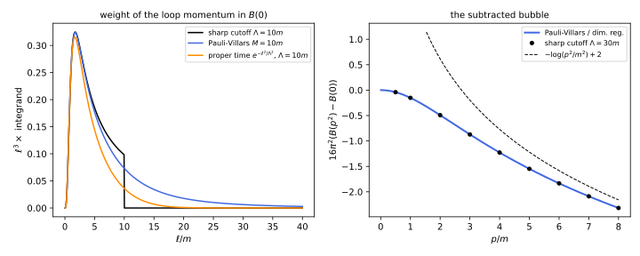
figures/ren-regulators.sage.
The definition below states the regularisation for a scalar propagator. Its two conditions are what is needed to make the quadratically divergent tadpole finite; a logarithmic divergence needs only the first.
Definition 1 (Pauli-Villars regularisation) Pauli-Villars regularisation replaces every propagator of mass m in a loop integral by \frac{1}{\ell_E^2 + m^2} \;\longrightarrow\; \frac{1}{\ell_E^2 + m^2} - \sum_{i = 1}^{k}\frac{c_i}{\ell_E^2 + M_i^2}, \qquad \sum_{i = 1}^{k}c_i = 1, \quad \sum_{i = 1}^{k}c_iM_i^2 = m^2 , \tag{3} with regulator masses M_i and coefficients c_i. The regulated propagator falls like \ell_E^{-6} (one condition gives \ell_E^{-4}), so the tadpole and the bubble become convergent; the regulator is removed by M_i \to \infty. A term with c_i > 0 is the propagator of a particle with the wrong sign of the kinetic term, a ghost, which is harmless because it is never produced at energies far below M_i.
Veriphy. Pending.
Lean. Pending.
Sage. Pending.
At zero external momentum the bubble needs only one regulator, and the result has the same logarithm as the cutoff. The first example computes it and identifies the two regulator scales.
Example 1 (The bubble with one regulator) With c_1 = 1 and M_1 = M applied to the product of the two propagators at p = 0, B_{\mathrm{PV}}(0) = \int\frac{d^4\ell_E}{(2\pi)^4}\Bigl(\frac{1}{(\ell_E^2 + m^2)^2} - \frac{1}{(\ell_E^2 + M^2)^2}\Bigr) = \frac{1}{16\pi^2}\log\frac{M^2}{m^2} exactly. The cutoff gives \frac{1}{16\pi^2}(\log\frac{\Lambda^2}{m^2} - 1) for \Lambda \gg m (Equation 2): the two agree if \Lambda^2 = eM^2. The coefficient of the logarithm, \frac{1}{16\pi^2}, is the same; only the constant that accompanies it depends on the regulator.
Veriphy. Pending.
Lean. Pending.
Sage. Pending.
The tadpole is the hard case, because its quadratic divergence must cancel. The second example uses two regulators of masses M and \sqrt2M.
Example 2 (The tadpole with two regulators) Each term of the regulated tadpole, computed with a cutoff and expanded for \Lambda \gg M_i, is \frac{1}{16\pi^2}(\Lambda^2 - M_i^2\log\Lambda^2 + M_i^2\log M_i^2); the conditions of Equation 3 remove the \Lambda^2 and \log\Lambda^2 terms and leave T_{\mathrm{PV}} = \frac{1}{16\pi^2}\Bigl(m^2\log m^2 - \sum_ic_iM_i^2\log M_i^2\Bigr). For M_1^2 = M^2, M_2^2 = 2M^2 the conditions give c_1 = 2 - m^2/M^2, c_2 = m^2/M^2 - 1, and T_{\mathrm{PV}} = \frac{1}{16\pi^2}\bigl(2\log2\,M^2 - m^2\log\frac{4M^2}{m^2}\bigr) (Exercise 1). The quadratic divergence is now 2\log2\,M^2 instead of \Lambda^2, but the term -\frac{m^2}{16\pi^2}\log\frac{1}{m^2} is the same as with the cutoff.
Veriphy. Pending.
Lean. Pending.
Sage. Pending.
The momentum dependence of the bubble is where regulators must agree, since it is measurable. The third example computes the subtracted bubble.
Example 3 (The subtracted bubble) With the Feynman parameter of Proposition 7 of Quantum field theory, B(p^2) = \int_0^1dx\int\frac{d^4\ell_E}{(2\pi)^4}(\ell_E^2 + \Delta)^{-2} with \Delta = m^2 + x(1 - x)p^2. In every regularisation of this part the divergent part is independent of \Delta, so B(p^2) - B(0) = -\frac{1}{16\pi^2}\int_0^1dx\,\log\Bigl(1 + x(1 - x)\frac{p^2}{m^2}\Bigr) = -\frac{1}{16\pi^2}\Bigl(\frac{p^2}{6m^2} - \frac{p^4}{60m^4} + \dots\Bigr), and for p^2 \gg m^2 it tends to -\frac{1}{16\pi^2}(\log\frac{p^2}{m^2} - 2). This is the curve of Figure 1; the dots computed with a sharp cutoff lie on it.
Veriphy. Pending.
Lean. Pending.
Sage. Pending.
A regulator that keeps symmetries is needed in gauge theories, and Pauli-Villars fields can be made gauge invariant by giving them the same charges as the fields they regulate. The fourth example shows how this works in quantum electrodynamics.
Example 4 (Pauli-Villars fields in quantum electrodynamics) A heavy charged fermion of mass M coupled to the photon like the electron, with the sign of its loop reversed, regulates the photon self-energy: the electron loop and the regulator loop are separately transverse, q_\mu\Pi^{\mu\nu} = 0, because each comes from a gauge-invariant Lagrangian, and their difference is finite. The vacuum polarisation then depends on \log(M^2/m^2) where dimensional regularisation has \frac2\epsilon + \log\frac{\mu^2}{m^2} (Section 1.6). The photon stays massless, which the sharp cutoff of Exercise 81 of Quantum field theory does not guarantee.
Veriphy. Pending.
Lean. Pending.
Sage. Pending.
The exercises compute the regulated tadpole exactly, match the cutoff to Pauli-Villars, and show why a sharp cutoff is ambiguous. The first is a computation for which Sage is convenient.
Exercise 1 (The regulated tadpole) With M_1^2 = M^2 and M_2^2 = 2M^2, solve the conditions of Equation 3 for c_1, c_2, compute m^2\log m^2 - \sum_ic_iM_i^2\log M_i^2 exactly, and confirm the formula of Example 2. Check numerically that the regulated integrand integrated with a large cutoff converges to the same value.
The conditions c_1 + c_2 = 1, c_1M^2 + 2c_2M^2 = m^2 give c_2 = m^2/M^2 - 1 and c_1 = 2 - m^2/M^2. Then c_1M^2\log M^2 + 2c_2M^2\log(2M^2) = m^2\log M^2 + 2(m^2 - M^2)\log 2, and 16\pi^2T_{\mathrm{PV}} = m^2\log\frac{m^2}{M^2} - 2(m^2 - M^2)\log2 = 2\log2\,M^2 - m^2\log\frac{4M^2}{m^2}. The numerical integral with m = 1, M = 10 agrees with this value:
var('m M c1 c2', domain='positive')
sol = solve([c1 + c2 == 1, c1 * M^2 + 2 * c2 * M^2 == m^2], c1, c2, solution_dict=True)[0]
print("c1 =", sol[c1], " c2 =", sol[c2])
T = m^2 * log(m^2) - sol[c1] * M^2 * log(M^2) - sol[c2] * 2 * M^2 * log(2 * M^2)
claim = 2 * log(2) * M^2 - m^2 * log(4 * M^2 / m^2)
print("16 pi^2 T_PV - claim simplifies to 0:", bool((T - claim).simplify_log().simplify_full() == 0))
mv, Mv = 1, 10
c1v, c2v = (sol[c1].subs(m=mv, M=Mv), sol[c2].subs(m=mv, M=Mv))
f = lambda l: 2 * l^3 * (1 / (l^2 + mv^2) - c1v / (l^2 + Mv^2) - c2v / (l^2 + 2 * Mv^2))
num = numerical_integral(f, 0, 10^5)[0]
print("numerical 16 pi^2 T_PV (cutoff 1e5): %.6f formula: %.6f" % (num, claim.subs(m=mv, M=Mv).n()))Output:
c1 = (2*M^2 - m^2)/M^2 c2 = -(M^2 - m^2)/M^2
16 pi^2 T_PV - claim simplifies to 0: True
numerical 16 pi^2 T_PV (cutoff 1e5): 132.637970 formula: 132.637972Veriphy. Pending.
Lean. Pending.
Sage. Pending.
The relation between \Lambda and M found in Example 1 is one instance of a general fact: two regulators differ by a finite change of the scale. The second exercise makes this precise for the bubble.
Exercise 2 (Matching two regulators) Show that B_\Lambda(0) - B_{\mathrm{PV}}(0) \to \frac{1}{16\pi^2}\bigl(\log\frac{\Lambda^2}{M^2} - 1\bigr) as \Lambda, M \to \infty, and conclude that the cutoff with \Lambda and Pauli-Villars with M = \Lambda/\sqrt e give the same renormalised four-point function.
From Equation 2, 16\pi^2B_\Lambda(0) = \log\frac{\Lambda^2 + m^2}{m^2} - \frac{\Lambda^2}{\Lambda^2 + m^2} \to \log\frac{\Lambda^2}{m^2} - 1, and 16\pi^2B_{\mathrm{PV}}(0) = \log\frac{M^2}{m^2}; the difference is \log\frac{\Lambda^2}{M^2} - 1, independent of m and of the external momentum (the subtracted bubbles agree, Example 3). It vanishes for \Lambda^2 = eM^2. The four-point function at one loop is -\lambda + \frac{\lambda^2}{2}(B(s) + B(t) + B(u)), so the two regulators give the same function of s, t, u when \lambda is the same, and in general differ by a constant that a redefinition of \lambda absorbs.
Veriphy. Pending.
Lean. Pending.
Sage. Pending.
A sharp cutoff makes integrals depend on the choice of the loop momentum when they diverge linearly. The third exercise computes the ambiguity for a vector integral.
Exercise 3 (Shifting the loop momentum) For f^\mu(\ell) = \ell^\mu/(\ell^2)^2 in four Euclidean dimensions, show that \int_{|\ell| < \Lambda}d^4\ell\,(f^\mu(\ell + a) - f^\mu(\ell)) \to \frac{\pi^2}{2}a^\mu as \Lambda \to \infty, so that a shift of the integration variable changes a linearly divergent integral by a finite amount.
To first order in a the difference is a^\nu\int d^4\ell\,\partial_\nu f^\mu, and higher orders vanish as \Lambda \to \infty because they fall faster. By Gauss’s theorem the integral is the flux through the sphere of radius \Lambda: with \ell = \Lambda n, dS_\nu = \Lambda^3n_\nu\,d\Omega and f^\mu = n^\mu/\Lambda^3, it is \int n_\nu n^\mu d\Omega = \frac14\delta^\mu_\nu \cdot 2\pi^2 = \frac{\pi^2}{2}\delta^\mu_\nu. The answer is finite and independent of \Lambda: it is the surface term that makes the triangle graph of Definition 23 of Quantum field theory ambiguous, and dimensional regularisation, in which shifts are always allowed, has no such term.
Veriphy. Pending.
Lean. Pending.
Sage. Pending.
The large-momentum form of the subtracted bubble is what turns into the running of the coupling. The fourth exercise computes it.
Exercise 4 (The subtracted bubble at large momentum) Compute \int_0^1\log(1 + x(1 - x)a)\,dx in closed form with Sage, expand it for small a and for large a, and confirm the two limits of Example 3.
With \beta = \sqrt{1 + 4/a} the integral is \beta\log\frac{\beta + 1}{\beta - 1} - 2. For small a it is \frac a6 - \frac{a^2}{60} + O(a^3), the Taylor series of the integrand integrated term by term; for large a, \beta \to 1 + 2/a and \log\frac{\beta + 1}{\beta - 1} \to \log a, so the integral is \log a - 2 + O(\log a/a). With a = p^2/m^2 this is -16\pi^2(B(p^2) - B(0)):
var('x'); var('a', domain='positive')
F = lambda av: numerical_integral(log(1 + x * (1 - x) * av), 0, 1)[0]
b = lambda av: sqrt(1 + 4 / av)
closed = lambda av: (b(av) * log((b(av) + 1) / (b(av) - 1)) - 2).n()
for av in [0.1, 1, 10, 1000]:
print("a = %-6s numerical %.8f closed form %.8f" % (av, F(av), closed(av)))
print("small a:", taylor(integrate(taylor(log(1 + x * (1 - x) * a), a, 0, 3), x, 0, 1), a, 0, 2))
for av in [1e3, 1e5, 1e7]:
print("large a = %.0e: integral - (log a - 2) = %.2e" % (av, F(av) - (log(av) - 2)))Output:
a = 0.100000000000000 numerical 0.01650234 closed form 0.01650234
a = 1 numerical 0.15204470 closed form 0.15204470
a = 10 numerical 0.93187748 closed form 0.93187748
a = 1000 numerical 4.92355800 closed form 4.92355800
small a: -1/60*a^2 + 1/6*a
large a = 1e+03: integral - (log a - 2) = 1.58e-02
large a = 1e+05: integral - (log a - 2) = 2.50e-04
large a = 1e+07: integral - (log a - 2) = 3.43e-06Veriphy. Pending.
Lean. Pending.
Sage. Pending.
Dimensional regularisation
Dimensional regularisation, introduced by ’t Hooft and Veltman, computes loop integrals in d dimensions, where they converge for d small enough, and continues the result analytically to d near 4. It keeps every symmetry that does not depend on the dimension, Lorentz and gauge invariance in particular, and it is the regulator of the Standard Model (Balduf 2024, sec. 2.3.3; Grozin 2005, sec. 2). Its divergences are poles at d = 4 and at other integer dimensions, where the Gamma functions of Proposition 7 of Quantum field theory have poles, as the figure shows.
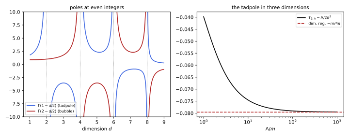
figures/ren-dimreg.sage.
The definition gives the integral a meaning for non-integer d through its radial form. Every one-loop integral can be reduced to it by Feynman parameters and a shift.
Definition 2 (Dimensional regularisation) For a rotation-invariant integrand f(\ell^2), the dimensionally regularised integral is \int\frac{d^d\ell}{(2\pi)^d}f(\ell^2) := \frac{1}{(4\pi)^{d/2}\Gamma(d/2)}\int_0^\infty(\ell^2)^{d/2 - 1}f(\ell^2)\,d(\ell^2), \tag{4} defined for the complex d where the right-hand side converges and continued analytically to the rest of the plane; for d a positive integer it is the ordinary integral over \mathbb R^d. Couplings are multiplied by powers of a scale \mu so that they keep their four-dimensional mass dimensions, and the result is expanded in \epsilon = 4 - d. The integral is linear, invariant under shifts and rotations of \ell, scales as \int f(s\ell) = s^{-d}\int f(\ell), and gives zero to every scaleless integral \int d^d\ell\,(\ell^2)^a.
Veriphy. Pending.
Lean. Pending.
Sage. Pending.
Applied to the tadpole, the definition gives a single pole and no trace of the quadratic divergence. The first example writes it out.
Example 5 (The tadpole in d dimensions) With Proposition 7 of Quantum field theory, \mu^\epsilon T = \mu^\epsilon\frac{\Gamma(1 - d/2)}{(4\pi)^{d/2}}(m^2)^{d/2 - 1}, and \Gamma(-1 + \epsilon/2) = -\frac2\epsilon - 1 + \gamma_E + O(\epsilon) gives \mu^\epsilon T = -\frac{m^2}{16\pi^2}\Bigl(\frac2\epsilon - \gamma_E + \log4\pi + 1 + \log\frac{\mu^2}{m^2}\Bigr) + O(\epsilon) (Exercise 6). There is no \Lambda^2: the pole multiplies m^2, and the term \frac{m^2}{16\pi^2}\log m^2 has the same coefficient as in the cutoff and Pauli-Villars results.
Veriphy. Pending.
Lean. Pending.
Sage. Pending.
The rule that scaleless integrals vanish looks like a trick. The second example shows what it hides, an ultraviolet and an infrared divergence that cancel each other.
Example 6 (Scaleless integrals vanish) The integral \int\frac{d^d\ell}{(2\pi)^d}\frac{1}{(\ell^2)^2} diverges at large \ell for d \geq 4 and at small \ell for d \leq 4, and no d makes it converge. Split it at \ell = \mu: by Equation 4 the part \ell > \mu is \frac{1}{(4\pi)^{d/2}\Gamma(d/2)}\frac{\mu^{d - 4}}{2 - d/2} for d < 4, and the part \ell < \mu is the same with the opposite sign for d > 4. Continued to all d, they cancel: \frac{2}{\epsilon_{\mathrm{UV}}} - \frac{2}{\epsilon_{\mathrm{IR}}} = 0. In a massless theory the ultraviolet pole of a graph can therefore be read off only after infrared divergences are regulated separately (Grozin 2005, sec. 3.7).
Veriphy. Pending.
Lean. Pending.
Sage. Pending.
In three dimensions the tadpole diverges linearly, and dimensional regularisation sets the linear divergence to zero. The third example compares the two regulators there.
Example 7 (The tadpole in three dimensions) At d = 3, \Gamma(1 - 3/2) = -2\sqrt\pi and the formula gives the finite value T_3 = -\frac{m}{4\pi}. With a cutoff, T_{3,\Lambda} = \frac{1}{2\pi^2}(\Lambda - m\arctan\frac\Lambda m) = \frac{\Lambda}{2\pi^2} - \frac{m}{4\pi} + O(m^2/\Lambda) (Exercise 7). The linear divergence is a local constant, absorbed into the bare mass; the term -\frac{m}{4\pi}, which is non-analytic in m^2, is the physical part, and the two regulators agree on it (Figure 2).
Veriphy. Pending.
Lean. Pending.
Sage. Pending.
The pole of a dimensionally regularised integral and the logarithm of a cutoff integral carry the same information. The fourth example states the dictionary that converts one into the other.
Example 8 (A dictionary between regulators) For the bubble, \mu^\epsilon B(0) = \frac{1}{16\pi^2}(\frac2\epsilon - \gamma_E + \log4\pi + \log\frac{\mu^2}{m^2}) and B_\Lambda(0) = \frac{1}{16\pi^2}(\log\frac{\Lambda^2}{m^2} - 1), so the replacement \frac2\epsilon - \gamma_E + \log4\pi + \log\mu^2 \to \log\Lambda^2 - 1 maps one onto the other (Example 79 of Quantum field theory). A logarithmic divergence becomes a pole at d = 4; a quadratic divergence becomes a pole at d = 2 (the pole of \Gamma(1 - d/2)) and is invisible at d = 4, which is why the tadpole has only the m^2/\epsilon pole.
Veriphy. Pending.
Lean. Pending.
Sage. Pending.
The exercises derive the general one-loop formula, expand the tadpole, compare regulators in three dimensions, and practise the algebra of gamma matrices in d dimensions. The first is the formula behind every one-loop integral.
Exercise 5 (The one-loop formula with a numerator) Using Equation 4 and the Beta integral \int_0^\infty\frac{u^{x - 1}}{(1 + u)^{x + y}}du = \frac{\Gamma(x)\Gamma(y)}{\Gamma(x + y)}, show that \int\frac{d^d\ell}{(2\pi)^d}\frac{(\ell^2)^a}{(\ell^2 + \Delta)^b} = \frac{\Gamma(b - a - d/2)\,\Gamma(a + d/2)}{(4\pi)^{d/2}\,\Gamma(b)\,\Gamma(d/2)} \Delta^{d/2 + a - b}, and check that a = 0 gives the formula of Proposition 7 of Quantum field theory.
Substituting \ell^2 = \Delta u in Equation 4 gives \frac{\Delta^{d/2 + a - b}}{(4\pi)^{d/2}\Gamma(d/2)}\int_0^\infty\frac{u^{a + d/2 - 1}}{(1 + u)^b}du, and the Beta integral with x = a + d/2, y = b - a - d/2 gives \frac{\Gamma(a + d/2)\Gamma(b - a - d/2)}{\Gamma(b)}. For a = 0 the factor \Gamma(d/2) cancels and the formula becomes \frac{\Gamma(b - d/2)}{(4\pi)^{d/2}\Gamma(b)}\Delta^{d/2 - b}. The formula holds where the integral converges, -d/2 < a < b - d/2, and defines it elsewhere by continuation.
Veriphy. Pending.
Lean. Pending.
Sage. Pending.
The expansion of the tadpole in \epsilon requires the Laurent series of \Gamma near -1. The second exercise lets Sage do it and compares the result with the cutoff.
Exercise 6 (Expanding the tadpole) Expand \mu^\epsilon\Gamma(-1 + \epsilon/2)(4\pi)^{-2 + \epsilon/2}(m^2)^{1 - \epsilon/2} in \epsilon with Sage and confirm Example 5. Show that the coefficient of m^2\log m^2 is +\frac{1}{16\pi^2}, as in Equation 2.
The series is -\frac{m^2}{16\pi^2}\bigl(\frac2\epsilon + 1 - \gamma_E + \log4\pi - \log\frac{m^2}{\mu^2}\bigr) + O(\epsilon). The term in \log m^2 is +\frac{m^2}{16\pi^2}\log m^2; in the cutoff result -\frac{m^2}{16\pi^2}\log\frac{\Lambda^2 + m^2}{m^2} \to -\frac{m^2}{16\pi^2}\log\Lambda^2 + \frac{m^2}{16\pi^2}\log m^2, the same coefficient. A term non-analytic in m^2 cannot be changed by a local counterterm, which is a polynomial in m^2, so every regulator must give it the same coefficient:
var('eps q'); var('m mu', domain='positive')
T = mu^eps * gamma(-1 + eps / 2) * (4 * pi)^(-2 + eps / 2) * (m^2)^(1 - eps / 2)
s = T.series(eps, 1).truncate().expand()
claim = -m^2 / (16 * pi^2) * (2 / eps - euler_gamma + log(4 * pi) + 1 + log(mu^2 / m^2))
print("series:", s.simplify_log())
print("series - claim = 0:", bool((s - claim.expand()).simplify_log().simplify_full() == 0))
finite = (16 * pi^2 * (s - s.coefficient(eps, -1) / eps)).subs(m=sqrt(q)).simplify_log()
print("16 pi^2 x coefficient of q log q (q = m^2), dimensional:", limit(q * diff(finite, q, 2), q=0))
cut = var('L')^2 - q * log((L^2 + q) / q)
print("16 pi^2 x coefficient of q log q, cutoff:", limit(q * diff(cut, q, 2), q=0))Output:
series: 1/16*((euler_gamma + log(1/4*m^2/(pi*mu^2)) - 1)*eps - 2)*m^2/(pi^2*eps)
series - claim = 0: True
16 pi^2 x coefficient of q log q (q = m^2), dimensional: 1
16 pi^2 x coefficient of q log q, cutoff: 1Veriphy. Pending.
Lean. Pending.
Sage. Pending.
In three dimensions the cutoff integral can be done in closed form, and the comparison is exact. The third exercise does it.
Exercise 7 (Three dimensions with a cutoff) Compute \int_{|\ell| < \Lambda}\frac{d^3\ell}{(2\pi)^3}\frac{1}{\ell^2 + m^2} exactly and expand it for \Lambda \gg m. Compare with the dimensionally regularised value.
With d^3\ell = 4\pi\ell^2d\ell the integral is \frac{1}{2\pi^2}\int_0^\Lambda\frac{\ell^2}{\ell^2 + m^2}d\ell = \frac{1}{2\pi^2}(\Lambda - m\arctan\frac\Lambda m). Since \arctan\frac\Lambda m = \frac\pi2 - \frac m\Lambda + O(m^3/\Lambda^3), it equals \frac{\Lambda}{2\pi^2} - \frac{m}{4\pi} + \frac{m^2}{2\pi^2\Lambda} + \dots. Dropping the linear divergence, the limit -\frac{m}{4\pi} is the value of Example 7; the corrections vanish as \Lambda \to \infty.
Veriphy. Pending.
Lean. Pending.
Sage. Pending.
Fermion loops need traces of gamma matrices in d dimensions, where \gamma^\mu\gamma_\mu is d rather than 4. The fourth exercise derives the two identities used for quantum electrodynamics in Section 1.6.
Exercise 8 (Gamma matrices in d dimensions) From \{\gamma^\mu, \gamma^\nu\} = 2\eta^{\mu\nu} with \eta^\mu{}_\mu = d, show \gamma^\mu\gamma_\mu = d, \gamma^\mu{a}\!\!\!/\gamma_\mu = -(d - 2){a}\!\!\!/ and \gamma^\mu{a}\!\!\!/{b}\!\!\!/\gamma_\mu = 4a\cdot b - (4 - d){a}\!\!\!/{b}\!\!\!/ (Grozin 2005, eqs. 3.26-3.28).
\gamma^\mu\gamma_\mu = \frac12\{\gamma^\mu, \gamma_\mu\} = \eta^\mu{}_\mu = d. Next, \gamma^\mu{a}\!\!\!/\gamma_\mu = \gamma^\mu(-\gamma_\mu{a}\!\!\!/ + 2a_\mu) = -d{a}\!\!\!/ + 2{a}\!\!\!/ = -(d - 2){a}\!\!\!/. Finally \gamma^\mu{a}\!\!\!/{b}\!\!\!/\gamma_\mu = \gamma^\mu{a}\!\!\!/(-\gamma_\mu{b}\!\!\!/ + 2b_\mu) = (d - 2){a}\!\!\!/{b}\!\!\!/ + 2{b}\!\!\!/{a}\!\!\!/, and with {b}\!\!\!/{a}\!\!\!/ = 2a\cdot b - {a}\!\!\!/{b}\!\!\!/ this is 4a\cdot b + (d - 4){a}\!\!\!/{b}\!\!\!/. At d = 4 these are the familiar identities; the terms proportional to d - 4 multiply poles 1/\epsilon and produce finite parts.
Veriphy. Pending.
Lean. Pending.
Sage. Pending.
Zeta-function and heat-kernel regularisation
At one loop a free field in a background contributes \tfrac12\log\det D to the Euclidean effective action, where D is the operator of its quadratic action, for a scalar D = -\Delta + m^2. The determinant is the product of the eigenvalues, which diverges, and the heat kernel of Definition 38 of Functional analysis turns it into an integral over a proper time t whose small-t end carries the divergences (Vassilevich 2003, sec. 1). The heat trace of the sphere, drawn in the figure, shows the expansion in powers of t that controls them.
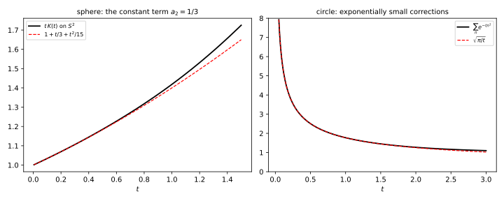
figures/ren-heat-trace.sage.
The definition writes the logarithm of each eigenvalue as a proper-time integral and cuts the integral off at small t. Moving the power of t instead gives the zeta function of Definition 39 of Functional analysis.
Definition 3 (Proper-time regularisation) Let D be a positive elliptic operator of Laplace type on an n-dimensional manifold, with heat trace K(t) = \operatorname{Tr}e^{-tD}. Since \log\lambda = -\int_0^\infty\frac{dt}{t}e^{-t\lambda} up to a constant independent of \lambda, the one-loop effective action W = \tfrac12\log\det D is formally -\frac12\int_0^\infty\frac{dt}{t}K(t). Its proper-time regularisation with cutoff \Lambda is W_\Lambda = -\frac12\int_{\Lambda^{-2}}^\infty\frac{dt}{t}K(t), \tag{5} and its zeta-function regularisation is W_s = -\frac12\tilde\mu^{2s}\int_0^\infty\frac{dt}{t^{1 - s}}K(t) = -\frac12\tilde\mu^{2s}\Gamma(s)\zeta_D(s), continued to s = 0, with a scale \tilde\mu (Vassilevich 2003, eqs. 1.18-1.20, 2.28-2.29).
Veriphy. Pending.
Lean. Pending.
Sage. Pending.
In flat space the heat kernel is a Gaussian, and the proper-time integral can be done exactly. The first example finds the three divergences of the vacuum energy.
Example 9 (The vacuum energy in flat space) For D = -\Delta + m^2 on a large box of volume V in four dimensions, K(t) = V\frac{e^{-tm^2}}{(4\pi t)^2} (Vassilevich 2003, eq. 1.12), so \frac{W_\Lambda}{V} = -\frac{1}{32\pi^2}\int_{\Lambda^{-2}}^\infty\frac{dt}{t^3}e^{-tm^2} = -\frac{1}{32\pi^2}\Bigl(\frac{\Lambda^4}{2} - m^2\Lambda^2 + \frac{m^4}{2}\Bigl(\log\frac{\Lambda^2}{m^2} - \gamma_E + \frac32\Bigr)\Bigr) + O(\Lambda^{-2}) (Exercise 9). Its derivative with respect to m^2 is half the tadpole, \frac{1}{32\pi^2}(\Lambda^2 - m^2\log\frac{\Lambda^2}{m^2} + \dots), with the same m^2\log m^2 term as before: proper time is one more regulator of Equation 1.
Veriphy. Pending.
Lean. Pending.
Sage. Pending.
The zeta function gives the same effective action with the divergences removed and a scale \mu left behind. The second example is the one-loop effective potential of a scalar of mass m.
Example 10 (The zeta-regularised vacuum energy) In flat space \zeta_D(s) = V\int\frac{d^4k}{(2\pi)^4}(k^2 + m^2)^{-s} = V\frac{\Gamma(s - 2)}{16\pi^2\Gamma(s)}m^{4 - 2s}. With the renormalised action W = -\frac12\zeta_D'(0) - \frac12\log\mu^2\,\zeta_D(0) (Vassilevich 2003, eq. 2.32), \frac WV = \frac{m^4}{64\pi^2}\Bigl(\log\frac{m^2}{\mu^2} - \frac32\Bigr) (Exercise 10). Replacing m^2 by m^2 + \frac\lambda2\phi^2 gives the Coleman-Weinberg potential of the quartic theory; the \frac32 is the constant that the cutoff result carries as -\gamma_E + \frac32, and the pure powers \Lambda^4, m^2\Lambda^2 are gone.
Veriphy. Pending.
Lean. Pending.
Sage. Pending.
On a compact space the zeta function also defines the determinant itself. The third example computes the simplest one, on a circle.
Example 11 (The determinant of the circle) On a circle of length L the operator -\partial_x^2 has eigenvalues (2\pi n/L)^2, n \neq 0 (the zero mode removed), each for \pm n. Then \zeta(s) = 2(L/2\pi)^{2s}\zeta_R(2s), \zeta(0) = 2\zeta_R(0) = -1 and \zeta'(0) = 4\log\frac{L}{2\pi}\zeta_R(0) + 4\zeta_R'(0) = -2\log\frac{L}{2\pi} - 2\log2\pi = -2\log L, so \det{}'(-\partial_x^2) = e^{-\zeta'(0)} = L^2 (Exercise 11). The divergent product \prod_n(2\pi n/L)^4 has been given a finite value that depends on L as a determinant of a scaled operator should.
Veriphy. Pending.
Lean. Pending.
Sage. Pending.
The exercises expand the flat proper-time integral, derive the zeta-regularised potential and compute the determinant of the circle. The first is a Sage expansion of an incomplete Gamma function.
Exercise 9 (The proper-time integral) Evaluate \int_{\Lambda^{-2}}^\infty t^{-3}e^{-tm^2}dt in terms of the incomplete Gamma function and expand it for large \Lambda with Sage, confirming Example 9.
The integral is m^4\Gamma(-2, m^2/\Lambda^2), and for small z = m^2/\Lambda^2, \Gamma(-2, z) = \frac{1}{2z^2} - \frac1z - \frac12\log z + \frac34 - \frac{\gamma_E}{2} + O(z). Multiplying by m^4 gives \frac{\Lambda^4}{2} - m^2\Lambda^2 + \frac{m^4}{2}(\log\frac{\Lambda^2}{m^2} - \gamma_E + \frac32):
var('t'); var('m L z', domain='positive')
I = integrate(t^(-3) * exp(-t * m^2), t, 1 / L^2, oo)
print("integral:", I)
claim = L^4 / 2 - m^2 * L^2 + m^4 / 2 * (log(L^2 / m^2) - euler_gamma + 3 / 2)
for Lv in [10, 30, 100]:
print("m = 1, Lambda = %4d: exact %.8f expansion %.8f" % (Lv, I.subs(m=1, L=Lv).n(), claim.subs(m=1, L=Lv).n()))Output:
integral: m^4*gamma(-2, m^2/L^2)
m = 1, Lambda = 10: exact 4902.76564185 expansion 4902.76397726
m = 1, Lambda = 30: exact 404103.86277471 expansion 404103.86258955
m = 1, Lambda = 100: exact 49990005.06657900 expansion 49990005.06656235Veriphy. Pending.
Lean. Pending.
Sage. Pending.
The zeta function of the flat operator is a ratio of Gamma functions, and its derivative at s = 0 gives the finite potential. The second exercise carries this out.
Exercise 10 (The Coleman-Weinberg potential) Derive \zeta_D(s) = V\frac{\Gamma(s - 2)}{16\pi^2\Gamma(s)}m^{4 - 2s} for D = -\Delta + m^2 in four dimensions, compute \zeta_D(0) and \zeta_D'(0) with Sage, and confirm Example 10. Then write the one-loop effective potential of \frac{\lambda}{4!}\phi^4 in a constant background \phi.
With Equation 4 at d = 4 and Exercise 5 (a = 0, b = s), \int\frac{d^4k}{(2\pi)^4}(k^2 + m^2)^{-s} = \frac{\Gamma(s - 2)}{16\pi^2\Gamma(s)}m^{4 - 2s}. Since \frac{\Gamma(s - 2)}{\Gamma(s)} = \frac{1}{(s - 1)(s - 2)}, \zeta_D(s) = \frac{Vm^{4 - 2s}}{16\pi^2(s - 1)(s - 2)}, so \zeta_D(0) = \frac{Vm^4}{32\pi^2} and \zeta_D'(0) = \frac{Vm^4}{32\pi^2}(\frac32 - \log m^2). Then W/V = -\frac{m^4}{64\pi^2}(\frac32 - \log m^2) - \frac{m^4}{64\pi^2}\log\mu^2 = \frac{m^4}{64\pi^2}(\log\frac{m^2}{\mu^2} - \frac32). In a background \phi the fluctuation mass is m^2 + \frac\lambda2\phi^2, so V_{\mathrm{eff}} = \frac12m^2\phi^2 + \frac{\lambda}{24}\phi^4 + \frac{(m^2 + \lambda\phi^2/2)^2}{64\pi^2}(\log\frac{m^2 + \lambda\phi^2/2}{\mu^2} - \frac32):
var('s'); var('m mu', domain='positive')
print("Gamma(s - 2)/Gamma(s) =", (gamma(s - 2) / gamma(s)).simplify_full().factor())
zeta_D = m^(4 - 2 * s) / (16 * pi^2 * (s - 1) * (s - 2))
z0 = zeta_D.subs(s=0); dz0 = diff(zeta_D, s).subs(s=0)
W = -dz0 / 2 - log(mu^2) * z0 / 2
print("zeta(0)/V =", z0, " zeta'(0)/V =", dz0.simplify_log())
print("W/V equals m^4/(64 pi^2) (log(m^2/mu^2) - 3/2):", bool((W - m^4 / (64 * pi^2) * (log(m^2 / mu^2) - 3 / 2)).simplify_log().simplify_full() == 0))
var('phi lam')
M2 = m^2 + lam * phi^2 / 2
print("V_eff =", m^2 * phi^2 / 2 + lam * phi^4 / 24 + M2^2 / (64 * pi^2) * (log(M2 / mu^2) - 3 / 2))Output:
Gamma(s - 2)/Gamma(s) = 1/((s - 1)*(s - 2))
zeta(0)/V = 1/32*m^4/pi^2 zeta'(0)/V = -1/64*m^4*(log(m^4) - 3)/pi^2
W/V equals m^4/(64 pi^2) (log(m^2/mu^2) - 3/2): True
V_eff = 1/24*lam*phi^4 + 1/2*m^2*phi^2 + 1/512*(lam*phi^2 + 2*m^2)^2*(2*log(1/2*(lam*phi^2 + 2*m^2)/mu^2) - 3)/pi^2Veriphy. Pending.
Lean. Pending.
Sage. Pending.
The determinant of the circle is the building block of the determinants on tori and of the partition function of a string. The third exercise fills in the steps of Example 11.
Exercise 11 (The determinant of the circle) Using \zeta_R(0) = -\frac12 and \zeta_R'(0) = -\frac12\log2\pi, derive \det{}'(-\partial_x^2) = L^2 on the circle of length L, and deduce how the determinant of -c\,\partial_x^2 depends on the constant c > 0.
\zeta(s) = \sum_{n \neq 0}(2\pi|n|/L)^{-2s} = 2(L/2\pi)^{2s}\zeta_R(2s), so \zeta'(0) = 4\log\frac{L}{2\pi}\zeta_R(0) + 4\zeta_R'(0) = -2\log\frac{L}{2\pi} - 2\log2\pi = -2\log L, and \det{}' = e^{2\log L} = L^2. For cD, \zeta_{cD}(s) = c^{-s}\zeta_D(s), so \zeta_{cD}'(0) = \zeta_D'(0) - \log c\,\zeta_D(0) and \det{}'(cD) = c^{\zeta_D(0)}\det{}'D = L^2/c. The determinant does not scale like c^{\infty}, as the formal product would: the multiplicative anomaly is governed by \zeta(0) = -1.
Veriphy. Pending.
Lean. Pending.
Sage. Pending.
The divergences of the proper-time action come from the small-t expansion of the heat trace, whose coefficients are local. The proposition states the connection and the values of the first coefficients.
Proposition 1 (Divergences from the heat kernel) Let D = -(g^{\mu\nu}\nabla_\mu\nabla_\nu + E) on a closed n-dimensional manifold, with K(t) \sim \sum_{k \geq 0}t^{(k - n)/2}a_k as t \to 0 (a_k = 0 for odd k). Then W_\Lambda = -\sum_{k < n}\frac{a_k}{n - k}\Lambda^{n - k} - a_n\log\Lambda + O(\Lambda^0), the zeta function has \zeta_D(0) = a_n - \dim\ker D, the pole of the zeta-regularised action is -\frac{\zeta_D(0)}{2s}, and a_0 = \frac{\operatorname{tr}1\cdot\operatorname{vol}M}{(4\pi)^{n/2}}, \qquad a_2 = \frac{1}{(4\pi)^{n/2}}\frac16\int_M\sqrt g\operatorname{tr}(6E + R) (Vassilevich 2003, eqs. 1.21, 2.26-2.27, 4.26-4.27).
Veriphy. Pending.
Lean. Pending.
Sage. Pending.
Proof. Inserting the expansion into Equation 5, the term a_kt^{(k - n)/2} gives -\frac12a_k\int_{\Lambda^{-2}}t^{(k - n)/2 - 1}dt, which is -\frac{a_k}{n - k}\Lambda^{n - k} at the lower limit for k < n and -\frac12a_n\log\Lambda^2 for k = n; the terms k > n are finite. For the zeta function, \Gamma(s)\zeta_D(s) = \int_0^\infty t^{s - 1}(K(t) - \dim\ker D)dt, and near s = 0 the term t^0(a_n - \dim\ker D) integrated over t < 1 gives \frac{a_n - \dim\ker D}{s}, while \Gamma(s) = \frac1s + \dots. The values of a_0 and a_2 are computed in the reference from the heat kernel of a Gaussian corrected by curvature. \square
The sphere is the simplest curved example, and its zeta function at zero is a pure number. The first example computes it from a_2.
Example 12 (The zeta function of the sphere at zero) For D = -\Delta on the unit sphere S^2, E = 0 and R = 2, so a_2 = \frac{1}{4\pi}\cdot\frac16\cdot2\cdot4\pi = \frac13. The constant function is the one zero mode, so \zeta(0) = \frac13 - 1 = -\frac23, a known value; the heat trace of Figure 3 has the expansion \frac1t + \frac13 + \frac{t}{15} + \dots, whose constant term is a_2 (Exercise 12). On the unit circle a_1 vanishes and \zeta(0) = 0 - 1 = -1, as found in Example 11.
Veriphy. Pending.
Lean. Pending.
Sage. Pending.
In flat space the proposition must reproduce the three divergences of Example 9. The second example checks it with E = -m^2.
Example 13 (Flat space from the coefficients) For D = -\Delta + m^2, E = -m^2 and the flat heat kernel \frac{e^{-tm^2}}{(4\pi t)^2} expands as \frac{1}{16\pi^2}(t^{-2} - m^2t^{-1} + \frac{m^4}{2} + \dots) per unit volume: a_0 = \frac{V}{16\pi^2}, a_2 = -\frac{m^2V}{16\pi^2} (from 6E/6) and a_4 = \frac{m^4V}{32\pi^2}. The proposition gives W_\Lambda = -\frac{a_0}{4}\Lambda^4 - \frac{a_2}{2}\Lambda^2 - a_4\log\Lambda, that is -\frac{V}{32\pi^2}(\frac{\Lambda^4}{2} - m^2\Lambda^2 + \frac{m^4}{2}\log\Lambda^2), the divergent part of Example 9.
Veriphy. Pending.
Lean. Pending.
Sage. Pending.
On a curved space the coefficient a_2 contains the curvature scalar, so the quadratic divergence of a scalar loop renormalises the coefficient of R in the action. The third example draws the consequence.
Example 14 (Induced gravity) For a scalar with D = -\Delta + \xi R + m^2 in four dimensions, E = -\xi R - m^2 and a_2 = \frac{1}{16\pi^2}\int\sqrt g\,(\tfrac16 - \xi)R + \dots. The term -\frac{a_2}{2}\Lambda^2 of the proposition is -\frac{\Lambda^2}{32\pi^2}(\frac16 - \xi)\int\sqrt g\,R, the form of the Einstein-Hilbert action: quantum matter shifts Newton’s constant by an amount quadratic in the cutoff, unless \xi = \frac16, the conformal coupling (Exercise 13). The logarithmic coefficient a_4 contains R^2 and R_{\mu\nu\rho\sigma}R^{\mu\nu\rho\sigma}, terms that gravity alone does not have.
Veriphy. Pending.
Lean. Pending.
Sage. Pending.
The exercises for the proposition check the sphere coefficients numerically, compute the shift of Newton’s constant and find the zeta function of a flat torus at zero. The sphere’s heat trace converges quickly for any positive t, so the first exercise sums it numerically and reads off its expansion.
Exercise 12 (The heat trace of the sphere) Compute K(t) = \sum_{l \geq 0}(2l + 1)e^{-tl(l + 1)} numerically for t = 0.01, 0.02, 0.05 and fit tK(t) = c_0 + c_1t + c_2t^2. Compare with 1 + \frac t3 + \frac{t^2}{15} and deduce \zeta(0) for the Laplacian on S^2.
The sums converge fast for t > 0; solving the three linear equations gives c_0 \approx 1.0000, c_1 \approx 0.3333 and c_2 \approx 0.067, the predicted 1, \frac13, \frac1{15} (the series is asymptotic, so the fit is limited by the next term \frac{4t^3}{315}). With a_2 = c_1 = \frac13 and one zero mode, \zeta(0) = -\frac23:
R = RealField(100)
def K(t):
t = R(t); return sum((2 * l + 1) * exp(-t * l * (l + 1)) for l in range(0, 3000))
ts = [R(0.01), R(0.02), R(0.05)]
A = matrix(R, [[1, t, t^2] for t in ts]); b = vector(R, [t * K(t) for t in ts])
c = A.solve_right(b)
print("fit: c0 = %.6f, c1 = %.6f, c2 = %.5f (predicted 1, 1/3 = 0.333333, 1/15 = 0.06667)" % tuple(c))
print("zeta(0) = a_2 - (number of zero modes) =", QQ(1/3) - 1)Output:
fit: c0 = 1.000000, c1 = 0.333311, c2 = 0.06770 (predicted 1, 1/3 = 0.333333, 1/15 = 0.06667)
zeta(0) = a_2 - (number of zero modes) = -2/3Veriphy. Pending.
Lean. Pending.
Sage. Pending.
The quadratic divergence of a matter loop in curved space shifts the gravitational coupling. The second exercise computes the shift for a minimally coupled scalar.
Exercise 13 (The shift of Newton’s constant) With the Euclidean Einstein-Hilbert action -\frac{1}{16\pi G}\int\sqrt g\,R, find the shift \delta(1/G) produced by the term of Example 14, and evaluate it for \xi = 0 and \Lambda = 10^{19}\,\mathrm{GeV}.
The effective action contains -\frac{\Lambda^2}{32\pi^2}(\frac16 - \xi)\int\sqrt g\,R, which adds to -\frac{1}{16\pi G}\int\sqrt gR; so \delta\bigl(\frac{1}{16\pi G}\bigr) = \frac{\Lambda^2}{32\pi^2}(\frac16 - \xi) and \delta(1/G) = \frac{\Lambda^2(1 - 6\xi)}{12\pi}. For \xi = 0 and \Lambda = 10^{19}\,\mathrm{GeV} this is 2.7 \times 10^{36}\,\mathrm{GeV}^2, compared with 1/G = M_P^2 = 1.5 \times 10^{38}\,\mathrm{GeV}^2: a single scalar shifts 1/G by about 2\% with a Planckian cutoff, Sakharov’s observation that gravity may be induced by matter.
Veriphy. Pending.
Lean. Pending.
Sage. Pending.
On a flat space without boundary the heat coefficients a_k with k \geq 1 vanish for the Laplacian, so \zeta(0) is fixed by the zero modes alone. The third exercise checks this on the two-dimensional torus with the explicit spectrum.
Exercise 14 (The torus at zero) For the Laplacian on the flat torus \mathbb R^2/(2\pi\mathbb Z)^2, with eigenvalues n_1^2 + n_2^2, use Proposition 1 to find \zeta(0), and confirm it from the heat trace K(t) = (\sum_ne^{-tn^2})^2 and the Poisson formula \sum_ne^{-tn^2} = \sqrt{\pi/t}\sum_ke^{-\pi^2k^2/t}.
Here n = 2, E = 0 and R = 0, so a_0 = \frac{(2\pi)^2}{4\pi} = \pi, a_1 = 0 and a_2 = 0; with one zero mode, \zeta(0) = 0 - 1 = -1. From the Poisson formula, K(t) = \frac\pi t(1 + O(e^{-\pi^2/t}))^2: the expansion is \frac{a_0}{t} with no constant term at all, and every a_k with k \geq 1 vanishes, as on the circle (Figure 3). The value -1 is the same as for the circle of Example 11, because in both cases only the constant mode contributes.
Veriphy. Pending.
Lean. Pending.
Sage. Pending.
Lattice regularisation
A lattice replaces space-time by the points of a\mathbb Z^d and derivatives by differences. It is the only regulator that defines the path integral itself, not just its perturbation series, as an ordinary integral over finitely many variables in a finite volume (Boudreau and Swanson 2018, sec. 24.2), and it is the one used for numerical computations and for rigorous work. The figure shows how the lattice changes the propagator at momenta of order 1/a.
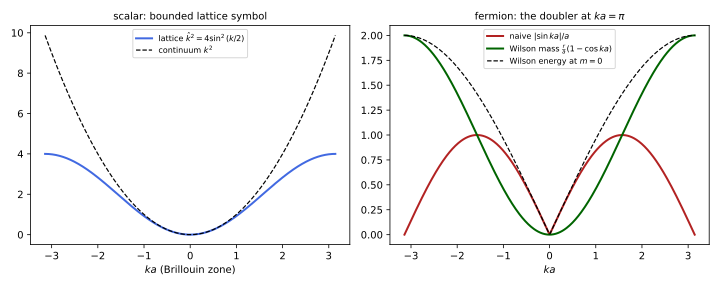
figures/ren-lattice.sage.
The definition fixes the lattice action of the scalar field and the propagator it implies. The field lives on the sites, and momenta live in the Brillouin zone.
Definition 4 (Lattice regularisation) The lattice regularisation of the Euclidean scalar theory with spacing a has fields \phi_x on x \in a\mathbb Z^d and action S = a^d\sum_x\Bigl(\frac12\sum_{\mu = 1}^d(\nabla_\mu\phi)_x^2 + \frac12m_0^2\phi_x^2 + \frac{\lambda_0}{4!}\phi_x^4\Bigr), \qquad (\nabla_\mu\phi)_x = \frac{\phi_{x + a\hat\mu} - \phi_x}{a} . \tag{6} Its free propagator is \bigl(\hat k^2 + m_0^2\bigr)^{-1} with \hat k^2 = \frac{4}{a^2}\sum_\mu\sin^2\frac{k_\mu a}{2} for k in the Brillouin zone [-\pi/a, \pi/a]^d, so that loop integrals \int_{-\pi/a}^{\pi/a}\frac{d^dk}{(2\pi)^d} are finite; the continuum limit is a \to 0 with the bare parameters m_0(a), \lambda_0(a) tuned to keep physical quantities fixed (Boudreau and Swanson 2018, eqs. 24.5-24.7; Roland Bauerschmidt and Slade 2019, eq. 1.5.25).
Veriphy. Pending.
Lean. Pending.
Sage. Pending.
At momenta small compared with 1/a the lattice propagator is the continuum one, with corrections that break rotation invariance. The first example expands it.
Example 15 (The lattice propagator at small momenta) Since \frac{4}{a^2}\sin^2\frac{ka}{2} = k^2 - \frac{a^2k^4}{12} + \frac{a^4k^6}{360} - \dots, \hat k^2 = k^2 - \frac{a^2}{12}\sum_\mu k_\mu^4 + O(a^4) (Exercise 18). The correction \sum_\mu k_\mu^4 is invariant under the hypercubic group but not under rotations; it is an irrelevant operator of dimension six, suppressed by a^2, and rotation invariance is recovered in the continuum limit.
Veriphy. Pending.
Lean. Pending.
Sage. Pending.
The lattice tadpole is finite, and its quadratic divergence appears as a definite number times 1/a^2. The second example evaluates it at zero mass.
Example 16 (The lattice tadpole) At m_0 = 0, T_a = \int_{-\pi/a}^{\pi/a}\frac{d^4k}{(2\pi)^4}\frac{1}{\hat k^2} = \frac{C_4}{a^2} with C_4 = \int_{[-\pi,\pi]^4}\frac{d^4k}{(2\pi)^4}\frac{1}{4\sum_\mu\sin^2(k_\mu/2)}. Writing \frac1\lambda = \int_0^\infty e^{-t\lambda}dt and \int_{-\pi}^\pi e^{-4t\sin^2(k/2)}\frac{dk}{2\pi} = e^{-2t}I_0(2t) gives C_4 = \int_0^\infty(e^{-2t}I_0(2t))^4dt = 0.154933 (Exercise 15). The one-loop mass shift is \frac{\lambda_0}{2}\frac{0.1549}{a^2}, which the bare mass must cancel to keep the physical mass fixed as a \to 0: the lattice version of the fine-tuning of a scalar mass.
Veriphy. Pending.
Lean. Pending.
Sage. Pending.
The logarithmic divergence of the bubble survives on the lattice as a logarithm of ma. The third example uses the bubble diagram of statistical mechanics, which is the same integral (Roland Bauerschmidt and Slade 2019, sec. 1.5.3).
Example 17 (The lattice bubble) The bubble at zero momentum, B_{m^2} = \int_{[-\pi,\pi]^d}\frac{d^dk}{(2\pi)^d}\frac{1}{(\lambda(k) + m^2)^2} with \lambda(k) = 4\sum_\mu\sin^2(k_\mu/2) and the spacing set to 1, is finite at m = 0 if and only if d > 4, and as m^2 \to 0 it behaves like b_dm^{-(4 - d)} for d < 4 and like \frac{1}{16\pi^2}\log m^{-2} for d = 4 (Roland Bauerschmidt and Slade 2019, Exercise 1.5.4). The coefficient \frac{1}{16\pi^2} is that of the continuum bubble (Example 1): the logarithm is universal, and in statistical mechanics it is the origin of the logarithmic corrections in four dimensions (Section 1.9).
Veriphy. Pending.
Lean. Pending.
Sage. Pending.
Fermions on a lattice bring a problem that scalars do not have. The fourth example shows the doublers and Wilson’s cure.
Example 18 (Fermion doublers) The naive lattice Dirac operator replaces \partial_\mu by the symmetric difference, whose symbol is \frac ia\sin k_\mu a. It vanishes at k_\mu = 0 and at k_\mu = \pi/a, so in d dimensions there are 2^d massless fermions instead of one, 16 in four dimensions. Wilson adds \frac{r}{a}\sum_\mu(1 - \cos k_\mu a) to the mass, which vanishes at k = 0 and gives each doubler a mass of order 2r/a, so that they decouple as a \to 0 (Figure 4). The Wilson term breaks chiral symmetry, a price that a theorem of Nielsen and Ninomiya says some regulator must pay (Boudreau and Swanson 2018, sec. 24.6).
Veriphy. Pending.
Lean. Pending.
Sage. Pending.
The exercises compute lattice constants with Sage, prove the criterion for the finiteness of the bubble, analyse the Wilson fermion, and expand the lattice dispersion. The first computes the tadpole constants in three and four dimensions.
Exercise 15 (The lattice tadpole constants) Compute C_d = \int_0^\infty(e^{-2t}I_0(2t))^d\,dt for d = 3 and d = 4 with Sage, and explain why the integral diverges for d \leq 2.
The integrand behaves like (4\pi t)^{-d/2} for large t (since e^{-2t}I_0(2t) \sim (4\pi t)^{-1/2}), so the integral converges if and only if d > 2: in d \leq 2 the massless lattice propagator is not summable, the recurrence of random walks in one and two dimensions (Roland Bauerschmidt and Slade 2019, Exercise 1.5.5). Numerically C_3 = 0.252731 (Watson’s integral) and C_4 = 0.154933:
import mpmath as mpm
mpm.mp.dps = 20
for d in [3, 4]:
C = mpm.quad(lambda u: (mpm.exp(-2 * u) * mpm.besseli(0, 2 * u))**d, [0, 1, 10, 100, 1000, mpm.inf])
print("C_%d = %s" % (d, mpm.nstr(C, 10)))
print("large-t behaviour: e^(-2t) I_0(2t) sqrt(4 pi t) at t = 1000:", mpm.nstr(mpm.exp(-2000) * mpm.besseli(0, 2000) * mpm.sqrt(4 * mpm.pi * 1000), 8))Output:
C_3 = 0.2527310099
C_4 = 0.1549333902
large-t behaviour: e^(-2t) I_0(2t) sqrt(4 pi t) at t = 1000: 1.0000625Veriphy. Pending.
Lean. Pending.
Sage. Pending.
The finiteness criterion of Example 17 follows from the behaviour of the integrand near k = 0. The second exercise proves it (Roland Bauerschmidt and Slade 2019, Exercise 1.5.4).
Exercise 16 (When the bubble is finite) Show that B_0 = \int_{[-\pi,\pi]^d}\frac{d^dk}{(2\pi)^d}\lambda(k)^{-2} is finite if and only if d > 4, and that for d = 4, B_{m^2} = \frac{1}{16\pi^2}\log m^{-2} + O(1) as m^2 \to 0.
On [-\pi, \pi]^d, \lambda(k) = 4\sum\sin^2(k_\mu/2) vanishes only at k = 0, and c|k|^2 \leq \lambda(k) \leq |k|^2 with c = 4/\pi^2. The integral of \lambda^{-2} therefore converges exactly when \int_{|k| < 1}|k|^{-4}d^dk = \Omega_d\int_0^1k^{d - 5}dk does, that is for d > 4. For d = 4, split the zone into |k| < 1, where \lambda = k^2(1 + O(k^2)), and the rest, which is bounded: \int_{|k| < 1}\frac{d^4k}{(2\pi)^4}\frac{1}{(k^2 + m^2)^2} = \frac{1}{8\pi^2}\int_0^1\frac{k^3dk}{(k^2 + m^2)^2} = \frac{1}{16\pi^2}\log m^{-2} + O(1).
Veriphy. Pending.
Lean. Pending.
Sage. Pending.
Wilson’s fix of the doublers has a cost in the approach to the continuum. The third exercise analyses the free Wilson fermion in one dimension (Boudreau and Swanson 2018, Exercise 24.1).
Exercise 17 (The Wilson fermion) For the one-dimensional lattice Dirac operator with symbol \frac ia\gamma\sin ka + m + \frac ra(1 - \cos ka), find the effective mass M(k) at k = 0 and at the doubler k = \pi/a, and the first correction in a to the energy E^2 = \frac{\sin^2ka}{a^2} + M(k)^2 at small k.
M(k) = m + \frac ra(1 - \cos ka), so M(0) = m and M(\pi/a) = m + \frac{2r}{a}, which diverges as a \to 0. At small k, \frac{\sin^2ka}{a^2} = k^2 - \frac{a^2k^4}{3} + \dots and M^2 = m^2 + mrak^2 + O(a^2), so E^2 = m^2 + k^2(1 + mra) + O(a^2): the Wilson term introduces an error of order a in the dispersion, compared with a^2 for the naive operator, the reason for improved actions.
Veriphy. Pending.
Lean. Pending.
Sage. Pending.
The size of the lattice artefacts is set by the expansion of the lattice Laplacian. The fourth exercise computes it.
Exercise 18 (The lattice dispersion relation) Expand \frac{4}{a^2}\sin^2\frac{ka}{2} in a to order a^4 with Sage, and find the relative error of \hat k^2 at ka = 0.1 and ka = 1 along an axis and along the diagonal k_\mu = k/2 (\mu = 1, \dots, 4) of a four-dimensional lattice.
The series is k^2 - \frac{a^2k^4}{12} + \frac{a^4k^6}{360} + O(a^6). Along an axis the relative error is 1 - \frac{\sin^2(ka/2)}{(ka/2)^2}, which is 8.3 \times 10^{-4} at ka = 0.1 and 0.081 at ka = 1; along the diagonal each component carries k/2 and the error is four times smaller at small k, 2.1 \times 10^{-4} and 0.0207. The difference between the two directions is the breaking of rotation invariance by the term \sum_\mu k_\mu^4:
var('k a')
print("series:", taylor(4 / a^2 * sin(k * a / 2)^2, a, 0, 4))
for ka in [0.1, 1.0]:
axis = 1 - (sin(ka / 2) / (ka / 2))^2
diag = 1 - (sin(ka / 4) / (ka / 4))^2
print("ka = %.1f: relative error along an axis %.3e, along the diagonal %.3e" % (ka, axis, diag))Output:
series: 1/360*a^4*k^6 - 1/12*a^2*k^4 + k^2
ka = 0.1: relative error along an axis 8.331e-04, along the diagonal 2.083e-04
ka = 1.0: relative error along an axis 8.060e-02, along the diagonal 2.066e-02Veriphy. Pending.
Lean. Pending.
Sage. Pending.
Exercises
The first integrative exercise collects the tadpole from all the regulators of this part. It separates what depends on the regulator from what does not, which is the distinction that renormalisation turns into a rule.
Exercise 19 (The tadpole in five regularisations) Tabulate the coefficient of the quadratic divergence and the coefficient of m^2\log m^2 in the tadpole T for the sharp cutoff, Pauli-Villars (Example 2), proper time (2\,\partial W_\Lambda/\partial m^2 per unit volume), dimensional regularisation and the lattice, expressing each quadratic divergence in units of its regulator scale squared. Explain why the second column is the same in every row.
The quadratic coefficients, times 16\pi^2, are 1 (cutoff, \Lambda^2), 2\log2 = 1.386 (Pauli-Villars, M^2), 1 (proper time, \Lambda^2), 0 (dimensional regularisation) and 16\pi^2C_4 = 24.47 (lattice, a^{-2}). The coefficient of m^2\log m^2 is \frac{1}{16\pi^2} in every case. A change of regulator changes the integral by a local term, which is analytic in the parameters, here a polynomial c_1\Lambda^2 + c_2m^2 with constants c_i; the function m^2\log m^2 is not analytic at m^2 = 0 and cannot be produced or removed that way. It is the physical, long-distance part of the loop:
var('q L M', domain='positive')
import mpmath as mpm
forms = {"cutoff": (L^2 - q * log((L^2 + q) / q), L),
"Pauli-Villars": (2 * log(2) * M^2 - q * log(4 * M^2 / q), M)}
Wt = -(L^4 / 2 - q * L^2 + q^2 / 2 * (log(L^2 / q) - euler_gamma + 3 / 2)) / 2 # 16 pi^2 W/V
forms["proper time"] = (2 * diff(Wt, q), L)
for name, (f, S) in forms.items():
quad_coeff = f.expand().coefficient(S^2)
log_coeff = limit(q * diff(f, q, 2), q=0)
print("%-14s quadratic coefficient %-10s coefficient of m^2 log m^2: %s" % (name, quad_coeff, log_coeff))
print("%-14s quadratic coefficient %-10s coefficient of m^2 log m^2: %s" % ("dimensional", 0, 1))
C4 = mpm.quad(lambda u: (mpm.exp(-2 * u) * mpm.besseli(0, 2 * u))**4, [0, 1, 10, 100, mpm.inf])
print("%-14s quadratic coefficient %.4f (in units of 1/a^2)" % ("lattice", 16 * float(pi)**2 * float(C4)))Output:
cutoff quadratic coefficient 1 coefficient of m^2 log m^2: 1
Pauli-Villars quadratic coefficient 2*log(2) coefficient of m^2 log m^2: 1
proper time quadratic coefficient 1 coefficient of m^2 log m^2: 1
dimensional quadratic coefficient 0 coefficient of m^2 log m^2: 1
lattice quadratic coefficient 24.4661 (in units of 1/a^2)Veriphy. Pending.
Lean. Pending.
Sage. Pending.
The vacuum energy of a field on a circle is the simplest finite quantity extracted from a divergent sum. The second integrative exercise extracts it with three regulators.
Exercise 20 (The Casimir energy with three regulators) For a massless scalar on a circle of radius R in 1 + 1 dimensions, compute E_0 = \frac12\sum_{n \in \mathbb Z}\frac{|n|}{R} with an exponential cutoff e^{-\delta|n|/R}, expanding in \delta with Sage; with the heat-kernel cutoff e^{-\delta^2n^2/R^2}, using the Euler-Maclaurin formula; and with the zeta function. Show that the three finite parts agree.
With the exponential, E_0(\delta) = \frac1R\sum_{n \geq 1}ne^{-\delta n/R} = \frac{e^{\delta/R}}{R(e^{\delta/R} - 1)^2} = \frac{R}{\delta^2} - \frac{1}{12R} + O(\delta^2). With the Gaussian, Euler-Maclaurin gives \sum_{n \geq 1}ne^{-\delta^2n^2/R^2} = \int_0^\infty xe^{-\delta^2x^2/R^2}dx - \frac{1}{12} + O(\delta^2) = \frac{R^2}{2\delta^2} - \frac1{12} + \dots, so E_0 = \frac{R}{2\delta^2} - \frac{1}{12R}. Zeta regularisation gives \frac{\zeta_R(-1)}{R} = -\frac{1}{12R} directly (Exercise 93 of Quantum field theory). The divergent terms differ, the finite term -\frac{1}{12R} does not; the divergent term is proportional to the length 2\pi R, a local cosmological constant on the line:
var('d'); var('R', domain='positive')
E_exp = exp(d / R) / (R * (exp(d / R) - 1)^2)
print("exponential cutoff:", E_exp.series(d, 2))
for dv in [0.1, 0.03, 0.01]:
g = sum(n * exp(-RealField(100)(dv)^2 * n^2) for n in range(1, 4000))
print("Gaussian cutoff, R = 1, delta = %.2f: sum - 1/(2 delta^2) = %.8f" % (dv, g - 1 / (2 * dv^2)))
print("zeta: zeta(-1) =", zeta(-1))Output:
exponential cutoff: (R)*d^(-2) + (-1/12/R) + Order(d^2)
Gaussian cutoff, R = 1, delta = 0.10: sum - 1/(2 delta^2) = -0.08341687
Gaussian cutoff, R = 1, delta = 0.03: sum - 1/(2 delta^2) = -0.08334083
Gaussian cutoff, R = 1, delta = 0.01: sum - 1/(2 delta^2) = -0.08333417
zeta: zeta(-1) = -1/12Veriphy. Pending.
Lean. Pending.
Sage. Pending.
The third integrative exercise asks what it means that two regulators agree, using the bubble of four-point scattering. It combines the subtracted bubble with the dictionary of Example 8.
Exercise 21 (What the regulators agree on) Show that for the cutoff, Pauli-Villars and dimensional regularisation the one-loop four-point function -\lambda + \frac{\lambda^2}{2}(B(s) + B(t) + B(u)) is the same function of s, t, u up to a constant \lambda^2c, and find c for each pair. Conclude that after expressing \lambda through the measured amplitude at one kinematic point, the three predictions coincide.
By Example 3, B(p^2) = B(0) + b(p^2) with the regulator-independent b, so the amplitude is -\lambda + \frac{3\lambda^2}{2}B(0) + \frac{\lambda^2}{2}(b(s) + b(t) + b(u)). The values of 16\pi^2B(0) are \log\frac{\Lambda^2}{m^2} - 1, \log\frac{M^2}{m^2} and \frac2\epsilon - \gamma_E + \log4\pi + \log\frac{\mu^2}{m^2}; the constants c are \frac{3}{32\pi^2} times their differences, for example \frac{3}{32\pi^2}(\log\frac{\Lambda^2}{M^2} - 1) for cutoff against Pauli-Villars. If \lambda_{\mathrm{phys}} := -\mathcal M(s_0, t_0, u_0) is measured, then \lambda = \lambda_{\mathrm{phys}} + \frac{\lambda_{\mathrm{phys}}^2}{2}\sum B(s_0, \dots) + O(\lambda^3) and \mathcal M = -\lambda_{\mathrm{phys}} + \frac{\lambda_{\mathrm{phys}}^2}{2}\sum(b(s) - b(s_0) + \dots), in which no regulator constant is left. This is renormalisation in one line, developed in Section 1.3.
Veriphy. Pending.
Lean. Pending.
Sage. Pending.
Power counting and renormalisability
Whether a theory can be renormalised with finitely many counterterms is decided before any integral is computed, by counting powers of momenta. Each loop brings d powers in the measure, each propagator removes two (one for a fermion), and the balance tells how a graph behaves when all its loop momenta grow together. This part turns the count into a formula, states when it is enough, and sorts theories into renormalisable, super-renormalisable and non-renormalisable ones by the mass dimensions of their couplings (Balduf 2024, sec. 2.3.1 and 2.3.4; Manohar 2018, sec. 4.2).
Superficial degree of divergence
Scale all loop momenta of a graph by a common factor s. The integrand of a graph with L loops, I_b boson lines and I_f fermion lines scales like s^{dL - 2I_b - I_f} times the powers of momenta at derivative vertices, and the integral converges at large s only if the total power is negative. The figure shows the result for the quartic theory in several dimensions and for quantum electrodynamics.
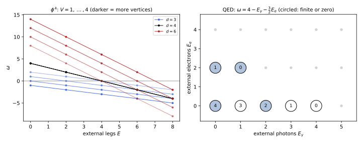
figures/ren-power-counting.sage.
The definition gives the count a name. It is the mass dimension of the integral, which makes it easy to compute.
Definition 5 (Superficial degree of divergence) The superficial degree of divergence of a one-particle-irreducible graph \Gamma in d dimensions, with L loops, I_b internal boson lines, I_f internal fermion lines and vertices v carrying \delta_v derivatives, is \omega(\Gamma) = dL - 2I_b - I_f + \sum_v\delta_v . \tag{7} \Gamma is superficially divergent if \omega \geq 0, logarithmically for \omega = 0, linearly for \omega = 1, quadratically for \omega = 2. The number \omega is the mass dimension of the Feynman integral when the couplings are dimensionless; Balduf (2024, Def. 43 and eq. 2.45) uses the superficial degree of convergence, which is -\omega/2 for scalars.
Veriphy. Pending.
Lean. Pending.
Sage. Pending.
For the quartic theory the topological relations between L, I, V and E reduce Equation 7 to a function of the external legs and the order. The first example recalls it.
Example 19 (The quartic theory) With L = I - V + 1 and 4V = 2I + E, Equation 7 gives \omega = d - \frac{d - 2}{2}E + (d - 4)V (Exercise 79 of Quantum field theory). In d = 4 it is \omega = 4 - E: the vacuum graphs (E = 0), the self-energy (E = 2, \omega = 2) and the four-point function (E = 4, \omega = 0) diverge, at every order, and nothing else does superficially. Graphs with odd E vanish by the symmetry \phi \to -\phi.
Veriphy. Pending.
Lean. Pending.
Sage. Pending.
Quantum electrodynamics has two kinds of lines, and the divergent amplitudes are those of Figure 5. The second example lists them and the reasons why some are harmless.
Example 20 (Quantum electrodynamics) For a graph with E_\gamma external photons and E_e external electrons, \omega = 4 - E_\gamma - \frac32E_e (Exercise 22). The superficially divergent amplitudes are the vacuum polarisation (E_\gamma = 2, \omega = 2), the electron self-energy (E_e = 2, \omega = 1), the vertex (E_\gamma = 1, E_e = 2, \omega = 0), the one- and three-photon amplitudes, which vanish by charge conjugation (Furry’s theorem), and light-by-light scattering (E_\gamma = 4, \omega = 0), which is finite because gauge invariance forces each photon to enter through its field strength (Exercise 24). Gauge invariance also lowers the vacuum polarisation from \omega = 2 to a logarithm (Section 1.6).
Veriphy. Pending.
Lean. Pending.
Sage. Pending.
In six dimensions the cubic theory plays the role of the quartic theory in four. The third example applies the formula.
Example 21 (The cubic theory in six dimensions) For \frac g{3!}\phi^3, 3V = 2I + E and L = I - V + 1 give \omega = d - \frac{d - 2}{2}E + \frac{d - 6}{2}V. In d = 6, \omega = 6 - 2E: the one-point function (\omega = 4), the self-energy (\omega = 2) and the vertex (\omega = 0) diverge, the coupling g is dimensionless, and the theory is the standard toy model of renormalisation, used by Balduf (2024) throughout (his Example 70). It is also asymptotically free, which makes it a model of the strong interaction as well.
Veriphy. Pending.
Lean. Pending.
Sage. Pending.
A graph can have \omega < 0 and still diverge, because one of its parts diverges. The fourth example is the standard case and leads to the theorem that settles the question.
Example 22 (A convergent-looking graph that diverges) In the quartic theory in four dimensions, take the one-loop box, four vertices v_1, \dots, v_4 on a loop, and double the line between v_1 and v_2, so that they are joined by a bubble. With one external leg at v_1 and at v_2 and two at v_3 and at v_4 the graph has V = 4, I = 5, L = 2 and E = 6, so \omega = 4 - 6 = -2. But the bubble is a four-point subgraph with \omega = 0, and the integral diverges logarithmically through it. Weinberg’s power counting theorem states that a graph converges if \omega(\gamma) < 0 for \Gamma and for every one-particle-irreducible subgraph \gamma (Balduf 2024, Thm. 30); divergent subgraphs, the subdivergences, are the subject of Section 1.5.
Veriphy. Pending.
Lean. Pending.
Sage. Pending.
The exercises derive the formula for quantum electrodynamics and for general polynomial interactions, explain why light-by-light scattering is finite, and apply the count to the Yukawa theory. The first is a short derivation.
Exercise 22 (Power counting in quantum electrodynamics) Using that each vertex e\bar\psi\gamma^\mu\psi A_\mu joins two electron ends and one photon end, show that 2I_e + E_e = 2V and 2I_\gamma + E_\gamma = V, and derive \omega = 4 - E_\gamma - \frac32E_e from Equation 7.
Counting line ends: each internal electron line has two ends and each external one has one, and each vertex has two electron ends, so 2I_e + E_e = 2V; similarly 2I_\gamma + E_\gamma = V. With L = I_e + I_\gamma - V + 1, \omega = 4L - 2I_\gamma - I_e = 4 + 3I_e + 2I_\gamma - 4V. Substituting I_e = V - E_e/2 and I_\gamma = (V - E_\gamma)/2 gives \omega = 4 + 3V - \frac32E_e + V - E_\gamma - 4V = 4 - E_\gamma - \frac32E_e, independent of V: the dimension of e is zero.
Veriphy. Pending.
Lean. Pending.
Sage. Pending.
The pattern of the examples, a dimension in which \omega does not depend on the order, holds for every polynomial interaction. The second exercise finds that dimension.
Exercise 23 (The critical dimension of \phi^n) For the interaction \frac{g}{n!}\phi^n in d dimensions, show that \omega = d - \frac{d - 2}{2}E + \bigl(\frac{n(d - 2)}{2} - d\bigr)V, and that the coefficient of V vanishes in the critical dimension d_c = \frac{2n}{n - 2}. Evaluate d_c for n = 3, 4, 6.
Now nV = 2I + E, so I = (nV - E)/2 and L = I - V + 1; then \omega = dL - 2I = (d - 2)I - dV + d = d - \frac{d - 2}{2}E + (\frac{n(d - 2)}{2} - d)V. The coefficient of V is -[g], minus the mass dimension of the coupling, since [g] = d - n\frac{d - 2}{2}; it vanishes when n(d - 2) = 2d, that is d_c = \frac{2n}{n - 2}: 6 for \phi^3, 4 for \phi^4, 3 for \phi^6. Below d_c the coupling has positive dimension and fewer graphs diverge at higher orders; above d_c more do.
Veriphy. Pending.
Lean. Pending.
Sage. Pending.
Power counting overestimates divergences when a symmetry forces external momenta to appear. The third exercise shows this for light-by-light scattering.
Exercise 24 (Why light-by-light scattering is finite) The four-photon amplitude has \omega = 0. Argue that gauge invariance requires it to be built from F_{\mu\nu}, one for each photon, so that it carries at least four powers of external momenta, and conclude that the loop integral that multiplies them has degree \omega - 4 = -4 and converges. What is the lowest-dimension operator it produces at low energy?
A divergent part would be a local polynomial in the momenta of degree \omega = 0, a term c\,(A_\mu A^\mu)^2 in the effective action, which is not gauge invariant; the Ward identity of Section 1.6 forbids it. A gauge-invariant term is a polynomial in F_{\mu\nu} = \partial_\mu A_\nu - \partial_\nu A_\mu, each of which brings one power of the external momentum, so the amplitude is k_1k_2k_3k_4 times a function whose integral has degree -4. The leading operators are (F_{\mu\nu}F^{\mu\nu})^2 and (F_{\mu\nu}\tilde F^{\mu\nu})^2, of dimension eight, the Euler-Heisenberg Lagrangian of Section 1.10.
Veriphy. Pending.
Lean. Pending.
Sage. Pending.
A scalar coupled to fermions illustrates how power counting dictates the terms a Lagrangian must contain. The fourth exercise works it out for the Yukawa theory.
Exercise 25 (The Yukawa theory) For a real scalar \phi and a Dirac fermion \psi with the Yukawa coupling y\phi\bar\psi\psi in four dimensions, show that \omega = 4 - E_\phi - \frac32E_\psi, list the superficially divergent amplitudes, and explain why the Lagrangian must contain a \phi^4 term even if one sets it to zero classically.
The counting of Exercise 22 applies with the photon replaced by \phi: \omega = 4 - E_\phi - \frac32E_\psi. The divergent amplitudes have (E_\phi, E_\psi) = (1, 0), (2, 0), (3, 0), (4, 0) with \omega = 3, 2, 1, 0, and (0, 2), (1, 2) with \omega = 1, 0. The four-scalar amplitude is generated by a fermion box with \omega = 0, a logarithmic divergence that needs a counterterm \delta_\lambda\phi^4; the theory is renormalisable only with \frac\lambda{4!}\phi^4 included. The odd amplitudes \phi, \phi^3 are allowed unless a discrete symmetry (\phi \to -\phi, \psi \to \gamma_5\psi) forbids them.
Veriphy. Pending.
Lean. Pending.
Sage. Pending.
Renormalisable and non-renormalisable theories
The superficial degree of divergence is the mass dimension of the integral, so it can be written through the mass dimensions of the fields and couplings alone. A coupling of negative mass dimension makes \omega grow with the order, and then every order brings new divergent amplitudes. The figure shows the dimensions of the standard couplings as functions of the dimension of space-time.
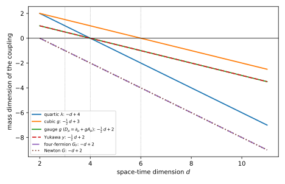
figures/ren-coupling-dimensions.sage.
The definition classifies theories by the number of divergent amplitudes. The examples then show that the classification follows from the dimensions of the couplings.
Definition 6 (Renormalisable theory) A quantum field theory is renormalisable if only finitely many one-particle-irreducible amplitudes, counted by their external fields and their tensor structures, are superficially divergent, so that finitely many counterterms remove all divergences order by order (Balduf 2024, Def. 100). It is super-renormalisable if only finitely many graphs diverge, and non-renormalisable if infinitely many amplitudes are superficially divergent. By power counting, a theory is renormalisable if every coupling has mass dimension [g_v] \geq 0, super-renormalisable if every one has [g_v] > 0, and non-renormalisable if some coupling has [g_v] < 0.
Veriphy. Pending.
Lean. Pending.
Sage. Pending.
The power-counting criterion rests on a formula for \omega in terms of the mass dimensions of the fields and couplings. The first example derives it by dimensional analysis.
Example 23 (The degree of divergence from dimensions) A one-particle-irreducible amplitude with E_i external fields of dimension \Delta_i has mass dimension d - \sum_iE_i\Delta_i (the dimension of the corresponding term in the effective action, minus that of the fields). It is the product of the couplings, of total dimension \sum_v[g_v], and of the integral, of dimension \omega. Hence \omega = d - \sum_iE_i\Delta_i - \sum_v[g_v] . For the quartic theory \Delta = \frac{d - 2}{2} and [\lambda] = 4 - d, which reproduces Example 19. If all [g_v] \geq 0, \omega is bounded by d - \sum E_i\Delta_i and only amplitudes with few legs diverge; if some [g_v] < 0, \omega grows with the number of such vertices.
Veriphy. Pending.
Lean. Pending.
Sage. Pending.
Fermi’s theory of the weak interaction was the first non-renormalisable theory to be studied. The second example applies the formula to it.
Example 24 (Fermi’s theory) The four-fermion coupling \frac{G_F}{\sqrt2}(\bar\psi\gamma^\mu\psi)(\bar\psi\gamma_\mu\psi) has [G_F] = 4 - 4\cdot\frac32 = -2, so \omega = 4 - \frac32E_\psi + 2V. At one loop, V = 2, the four-fermion amplitude has \omega = 2 and needs a counterterm with two derivatives, (\bar\psi\gamma\psi)\partial^2(\bar\psi\gamma\psi), which is not in the Lagrangian; at each further order new operators appear. The theory is an effective theory valid below G_F^{-1/2} \approx 300\,\mathrm{GeV}, where the W boson replaces it (Example 85 of Quantum field theory).
Veriphy. Pending.
Lean. Pending.
Sage. Pending.
A gauge theory in five dimensions has a coupling of dimension -\frac12. The third example shows what this means and how the four-dimensional coupling is related to it.
Example 25 (Yang-Mills theory in five dimensions) In D dimensions the gauge field has [A] = \frac{D - 2}{2}, and with the normalisation -\frac{1}{4g^2}F^2 the coupling has [g^2] = 4 - D (Dienes et al. 1999, eq. 2.11). For D = 5, [g_5^2] = -1, and \omega grows by one with every loop: the theory is non-renormalisable. On a circle of circumference 2\pi R the zero modes have the four-dimensional coupling g_4^2 = g_5^2/(2\pi R) (Dienes et al. (1999, eq. 2.12) write \alpha = R^{-\delta}\tilde\alpha with their normalisation of the volume), and the loop expansion parameter at energy E is of order g_5^2E/(24\pi^3), which reaches one at a finite energy (Section 1.11).
Veriphy. Pending.
Lean. Pending.
Sage. Pending.
A coupling of positive dimension makes the theory better behaved at high energies. The fourth example counts the divergent graphs of the quartic theory in three dimensions.
Example 26 (The quartic theory in three dimensions) In d = 3, [\lambda] = 1 and \omega = 3 - \frac E2 - V. The self-energy diverges only for V \leq 2: linearly at one loop (the tadpole, V = 1) and logarithmically at two loops (the sunset, V = 2); the four-point function never diverges; vacuum graphs diverge for V \leq 3. Only finitely many graphs need counterterms, a mass counterterm at one and two loops and a vacuum-energy one, and the theory is super-renormalisable, which is why it can be constructed rigorously.
Veriphy. Pending.
Lean. Pending.
Sage. Pending.
The exercises list renormalisable operators in several dimensions, tabulate the degree of divergence of gauge theories, and estimate the energy at which a five-dimensional gauge theory becomes strongly coupled. The first is adapted from Manohar (2018, Exercise 4.2).
Exercise 26 (Renormalisable operators in d dimensions) With [\phi] = \frac{d - 2}{2}, [\psi] = \frac{d - 1}{2} and [F_{\mu\nu}] = \frac d2, list the Lorentz-invariant operators built from a scalar, a Dirac fermion and a gauge field that have dimension at most d, for d = 2, 3, 4, 5, 6.
In d = 2, [\phi] = 0 and any function of \phi times two derivatives is allowed, as well as \bar\psi\psi f(\phi), \bar\psi{D}\!\!\!/\psi and (\bar\psi\psi)^2 (dimension 2), and F^2; the scalar sector is a sigma model. In d = 3, \phi^k for k \leq 6, \bar\psi\psi, \bar\psi\psi\phi, \bar\psi\psi\phi^2 (dimension 3) and F^2. In d = 4, \phi^k for k \leq 4, \bar\psi{D}\!\!\!/\psi, \bar\psi\psi, \bar\psi\psi\phi and F^2, the Standard Model list. In d = 5, \phi^k for k \leq 3 ([\phi] = \frac32), \bar\psi\psi and (\partial\phi)^2, \bar\psi{D}\!\!\!/\psi; the gauge kinetic term F^2 has dimension 5 and is allowed, but the gauge coupling then has dimension -\frac12 (Example 25). In d = 6, \phi^3, (\partial\phi)^2, \bar\psi{D}\!\!\!/\psi, \bar\psi\psi; \bar\psi\psi\phi has dimension 7 and is excluded.
Veriphy. Pending.
Lean. Pending.
Sage. Pending.
Gauge theories in D dimensions have a degree of divergence that grows with the number of loops for D > 4. The second exercise lets Sage tabulate it.
Exercise 27 (Gauge theories in D dimensions) Show that for a gauge theory with fermions in D dimensions, with canonically normalised fields and the coupling g of dimension 2 - D/2, \omega = 4 - E_A - \frac32E_\psi + (D - 4)L. Tabulate \omega for the two-gluon and the three-gluon amplitudes at one, two and three loops for D = 4, 5, 6, 10.
By Example 23, \omega = D - \sum E_i\Delta_i - n_g[g] with \Delta_A = \frac{D - 2}{2}, \Delta_\psi = \frac{D - 1}{2} and n_g the power of g. Counting line ends as in Exercise 22, a graph with E_A + E_\psi external legs at L loops carries n_g = E_A + E_\psi - 2 + 2L powers of g (cubic vertices count once, quartic ones twice). Then \omega = D - \frac{D - 2}{2}E_A - \frac{D - 1}{2}E_\psi + \frac{D - 4}{2}(E_A + E_\psi - 2 + 2L) = 4 - E_A - \frac32E_\psi + (D - 4)L, which is 4 - E_A - \frac32E_\psi at every order for D = 4 and grows by D - 4 per loop otherwise. The table:
omega = lambda D, EA, Epsi, L: 4 - EA - 3 * Epsi / 2 + (D - 4) * L
# direct counting: one-loop bubble of two cubic vertices (I = 2, two derivatives), triangle of three (I = 3, three derivatives)
direct = lambda D, I, delta: D * 1 - 2 * I + delta
for D in [4, 5, 6, 10]:
assert omega(D, 2, 0, 1) == direct(D, 2, 2) and omega(D, 3, 0, 1) == direct(D, 3, 3)
print("formula agrees with direct counting for the one-loop bubble and triangle in D = 4, 5, 6, 10")
print("D amplitude L=1 L=2 L=3")
for D in [4, 5, 6, 10]:
for EA in [2, 3]:
print("%-3d %d gluons %4s %4s %4s" % ((D, EA) + tuple(omega(D, EA, 0, L) for L in [1, 2, 3])))Output:
formula agrees with direct counting for the one-loop bubble and triangle in D = 4, 5, 6, 10
D amplitude L=1 L=2 L=3
4 2 gluons 2 2 2
4 3 gluons 1 1 1
5 2 gluons 3 4 5
5 3 gluons 2 3 4
6 2 gluons 4 6 8
6 3 gluons 3 5 7
10 2 gluons 8 14 20
10 3 gluons 7 13 19Veriphy. Pending.
Lean. Pending.
Sage. Pending.
The growth of the loop expansion parameter with energy in five dimensions sets an energy at which perturbation theory fails. The third exercise estimates it.
Exercise 28 (Where a five-dimensional gauge theory becomes strong) At energy E the dimensionless strength of a five-dimensional gauge interaction at one loop is of order \frac{g_5^2E}{\ell_5}, with the loop factor \ell_5 = (4\pi)^{5/2}\Gamma(5/2) = 24\pi^3. With g_5^2 = 2\pi Rg_4^2 and g_4^2 = 4\pi/30, find the energy \Lambda at which it reaches one, in units of 1/R.
\frac{g_5^2\Lambda}{24\pi^3} = 1 gives \Lambda = \frac{24\pi^3}{2\pi Rg_4^2} = \frac{12\pi^2}{g_4^2R}. With g_4^2 = 4\pi/30 = 0.419 this is \Lambda R \approx 283: the five-dimensional theory is weakly coupled for about two decades above the compactification scale, and must be replaced by something else above that. The estimate is the naive dimensional analysis of Section 1.11; the precise number depends on the loop factor and is only an order of magnitude.
Veriphy. Pending.
Lean. Pending.
Sage. Pending.
Exercises
The first integrative exercise applies both sections of this part to a four-fermion theory. In two dimensions its coupling is dimensionless, in three it is not, and the two cases behave differently.
Exercise 29 (Four fermions in two and three dimensions) For N Dirac fermions with the interaction \frac g2(\bar\psi\psi)^2, compute [g] and \omega in d = 2 and d = 3, list the divergent amplitudes, and classify the theory in each dimension.
[\psi] = \frac{d - 1}{2}, so [g] = d - 2(d - 1) = 2 - d: [g] = 0 in d = 2 and -1 in d = 3. By Example 23, \omega = d - \frac{d - 1}{2}E_\psi - (2 - d)V. In d = 2, \omega = 2 - \frac{E_\psi}{2}: the self-energy (\omega = 1) and the four-fermion amplitude (\omega = 0) diverge at every order, and the theory (the Gross-Neveu model) is renormalisable. In d = 3, \omega = 3 - E_\psi + V grows with the order and the theory is non-renormalisable in perturbation theory; at large N it is nevertheless renormalisable around a non-trivial fixed point, an example of the Wilsonian picture of Section 1.9.
Veriphy. Pending.
Lean. Pending.
Sage. Pending.
The second integrative exercise checks Weinberg’s condition on a specific graph. It uses the graph of Example 22 and the formula of Example 19.
Exercise 30 (Weinberg’s condition on a graph) For the two-loop six-point graph of Example 22, list its one-particle-irreducible subgraphs with at least one loop and compute \omega for each. Which counterterm graph is needed, what is its degree of divergence, and is the renormalised graph finite?
Call the doubled lines a, b (between v_1 and v_2) and the others c = v_2v_3, d = v_3v_4, e = v_4v_1. The one-loop subgraphs are the bubble \{a, b\}, a four-point subgraph with \omega = 4 - 4 = 0, and the two loops \{a, c, d, e\} and \{b, c, d, e\}, each with eight legs when the cut lines are counted as external, so \omega = 4 - 8 = -4; the whole graph has \omega = -2. Only the bubble diverges. Its counterterm replaces it by the vertex -i\delta_\lambda, which merges v_1 and v_2 and leaves a one-loop triangle with six legs, \omega = 4 - 6 = -2, convergent. The renormalised graph, the original minus the counterterm graph, has no divergent subgraph left and an overall \omega < 0, so it is finite by Weinberg’s theorem; this is the simplest instance of the forest formula of Section 1.5.
Veriphy. Pending.
Lean. Pending.
Sage. Pending.
The third integrative exercise applies the classification to the gauge theories that appear later in the chapter. It combines Exercise 27 with the definition of renormalisability.
Exercise 31 (A gauge theory in six dimensions) For pure Yang-Mills theory in D = 6, find [g^2], the degree of divergence of the two-gluon amplitude at one and two loops, and the mass dimension of the operators that absorb the one-loop divergences. Give two gauge-invariant operators of that dimension.
[g^2] = 4 - D = -2. By Exercise 27, \omega = 4 - E_A + 2L, so the two-gluon amplitude has \omega = 4 at one loop and 6 at two loops. With the normalisation -\frac{1}{4g^2}F^2 the connection has dimension 1 and F dimension 2, and the one-loop effective action \frac12\log\det of Definition 3 does not depend on g; by Proposition 1 its logarithmic divergence in n = 6 is the heat coefficient a_6, a sum of gauge-invariant operators of dimension six, such as \operatorname{tr}(D_\mu F^{\mu\nu}D^\rho F_{\rho\nu}) and \operatorname{tr}(F_\mu{}^\nu F_\nu{}^\rho F_\rho{}^\mu). Neither is in the original Lagrangian, so the theory is non-renormalisable; two loops need operators of dimension eight, and so on.
Veriphy. Pending.
Lean. Pending.
Sage. Pending.
Renormalised perturbation theory
The last exercise of Section 1.1 showed renormalisation at work: once the coupling is expressed through a measured amplitude, the regulator disappears from the prediction. Renormalised perturbation theory organises this systematically. The Lagrangian is written in terms of renormalised parameters, the difference from the bare Lagrangian is treated as a set of extra interactions, the counterterms, and their coefficients are fixed order by order so that every Green function is finite. This part does it for the quartic theory at one loop, and at two loops, where divergent subgraphs appear and the counterterms of lower order must be inserted into larger graphs (Balduf 2024, sec. 2.3.4; Grozin 2005, sec. 3).
Counterterms
The bare Lagrangian \mathcal L = \frac12(\partial\phi_0)^2 - \frac12m_0^2\phi_0^2 - \frac{\lambda_0}{4!}\phi_0^4 contains parameters that are infinite when the regulator is removed. The figure shows the bare coupling as a function of the regulator for a fixed renormalised coupling, and, conversely, how the renormalised coupling depends on the scale when the bare one is held fixed.
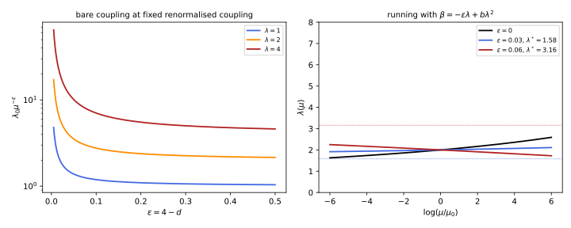
figures/ren-bare-coupling.sage.
The definition separates the bare Lagrangian into the renormalised one and the counterterms. The field is rescaled as well, because the residue of the propagator at its pole is also renormalised.
Definition 7 (Counterterm) Write the bare field and parameters as \phi_0 = Z^{1/2}\phi, Z = 1 + \delta_Z, Zm_0^2 = m^2 + \delta_m and Z^2\lambda_0 = \mu^\epsilon(\lambda + \delta_\lambda), with renormalised \phi, m, dimensionless \lambda and a scale \mu. Then \mathcal L = \frac12(\partial\phi)^2 - \frac12m^2\phi^2 - \frac{\mu^\epsilon\lambda}{4!}\phi^4 + \frac12\delta_Z(\partial\phi)^2 - \frac12\delta_m\phi^2 - \frac{\mu^\epsilon\delta_\lambda}{4!}\phi^4 , \tag{8} and the last three terms are the counterterms. They are treated as interactions, with Feynman rules i(p^2\delta_Z - \delta_m) for a two-point insertion and -i\mu^\epsilon\delta_\lambda for a four-point vertex, and the coefficients \delta_Z, \delta_m, \delta_\lambda, power series in \lambda, are fixed by requiring that the renormalised Green functions be finite and satisfy chosen conditions (Section 1.4).
Veriphy. Pending.
Lean. Pending.
Sage. Pending.
The counterterm Feynman rules follow from the Lagrangian like the ordinary ones. The first example derives them and shows how they enter the propagator.
Example 27 (Feynman rules of the counterterms) The quadratic counterterms \frac12\delta_Z(\partial\phi)^2 - \frac12\delta_m\phi^2 give, in momentum space, \frac12\phi(-p)(p^2\delta_Z - \delta_m)\phi(p), and the vertex is i times the coefficient times 2! for the two ways of attaching the lines: i(p^2\delta_Z - \delta_m). With the one-particle-irreducible self-energy -iM^2(p^2) (loops plus this insertion), the full propagator is the geometric series \frac{i}{p^2 - m^2} + \frac{i}{p^2 - m^2}(-iM^2)\frac{i}{p^2 - m^2} + \dots = \frac{i}{p^2 - m^2 - M^2(p^2)}, and the insertion contributes M^2_{\mathrm{ct}} = \delta_m - p^2\delta_Z (Exercise 32).
Veriphy. Pending.
Lean. Pending.
Sage. Pending.
Counterterms and multiplicative renormalisation constants are two notations for the same thing. The second example gives the dictionary at first order, which is what the beta functions are computed from.
Example 28 (Bare parameters from counterterms) From the definition, \lambda_0 = \mu^\epsilon(\lambda + \delta_\lambda)Z^{-2} and m_0^2 = (m^2 + \delta_m)Z^{-1}. To first order in the counterterms, \lambda_0\mu^{-\epsilon} = \lambda + \delta_\lambda - 2\lambda\delta_Z and m_0^2 = m^2 + \delta_m - m^2\delta_Z. At one loop in the quartic theory \delta_Z = 0 (Proposition 2), so the bare coupling is \lambda_0\mu^{-\epsilon} = \lambda + \frac{3\lambda^2}{16\pi^2\epsilon} + O(\lambda^3) in minimal subtraction, the curve of Figure 7. Since \lambda_0 does not know about \mu, \lambda must depend on \mu: this is the running.
Veriphy. Pending.
Lean. Pending.
Sage. Pending.
In a theory without divergences, renormalisation is still a change of parameters. The third example shows this in zero dimensions, where every integral converges, following the remark of Balduf (2024, sec. 2.3) that renormalisation is unrelated to whether integrals diverge.
Example 29 (Renormalisation without divergences) In the zero-dimensional theory of Example 67 of Quantum field theory, \langle\phi^2\rangle = 1 - \frac\lambda2 + \frac23\lambda^2 + \dots and the connected four-point function is \langle\phi^4\rangle_c = \langle\phi^4\rangle - 3\langle\phi^2\rangle^2 = -\lambda + \frac72\lambda^2 + \dots. Define a renormalised coupling by the measured four-point function in units of the measured propagator, g := -\langle\phi^4\rangle_c/\langle\phi^2\rangle^2 = \lambda - \frac52\lambda^2 + \dots, invert to \lambda = g + \frac52g^2 + \dots, and every other moment becomes a series in g whose coefficients are the “renormalised” ones (Exercise 35). Nothing diverges, but the parameter in the Lagrangian has been replaced by a measured one.
Veriphy. Pending.
Lean. Pending.
Sage. Pending.
The exercises derive the Feynman rules, the first-order dictionary and the running of the coupling at fixed bare coupling. The first one is a short derivation.
Exercise 32 (The two-point counterterm) Derive the Feynman rule i(p^2\delta_Z - \delta_m) from Equation 8, and show that with the one-loop self-energy -iM^2_{\mathrm{loop}} the pole of the propagator is at p^2 = m^2 + M^2_{\mathrm{loop}}(m^2) + \delta_m - m^2\delta_Z to first order.
In iS the quadratic counterterm is i\int\frac{d^4p}{(2\pi)^4}\frac12\phi(-p)(p^2\delta_Z - \delta_m)\phi(p); differentiating twice with respect to \phi gives the factor 2 \cdot \frac12, so the vertex is i(p^2\delta_Z - \delta_m). Writing it as -iM^2_{\mathrm{ct}} gives M^2_{\mathrm{ct}} = \delta_m - p^2\delta_Z. The full propagator \frac{i}{p^2 - m^2 - M^2(p^2)} has its pole where p^2 = m^2 + M^2(p^2); to first order M^2 can be evaluated at p^2 = m^2, giving m^2 + M^2_{\mathrm{loop}}(m^2) + \delta_m - m^2\delta_Z.
Veriphy. Pending.
Lean. Pending.
Sage. Pending.
The relation between counterterms and renormalisation constants must be inverted when the beta function is computed. The second exercise does it to second order in a simple case.
Exercise 33 (From counterterms to Z factors) With \delta_Z = 0, write \lambda_0\mu^{-\epsilon} = Z_\lambda\lambda and find Z_\lambda to second order in \lambda if \delta_\lambda = \frac{a\lambda^2}{\epsilon} + \frac{b\lambda^3}{\epsilon^2} + \frac{c\lambda^3}\epsilon. Show that \mu\frac{d\lambda}{d\mu} = -\epsilon\lambda + a\lambda^2 + 2c\lambda^3 + O(\lambda^4) provided b = a^2, and explain why the double pole is not free.
Z_\lambda = 1 + \frac{a\lambda}{\epsilon} + \frac{b\lambda^2}{\epsilon^2} + \frac{c\lambda^2}\epsilon. Differentiating \lambda_0\mu^{-\epsilon} = \lambda + \delta_\lambda at fixed \lambda_0 gives -\epsilon(\lambda + \delta_\lambda) = \beta(1 + \partial_\lambda\delta_\lambda). Insert \beta = -\epsilon\lambda + \beta_1\lambda^2 + \beta_2\lambda^3: the left side is -\epsilon\lambda - a\lambda^2 - \frac{b\lambda^3}{\epsilon} - c\lambda^3, the right side -\epsilon\lambda + (\beta_1 - 2a)\lambda^2 + (\beta_2 - 3c)\lambda^3 + \frac{(2a\beta_1 - 3b)\lambda^3}{\epsilon} + O(\lambda^4). Comparing, \beta_1 = a, \beta_2 = 2c and 2a\beta_1 - 3b = -b, that is b = a^2. The double pole is fixed by the one-loop coefficient because \beta must be finite as \epsilon \to 0 (Exercise 43, Balduf (2024, Thm. 57)).
Veriphy. Pending.
Lean. Pending.
Sage. Pending.
At fixed bare coupling the renormalised coupling is a function of \mu that can be found exactly at one loop. The third exercise computes it with Sage and takes \epsilon \to 0.
Exercise 34 (The running at fixed bare coupling) Show that \lambda_0\mu^{-\epsilon} = \frac{\lambda}{1 - b\lambda/\epsilon} has the poles b^k\lambda^{k + 1}/\epsilon^k predicted by Exercise 33 and gives exactly \mu\frac{d\lambda}{d\mu} = -\epsilon\lambda + b\lambda^2. Solve this equation with \lambda(\mu_0) = \lambda_1, show with Sage that the solution tends to \lambda_1/(1 - b\lambda_1\log(\mu/\mu_0)) as \epsilon \to 0, and find its behaviour for \epsilon > 0.
The geometric series gives \lambda + \frac{b\lambda^2}\epsilon + \frac{b^2\lambda^3}{\epsilon^2} + \dots, the leading poles of every order. Differentiating at fixed \lambda_0, -\epsilon\frac{\lambda}{1 - b\lambda/\epsilon} = \frac{\beta}{(1 - b\lambda/\epsilon)^2}, so \beta = -\epsilon\lambda(1 - b\lambda/\epsilon) = -\epsilon\lambda + b\lambda^2 with no higher terms. With \lambda^* = \epsilon/b and t = \log(\mu/\mu_0) the solution is \lambda(t) = \lambda^*/(1 - (1 - \lambda^*/\lambda_1)e^{\epsilon t}). As \epsilon \to 0, 1 - (1 - \lambda^*/\lambda_1)e^{\epsilon t} \to \frac{\epsilon}{b\lambda_1} - \epsilon t and \lambda \to \lambda_1/(1 - b\lambda_1t). For \epsilon > 0, \lambda(t) \to \lambda^* as t \to -\infty from either side (Figure 7): in d < 4 the infrared limit of the quartic theory is the fixed point that Section 1.9 calls Wilson-Fisher:
var('lam eps t lam1 b')
bare = lam / (1 - b * lam / eps)
print("poles:", taylor(bare, lam, 0, 4))
beta = (-eps * bare / diff(bare, lam)).simplify_full()
print("beta =", beta.expand())
lstar = eps / b
sol = lstar / (1 - (1 - lstar / lam1) * exp(eps * t))
print("solves the flow:", bool((diff(sol, t) - (-eps * sol + b * sol^2)).simplify_full() == 0), " initial value:", sol.subs(t=0).simplify_full())
print("eps -> 0 limit:", limit(sol, eps=0).simplify_full())
bv = 3 / (16 * pi^2)
for e in [0.03, 0.06]:
print("eps = %.2f, lambda_1 = 2: lambda* = %.3f, lambda(t = -200) = %.3f" % (e, (e / bv).n(), sol.subs(eps=e, b=bv, lam1=2, t=-200).n()))Output:
poles: b^3*lam^4/eps^3 + b^2*lam^3/eps^2 + b*lam^2/eps + lam
beta = b*lam^2 - eps*lam
solves the flow: True initial value: lam1
eps -> 0 limit: -lam1/(b*lam1*t - 1)
eps = 0.03, lambda_1 = 2: lambda* = 1.579, lambda(t = -200) = 1.580
eps = 0.06, lambda_1 = 2: lambda* = 3.158, lambda(t = -200) = 3.158Veriphy. Pending.
Lean. Pending.
Sage. Pending.
Renormalisation is a change of parameters even when nothing diverges, and the zero-dimensional theory shows it without any analysis. The fourth exercise completes Example 29 with Sage.
Exercise 35 (A renormalised zero-dimensional theory) Compute \langle\phi^2\rangle and \langle\phi^4\rangle of e^{-\phi^2/2 - \lambda\phi^4/24} to order \lambda^2, define g = -\langle\phi^4\rangle_c/\langle\phi^2\rangle^2, and express \langle\phi^6\rangle_c to order g^2.
With Gaussian moments, \langle\phi^2\rangle = 1 - \frac\lambda2 + \frac23\lambda^2, \langle\phi^4\rangle = 3 - 4\lambda + \frac{33}{4}\lambda^2, so \langle\phi^4\rangle_c = -\lambda + \frac72\lambda^2 and g = \lambda - \frac52\lambda^2. The connected six-point function starts at order \lambda^2, so to order g^2 it is its \lambda^2 coefficient with \lambda \to g: \langle\phi^6\rangle_c = 10g^2 + O(g^3), and with the inverse series \lambda = g + \frac52g^2 + \dots the next term is -30g^3:
var('lam g')
mom = lambda k: 0 if k % 2 else prod(range(k - 1, 0, -2)) # Gaussian moments (k-1)!!
def avg(k, order=3):
w = sum((-lam / 24)^j / factorial(j) * mom(k + 4 * j) for j in range(order + 1))
z = sum((-lam / 24)^j / factorial(j) * mom(4 * j) for j in range(order + 1))
return taylor(w / z, lam, 0, order)
p2, p4, p6 = avg(2), avg(4), avg(6)
c4 = taylor(p4 - 3 * p2^2, lam, 0, 3)
c6 = taylor(p6 - 15 * p4 * p2 + 30 * p2^3, lam, 0, 3)
print("<phi^2> =", taylor(p2, lam, 0, 2), " <phi^4> =", taylor(p4, lam, 0, 2))
print("<phi^4>_c =", taylor(c4, lam, 0, 2), " <phi^6>_c =", taylor(c6, lam, 0, 3))
gl = taylor(-c4 / p2^2, lam, 0, 3)
print("g(lam) =", gl)
inv = taylor(g + sum(var('k%d' % i) * g^i for i in [2, 3]), g, 0, 3)
sol = solve([taylor(gl.subs(lam=inv) - g, g, 0, 3).coefficient(g, i) == 0 for i in [2, 3]], [var('k2'), var('k3')], solution_dict=True)[0]
lam_g = inv.subs(sol)
print("lam(g) =", lam_g)
print("<phi^6>_c in terms of g:", taylor(c6.subs(lam=lam_g), g, 0, 3))Output:
<phi^2> = 2/3*lam^2 - 1/2*lam + 1 <phi^4> = 33/4*lam^2 - 4*lam + 3
<phi^4>_c = 7/2*lam^2 - lam <phi^6>_c = -80*lam^3 + 10*lam^2
g(lam) = 25/3*lam^3 - 5/2*lam^2 + lam
lam(g) = 25/6*g^3 + 5/2*g^2 + g
<phi^6>_c in terms of g: -30*g^3 + 10*g^2Veriphy. Pending.
Lean. Pending.
Sage. Pending.
One loop
At one loop the quartic theory needs a mass counterterm for the tadpole and a coupling counterterm for the three bubbles, and no field renormalisation, because the tadpole does not depend on the external momentum. The figure shows the finite part of the bubble after minimal subtraction; its imaginary part, which starts at the two-particle threshold s = 4m^2, is fixed by unitarity and is the same in every scheme.
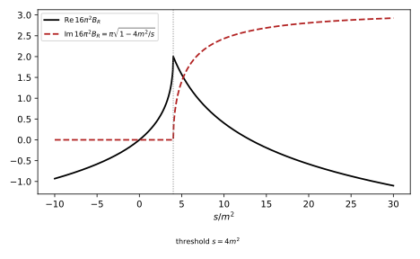
figures/ren-bubble.sage.
The proposition collects the one-loop renormalisation of the quartic theory in the modified minimal subtraction scheme. The symbol \frac{2}{\bar\epsilon} = \frac2\epsilon - \gamma_E + \log4\pi denotes the combination that the scheme removes.
Proposition 2 (The quartic theory at one loop) In dimensional regularisation with d = 4 - \epsilon, the one-loop counterterms of Definition 7 that remove the poles \frac2{\bar\epsilon} are \delta_Z = 0, \qquad \delta_m = \frac{\lambda m^2}{32\pi^2}\frac{2}{\bar\epsilon}, \qquad \delta_\lambda = \frac{3\lambda^2}{32\pi^2}\frac{2}{\bar\epsilon} . The renormalised self-energy is M^2_R = \frac{\lambda m^2}{32\pi^2}(\log\frac{m^2}{\mu^2} - 1), independent of p^2, and the renormalised four-point amplitude is \mathcal M = -\lambda + \frac{\lambda^2}{2}\bigl(B_R(s) + B_R(t) + B_R(u)\bigr), \qquad B_R(p^2) = -\frac{1}{16\pi^2}\int_0^1dx\,\log\frac{m^2 - x(1 - x)p^2 - i0}{\mu^2} . Holding \lambda_0 and m_0 fixed gives \mu\frac{d\lambda}{d\mu} = \frac{3\lambda^2}{16\pi^2} and \mu\frac{dm^2}{d\mu} = \frac{\lambda}{16\pi^2}m^2 at \epsilon = 0.
Veriphy. Pending.
Lean. Pending.
Sage. Pending.
Proof. The self-energy is -iM^2 = -\frac{i\lambda}{2}\mu^\epsilon T + i(p^2\delta_Z - \delta_m) with T the Euclidean tadpole after the Wick rotation, so M^2 = \frac\lambda2\mu^\epsilon T + \delta_m - p^2\delta_Z, and with Example 5, \frac\lambda2\mu^\epsilon T = -\frac{\lambda m^2}{32\pi^2}(\frac2{\bar\epsilon} + 1 + \log\frac{\mu^2}{m^2}); the pole is cancelled by \delta_m and no p^2 term is needed. Each bubble in the s, t and u channel contributes \frac{\lambda^2}{2}\mu^\epsilon B, the factor \frac12 being the symmetry factor (Proposition 7 of Quantum field theory), and \mu^\epsilon B = \frac{1}{16\pi^2} \frac2{\bar\epsilon} + B_R; the three poles are cancelled by -\delta_\lambda. For the running, \lambda_0\mu^{-\epsilon} = \lambda + \delta_\lambda at fixed \lambda_0 gives \beta = -\epsilon\lambda + \frac{3\lambda^2}{16\pi^2} (Exercise 33), and m_0^2 = m^2(1 + \frac{\lambda}{16\pi^2\epsilon} + \dots) gives \mu\frac{dm^2}{d\mu}(1 + \frac{\lambda}{16\pi^2\epsilon}) + m^2\frac{\beta}{16\pi^2\epsilon} = 0, whose finite part is \mu\frac{dm^2}{d\mu} = \frac{\lambda m^2}{16\pi^2}. \square
The renormalised mass m is not the mass that a particle has. The first example finds the pole of the propagator, which is.
Example 30 (The pole mass) The pole is at m_P^2 = m^2 + M^2_R = m^2\bigl(1 + \frac{\lambda}{32\pi^2}(\log\frac{m^2}{\mu^2} - 1)\bigr). At \mu = m the pole mass is smaller than the renormalised mass by the fraction \frac{\lambda}{64\pi^2}; at other \mu the two differ by a logarithm, and the \mu dependence of m^2(\mu) in the proposition makes m_P independent of \mu to this order (Exercise 37). The pole mass is physical, the renormalised mass is a parameter of the scheme.
Veriphy. Pending.
Lean. Pending.
Sage. Pending.
The amplitude in the proposition depends on \mu explicitly and through \lambda(\mu). The second example shows that the two dependences cancel.
Example 31 (The amplitude does not depend on \mu) Since \mu\frac{\partial}{\partial\mu}B_R = \frac{2}{16\pi^2}, \mu\frac{d}{d\mu}\mathcal M = -\beta(\lambda) + \frac{\lambda^2}{2}\cdot3\cdot\frac{2}{16\pi^2} + O(\lambda^3) = -\frac{3\lambda^2}{16\pi^2} + \frac{3\lambda^2}{16\pi^2} = 0. The renormalised amplitude is a physical prediction: changing \mu changes \lambda and the logarithms together. At large s, |t|, |u| the logarithms \log(s/\mu^2) are large unless \mu^2 \sim s, so the natural choice is \mu^2 \sim s, and then \mathcal M \approx -\lambda(\sqrt s): the running coupling measures the strength of scattering at the energy \sqrt s.
Veriphy. Pending.
Lean. Pending.
Sage. Pending.
Above the threshold the bubble develops an imaginary part, and unitarity fixes it in terms of the tree amplitude. The third example checks the optical theorem at this order.
Example 32 (The optical theorem) For s > 4m^2, \operatorname{Im}B_R(s) = \frac{1}{16\pi^2}\int_0^1dx\,\pi\,\theta(x(1 - x)s - m^2) = \frac{1}{16\pi}\sqrt{1 - \frac{4m^2}{s}}, so at t = 0, \operatorname{Im}\mathcal M = \frac{\lambda^2}{32\pi}\sqrt{1 - 4m^2/s}. The tree cross section of two identical scalars is \sigma = \frac{\lambda^2}{32\pi s}, and the optical theorem \operatorname{Im}\mathcal M(s, 0) = 2E_{\mathrm{cm}}p_{\mathrm{cm}}\sigma = s\sqrt{1 - 4m^2/s}\,\sigma gives the same value (Exercise 38). The imaginary part has no counterterm: it is the same in every scheme.
Veriphy. Pending.
Lean. Pending.
Sage. Pending.
At energies far above the mass the amplitude contains a logarithm that grows with s. The fourth example writes it in the form that the renormalisation group explains.
Example 33 (The amplitude at high energy) For s, |t|, |u| \gg m^2, B_R(p^2) \approx \frac{1}{16\pi^2}\bigl(2 - \log\frac{-p^2}{\mu^2}\bigr), so at the symmetric Euclidean point s = t = u = -Q^2, \mathcal M = -\lambda + \frac{3\lambda^2}{32\pi^2}\bigl(2 - \log\frac{Q^2}{\mu^2}\bigr) = -\lambda\bigl(1 + \frac{3\lambda}{16\pi^2}\log\frac Q\mu\bigr) + \frac{3\lambda^2}{16\pi^2}. The first term is the expansion of -\lambda(Q) with the running of the proposition, and the constant \frac{3\lambda^2}{16\pi^2} is a scheme-dependent shift of the coupling, which Section 1.4 uses to define the momentum-subtraction scheme.
Veriphy. Pending.
Lean. Pending.
Sage. Pending.
The exercises derive the counterterms, check the \mu independence with Sage, test the optical theorem numerically, and renormalise the effective potential. The first is the derivation of the proposition’s counterterms in a cutoff regularisation.
Exercise 36 (Counterterms with a cutoff) With a momentum cutoff, find \delta_m and \delta_\lambda that make the one-loop self-energy and four-point function finite and equal to those of the proposition, and show that the beta function \Lambda\frac{d\lambda_0}{d\Lambda} at fixed renormalised \lambda has the same coefficient \frac{3}{16\pi^2} with the opposite sign.
By Equation 2, \frac\lambda2T_\Lambda = \frac{\lambda}{32\pi^2}(\Lambda^2 - m^2\log\frac{\Lambda^2}{m^2}), so \delta_m = -\frac{\lambda}{32\pi^2}(\Lambda^2 - m^2\log\frac{\Lambda^2}{\mu^2} + m^2) gives M^2_R of the proposition. The bubble is B_\Lambda = \frac{1}{16\pi^2}(\log\frac{\Lambda^2}{\mu^2} - 1) + B_R for \Lambda \to \infty (Example 8 and Example 3), so \delta_\lambda = \frac{3\lambda^2}{32\pi^2}(\log\frac{\Lambda^2}{\mu^2} - 1). Then \lambda_0 = \lambda + \delta_\lambda at fixed \lambda gives \Lambda\frac{d\lambda_0}{d\Lambda} = \frac{3\lambda^2}{16\pi^2}: the bare coupling grows with the cutoff, which is the same statement as the renormalised coupling growing with \mu at fixed bare coupling.
Veriphy. Pending.
Lean. Pending.
Sage. Pending.
The cancellations of Example 30 and Example 31 are checks of the proposition that any computation of it should pass. The second exercise performs them with Sage.
Exercise 37 (Checking \mu independence) Using \mu\frac{d\lambda}{d\mu} = \frac{3\lambda^2}{16\pi^2} and \mu\frac{dm^2}{d\mu} = \frac{\lambda m^2}{16\pi^2}, show with Sage that the pole mass of Example 30 and the amplitude of Proposition 2 at a fixed point s, t, u are independent of \mu up to terms of order \lambda^2 and \lambda^3 respectively.
For the pole mass, \mu\frac{d}{d\mu}m_P^2 = \frac{\lambda m^2}{16\pi^2} + \frac{\lambda m^2}{32\pi^2}(-2) + O(\lambda^2) = 0. For the amplitude the computation of Example 31. Sage treats \lambda and m^2 as functions of \log\mu and expands:
var('t lam m2 x'); assume(m2 > 0)
D = lambda F: diff(F, t) + 3 * lam^2 / (16 * pi^2) * diff(F, lam) + lam * m2 / (16 * pi^2) * diff(F, m2)
mP2 = m2 * (1 + lam / (32 * pi^2) * (log(m2) - 2 * t - 1)) # log(m^2/mu^2) with mu = e^t
print("d m_P^2/dt =", D(mP2).expand().simplify_full(), " (order lambda^2)")
I = lambda r: sqrt(1 + 4 / r) * log((sqrt(1 + 4 / r) + 1) / (sqrt(1 + 4 / r) - 1)) - 2 # int_0^1 log(1 + x(1-x) r) dx, r = P/m^2 > 0
BR = lambda P: -(1 / (16 * pi^2)) * (log(m2) - 2 * t + I(P / m2))
for (S, T, U) in [(2, 3, 5), (1, 10, 100)]:
M = -lam + lam^2 / 2 * (BR(S) + BR(T) + BR(U))
dM = D(M)
print("S, T, U = %s: dM/dt to order lambda^2 = %s; order lambda^3 coefficient at m^2 = 1: %.3e" % ((S, T, U), taylor(dM, lam, 0, 2).simplify_full(), dM.subs(m2=1, t=0).diff(lam, 3).subs(lam=0).n() / 6))Output:
d m_P^2/dt = -1/512*(8*lam^2*m2*t - 4*lam^2*m2*log(m2) + 3*lam^2*m2)/pi^4 (order lambda^2)
S, T, U = (2, 3, 5): dM/dt to order lambda^2 = 0; order lambda^3 coefficient at m^2 = 1: -1.917e-04
S, T, U = (1, 10, 100): dM/dt to order lambda^2 = 0; order lambda^3 coefficient at m^2 = 1: -4.847e-04Veriphy. Pending.
Lean. Pending.
Sage. Pending.
The imaginary part of the bubble can be computed in closed form and compared with a cross section. The third exercise does this.
Exercise 38 (Unitarity of the bubble) Compute \operatorname{Im}\int_0^1\log(m^2 - x(1 - x)s - i0)\,dx for s > 4m^2 and confirm Example 32. Then check numerically, for m = 1, s = 9, \lambda = 1, that \operatorname{Im}\mathcal M equals s\sqrt{1 - 4m^2/s}\,\sigma.
\log(A - i0) = \log|A| - i\pi for A < 0, and m^2 - x(1 - x)s < 0 on an interval of length \sqrt{1 - 4m^2/s} centred at x = \frac12, so the imaginary part of the integral is -\pi\sqrt{1 - 4m^2/s} and \operatorname{Im}B_R = \frac{\pi}{16\pi^2}\sqrt{1 - 4m^2/s}. Then \operatorname{Im}\mathcal M(s, 0) = \frac{\lambda^2}{2}\operatorname{Im}B_R(s) = \frac{\lambda^2}{32\pi}\sqrt{1 - 4m^2/s} (only the s channel has an imaginary part at t = 0, since u = 4m^2 - s < 0). Numerically:
m, s, lam = 1, 9, 1
x = var('x')
r1, r2 = sorted([r.rhs() for r in solve(m^2 - x * (1 - x) * s == 0, x)])
print("roots:", r1, r2, " length of the interval:", (r2 - r1).simplify_full(), "= sqrt(1 - 4m^2/s):", bool(r2 - r1 == sqrt(1 - 4 * m^2 / s)))
ImB = pi * (r2 - r1) / (16 * pi^2)
ImM = lam^2 / 2 * ImB
sigma = lam^2 / (32 * pi * s)
print("Im M(s, 0) = %.8f s sqrt(1 - 4m^2/s) sigma = %.8f" % (ImM.n(), (s * sqrt(1 - 4 * m^2 / s) * sigma).n()))Output:
roots: -1/6*sqrt(5) + 1/2 1/6*sqrt(5) + 1/2 length of the interval: 1/3*sqrt(5) = sqrt(1 - 4m^2/s): True
Im M(s, 0) = 0.00741419 s sqrt(1 - 4m^2/s) sigma = 0.00741419Veriphy. Pending.
Lean. Pending.
Sage. Pending.
The effective potential of Exercise 10 contains \log\mu explicitly and must be independent of \mu when the parameters run. The fourth exercise checks this.
Exercise 39 (The effective potential is \mu independent) Show that V = \frac12m^2\phi^2 + \frac{\lambda}{24}\phi^4 + \frac{M^4}{64\pi^2}(\log\frac{M^2}{\mu^2} - \frac32), M^2 = m^2 + \frac\lambda2\phi^2, satisfies \mu\frac{dV}{d\mu} = -\frac{m^4}{32\pi^2} to one-loop order, with the running of Proposition 2 and \phi not running. What absorbs the remainder?
The explicit dependence gives \mu\frac{\partial V}{\partial\mu} = -\frac{M^4}{32\pi^2} = -\frac{1}{32\pi^2}(m^4 + \lambda m^2\phi^2 + \frac{\lambda^2}{4}\phi^4). The running of the tree terms gives \frac12\frac{\lambda m^2}{16\pi^2}\phi^2 + \frac{1}{24}\frac{3\lambda^2}{16\pi^2}\phi^4 = \frac{\lambda m^2\phi^2}{32\pi^2} + \frac{\lambda^2\phi^4}{128\pi^2}, which cancels the second and third terms. What remains, -\frac{m^4}{32\pi^2}, is independent of \phi: it is absorbed by the running of the vacuum energy, a constant term \Lambda_{\mathrm{vac}} in V with \mu\frac{d\Lambda_{\mathrm{vac}}}{d\mu} = \frac{m^4}{32\pi^2}, which is itself a coupling that needs a counterterm (the a_4 term of Example 13).
Veriphy. Pending.
Lean. Pending.
Sage. Pending.
Two loops
At two loops a new phenomenon appears. A two-loop graph can contain a one-loop divergent subgraph, and its divergence then multiplies a logarithm of the external momenta, which no local counterterm can remove. The resolution is that the one-loop counterterm, inserted in place of the subgraph, cancels precisely this non-local part. The figure shows the result at the level of the beta function, which acquires its second coefficient here.
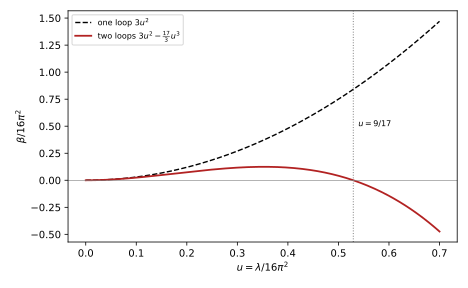
figures/ren-two-loop-beta.sage.
The definition names the divergent parts of a graph. Their relative position, nested, disjoint or overlapping, determines the subtractions needed.
Definition 8 (Subdivergence) A subdivergence of a one-particle-irreducible graph \Gamma is a proper subgraph \gamma \subsetneq \Gamma, itself one-particle irreducible with at least one loop, whose superficial degree of divergence (Definition 5) is \omega(\gamma) \geq 0. Two subdivergences are nested if one contains the other, disjoint if they share no line and no vertex, and overlapping otherwise. For each subdivergence \gamma there is a counterterm graph \Gamma/\gamma, obtained by contracting \gamma to a vertex that carries the counterterm of \gamma.
Veriphy. Pending.
Lean. Pending.
Sage. Pending.
The simplest two-loop graph with subdivergences is the chain of two bubbles in one channel. The first example shows the non-local pole and its cancellation.
Example 34 (The chain of two bubbles) In the massless theory in minimal subtraction (with the scale chosen so that \gamma_E and \log4\pi do not appear), 16\pi^2\mu^\epsilon B(p^2) = \frac2\epsilon - L + 2 + O(\epsilon) with L = \log\frac{p^2}{\mu^2} (Euclidean p). The s-channel chain is proportional to B^2 = \frac{4}{\epsilon^2} + \frac{8 - 4L}{\epsilon} + \dots, and its pole -\frac{4L}{\epsilon} is not a polynomial in the momenta. Its two subdivergences are the two bubbles, which share the middle vertex and so overlap in the sense of the definition, although they have no line in common. Each counterterm graph is the one-loop bubble with the other bubble replaced by its pole \frac2\epsilon, and B^2 - 2\cdot\frac2\epsilon B = -\frac{4}{\epsilon^2} + 0\cdot\frac1\epsilon + \dots: the logarithm has cancelled (Exercise 40).
Veriphy. Pending.
Lean. Pending.
Sage. Pending.
When a bubble sits inside a larger loop, the subdivergence is nested. The second example computes the “eye” graph, in which one vertex of a bubble is replaced by a bubble.
Example 35 (A nested subdivergence) In the graph where two external legs enter a vertex, two lines go from it to two vertices joined by a second bubble, and one external leg leaves each of these, the ultraviolet poles do not depend on the external momenta of the inner vertices, which may be set to zero. Then the inner bubble is \frac{1}{16\pi^2}(\frac2\epsilon - \log\frac{k^2}{\mu^2} + 2) inside the outer loop, and the integral is a product of Gamma functions with poles \frac{1}{(16\pi^2)^2}\bigl(\frac{2}{\epsilon^2} + \frac{5 - 2L}{\epsilon}\bigr). Subtracting the counterterm graph, \frac2\epsilon times the outer bubble, leaves \frac{1}{(16\pi^2)^2}\bigl(-\frac2{\epsilon^2} + \frac1\epsilon\bigr), again without a logarithm (Exercise 41).
Veriphy. Pending.
Lean. Pending.
Sage. Pending.
The two-loop self-energy, the sunset, has three bubbles as subgraphs, each pair of which shares lines. The third example shows what overlapping subdivergences do and what the graph contributes.
Example 36 (Overlapping subdivergences) The sunset graph has three lines between two vertices; any two of them form a four-point subgraph with \omega = 0, and these three subdivergences overlap. Each has a counterterm graph, a tadpole with the vertex -i\delta_\lambda, which vanishes in the massless theory, and the remaining poles of the sunset are local: p^2 times -\frac{\lambda^2}{12(16\pi^2)^2\epsilon} and, with masses, terms in m^2. The p^2 term is the first non-zero field renormalisation, \delta_Z = -\frac{\lambda^2}{12(16\pi^2)^2\epsilon}, which gives the field an anomalous dimension \gamma_\phi = \frac{\lambda^2}{12(16\pi^2)^2} (Definition 13).
Veriphy. Pending.
Lean. Pending.
Sage. Pending.
The exercises carry out the pole computations of the examples with Sage and classify the subdivergences of the two-loop graphs. The first expands the chain.
Exercise 40 (The chain with Sage) With 16\pi^2\mu^\epsilon B(p^2) = e^{\gamma_E\epsilon/2}(4\pi)^{d/2}G(1, 1)(p^2/\mu^2)^{-\epsilon/2} in the modified minimal scheme and G as in the proof of Proposition 3, expand B and B^2 - \frac4\epsilon B in \epsilon with Sage and confirm Example 34.
(4\pi)^{d/2}G(1, 1) = \frac{\Gamma(\epsilon/2)\Gamma(1 - \epsilon/2)^2}{\Gamma(2 - \epsilon)}, and with the factor e^{\gamma_E\epsilon/2} the expansion is \frac2\epsilon - L + 2 + O(\epsilon). Squaring and subtracting the two counterterm graphs leaves -\frac4{\epsilon^2} with no \frac1\epsilon term at all:
var('e L'); d = 4 - e
G = lambda a, b: gamma(a + b - d / 2) * gamma(d / 2 - a) * gamma(d / 2 - b) / (gamma(a) * gamma(b) * gamma(d - a - b))
B = exp(euler_gamma * e / 2) * G(1, 1) * exp(-e * L / 2)
print("16 pi^2 B =", B.series(e, 1).truncate().expand())
chain = B^2
print("chain poles: 1/e^2:", chain.series(e, 1).truncate().expand().coefficient(e, -2), " 1/e:", chain.series(e, 1).truncate().expand().coefficient(e, -1))
sub = (B^2 - 2 * (2 / e) * B).series(e, 1).truncate().expand()
print("chain minus counterterm graphs: 1/e^2:", sub.coefficient(e, -2), " 1/e:", sub.coefficient(e, -1))Output:
16 pi^2 B = -L + 2/e + 2
chain poles: 1/e^2: 4 1/e: -4*L + 8
chain minus counterterm graphs: 1/e^2: -4 1/e: 0Veriphy. Pending.
Lean. Pending.
Sage. Pending.
The eye graph needs the massless one-loop integral with a non-integer power of a propagator. The second exercise carries out Example 35.
Exercise 41 (The nested graph with Sage) With the inner bubble \propto (k^2)^{-\epsilon/2} and the outer integral \int\frac{d^dk}{(2\pi)^d}\frac{(k^2)^{-\epsilon/2}}{k^2(k - p)^2} = G(1 + \frac\epsilon2, 1)(p^2)^{-\epsilon}, expand the eye graph and the subtracted combination with Sage.
The graph is e^{\gamma_E\epsilon}(4\pi)^dG(1, 1)G(1 + \frac\epsilon2, 1)(p^2/\mu^2)^{-\epsilon} in units of (16\pi^2)^{-2}, with poles \frac2{\epsilon^2} + \frac{5 - 2L}\epsilon. Subtracting \frac2\epsilon times the bubble removes the logarithm:
var('e L'); d = 4 - e
G = lambda a, b: gamma(a + b - d / 2) * gamma(d / 2 - a) * gamma(d / 2 - b) / (gamma(a) * gamma(b) * gamma(d - a - b))
B = exp(euler_gamma * e / 2) * G(1, 1) * exp(-e * L / 2)
eye = exp(euler_gamma * e) * G(1, 1) * G(1 + e / 2, 1) * exp(-e * L)
es = eye.series(e, 1).truncate().expand()
print("eye poles: 1/e^2:", es.coefficient(e, -2), " 1/e:", es.coefficient(e, -1))
sub = (eye - (2 / e) * B).series(e, 1).truncate().expand()
print("eye minus counterterm graph: 1/e^2:", sub.coefficient(e, -2), " 1/e:", sub.coefficient(e, -1), " (no L: local)")Output:
eye poles: 1/e^2: 2 1/e: -2*L + 5
eye minus counterterm graph: 1/e^2: -2 1/e: 1 (no L: local)Veriphy. Pending.
Lean. Pending.
Sage. Pending.
The three examples contain all three relations between subdivergences. The third exercise asks for the classification and for the counterterm graphs that each relation produces.
Exercise 42 (Nested, disjoint and overlapping) For the chain, the eye and the sunset, list the subdivergences, say whether each pair is nested, disjoint or overlapping, and draw (in words) the counterterm graphs \Gamma/\gamma. Which of them vanish in the massless theory?
The chain has two bubbles that share the middle vertex and no line: they overlap, and each can be contracted on its own, giving a one-loop bubble with a counterterm vertex, but not both at once (that would merge three vertices into one vertex carrying \delta_\lambda^2, which is not a vertex of the theory). The eye has one subdivergence, the inner bubble, nested in the whole graph; its counterterm graph is the outer bubble with a \delta_\lambda vertex. The sunset has three subdivergences, pairs of its three lines, each pair sharing a line with each other pair: overlapping. Each counterterm graph is a tadpole with a \delta_\lambda vertex and the remaining line, which is a scaleless integral and vanishes in the massless theory.
Veriphy. Pending.
Lean. Pending.
Sage. Pending.
The cancellations of the examples are instances of a general theorem (Theorem 1). The proposition states them and the two-loop renormalisation group functions that follow.
Proposition 3 (The quartic theory at two loops) In the massless quartic theory with minimal subtraction, for the chain and the eye graphs the pole part of \Gamma - \sum_\gamma K(\gamma)\cdot\Gamma/\gamma, where K takes the pole part of the subgraph and the sum runs over the subdivergences, is independent of the external momenta. Collecting all two-loop graphs with their symmetry factors gives the renormalisation group functions, with u = \lambda/16\pi^2, \beta = 16\pi^2\Bigl(3u^2 - \frac{17}{3}u^3\Bigr), \qquad \gamma_\phi = \frac{u^2}{12}, \qquad \gamma_{m^2} = \mu\frac{d\log m^2}{d\mu} = u - \frac56u^2 (Kompaniets and Panzer 2017, eqs. 16 and 18, Tables III and IV, with n = 1).
Veriphy. Pending.
Lean. Pending.
Sage. Pending.
Proof. The first statement is the computation of Example 34 and Example 35, in which the integrals are products of the massless one-loop function G(a, b) = \frac{\Gamma(a + b - d/2)\Gamma(d/2 - a)\Gamma(d/2 - b)}{(4\pi)^{d/2}\Gamma(a)\Gamma(b)\Gamma(d - a - b)} (Grozin 2005, sec. 2.2) and the expansion is done in Exercise 40 and Exercise 41. The renormalisation group functions are quoted from the six-loop computation of Kompaniets and Panzer (2017), whose expansion in their \epsilon = (4 - d)/2 and normalisation g = \lambda/16\pi^2 gives these coefficients at n = 1; their beta function -2\epsilon g + 3g^2 - 5.667g^3 becomes -\epsilon u + 3u^2 - \frac{17}{3}u^3 in d = 4 - \epsilon. \square
The second coefficient of the beta function is negative, so the two-loop function turns over. The first example locates its zero and explains why it is not physical.
Example 37 (A spurious fixed point) 3u^2 - \frac{17}{3}u^3 = 0 at u = \frac{9}{17}, \lambda = 16\pi^2\cdot\frac{9}{17} \approx 83.6 (Figure 9). At this coupling the two-loop term equals the one-loop term, so the series has stopped being an expansion; the three-loop coefficient 32.55u^4 (Kompaniets and Panzer 2017, Table IV) is larger still. The zero is an artefact of truncation, and the quartic theory in four dimensions is believed to have no non-trivial fixed point; it is “trivial” (Section 1.9).
Veriphy. Pending.
Lean. Pending.
Sage. Pending.
The double poles of the two-loop counterterm are predicted by the one-loop ones. The second example derives the prediction from the finiteness of the beta function.
Example 38 (The double pole is predicted) Write \lambda_0\mu^{-\epsilon} = \lambda + \frac{a_1(\lambda)}{\epsilon} + \frac{a_2(\lambda)}{\epsilon^2} + \dots (ignoring \delta_Z, which starts at two loops with a simple pole). As in Exercise 33, finiteness of \beta requires \lambda a_1' - a_1 = \beta_{\epsilon = 0} and \lambda a_2' - a_2 = \beta_{\epsilon = 0}a_1'. With a_1 = b\lambda^2, b = \frac{3}{16\pi^2}, the second condition gives a_2 = b^2\lambda^3 = \frac{9\lambda^3}{(16\pi^2)^2}: the two-loop counterterm has a double pole \frac{9\lambda^3}{(16\pi^2)^2\epsilon^2}, a check of any two-loop computation. In general, the highest pole at every order is fixed by the one-loop coefficient (Balduf 2024, Thm. 58).
Veriphy. Pending.
Lean. Pending.
Sage. Pending.
The structure behind the cancellations is that logarithms come with the coupling in a fixed pattern. The third example shows how the one-loop running resums the leading logarithms of all orders.
Example 39 (Leading logarithms) At the symmetric point, the renormalised amplitude at L loops contains \lambda^{L + 1}\log^L(Q/\mu) times a coefficient, and the leading terms of all orders sum to -\lambda/(1 - b\lambda\log(Q/\mu)), which is -\lambda(Q) (Example 33). The two-loop coefficient \frac{17}{3} controls the next-to-leading logarithms \lambda^{L + 1}\log^{L - 1}. Balduf (2024, eq. 3.41) gives the general leading-log function H_1(z) = (1 - wc_1z)^{-1/w} for a propagator Dyson-Schwinger equation, of which this is a case (Section 1.8).
Veriphy. Pending.
Lean. Pending.
Sage. Pending.
The exercises for the proposition derive the pole equations, compare one-loop and two-loop running, and turn the field renormalisation into a critical exponent. The finiteness of the beta function relates the poles of different orders, and the first exercise proves the relations of Example 38.
Exercise 43 (Pole equations) From \lambda_0\mu^{-\epsilon} = \lambda + \sum_{k \geq 1}a_k(\lambda)\epsilon^{-k} and \mu\frac{d\lambda_0}{d\mu} = 0, show that \beta(\lambda) = -\epsilon\lambda + \lambda a_1' - a_1 and \lambda a_{k + 1}' - a_{k + 1} = (\lambda a_1' - a_1)a_k' for k \geq 1.
Differentiating, -\epsilon(\lambda + \sum a_k\epsilon^{-k}) = \beta(1 + \sum a_k'\epsilon^{-k}). Write \beta = -\epsilon\lambda + \hat\beta with \hat\beta independent of \epsilon (it must be finite, and a positive power of \epsilon beyond -\epsilon\lambda would be inconsistent with the left side). At order \epsilon^0: -a_1 = \hat\beta - \lambda a_1', so \hat\beta = \lambda a_1' - a_1. At order \epsilon^{-k}: -a_{k + 1} = \hat\beta a_k' - \lambda a_{k + 1}', which is the recursion. The simple poles determine \beta, and the higher poles are determined by the simple poles of lower order, the relations of ’t Hooft (Balduf 2024, Thm. 57).
Veriphy. Pending.
Lean. Pending.
Sage. Pending.
The two-loop term changes the running only slightly for small couplings, but the change grows with the coupling. The second exercise quantifies it with Sage.
Exercise 44 (One-loop and two-loop running) Integrate \mu\frac{du}{d\mu} = 3u^2 and \mu\frac{du}{d\mu} = 3u^2 - \frac{17}{3}u^3 from u = 0.01 at \mu_0 (that is \lambda \approx 1.58) over \log(\mu/\mu_0) \in [0, 25] with Sage, and find the relative difference of the two solutions at the end. Where is the one-loop Landau pole?
The one-loop solution is u = 0.01/(1 - 0.03t), with a pole at t = 33.3, and at t = 25 it is 0.04. The two-loop solution, found numerically, is 0.0363 there, about 9\% smaller: the negative second coefficient slows the growth, and the difference grows as the coupling does:
from scipy.integrate import solve_ivp
f1 = lambda t, u: [3 * u[0]**2]
f2 = lambda t, u: [3 * u[0]**2 - 17 / 3 * u[0]**3]
s1 = solve_ivp(f1, [0, 25], [0.01], rtol=1e-11, atol=1e-14); s2 = solve_ivp(f2, [0, 25], [0.01], rtol=1e-11, atol=1e-14)
u1, u2 = s1.y[0][-1], s2.y[0][-1]
print("one loop: u(25) = %.6f (exact 0.01/(1 - 0.75) = %.6f)" % (u1, 0.01 / 0.25))
print("two loops: u(25) = %.6f, relative difference %.3f%%" % (u2, 100 * (u1 - u2) / u1))
print("one-loop Landau pole at t = 1/(3 * 0.01) = %.2f" % (1 / 0.03))Output:
one loop: u(25) = 0.040000 (exact 0.01/(1 - 0.75) = 0.040000)
two loops: u(25) = 0.036318, relative difference 9.204%
one-loop Landau pole at t = 1/(3 * 0.01) = 33.33Veriphy. Pending.
Lean. Pending.
Sage. Pending.
The field renormalisation of the sunset is the first place where the field acquires an anomalous dimension. The third exercise computes it from \delta_Z and evaluates it at the fixed point of the flow in d = 4 - \epsilon.
Exercise 45 (The anomalous dimension of the field) With \phi_0 = Z^{1/2}\phi, Z = 1 - \frac{\lambda^2}{12(16\pi^2)^2\epsilon} and \gamma_\phi = \frac12\mu\frac{d\log Z}{d\mu} at fixed bare quantities, show that \gamma_\phi = \frac{\lambda^2}{12(16\pi^2)^2}. Evaluate \eta = 2\gamma_\phi at the zero \lambda^* = 16\pi^2\epsilon/3 of \beta = -\epsilon\lambda + \frac{3\lambda^2}{16\pi^2}.
\mu\frac{d\log Z}{d\mu} = \beta\,\partial_\lambda\log Z = (-\epsilon\lambda + \dots)\bigl(-\frac{2\lambda}{12(16\pi^2)^2\epsilon}\bigr) = \frac{\lambda^2}{6(16\pi^2)^2} + O(\lambda^3), the pole cancelling against the -\epsilon\lambda of \beta; so \gamma_\phi = \frac{\lambda^2}{12(16\pi^2)^2} = \frac{u^2}{12}. At u^* = \epsilon/3, \eta = 2\cdot\frac{\epsilon^2}{108} = \frac{\epsilon^2}{54}, the leading term of the critical exponent \eta of the Ising universality class (Proposition 9).
Veriphy. Pending.
Lean. Pending.
Sage. Pending.
Exercises
The first integrative exercise ties the one-loop counterterms to physical quantities. It uses the pole mass and the amplitude at threshold.
Exercise 46 (Parameters from measurements) Suppose the pole mass m_P and the amplitude at threshold, \mathcal M(s = 4m_P^2, t = u = 0) = -\lambda_P, are measured. Express the modified-minimal parameters m(\mu) and \lambda(\mu) at \mu = m_P through m_P and \lambda_P to first nontrivial order, using Proposition 2.
From Example 30 at \mu = m, m_P^2 = m^2(1 - \frac{\lambda}{32\pi^2}), so m^2(m_P) = m_P^2(1 + \frac{\lambda_P}{32\pi^2}) to this order. At threshold, 16\pi^2B_R(4m^2) = -\int_0^1\log(1 - 4x(1 - x))dx = -\int_0^1\log(1 - 2x)^2dx = 2 and 16\pi^2B_R(0) = 0 at \mu = m, so \mathcal M = -\lambda + \frac{\lambda^2}{2}\cdot\frac{2}{16\pi^2} and \lambda(m_P) = \lambda_P + \frac{\lambda_P^2}{16\pi^2}. Both shifts are finite: the counterterms have done their work, and the remaining differences are the scheme conversion of Section 1.4.
Veriphy. Pending.
Lean. Pending.
Sage. Pending.
The second integrative exercise combines the one-loop renormalisation with the renormalisation group. It asks how the mass runs together with the coupling.
Exercise 47 (The mass runs with the coupling) Solve \mu\frac{d\lambda}{d\mu} = \frac{3\lambda^2}{16\pi^2}, \mu\frac{dm^2}{d\mu} = \frac{\lambda m^2}{16\pi^2} and show that m^2(\mu)/\lambda(\mu)^{1/3} is independent of \mu. How much does m^2 change between \mu_0 and the scale where \lambda has doubled?
Dividing the equations, \frac{d\log m^2}{d\lambda} = \frac{\lambda/16\pi^2}{3\lambda^2/16\pi^2} = \frac{1}{3\lambda}, so \log m^2 = \frac13\log\lambda + \text{const}, and m^2\lambda^{-1/3} is invariant. When \lambda doubles, m^2 grows by 2^{1/3} = 1.26. The anomalous dimension of the mass is a ratio of renormalisation group functions, and this kind of invariant is what the renormalisation group equations of Section 1.7 integrate in general.
Veriphy. Pending.
Lean. Pending.
Sage. Pending.
The third integrative exercise checks the two-loop counterterm against the pole equations. It combines the chain and eye graphs with Example 38.
Exercise 48 (The double pole from the graphs) In the convention \mathcal M = -\lambda - \delta_\lambda + (\text{loops}), the two-loop part of the amplitude is -\frac{\lambda^3}{4}(B_s^2 + B_t^2 + B_u^2) minus \frac{\lambda^3}{2} times the sum of six eye graphs, two in each channel, and the two-loop counterterm is \delta_\lambda^{(2)} = K\bar R of this part, where \bar R subtracts the subdivergences. Using Example 34 and Example 35, show that the double pole of \delta_\lambda^{(2)} is \frac{9\lambda^3}{(16\pi^2)^2\epsilon^2}, the value predicted by Example 38, and find its simple pole.
In units of (16\pi^2)^{-2}, \bar R(\text{chain}) = -\frac{4}{\epsilon^2} and \bar R(\text{eye}) = -\frac2{\epsilon^2} + \frac1\epsilon. Then K\bar R = -\frac{\lambda^3}{4}\cdot3\cdot(-\frac{4}{\epsilon^2}) - \frac{\lambda^3}{2}\cdot6\cdot(-\frac2{\epsilon^2} + \frac1\epsilon) = \frac{3\lambda^3}{\epsilon^2} + \frac{6\lambda^3}{\epsilon^2} - \frac{3\lambda^3}\epsilon, so \delta_\lambda^{(2)} = \frac{1}{(16\pi^2)^2}\bigl(\frac{9\lambda^3}{\epsilon^2} - \frac{3\lambda^3}{\epsilon}\bigr); the double pole agrees with b^2\lambda^3. With \delta_Z = -\frac{\lambda^2}{12(16\pi^2)^2\epsilon} the bare coupling is \lambda_0\mu^{-\epsilon} = (\lambda + \delta_\lambda)Z^{-2}, whose simple pole is a_1 = \frac{3\lambda^2}{16\pi^2} + (-3 + \frac16)\frac{\lambda^3}{(16\pi^2)^2}, and Exercise 43 gives \beta = \lambda a_1' - a_1 = \frac{3\lambda^2}{16\pi^2} - \frac{17}{3}\frac{\lambda^3}{(16\pi^2)^2}, the coefficient of Proposition 3.
Veriphy. Pending.
Lean. Pending.
Sage. Pending.
Renormalisation schemes
The counterterms of Section 1.3 were fixed by removing poles and nothing else. Any finite amount could have been added to them, and each choice defines different renormalised parameters. A renormalisation scheme is such a choice. Physical predictions do not depend on it, but the numerical values of couplings and masses do, and so do the coefficients of the renormalisation group functions beyond the first ones. This part defines the schemes in common use, converts between them, and identifies what is invariant (Grozin 2005, sec. 3 and 6; Balduf 2024, sec. 2.2.4 and 4.1).
Schemes
There are two families. Physical schemes fix the renormalised parameters by the values of measurable quantities at chosen kinematic points, on the mass shell or at a Euclidean momentum \mu; minimal schemes subtract only poles in \epsilon and leave the scale \mu as a bookkeeping device. The figure compares them for the quartic coupling and for the electric charge.
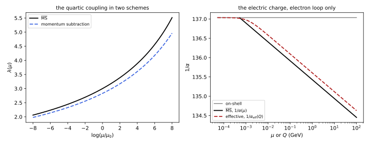
figures/ren-schemes.sage.
The definition lists the four schemes used in this chapter. Each is a set of conditions that fixes the finite parts of the counterterms.
Definition 9 (Renormalisation scheme) A renormalisation scheme is a rule that fixes the finite parts of the counterterms. The on-shell scheme requires the propagator to have its pole at the physical mass with residue one and the coupling to equal a measured amplitude at a physical point (for quantum electrodynamics, electron scattering in a static field, q \to 0). The momentum-subtraction (MOM, or kinematic) scheme requires the one-particle-irreducible functions to take their tree values at a Euclidean point set by a scale \mu, for the quartic theory \Gamma^{(4)} = \lambda at s = t = u = -\mu^2 (Balduf 2024, Def. 93). The minimal subtraction (MS) scheme takes the counterterms to be pure poles in \epsilon, and the modified minimal subtraction (\overline{\mathrm{MS}}) scheme removes the poles together with -\gamma_E + \log4\pi, which is MS with \mu^2 replaced by \bar\mu^2 = 4\pi e^{-\gamma_E}\mu^2 (Grozin 2005, eqs. 3.8-3.9).
Veriphy. Pending.
Lean. Pending.
Sage. Pending.
The two minimal schemes differ only by a rescaling of \mu. The first example shows why this makes them equivalent for every purpose except the numerical value of \mu.
Example 40 (MS and \overline{\mathrm{MS}}) The pole of a one-loop integral always appears as \Gamma(\epsilon/2)(4\pi\mu^2/\Delta)^{\epsilon/2} = \frac2\epsilon - \gamma_E + \log4\pi + \log\frac{\mu^2}{\Delta} + O(\epsilon). In MS the counterterm removes \frac2\epsilon and the renormalised result contains -\gamma_E + \log4\pi + \log\frac{\mu^2}{\Delta} = \log\frac{\bar\mu^2}{\Delta}; in \overline{\mathrm{MS}} the counterterm removes all of \frac2\epsilon - \gamma_E + \log4\pi and the result contains \log\frac{\mu^2}{\Delta}. So \lambda_{\overline{\mathrm{MS}}}(\mu) = \lambda_{\mathrm{MS}}(\mu e^{-\gamma_E/2}/\sqrt{4\pi}): the functions are the same, evaluated at scales differing by the factor \sqrt{4\pi}e^{-\gamma_E/2} = 2.66, and their beta functions are identical at every order.
Veriphy. Pending.
Lean. Pending.
Sage. Pending.
The momentum-subtraction scheme for the quartic theory is defined by the amplitude at a symmetric Euclidean point. The second example converts it to \overline{\mathrm{MS}} at one loop.
Example 41 (Momentum subtraction for the quartic theory) In the massless theory, Example 33 gives \mathcal M(s = t = u = -\mu^2) = -\lambda_{\overline{\mathrm{MS}}}(\mu) + \frac{3\lambda_{\overline{\mathrm{MS}}}^2}{32\pi^2}\cdot2, since 16\pi^2B_R = 2 - \log\frac{Q^2}{\mu^2} at Q = \mu. Defining \lambda_{\mathrm{MOM}}(\mu) := -\mathcal M(-\mu^2, -\mu^2, -\mu^2), \lambda_{\mathrm{MOM}}(\mu) = \lambda_{\overline{\mathrm{MS}}}(\mu) - \frac{3\lambda_{\overline{\mathrm{MS}}}(\mu)^2}{16\pi^2} + O(\lambda^3) (Exercise 49). The two couplings run with the same one-loop beta function, so the left panel of Figure 10 shows two parallel curves on a logarithmic scale of \mu.
Veriphy. Pending.
Lean. Pending.
Sage. Pending.
In quantum electrodynamics the natural coupling is the on-shell charge, measured at zero momentum transfer. The third example relates it to the running \overline{\mathrm{MS}} coupling.
Example 42 (The on-shell charge) The on-shell charge is defined by the electron-photon vertex with all three particles on shell and q \to 0; its value is \alpha = 1/137.036 (Grozin 2005, sec. 6.4). The Ward identity reduces its renormalisation to that of the photon field, and at one loop \alpha_{\overline{\mathrm{MS}}}(\mu) = \alpha\Bigl(1 + \frac{\alpha}{3\pi}\log\frac{\mu^2}{m_e^2}\Bigr) (Grozin 2005, eq. 6.40, converted to d = 4 - \epsilon). At \mu = m_e the two coincide; at \mu = M_Z, with the electron alone, 1/\alpha_{\overline{\mathrm{MS}}} = 137.036 - \frac{2}{3\pi}\log\frac{M_Z}{m_e} = 134.47 (Exercise 51).
Veriphy. Pending.
Lean. Pending.
Sage. Pending.
A mass can be defined in several schemes too, and in quantum electrodynamics the difference between the pole mass and the \overline{\mathrm{MS}} mass is a finite one-loop correction. The fourth example gives it.
Example 43 (Pole mass and running mass) For the electron, \frac{m(\mu)}{m} = 1 - \frac{6\alpha}{4\pi}\bigl(\log\frac\mu m + \frac23\bigr) at one loop, where m is the pole mass and m(\mu) the \overline{\mathrm{MS}} mass (Grozin 2005, eq. 6.31). At \mu = m, m(m) = m(1 - \frac\alpha\pi), a difference of 0.23\% (Exercise 52). For quarks the same relation with \alpha \to \frac43\alpha_s gives shifts of several per cent, which is why quark masses are always quoted with their scheme.
Veriphy. Pending.
Lean. Pending.
Sage. Pending.
The exercises convert between schemes and evaluate the conversions numerically, for the quartic coupling, the electric charge and the electron mass. The first computes the momentum-subtraction coupling with Sage.
Exercise 49 (The conversion to momentum subtraction) Using 16\pi^2B_R(p^2) = -\int_0^1\log\frac{x(1 - x)Q^2}{\mu^2}dx for the massless bubble at Euclidean p^2 = -Q^2 (Minkowski), confirm Example 41. For \lambda_{\overline{\mathrm{MS}}}(\mu) = 3, how large is the difference between the two couplings?
\int_0^1\log(x(1 - x))dx = -2, so at Q = \mu, 16\pi^2B_R = 2, and the three channels give \frac{\lambda^2}{2}\cdot\frac{3\cdot2}{16\pi^2} = \frac{3\lambda^2}{16\pi^2}, which reduces -\mathcal M by this amount. For \lambda = 3 the difference is \frac{27}{158} = 0.171, about 6\%:
var('x lam')
c = -integrate(log(x * (1 - x)), x, 0, 1)
print("16 pi^2 B_R at Q = mu (massless):", c)
lmom = lam - lam^2 / 2 * 3 * c / (16 * pi^2)
print("lambda_MOM =", lmom)
print("for lambda_MSbar = 3: lambda_MOM = %.4f, difference %.4f (%.1f%%)" % (lmom.subs(lam=3).n(), (3 - lmom.subs(lam=3)).n(), (100 * (3 - lmom.subs(lam=3)) / 3).n()))Output:
16 pi^2 B_R at Q = mu (massless): 2
lambda_MOM = lam - 3/16*lam^2/pi^2
for lambda_MSbar = 3: lambda_MOM = 2.8290, difference 0.1710 (5.7%)Veriphy. Pending.
Lean. Pending.
Sage. Pending.
Changing the scheme by a finite rescaling of \mu never changes the form of the results. The second exercise shows this for the conversion between MS and \overline{\mathrm{MS}} at two loops.
Exercise 50 (A rescaling of the scale) Show that if \lambda_1(\mu) obeys \mu\frac{d\lambda_1}{d\mu} = \beta(\lambda_1) then so does \lambda_2(\mu) := \lambda_1(k\mu) for any constant k > 0, and that to second order \lambda_2(\mu) = \lambda_1(\mu) + \beta(\lambda_1)\log k + \frac12\beta\beta'\log^2k. Apply it to MS and \overline{\mathrm{MS}}.
\mu\frac{d}{d\mu}\lambda_1(k\mu) = (k\mu)\lambda_1'(k\mu) = \beta(\lambda_1(k\mu)), so \lambda_2 solves the same autonomous equation. Taylor expanding in \log k, \lambda_1(k\mu) = \lambda_1 + \beta\log k + \frac12(\beta\beta')\log^2k + \dots, because \frac{d^2\lambda}{d(\log\mu)^2} = \beta'\beta. With k = \sqrt{4\pi}e^{-\gamma_E/2} this is the relation of Example 40: the two schemes are two parametrisations of one trajectory.
Veriphy. Pending.
Lean. Pending.
Sage. Pending.
The on-shell and \overline{\mathrm{MS}} charges can be compared with the effective charge at a momentum Q, which is what a scattering experiment at that momentum transfer sees. The third exercise uses Sage.
Exercise 51 (Three charges at the Z mass) With \alpha = 1/137.036, m_e = 0.511\,\mathrm{MeV} and M_Z = 91.19\,\mathrm{GeV}, and the electron as the only charged particle, compute 1/\alpha_{\overline{\mathrm{MS}}}(M_Z) and the effective charge 1/\alpha_{\mathrm{eff}}(M_Z) = (1 - \hat\Pi(-M_Z^2))/\alpha with \hat\Pi(-Q^2) = \frac{2\alpha}{\pi}\int_0^1x(1 - x)\log(1 + x(1 - x)Q^2/m_e^2)dx. Explain the difference.
1/\alpha_{\overline{\mathrm{MS}}}(M_Z) = 137.036 - \frac{2}{3\pi}\log\frac{M_Z}{m_e} = 134.470. The exact one-loop integral gives 1/\alpha_{\mathrm{eff}}(M_Z) = 134.647, and its large-Q form \frac{1}{\alpha} - \frac{1}{3\pi}(\log\frac{Q^2}{m_e^2} - \frac53) agrees with it to the digits shown. The difference \frac{5}{9\pi} = 0.177 between the two is the constant that separates the momentum-subtraction and \overline{\mathrm{MS}} definitions at large Q, the right panel of Figure 10:
al = 1 / 137.035999; me = 0.000510999; MZ = 91.1876
x = var('x')
I = numerical_integral(x * (1 - x) * log(1 + x * (1 - x) * MZ^2 / me^2), 0, 1)[0]
ms = 1 / al - 2 / (3 * pi) * log(MZ / me)
eff = (1 - 2 * al / pi * I) / al
ll = 1 / al - 1 / (3 * pi) * (log(MZ^2 / me^2) - 5 / 3)
print("1/alpha_MSbar(MZ) = %.4f 1/alpha_eff(MZ) = %.4f large-Q formula %.4f" % (ms.n(), eff.n(), ll.n()))
print("difference eff - MSbar = %.4f, 5/(9 pi) = %.4f" % ((eff - ms).n(), (5 / (9 * pi)).n()))Output:
1/alpha_MSbar(MZ) = 134.4700 1/alpha_eff(MZ) = 134.6468 large-Q formula 134.6468
difference eff - MSbar = 0.1768, 5/(9 pi) = 0.1768Veriphy. Pending.
Lean. Pending.
Sage. Pending.
The relation between the pole mass and the running mass depends on the scale at which the running mass is quoted. The fourth exercise evaluates it.
Exercise 52 (The electron mass in two schemes) Using Example 43, compute m(\mu) for the electron at \mu = m, \mu = 10m and \mu = M_Z to first order in \alpha. Why is the formula unreliable at \mu = M_Z, and what should be done instead?
With \frac{6\alpha}{4\pi} = 0.003484: at \mu = m, m(m)/m = 1 - 0.003484\cdot\frac23 = 0.99768; at \mu = 10m, 1 - 0.003484(2.303 + 0.667) = 0.98965; at \mu = M_Z, \log(M_Z/m) = 12.09 and m(M_Z)/m = 1 - 0.0444 = 0.956. At M_Z the logarithm makes the correction large; one should compute m(m) with the formula and then run it with \mu\frac{dm}{d\mu} = -\frac{6\alpha}{4\pi}m (Grozin (2005, eq. 3.107)), which resums the logarithms: with \mu\frac{d\alpha}{d\mu} = \frac{2\alpha^2}{3\pi} (the electron alone), \frac{d\log m}{d\alpha} = -\frac{9}{4\alpha} and m(M_Z) = m(m)(\alpha(M_Z)/\alpha(m))^{-9/4}.
Veriphy. Pending.
Lean. Pending.
Sage. Pending.
Scheme dependence
Two schemes give two sets of parameters, related by finite series. A physical quantity computed in either, to a given order, agrees up to terms of higher order. The renormalisation group functions themselves change, but not all of their coefficients: the proposition says which survive.
Proposition 4 (What does not depend on the scheme) Let \lambda' = \lambda + c\lambda^2 + d\lambda^3 + O(\lambda^4) with constants c, d, and let \beta(\lambda) = b_1\lambda^2 + b_2\lambda^3 + b_3\lambda^4 + \dots. Then \beta'(\lambda') := \mu\frac{d\lambda'}{d\mu} = b_1\lambda'^2 + b_2\lambda'^3 + b_3'\lambda'^4 + \dots with b_3' = b_3 - cb_2 + (d - c^2)b_1 : the first two coefficients of a beta function with one dimensionless coupling are the same in every mass-independent scheme, and the third is not. At a zero \lambda^* of \beta, the zero \lambda'^* = \lambda'(\lambda^*) of \beta' has the same slope, \beta'_{,\lambda'}(\lambda'^*) = \beta_{,\lambda}(\lambda^*), and every anomalous dimension has the same value there (Balduf 2024, Thm. 58).
Veriphy. Pending.
Lean. Pending.
Sage. Pending.
Proof. \beta'(\lambda') = \beta(\lambda)\frac{d\lambda'}{d\lambda} = (b_1\lambda^2 + b_2\lambda^3 + b_3\lambda^4)(1 + 2c\lambda + 3d\lambda^2), and substituting the inverse series \lambda = \lambda' - c\lambda'^2 + (2c^2 - d)\lambda'^3 and collecting gives the coefficients (Exercise 53). At a zero, \beta' = \beta\cdot\frac{d\lambda'}{d\lambda} vanishes, and differentiating with respect to \lambda', \frac{d\beta'}{d\lambda'} = \frac{d\beta}{d\lambda} + \beta\frac{d}{d\lambda'}\log\frac{d\lambda'}{d\lambda}, whose second term vanishes at \lambda^*. An anomalous dimension \gamma = \mu\frac{d\log Z}{d\mu} changes under a finite renormalisation Z' = Z\cdot f(\lambda) by \mu\frac{d\log f}{d\mu} = \beta\frac{f'}{f}, which also vanishes at \lambda^*. \square
The invariance of the first two coefficients can be seen on the quartic theory directly. The first example converts its beta function to the momentum-subtraction scheme.
Example 44 (The quartic beta function in two schemes) With \lambda_{\mathrm{MOM}} = \lambda - \frac{3\lambda^2}{16\pi^2} + O(\lambda^3) (Example 41), c = -\frac{3}{16\pi^2} = -b_1. The momentum-subtraction beta function is 3u^2 - \frac{17}{3}u^3 + b_3'u^4 in units of 16\pi^2 with u = \lambda/16\pi^2, the same first two coefficients as in Proposition 3; its third coefficient differs from the minimal one by -cb_2 + (d - c^2)b_1, which requires the two-loop conversion coefficient d. The two schemes are equally good; minimal subtraction is preferred because its renormalisation group functions do not depend on \epsilon (Balduf 2024, Thm. 56).
Veriphy. Pending.
Lean. Pending.
Sage. Pending.
A change of scheme shifts the scale at which a coupling becomes large. The second example computes the shift of the Landau pole of the quartic theory.
Example 45 (The Landau scale in two schemes) At one loop \lambda(\mu) = \frac{1}{b_1\log(\Lambda_L/\mu)} defines the Landau scale \Lambda_L. In another scheme \frac{1}{\lambda'} = \frac1\lambda - c + O(\lambda) = b_1\log\frac{\Lambda_L}{\mu} - c, so \Lambda_L' = \Lambda_Le^{-c/b_1}. For momentum subtraction c = -b_1 and \Lambda_{L,\mathrm{MOM}} = e\,\Lambda_{L,\overline{\mathrm{MS}}}. The same argument applied to quantum chromodynamics shows that \Lambda_{\mathrm{QCD}} depends on the scheme by a computable factor fixed by the one-loop conversion alone.
Veriphy. Pending.
Lean. Pending.
Sage. Pending.
At a fixed point the scheme-independent numbers are the slopes and the anomalous dimensions. The third example shows this for the fixed point of Exercise 34.
Example 46 (The slope at a fixed point) In d = 4 - \epsilon, \beta = -\epsilon\lambda + b_1\lambda^2 has the zero \lambda^* = \epsilon/b_1 and slope \beta_{,\lambda}(\lambda^*) = \epsilon. In the scheme \lambda' = \lambda + c\lambda^2, \beta'(\lambda') = (-\epsilon\lambda + b_1\lambda^2)(1 + 2c\lambda) expressed through \lambda'; its zero is \lambda'^* = \lambda^* + c\lambda^{*2} and its slope there is again \epsilon. The slope \omega = \epsilon is the critical exponent of the leading correction to scaling at the Wilson-Fisher fixed point (Kompaniets and Panzer 2017, eq. 7), and it is a prediction of the theory.
Veriphy. Pending.
Lean. Pending.
Sage. Pending.
The exercises derive the transformation of the third coefficient, construct a scheme with a two-loop beta function, and check the invariance at a fixed point. The first is a Sage computation.
Exercise 53 (The third coefficient) Verify Proposition 4 with Sage: compute \beta(\lambda)\frac{d\lambda'}{d\lambda} as a series in \lambda' to fourth order.
The inverse series is \lambda = \lambda' - c\lambda'^2 + (2c^2 - d)\lambda'^3 + \dots, and the coefficients of \lambda'^2, \lambda'^3, \lambda'^4 are b_1, b_2 and b_3 - cb_2 + (d - c^2)b_1:
var('l lp b1 b2 b3 c d')
beta = b1 * l^2 + b2 * l^3 + b3 * l^4
lprime = l + c * l^2 + d * l^3
inv = lp - c * lp^2 + (2 * c^2 - d) * lp^3
print("check of the inverse series:", taylor(lprime.subs(l=inv) - lp, lp, 0, 3))
bp = taylor((beta * diff(lprime, l)).subs(l=inv), lp, 0, 4)
for k in [2, 3, 4]:
print("coefficient of lambda'^%d:" % k, bp.coefficient(lp, k).expand())Output:
check of the inverse series: 0
coefficient of lambda'^2: b1
coefficient of lambda'^3: b2
coefficient of lambda'^4: -b1*c^2 - b2*c + b1*d + b3Veriphy. Pending.
Lean. Pending.
Sage. Pending.
Since b_3' can be shifted by d, it can be set to zero. The second exercise pursues this to all orders, following ’t Hooft.
Exercise 54 (A scheme with a two-loop beta function) Show that by choosing the coefficients of \lambda' = \lambda + \sum_{k \geq 2}c_k\lambda^k order by order one can make \beta'(\lambda') = b_1\lambda'^2 + b_2\lambda'^3 exactly, and solve this equation implicitly.
At order \lambda'^{k + 1}, k \geq 3, the coefficient c_k enters b_k' linearly with the factor (k - 2)b_1 \neq 0 (for k = 3 this is the db_1 of the proposition), so it can be chosen to cancel b_k', one order after another. The equation \frac{d\lambda'}{dt} = b_1\lambda'^2 + b_2\lambda'^3 integrates to t = -\frac{1}{b_1\lambda'} - \frac{b_2}{b_1^2}\log\frac{\lambda'}{b_1 + b_2\lambda'} + \text{const}, an exact solution in this scheme. Such a scheme exists only as a formal series; the series of conversions need not converge.
Veriphy. Pending.
Lean. Pending.
Sage. Pending.
The invariance of the slope at a fixed point is the reason why critical exponents are predictions. The third exercise checks it for a two-coefficient beta function and a quadratic change of variables.
Exercise 55 (Invariance at a fixed point) For \beta = -\epsilon\lambda + b_1\lambda^2 + b_2\lambda^3 and \lambda' = \lambda + c\lambda^2, compute with Sage the zero of \beta' near \lambda'^* and the slope there, and show that the slope equals \beta_{,\lambda}(\lambda^*) exactly.
\beta' as a function of \lambda' is \beta(\lambda(\lambda'))\cdot(1 + 2c\lambda(\lambda')) with \lambda(\lambda') = \frac{-1 + \sqrt{1 + 4c\lambda'}}{2c}. At \lambda' = \lambda^* + c\lambda^{*2} it vanishes, and its derivative is \beta_{,\lambda}(\lambda^*)\frac{d\lambda}{d\lambda'}(1 + 2c\lambda^*) = \beta_{,\lambda}(\lambda^*), since \frac{d\lambda}{d\lambda'} = \frac{1}{1 + 2c\lambda}:
var('l lp eps b1 b2 c')
beta = -eps * l + b1 * l^2 + b2 * l^3
lam_of = (-1 + sqrt(1 + 4 * c * lp)) / (2 * c) # inverse of lp = l + c l^2
betap = (beta * (1 + 2 * c * l)).subs(l=lam_of)
for (e, B1, B2, C) in [(0.1, 3, -17 / 3, -3), (0.5, 1, 2, 0.7)]:
ls = [r for r in solve(beta.subs(eps=e, b1=B1, b2=B2) / l == 0, l) if r.rhs().n() > 0][0].rhs().n()
lps = ls + C * ls^2
sp = diff(betap, lp).subs(eps=e, b1=B1, b2=B2, c=C, lp=lps).n()
s0 = diff(beta, l).subs(eps=e, b1=B1, b2=B2, l=ls).n()
print("eps = %.1f: lambda* = %.6f, beta' at lambda'* = %.2e, slopes %.10f and %.10f" % (e, ls, betap.subs(eps=e, b1=B1, b2=B2, c=C, lp=lps).n(), sp, s0))Output:
eps = 0.1: lambda* = 0.035747, beta' at lambda'* = 1.02e-18, slopes 0.0927588396 and 0.0927588396
eps = 0.5: lambda* = 0.309017, beta' at lambda'* = -1.99e-17, slopes 0.6909830056 and 0.6909830056Veriphy. Pending.
Lean. Pending.
Sage. Pending.
Mass-dependent schemes such as momentum subtraction with massive particles do not obey the proposition, because their beta functions depend on m/\mu. The fourth exercise shows the extreme case.
Exercise 56 (A mass-dependent beta function) In the momentum-subtraction scheme with a particle of mass m, the one-loop beta function of the quartic theory is \beta = \frac{3\lambda^2}{16\pi^2}f(\mu/m). Derive f(z) = \int_0^1dx\frac{x(1 - x)z^2}{1 + x(1 - x)z^2} from the \mu independence of the amplitude at a fixed symmetric point, find f for z \ll 1 and z \gg 1, and interpret the result.
In terms of the momentum-subtraction coupling, the amplitude at the symmetric point -Q^2 is \mathcal M(Q) = -\lambda_{\mathrm{MOM}}(\mu) + \frac{3\lambda^2}{2}(B(Q) - B(\mu)) with 16\pi^2B(Q) = -\int_0^1\log(m^2 + x(1 - x)Q^2)dx up to a constant. Its independence of \mu gives \beta = -\frac{3\lambda^2}{2}\mu\frac{dB(\mu)}{d\mu} = \frac{3\lambda^2}{32\pi^2}\int_0^1\frac{2x(1 - x)\mu^2}{m^2 + x(1 - x)\mu^2}dx, which is \frac{3\lambda^2}{16\pi^2}f(\mu/m). For z \gg 1 the integrand tends to 1 and f \to 1, the minimal-scheme value; for z \ll 1, f \approx z^2\int_0^1x(1 - x)dx = \frac{z^2}{6}: below the mass the coupling stops running. The heavy particle decouples, which the minimal scheme does not show (Section 1.10).
Veriphy. Pending.
Lean. Pending.
Sage. Pending.
Exercises
The first integrative exercise compares the three ways of renormalising the charge at one loop. It combines Definition 9 with Example 42.
Exercise 57 (The charge in three schemes) At one loop the renormalised vacuum polarisation in a scheme S is \hat\Pi_S(q^2) = \Pi(q^2) - \Pi_S, where \Pi(q^2) = -\frac{2\alpha}{\pi}\int_0^1x(1 - x)\bigl(\frac2{\bar\epsilon} - \log\frac{m^2 - x(1 - x)q^2}{\mu^2}\bigr)dx. Write \Pi_S for the on-shell scheme (subtract at q^2 = 0), for momentum subtraction at q^2 = -\mu^2, and for \overline{\mathrm{MS}}, and find the relations between the three couplings at one loop.
On-shell: \Pi_{\mathrm{os}} = \Pi(0), so \hat\Pi_{\mathrm{os}}(q^2) = -\frac{2\alpha}{\pi}\int x(1 - x)\log\frac{m^2}{m^2 - x(1 - x)q^2}. MOM: \Pi_{\mathrm{MOM}} = \Pi(-\mu^2). \overline{\mathrm{MS}}: \Pi_{\overline{\mathrm{MS}}} = -\frac{2\alpha}{\pi}\cdot\frac16\cdot\frac2{\bar\epsilon}. A coupling defined in scheme S is \alpha_S = \alpha_0/(1 - \Pi_S) to this order (with the bare \alpha_0), so \frac{1}{\alpha_S} - \frac{1}{\alpha_{S'}} = \frac{\Pi_{S'} - \Pi_S}{\alpha}. Then \frac{1}{\alpha_{\overline{\mathrm{MS}}}(\mu)} = \frac1{\alpha_{\mathrm{os}}} - \frac{1}{3\pi}\log\frac{\mu^2}{m^2} and \frac{1}{\alpha_{\mathrm{MOM}}(\mu)} = \frac1{\alpha_{\mathrm{os}}} - \frac2\pi\int_0^1x(1 - x)\log(1 + x(1 - x)\frac{\mu^2}{m^2})dx, which for \mu \gg m is \frac{1}{\alpha_{\overline{\mathrm{MS}}}(\mu)} + \frac{5}{9\pi}.
Veriphy. Pending.
Lean. Pending.
Sage. Pending.
The second integrative exercise shows that a physical prediction is the same in two schemes. It uses the symmetric-point amplitude of the quartic theory.
Exercise 58 (One prediction, two schemes) Compute the massless amplitude at the symmetric point s = t = u = -Q^2 to order \lambda^2 from \lambda_{\overline{\mathrm{MS}}}(\mu), and from \lambda_{\mathrm{MOM}}(\mu) using \mathcal M = -\lambda_{\mathrm{MOM}}(\mu) + \frac{3\lambda_{\mathrm{MOM}}^2}{16\pi^2}\log\frac{\mu}{Q}. Show with Sage that the two agree to order \lambda^2, and evaluate the difference at order \lambda^3 for \lambda_{\overline{\mathrm{MS}}}(\mu) = 2, Q = 10\mu.
From Example 33, \mathcal M = -\lambda + \frac{3\lambda^2}{32\pi^2}(2 - \log\frac{Q^2}{\mu^2}) with \lambda = \lambda_{\overline{\mathrm{MS}}}. Substituting \lambda_{\mathrm{MOM}} = \lambda - \frac{3\lambda^2}{16\pi^2} in the second form gives -\lambda + \frac{3\lambda^2}{16\pi^2} - \frac{3\lambda^2}{16\pi^2}\log\frac Q\mu + O(\lambda^3), the same. The two truncated expressions differ at order \lambda^3, by an amount that is the size of the uncomputed two-loop term:
var('lam L') # L = log(Q/mu)
b = 3 / (16 * pi^2)
M_ms = -lam + 3 * lam^2 / (32 * pi^2) * (2 - 2 * L)
lmom = lam - b * lam^2
M_mom = -lmom - b * lmom^2 * L
print("difference to order lambda^2:", taylor(M_ms - M_mom, lam, 0, 2).simplify_full())
print("difference at order lambda^3:", taylor(M_ms - M_mom, lam, 0, 3).coefficient(lam, 3).simplify_full(), "* lambda^3")
v = {lam: 2, L: log(10)}
print("lambda = 2, Q = 10 mu: M_MSbar = %.5f, M_MOM = %.5f, difference %.5f" % (M_ms.subs(v).n(), M_mom.subs(v).n(), (M_ms - M_mom).subs(v).n()))Output:
difference to order lambda^2: 0
difference at order lambda^3: -9/128*L/pi^4 * lambda^3
lambda = 2, Q = 10 mu: M_MSbar = -2.09898, M_MOM = -2.08594, difference -0.01304Veriphy. Pending.
Lean. Pending.
Sage. Pending.
The third integrative exercise asks why the highest poles do not depend on the scheme. It combines Example 38 with Proposition 4.
Exercise 59 (Highest poles are universal) Show that in any scheme in which the counterterms are \lambda_0\mu^{-\epsilon} = \lambda + \sum_ka_k(\lambda)\epsilon^{-k} with a_k = O(\lambda^{k + 1}), the leading coefficient [\lambda^{k + 1}]a_k = b_1^k, where b_1 is the one-loop coefficient. Why does this make b_1 scheme independent from a second point of view?
By Exercise 43, \lambda a_{k + 1}' - a_{k + 1} = \hat\beta a_k'. With a_k = \alpha_k\lambda^{k + 1} + \dots and \hat\beta = b_1\lambda^2 + \dots, the leading terms give (k + 1)\alpha_{k + 1} = b_1(k + 1)\alpha_k, so \alpha_{k + 1} = b_1\alpha_k and \alpha_k = b_1^k since \alpha_1 = b_1. A finite renormalisation \lambda \to \lambda + c\lambda^2 changes a_k only at orders \lambda^{k + 2} and beyond, so the leading poles are the same in every scheme with these properties, and with them b_1 = \alpha_1; this is the content of Balduf (2024, Thm. 58, items 1-2).
Veriphy. Pending.
Lean. Pending.
Sage. Pending.
BPHZ and forests
At two loops the counterterm graphs of Section 1.3 removed the non-local poles, and the overall divergence that remained was local. To all orders the bookkeeping becomes intricate: subdivergences sit inside subdivergences, and some overlap. Bogoliubov and Parasiuk gave a recursive subtraction, Hepp proved that it works, and Zimmermann solved the recursion in closed form as a sum over forests, sets of non-overlapping divergent subgraphs. Connes and Kreimer later recognised the combinatorics as that of a Hopf algebra, in which the counterterm of a graph is a twisted antipode (Balduf 2024, sec. 2.2 and 2.3.4).
Forests
The subtraction operator T_\gamma acting on a subgraph replaces its integrand by the part that produces its divergence: in momentum subtraction the Taylor polynomial of degree \omega(\gamma) in its external momenta at a reference point, in minimal subtraction the pole part K of its regularised value. The figure shows the three two-loop graphs of the quartic theory with their subdivergences, and the number of forests of each.
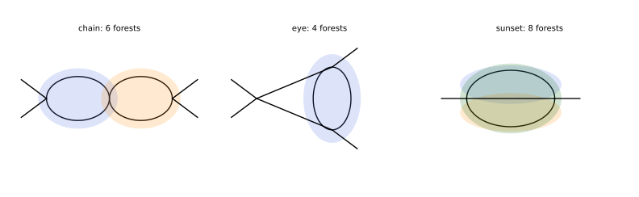
figures/ren-forests.sage.
The definition fixes what may appear together in a subtraction term. Two subgraphs may be subtracted in one term only if one contains the other or they do not touch.
Definition 10 (Forest) Let \Gamma be a one-particle-irreducible graph and \mathcal D(\Gamma) the set of its one-particle-irreducible subgraphs \gamma with \omega(\gamma) \geq 0, \Gamma itself included if it is superficially divergent. Two subgraphs overlap if they share a vertex or a line and neither contains the other. A forest of \Gamma is a subset F \subseteq \mathcal D(\Gamma), the empty set included, no two elements of which overlap. The forest formula of Zimmermann assigns to \Gamma the renormalised integrand R\,I_\Gamma = \sum_F\prod_{\gamma \in F}(-T_\gamma)\,I_\Gamma , \tag{9} where in each product the operators act from the smallest subgraph outwards and T_\gamma acts on the integrand of \gamma with the inner subtractions already made.
Veriphy. Pending.
Lean. Pending.
Sage. Pending.
At one loop there are no subdivergences, and the formula is a single subtraction. The first example writes it out for the bubble.
Example 47 (One loop) The bubble \Gamma has \mathcal D(\Gamma) = \{\Gamma\} and the forests \emptyset and \{\Gamma\}, so R\,I_\Gamma = (1 - T_\Gamma)I_\Gamma. With momentum subtraction at zero momentum, T_\Gamma I_\Gamma(p) = I_\Gamma(0), and R\,I_\Gamma = I_\Gamma(p) - I_\Gamma(0) is the subtracted bubble of Example 3, finite before any regulator is introduced: the subtraction can be done under the integral sign, \int d^4\ell\,(\frac{1}{(\ell^2 + m^2)((\ell + p)^2 + m^2)} - \frac{1}{(\ell^2 + m^2)^2}), whose integrand falls like \ell^{-5}.
Veriphy. Pending.
Lean. Pending.
Sage. Pending.
A nested subdivergence gives a product of two subtractions, applied from the inside out. The second example is the eye graph of Example 35.
Example 48 (The eye graph) The eye graph has \mathcal D = \{\gamma, \Gamma\} with the inner bubble \gamma \subset \Gamma. Its forests are \emptyset, \{\gamma\}, \{\Gamma\} and \{\gamma, \Gamma\}, and Equation 9 gives R\,I_\Gamma = I_\Gamma - T_\gamma I_\Gamma - T_\Gamma I_\Gamma + T_\Gamma T_\gamma I_\Gamma = (1 - T_\Gamma)(1 - T_\gamma)I_\Gamma . The second term is the counterterm graph of Example 35, and the last two together are the overall counterterm of \Gamma evaluated on the graph with its subdivergence already subtracted, -T_\Gamma\bar R\,I_\Gamma with \bar R = 1 - T_\gamma.
Veriphy. Pending.
Lean. Pending.
Sage. Pending.
When two subdivergences overlap they never appear in the same forest. The third example is the chain, whose two bubbles share a vertex.
Example 49 (The chain) The chain has \mathcal D = \{\gamma_1, \gamma_2, \Gamma\}, and \gamma_1, \gamma_2 share the middle vertex. The forests are \emptyset, \{\gamma_1\}, \{\gamma_2\}, \{\Gamma\}, \{\gamma_1, \Gamma\} and \{\gamma_2, \Gamma\}, six of them, and R\,I_\Gamma = (1 - T_\Gamma)(1 - T_{\gamma_1} - T_{\gamma_2})I_\Gamma . With minimal subtraction this is B^2 - 2K(B)B - K(B^2 - 2K(B)B), whose pole part vanishes by Example 34. The product T_{\gamma_1}T_{\gamma_2} does not occur: contracting both bubbles would merge three vertices into one, which no counterterm provides.
Veriphy. Pending.
Lean. Pending.
Sage. Pending.
The sunset has three subdivergences, each overlapping the other two. The fourth example counts its forests and shows that the overall subtraction must remove two powers of momentum.
Example 50 (The sunset) Each pair of the three lines of the sunset forms a four-point subgraph \gamma_i with \omega = 0; the sunset itself has \omega = 2. Since the \gamma_i overlap, the forests are \emptyset, \{\gamma_i\}, \{\Gamma\} and \{\gamma_i, \Gamma\}, eight in all, and R\,I_\Gamma = (1 - T_\Gamma)(1 - T_{\gamma_1} - T_{\gamma_2} - T_{\gamma_3})I_\Gamma. In momentum subtraction T_\Gamma is the Taylor polynomial of degree two in the external momentum, I(0) + \frac12p^\mu p^\nu\partial_\mu\partial_\nu I(0), whose two terms are a mass and a field-strength counterterm (Example 36).
Veriphy. Pending.
Lean. Pending.
Sage. Pending.
The exercises count forests by computer, apply the Taylor operator, and evaluate a renormalised two-loop graph. The first counts the forests of a chain of bubbles.
Exercise 60 (Forests of a chain) In the s-channel chain of n bubbles, the divergent subgraphs are the runs of consecutive bubbles [i, j], 1 \leq i \leq j \leq n, and two runs overlap unless one contains the other or there is at least one bubble between them. Count the forests for n = 1, \dots, 6 with Sage.
Two runs [i, j] and [k, l] with j < k share a vertex when k = j + 1, so they are compatible only if k \geq j + 2 or they are nested. Enumerating all subsets of the n(n + 1)/2 runs, the numbers of forests are 2, 6, 22, 90, 394, 1806 for n = 1, \dots, 6, the large Schröder numbers: the same numbers count the ways to bracket a sequence, which is what a forest of runs does:
import itertools
def forests(n):
runs = [(i, j) for i in range(1, n + 1) for j in range(i, n + 1)]
def ok(a, b):
(i, j), (k, l) = sorted([a, b])
return (i <= k and l <= j) or (k <= i and j <= l) or k >= j + 2
return sum(1 for r in range(len(runs) + 1) for S in itertools.combinations(runs, r) if all(ok(a, b) for a, b in itertools.combinations(S, 2)))
counts = [forests(n) for n in range(1, 7)]
print("forests of the chain of n bubbles, n = 1..6:", counts)
schroeder = [sum(binomial(n + k, 2 * k) * catalan_number(k) for k in range(n + 1)) for n in range(1, 7)]
print("large Schroeder numbers S_1..S_6: ", schroeder)Output:
forests of the chain of n bubbles, n = 1..6: [2, 6, 22, 90, 394, 1806]
large Schroeder numbers S_1..S_6: [2, 6, 22, 90, 394, 1806]Veriphy. Pending.
Lean. Pending.
Sage. Pending.
The Taylor operator of momentum subtraction acts on the integrand, before integration. The second exercise applies it to the sunset.
Exercise 61 (The Taylor operator on the sunset) For the Euclidean sunset I(p) = \int\int\frac{d^4k\,d^4l}{(2\pi)^8}\frac{1}{(k^2 + m^2)(l^2 + m^2)((p - k - l)^2 + m^2)}, write T_\Gamma I with the Taylor polynomial of degree two at p = 0, show that its p-dependent part is proportional to p^2 by rotation invariance, and identify the counterterms it represents.
T_\Gamma I(p) = I(0) + p^\mu\partial_\mu I(0) + \frac12p^\mu p^\nu\partial_\mu\partial_\nu I(0). The linear term vanishes because \partial_\mu I(0) is a vector built from no external vector; the quadratic term is \frac12p^\mu p^\nu\frac{\delta_{\mu\nu}}{4}\partial^2I(0) = \frac{p^2}{8}\partial^2I(0). The constant I(0) is a mass counterterm (\delta_m) and the p^2 term a field counterterm (\delta_Z); these are the only two operators of dimension at most four with two fields, as power counting requires.
Veriphy. Pending.
Lean. Pending.
Sage. Pending.
The renormalised eye graph must be finite when the regulator is removed. The third exercise checks this with the integrals of Exercise 41.
Exercise 62 (The renormalised eye graph) With the eye graph and the bubble of Exercise 41 in minimal subtraction, compute R = (1 - K)(\text{eye} - K(B)B) with Sage, show that it is finite as \epsilon \to 0, and find its dependence on L = \log(p^2/\mu^2).
The subtracted combination \text{eye} - \frac2\epsilon B has the local poles -\frac2{\epsilon^2} + \frac1\epsilon; removing them leaves the finite part, a polynomial of degree two in L, \frac{L^2}{2} - 3L + \frac{11}{2} in units of (16\pi^2)^{-2}. The leading coefficient \frac12 is that of the leading logarithm, and the coefficient of L is fixed by the one-loop poles, as the renormalisation group requires:
var('e L'); d = 4 - e
G = lambda a, b: gamma(a + b - d / 2) * gamma(d / 2 - a) * gamma(d / 2 - b) / (gamma(a) * gamma(b) * gamma(d - a - b))
B = exp(euler_gamma * e / 2) * G(1, 1) * exp(-e * L / 2)
eye = exp(euler_gamma * e) * G(1, 1) * G(1 + e / 2, 1) * exp(-e * L)
barR = (eye - (2 / e) * B).series(e, 1).truncate().expand()
poles = sum(barR.coefficient(e, -k) * e^(-k) for k in [1, 2])
print("local poles removed by the overall counterterm:", poles, " (independent of L:", bool(diff(poles, L) == 0), ")")
print("renormalised eye graph at eps = 0:", (barR - poles).coefficient(e, 0).expand())Output:
local poles removed by the overall counterterm: 1/e - 2/e^2 (independent of L: True )
renormalised eye graph at eps = 0: 1/2*L^2 - 3*L + 11/2Veriphy. Pending.
Lean. Pending.
Sage. Pending.
The forest formula is a theorem only because the sum over forests is finite after integration. The theorem states this, in the form in which it is usually proved.
Theorem 1 (The BPHZ theorem) In a theory renormalisable by power counting, for every one-particle-irreducible graph \Gamma the forest formula Equation 9 with momentum subtraction produces an absolutely convergent integral, and with dimensional regularisation and minimal subtraction a finite limit as \epsilon \to 0. The terms with \Gamma \in F are local, polynomials in the external momenta of degree \omega(\Gamma), and the sum of the terms with \Gamma \notin F is the sum of \Gamma and its counterterm graphs; so the forest formula is the same as adding local counterterms to the Lagrangian order by order (Balduf 2024, Thm. 34 and the remarks after it).
Veriphy. Pending.
Lean. Pending.
Sage. Pending.
The theorem identifies the forests with counterterm graphs, which is what makes it a statement about Lagrangians. The first example makes the identification explicit at two loops.
Example 51 (Forests are counterterm graphs) For the eye graph, the forest \{\gamma\} gives -T_\gamma I_\Gamma = -T_\gamma I_\gamma\cdot I_{\Gamma/\gamma}, the counterterm -\delta_\lambda^{(1)} of the inner bubble inserted as a vertex in the outer bubble; the forests \{\Gamma\} and \{\gamma, \Gamma\} give -T_\Gamma(I_\Gamma - T_\gamma I_\Gamma), the contribution of \Gamma to the two-loop counterterm \delta_\lambda^{(2)}. Summing over all two-loop graphs, the forests containing the whole graph produce \delta_\lambda^{(2)}, \delta_m^{(2)} and \delta_Z^{(2)}, the coefficients of the Lagrangian counterterms of Definition 7.
Veriphy. Pending.
Lean. Pending.
Sage. Pending.
The choice of subtraction operator is a choice of scheme. The second example compares momentum subtraction with minimal subtraction in the forest formula.
Example 52 (Two subtraction operators) With T_\gamma the Taylor polynomial at zero external momenta the forest formula needs no regulator at all, since it subtracts under the integral sign; this is BPHZ in its original form and requires masses, or a non-zero subtraction point, to avoid infrared divergences. With T_\gamma = K, the pole part after dimensional regularisation, it is the minimal scheme. Both satisfy the condition that makes the counterterms multiplicative, the Rota-Baxter property of the subtraction (Exercise 68).
Veriphy. Pending.
Lean. Pending.
Sage. Pending.
Overlapping divergences were the historical obstacle to a proof. The third example explains why the forest formula handles them without special treatment.
Example 53 (Overlapping divergences) In the sunset, each \gamma_i diverges in the region where its two loop momenta grow while the third line stays fixed. The forests \{\gamma_i\} remove these regions one at a time, and no forest subtracts two of them at once, because the regions where two pairs of lines are hard together are regions where all three are, the overall divergence handled by \{\Gamma\} and \{\gamma_i, \Gamma\}. Hepp’s proof divides the integration domain into sectors in which the momenta are ordered, and in each sector only nested subgraphs become large, so overlapping graphs never need to be subtracted together.
Veriphy. Pending.
Lean. Pending.
Sage. Pending.
The exercises check the algebra of the forest formula on nested subgraphs, show that the overall subtraction is local, and relate the formula to the recursion of Bogoliubov. The first is an identity.
Exercise 63 (Nested subtractions factorise) For a chain of nested subgraphs \gamma_1 \subset \gamma_2 \subset \dots \subset \gamma_k = \Gamma with no other divergent subgraphs, show that the forest formula is R = (1 - T_{\gamma_k})\cdots(1 - T_{\gamma_1}) and count its terms.
Any two elements of the chain are nested, so every subset of \{\gamma_1, \dots, \gamma_k\} is a forest: there are 2^k forests. The term for a subset F is \prod_{\gamma \in F}(-T_\gamma) in the order from inside out, which is exactly the term with the factors -T_{\gamma_j}, \gamma_j \in F, selected from the expanded product (1 - T_{\gamma_k})\cdots(1 - T_{\gamma_1}). The product has 2^k terms, one for each forest.
Veriphy. Pending.
Lean. Pending.
Sage. Pending.
The overall subtraction of a graph must be a polynomial in its external momenta, otherwise it could not be a term of a Lagrangian. The second exercise shows why, for momentum subtraction.
Exercise 64 (The overall subtraction is local) Let \bar R\,I_\Gamma be the integrand of \Gamma with all its proper subdivergences subtracted. Show that T_\Gamma\bar R\,I_\Gamma is a polynomial of degree \omega(\Gamma) in the external momenta, and that differentiating \bar R\,I_\Gamma \omega(\Gamma) + 1 times with respect to them gives a convergent integral.
T_\Gamma is by definition the Taylor polynomial of degree \omega(\Gamma) at zero external momenta, a polynomial whose coefficients are integrals over loop momenta alone. Each derivative with respect to an external momentum acts on a propagator, \partial_p\frac{1}{(k + p)^2 + m^2} = -\frac{2(k + p)}{((k + p)^2 + m^2)^2}, and lowers the degree of divergence of every subgraph containing that line by one. After \omega(\Gamma) + 1 derivatives the overall degree is -1, and the subgraphs, already subtracted in \bar R, stay convergent: by Weinberg’s theorem the integral converges. So the divergence of \bar R\,I_\Gamma sits entirely in its Taylor coefficients of order at most \omega(\Gamma), which T_\Gamma removes.
Veriphy. Pending.
Lean. Pending.
Sage. Pending.
Bogoliubov’s original recursion defines the counterterm of a graph through the counterterms of its subgraphs. The third exercise relates it to the forest formula.
Exercise 65 (Bogoliubov’s recursion) Define \bar R\,I_\Gamma = I_\Gamma + \sum_{\{\gamma_1, \dots, \gamma_r\}}\prod_iC(\gamma_i)\,I_{\Gamma/\{\gamma_i\}}, the sum over sets of pairwise vertex-disjoint proper subdivergences, with C(\gamma) = -T_\gamma\bar R\,I_\gamma, and R\,I_\Gamma = (1 - T_\Gamma)\bar R\,I_\Gamma. Show that for the eye graph and the chain this reproduces Example 48 and Example 49.
For the eye graph the only proper subdivergence is \gamma, with C(\gamma) = -T_\gamma I_\gamma (no subdivergences of its own), so \bar R\,I_\Gamma = I_\Gamma - T_\gamma I_\gamma I_{\Gamma/\gamma} and R = (1 - T_\Gamma)(1 - T_\gamma)I_\Gamma. For the chain the sets are \{\gamma_1\} and \{\gamma_2\} (\{\gamma_1, \gamma_2\} is excluded because they share a vertex), so \bar R\,I_\Gamma = I_\Gamma - T_{\gamma_1}I_\Gamma - T_{\gamma_2}I_\Gamma, and R = (1 - T_\Gamma)\bar R. In general, expanding the recursion produces each forest once; Zimmermann’s formula is its solution.
Veriphy. Pending.
Lean. Pending.
Sage. Pending.
The Hopf algebra of renormalisation
The recursion of Bogoliubov has the form of an antipode in a Hopf algebra. Graphs are multiplied by disjoint union, and the coproduct of a graph lists its divergent subgraphs together with the graphs obtained by contracting them; the counterterm is then a twisted antipode, and renormalised Feynman rules are a convolution product (Balduf 2024, secs. 2.1.3–2.1.5 and 2.2.3-2.2.4). A toy model with one-dimensional integrals shows the structure without the integrals of field theory, and the figure shows its renormalised amplitudes.
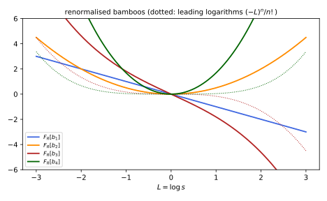
figures/ren-toy-model.sage.
The definition states the coproduct and the counterterm it defines. The renormalised Feynman rules follow from them in one line.
Definition 11 (Coproduct of Feynman graphs) The Hopf algebra of Feynman graphs is the vector space spanned by graphs, with the product given by disjoint union and the empty graph as unit. Its coproduct is \Delta(\Gamma) = \Gamma \otimes 1 + 1 \otimes \Gamma + \sum_{\gamma}\gamma \otimes \Gamma/\gamma , the sum running over the proper subgraphs \gamma that are products of vertex-disjoint one-particle-irreducible superficially divergent graphs with at least one loop, and \Gamma/\gamma the graph with each component of \gamma contracted to a vertex (Balduf 2024, Def. 86). A graph is primitive if the sum is empty. Given Feynman rules F and a subtraction R, the counterterm is defined recursively by S_R(\Gamma) = -R\bigl[F(\Gamma) + \sum_\gamma S_R(\gamma)F(\Gamma/\gamma)\bigr], and the renormalised Feynman rules are F_R(\Gamma) = F(\Gamma) + \sum_\gamma S_R(\gamma)F(\Gamma/\gamma) + S_R(\Gamma) (Balduf 2024, Defs. 90-91).
Veriphy. Pending.
Lean. Pending.
Sage. Pending.
All one-loop graphs are primitive, and their renormalisation is the subtraction of Example 47. The first example writes the formulas for them.
Example 54 (Primitive graphs) For the bubble b, \Delta(b) = b \otimes 1 + 1 \otimes b, S_R(b) = -R F(b) and F_R(b) = (1 - R)F(b). With minimal subtraction S_R(b) = -\frac{2}{16\pi^2\epsilon} in the units where the vertex factor is one, the counterterm \delta_\lambda^{(1)} per channel. A graph with several loops can also be primitive, if none of its proper subgraphs diverges: in the quartic theory there is no primitive four-point graph at two loops and one at three loops (Kompaniets and Panzer 2017, Table I; Balduf 2024, Example 73).
Veriphy. Pending.
Lean. Pending.
Sage. Pending.
The coproduct of the eye graph has one middle term. The second example computes its counterterm and finds the expression of Example 48.
Example 55 (The eye graph in the Hopf algebra) \Delta(\Gamma) = \Gamma \otimes 1 + 1 \otimes \Gamma + \gamma \otimes \Gamma/\gamma, where \gamma is the inner bubble and \Gamma/\gamma the outer bubble with a vertex in its place. The counterterm is S_R(\Gamma) = -R[F(\Gamma) + S_R(\gamma)F(\Gamma/\gamma)] = -R[F(\Gamma) - R F(\gamma)F(\Gamma/\gamma)], and F_R(\Gamma) = (1 - R)[F(\Gamma) - RF(\gamma)F(\Gamma/\gamma)]: the forest formula of the eye graph, with nested subtractions written as an iterated R. This is Balduf (2024, Example 81) for the analogous graph of the cubic theory, the dunce’s cap.
Veriphy. Pending.
Lean. Pending.
Sage. Pending.
For the chain the coproduct contains the same term twice and nothing with both bubbles. The third example shows why, and the counterterm that results.
Example 56 (The chain in the Hopf algebra) The two bubbles of the chain share a vertex, so their union is not a product of vertex-disjoint graphs and does not appear in \Delta: \Delta(\Gamma) = \Gamma \otimes 1 + 1 \otimes \Gamma + 2\,b \otimes b, since contracting either bubble leaves a bubble. Then S_R(\Gamma) = -R[F(\Gamma) + 2S_R(b)F(b)] = -R[B^2 - 2R(B)B], the counterterm of Example 34, and in minimal subtraction it is \frac{4}{(16\pi^2)^2\epsilon^2} with no simple pole.
Veriphy. Pending.
Lean. Pending.
Sage. Pending.
The essential combinatorics is already present in rooted trees, which record only the nesting of subgraphs. The fourth example computes the coproduct and antipode of the smallest trees, the Hopf algebra of Connes and Kreimer.
Example 57 (Rooted trees) A rooted tree stands for a graph whose subdivergences are nested as the tree says: \bullet for a primitive graph, the bamboo b_2 (two vertices, one above the other) for a graph with one subdivergence. Admissible cuts give \Delta(\bullet) = \bullet \otimes 1 + 1 \otimes \bullet and \Delta(b_2) = b_2 \otimes 1 + 1 \otimes b_2 + \bullet \otimes \bullet, and the antipode, defined by S(\Gamma) = -\Gamma - \sum S(\gamma)\Gamma/\gamma, is S(\bullet) = -\bullet, S(b_2) = -b_2 + \bullet\bullet (Balduf 2024, Example 76). The eye graph maps to b_2; the chain maps to b_2 as well, with the coefficient 2 of its middle term recording the two ways of choosing the inner bubble.
Veriphy. Pending.
Lean. Pending.
Sage. Pending.
The exercises renormalise the toy model, compute antipodes, and test the property of the subtraction that makes the counterterms multiplicative. The first is a Sage computation.
Exercise 66 (The toy model) In the toy model of Figure 12, F[b_n](s) = s^{-n\epsilon}\prod_{j = 1}^n\frac{\pi}{\sin\pi j\epsilon} for the bamboo b_n. With R the evaluation at s = 1, compute S_R(b_n) and F_R[b_n] for n = 1, \dots, 4 with Sage, using \Delta(b_n) = \sum_{k = 0}^nb_k \otimes b_{n - k}, and take \epsilon \to 0.
F[B_+(x^{-k\epsilon})](s) = \int_0^\infty\frac{x^{-(k + 1)\epsilon}}{x + s}dx = \frac{\pi}{\sin\pi(k + 1)\epsilon}s^{-(k + 1)\epsilon}, which gives F[b_n] by induction. The recursion S_R(b_n) = -R[F(b_n) + \sum_{k = 1}^{n - 1}S_R(b_k)F(b_{n - k})] and F_R(b_n) = F(b_n) + \sum_{k = 1}^{n - 1}S_R(b_k)F(b_{n - k}) + S_R(b_n) give, as \epsilon \to 0, F_R(b_1) = -L, F_R(b_2) = \frac{L^2}{2}, F_R(b_3) = -\frac{L^3}{6} - \frac{\pi^2}{6}L and F_R(b_4) = \frac{L^4}{24} + \frac{\pi^2}{6}L^2; all poles cancel:
var('e L')
Fb = lambda n, s: prod(pi / sin(pi * j * e) for j in range(1, n + 1)) * s^(-n * e)
SR = {}
for n in range(1, 5):
SR[n] = -(Fb(n, 1) + sum(SR[k] * Fb(n - k, 1) for k in range(1, n)))
print("S_R(b_%d) = %s + O(1/eps)" % (n, SR[n].series(e, 0).truncate().coefficient(e, -n) / e^n))
for n in range(1, 5):
FR = Fb(n, exp(L)) + sum(SR[k] * Fb(n - k, exp(L)) for k in range(1, n)) + SR[n]
print("F_R(b_%d) at eps = 0: %s" % (n, FR.series(e, 1).truncate().coefficient(e, 0).simplify_log().expand()))Output:
S_R(b_1) = -1/e + O(1/eps)
S_R(b_2) = 1/2/e^2 + O(1/eps)
S_R(b_3) = -1/6/e^3 + O(1/eps)
S_R(b_4) = 1/24/e^4 + O(1/eps)
F_R(b_1) at eps = 0: -L
F_R(b_2) at eps = 0: 1/2*L^2
F_R(b_3) at eps = 0: -1/6*pi^2*L - 1/6*L^3
F_R(b_4) at eps = 0: 1/6*pi^2*L^2 + 1/24*L^4Veriphy. Pending.
Lean. Pending.
Sage. Pending.
The antipode of the Connes-Kreimer algebra can be computed by hand for small trees. The second exercise does it for the two trees with three vertices.
Exercise 67 (Antipodes of trees with three vertices) For the bamboo b_3 and the tree c with a root and two leaves, the admissible cuts give \Delta(b_3) = b_3 \otimes 1 + 1 \otimes b_3 + \bullet \otimes b_2 + b_2 \otimes \bullet and \Delta(c) = c \otimes 1 + 1 \otimes c + 2\,\bullet \otimes b_2 + \bullet\bullet \otimes \bullet. Compute S(b_3) and S(c), and check m(S \otimes \mathrm{id})\Delta = 0 on both.
S(b_3) = -b_3 - S(\bullet)b_2 - S(b_2)\bullet = -b_3 + \bullet b_2 + b_2\bullet - \bullet\bullet\bullet = -b_3 + 2\bullet b_2 - \bullet^3. S(c) = -c - 2S(\bullet)b_2 - S(\bullet\bullet)\bullet = -c + 2\bullet b_2 - \bullet^3, using S(\bullet\bullet) = S(\bullet)^2 = \bullet\bullet. Check for c: m(S \otimes \mathrm{id})\Delta(c) = S(c) + c + 2S(\bullet)b_2 + S(\bullet\bullet)\bullet = (-c + 2\bullet b_2 - \bullet^3) + c - 2\bullet b_2 + \bullet^3 = 0, and similarly for b_3. The two trees have the same antipode up to the tree itself, a reflection of the fact that in both the overall divergence sees one primitive inside another twice.
Veriphy. Pending.
Lean. Pending.
Sage. Pending.
The counterterm is a character, multiplicative on disjoint unions, only if the subtraction satisfies the Rota-Baxter identity R(fg) + R(f)R(g) = R(R(f)g) + R(fR(g)) (Balduf 2024, eq. 2.39). The third exercise tests it.
Exercise 68 (The Rota-Baxter identity) Check with Sage that the pole-part projection K on Laurent polynomials in \epsilon and the evaluation R_{s_0}f(s) = f(s_0) satisfy the Rota-Baxter identity on random examples, and that the operator “keep the \epsilon^0 term” does not.
For K, write f = f_- + f_+ (poles and the rest), so K(f) = f_-. Expanding fg in the four products, K(f_-g_-) = f_-g_- and K(f_+g_+) = 0, and all terms of K(fg) + f_-g_- - K(f_-g) - K(fg_-) cancel. For the evaluation, R(R(f)g) = f(s_0)g(s_0) = R(f)R(g) and the identity reads 2R(f)R(g) = R(fg) + R(f)R(g), true since R(fg) = R(f)R(g). The projection on the \epsilon^0 term is not a Rota-Baxter operator, and with it the counterterms of disjoint graphs would not multiply:
def mul(f, g):
h = {}
for i, a in f.items():
for j, b in g.items():
h[i + j] = h.get(i + j, 0) + a * b
return {k: v for k, v in h.items() if v != 0}
def add(*fs):
h = {}
for f in fs:
for k, v in f.items(): h[k] = h.get(k, 0) + v
return {k: v for k, v in h.items() if v != 0}
neg = lambda f: {k: -v for k, v in f.items()}
K = lambda f: {k: v for k, v in f.items() if k < 0}
P0 = lambda f: {0: f[0]} if f.get(0, 0) != 0 else {}
rb = lambda op, f, g: add(op(mul(f, g)), mul(op(f), op(g)), neg(op(mul(op(f), g))), neg(op(mul(f, op(g)))))
set_random_seed(3)
fs = [{k: QQ.random_element(num_bound=5, den_bound=3) for k in range(-3, 3)} for _ in range(4)]
pairs = [(f, g) for f in fs for g in fs if f is not g]
print("pole part K: Rota-Baxter defects vanish on all %d pairs:" % len(pairs), all(rb(K, f, g) == {} for f, g in pairs))
print("eps^0 projection: defects on the first three pairs:", [rb(P0, f, g) for f, g in pairs[:3]])
var('s'); f1, g1 = 1 + s + s^2, 2 - s^3
Ev = lambda h: SR(h).subs(s=1)
print("evaluation at s0 = 1: defect", Ev(f1 * g1) + Ev(f1) * Ev(g1) - Ev(Ev(f1) * g1) - Ev(f1 * Ev(g1)))Output:
pole part K: Rota-Baxter defects vanish on all 12 pairs: True
eps^0 projection: defects on the first three pairs: [{0: 38/9}, {0: -5/6}, {0: 5/18}]
evaluation at s0 = 1: defect 0Veriphy. Pending.
Lean. Pending.
Sage. Pending.
Exercises
The first integrative exercise combines the forests of the sunset with power counting. It asks for the complete renormalised integrand.
Exercise 69 (The sunset renormalised) Write the forest formula for the massive sunset with momentum subtraction at p = 0, specify the degree of each Taylor operator, and count how many independent integrals the eight forests produce after using rotation invariance.
R = (1 - T^{(2)}_\Gamma)(1 - T^{(0)}_{\gamma_1} - T^{(0)}_{\gamma_2} - T^{(0)}_{\gamma_3})I_\Gamma, with T^{(0)}_{\gamma_i} the value of the bubble \gamma_i at zero external momenta of \gamma_i (degree 0) and T^{(2)}_\Gamma the Taylor polynomial of degree two in p. By the symmetry among the three lines the three terms T_{\gamma_i}I_\Gamma are equal, each a product of a zero-momentum bubble and a one-loop tadpole. The independent integrals are I_\Gamma(p), the product B(0)T(m^2), and from T_\Gamma the values I(0) and \partial^2I(0) of the subtracted integrand: four, which give a finite function of p^2 vanishing with its first derivative at p = 0.
Veriphy. Pending.
Lean. Pending.
Sage. Pending.
The second integrative exercise shows that the sum of all bamboo graphs is grouplike, which links the Hopf algebra to the renormalisation group. It uses Exercise 66.
Exercise 70 (The bamboo series is grouplike) For X = \sum_{n \geq 0}\alpha^nb_n, show that \Delta(X) = X \otimes X. With the toy-model values of Exercise 66, compute G(L) = \sum_n\alpha^nF_R[b_n](L) to order \alpha^4 with Sage, and verify that G = e^{L\gamma(\alpha)} with \gamma(\alpha) = -\alpha - \frac{\pi^2}{6}\alpha^3 + O(\alpha^5).
\Delta(X) = \sum_n\alpha^n\sum_kb_k \otimes b_{n - k} = \sum_{k, l}\alpha^kb_k \otimes \alpha^lb_l = X \otimes X. Renormalised Feynman rules are a character, and for a grouplike element the convolution structure of Balduf (2024, Lemma 39) gives F_R[X](L_1 + L_2) = F_R[X](L_1)F_R[X](L_2), so F_R[X](L) is an exponential e^{L\gamma} (Balduf 2024, Thm. 46). From the four renormalised bamboos, the coefficient of L is -\alpha - \frac{\pi^2}{6}\alpha^3 and that of L^2 is \frac{\alpha^2}{2} + \frac{\pi^2}{6}\alpha^4 = \frac{\gamma^2}{2}, as the exponential requires; \gamma(\alpha) = -\frac1\pi\arcsin(\pi\alpha) is the exact anomalous dimension of this model (Proposition 7):
var('e L a')
Fb = lambda n, s: prod(pi / sin(pi * j * e) for j in range(1, n + 1)) * s^(-n * e)
SR, FRs = {}, {0: 1}
for n in range(1, 5):
SR[n] = -(Fb(n, 1) + sum(SR[k] * Fb(n - k, 1) for k in range(1, n)))
FRs[n] = (Fb(n, exp(L)) + sum(SR[k] * Fb(n - k, exp(L)) for k in range(1, n)) + SR[n]).series(e, 1).truncate().coefficient(e, 0).simplify_log().expand()
G = sum(a^n * FRs[n] for n in range(5))
gam = taylor(-arcsin(pi * a) / pi, a, 0, 4)
print("gamma(alpha) =", gam)
print("G - exp(L gamma) to order alpha^4:", taylor(G - exp(L * gam), a, 0, 4).simplify_full())
print("coefficient of L in G:", G.coefficient(L, 1), " of L^2:", G.coefficient(L, 2))Output:
gamma(alpha) = -1/6*pi^2*a^3 - a
G - exp(L gamma) to order alpha^4: 0
coefficient of L in G: -1/6*pi^2*a^3 - a of L^2: 1/6*pi^2*a^4 + 1/2*a^2Veriphy. Pending.
Lean. Pending.
Sage. Pending.
The third integrative exercise compares the three languages of this part on one graph. It combines Example 49, Example 56 and Exercise 65.
Exercise 71 (Forests, recursion and antipode) For the chain of three bubbles in one channel, write the counterterm in the Hopf algebra, using \Delta(\Gamma_3) = \Gamma_3 \otimes 1 + 1 \otimes \Gamma_3 + 3\,b \otimes \Gamma_2 + 2\,\Gamma_2 \otimes b + (b \cdot b) \otimes b where \Gamma_2 is the chain of two and b \cdot b the outer two bubbles, and check that the number of forests found in Exercise 60 is reproduced.
Contracting any one of the three bubbles leaves a chain of two (3\,b \otimes \Gamma_2); contracting either chain of two adjacent bubbles leaves one bubble (2\,\Gamma_2 \otimes b); the outer two bubbles are vertex-disjoint, and contracting both leaves one bubble (b\cdot b \otimes b). The counterterm is S_R(\Gamma_3) = -R[F(\Gamma_3) + 3S_R(b)F(\Gamma_2) + 2S_R(\Gamma_2)F(b) + S_R(b)^2F(b)]. Expanding S_R(\Gamma_2) recursively, the terms correspond to the forests of \Gamma_3 that do not contain \Gamma_3: \emptyset, the three single bubbles, the two pairs, the pair of outer bubbles \{b_1, b_3\}, and the four forests \{b_i, \Gamma_2\} with b_i inside one of the chains of two: 1 + 3 + 2 + 1 + 4 = 11, and with \Gamma_3 added to each, 22, the number found by enumeration.
Veriphy. Pending.
Lean. Pending.
Sage. Pending.
Ward identities and QED at one loop
In a gauge theory the counterterms are not independent. Gauge invariance relates the Green functions with photon legs to those without, and these relations, the Ward identities, survive renormalisation if the regulator respects the symmetry. In quantum electrodynamics they make the photon massless to all orders and make the renormalisation of the charge depend only on the photon self-energy, so that every particle’s charge is renormalised by the same factor. This part states the identities and renormalises quantum electrodynamics at one loop, following Grozin (2005, sec. 3) with d = 4 - \epsilon in place of his d = 4 - 2\epsilon, so that his \frac1\epsilon is our \frac2\epsilon.
Ward identities
The Lagrangian of quantum electrodynamics is \bar\psi_0(i{D}\!\!\!/ - m_0)\psi_0 - \frac14F_{0\mu\nu}F_0^{\mu\nu} - \frac{1}{2a_0}(\partial_\mu A_0^\mu)^2 with D_\mu = \partial_\mu + ie_0A_{0\mu} (the sign of the charge is a convention; Grozin (2005) writes -ie_0) and a gauge-fixing parameter a_0. Its renormalised fields and parameters are \psi_0 = Z_\psi^{1/2}\psi, A_0 = Z_A^{1/2}A, a_0 = Z_Aa, m_0 = Z_mm and e_0 = Z_\alpha^{1/2}\mu^{\epsilon/2}e (Grozin 2005, eq. 3.7). The theorem below is the statement that gauge invariance survives quantisation.
Theorem 2 (The Ward-Takahashi identities) In quantum electrodynamics with dimensional regularisation, to every order of perturbation theory: the photon self-energy is transverse, q_\mu\Pi^{\mu\nu}(q) = 0, so \Pi^{\mu\nu}(q) = (q^2\eta^{\mu\nu} - q^\mu q^\nu)\Pi(q^2); the electron-photon vertex \Gamma^\mu(p', p), normalised to \gamma^\mu at tree level, satisfies q_\mu\Gamma^\mu(p', p) = S^{-1}(p') - S^{-1}(p), \qquad q = p' - p , \tag{10} where S^{-1}(p) = {p}\!\!\!/ - m - \Sigma(p) is the inverse full propagator without the factor i; in particular \Gamma^\mu(p, p) = \partial S^{-1}/\partial p_\mu. Consequently the renormalisation constants of the vertex and of the electron field satisfy Z_\Gamma Z_\psi = 1, and the charge is renormalised by the photon field alone, Z_\alpha = Z_A^{-1} (Grozin 2005, sec. 3.3 and 3.7, eqs. 3.73-3.77).
Veriphy. Pending.
Lean. Pending.
Sage. Pending.
Proof (outline). At tree level, {q}\!\!\!/ = ({p}\!\!\!/' - m) - ({p}\!\!\!/ - m), which multiplied by the propagators reads S_0(p'){q}\!\!\!/S_0(p) = S_0(p) - S_0(p') (Grozin 2005, eq. 3.18). Contracting an external photon of any diagram with its momentum and using this identity at the vertex where it attaches, the diagrams cancel in pairs, leaving the difference of two diagrams that differ only by a shift of a loop momentum; in dimensional regularisation such shifts are allowed and the difference vanishes, which gives transversality, and for the vertex the surviving terms are the two self-energies, which gives Equation 10. Written with renormalised quantities, Z_\Gamma q_\mu\Gamma_r^\mu = Z_\psi^{-1}(S_r^{-1}(p') - S_r^{-1}(p)), so Z_\Gamma Z_\psi is finite; in minimal subtraction the only finite renormalisation constant is 1. Finally the amputated vertex with its field normalisations, e_0\Gamma^\mu Z_\psi Z_A^{1/2} = e_0Z_\Gamma Z_\psi Z_A^{1/2}\Gamma_r^\mu, must be finite when expressed through e; with Z_\Gamma Z_\psi = 1 this says that e_0Z_A^{1/2} is e\mu^{\epsilon/2} times a finite factor, so Z_\alpha Z_A = 1 in minimal subtraction. \square
The identity can be checked at tree level with explicit matrices, which is the induction start of the proof. The first example does it.
Example 58 (The identity at tree level) With S_0^{-1}(p) = {p}\!\!\!/ - m and \Gamma^\mu = \gamma^\mu, Equation 10 reads {q}\!\!\!/ = {p}\!\!\!/' - {p}\!\!\!/, true for all momenta. Multiplying by S_0(p') on the left and S_0(p) on the right gives S_0(p'){q}\!\!\!/S_0(p) = S_0(p) - S_0(p'): inserting a photon of momentum q, contracted with q, into an electron line is the same as the difference of the line with and without the momentum shift (Exercise 72). This is the graphical identity behind the cancellations of the proof.
Veriphy. Pending.
Lean. Pending.
Sage. Pending.
The transversality of the photon self-energy is the reason the photon stays massless. The second example shows the mechanism at one loop.
Example 59 (The photon stays massless) At one loop, q_\mu\Pi^{\mu\nu}(q) is the trace of the electron loop with {q}\!\!\!/ inserted at one vertex, and by the tree identity it is \propto\int d^d\ell\,\operatorname{tr}[\gamma^\nu(S_0(\ell) - S_0(\ell + q))], the difference of two integrals related by the shift \ell \to \ell + q (Grozin 2005, eq. 3.20). In dimensional regularisation it vanishes, and \Pi^{\mu\nu} = (q^2\eta^{\mu\nu} - q^\mu q^\nu)\Pi(q^2) is zero at q = 0: no photon mass is generated. With a sharp cutoff the shift produces a surface term like that of Exercise 3, and a term \Lambda^2\eta^{\mu\nu} appears (Exercise 81 of Quantum field theory).
Veriphy. Pending.
Lean. Pending.
Sage. Pending.
The constants Z_\psi and Z_\Gamma depend on the gauge, but their product does not. The third example gives both at one loop.
Example 60 (The vertex and the field at one loop) In a general covariant gauge, Z_\psi = 1 - \frac{a\alpha}{2\pi\epsilon} and Z_\Gamma = 1 + \frac{a\alpha}{2\pi\epsilon} in minimal subtraction, so Z_\Gamma Z_\psi = 1 + O(\alpha^2), as the theorem requires (Grozin 2005, eqs. 3.64 and 3.84). In the Landau gauge a = 0 both are 1 at one loop; in the Feynman gauge a = 1. The photon field constant Z_A = 1 - \frac{2\alpha}{3\pi\epsilon} does not depend on a, and neither does Z_\alpha = Z_A^{-1} = 1 + \frac{2\alpha}{3\pi\epsilon}, which is what makes the running charge gauge independent.
Veriphy. Pending.
Lean. Pending.
Sage. Pending.
Since Z_\alpha = Z_A^{-1} involves only the photon, the renormalisation of a charge does not depend on which particle carries it. The fourth example draws the consequence.
Example 61 (Charge universality) Add a muon with charge Q_\mu e. Its vertex and field constants satisfy the same identity, so its bare and renormalised charges are related by the same Z_A^{-1/2}: Q_\mu e_0 = Z_A^{-1/2}Q_\mu e\mu^{\epsilon/2}. The ratio of two charges is not renormalised, and the equality of the proton and electron charges, measured to one part in 10^{21}, is not spoiled by the strong interactions of the proton. The vacuum polarisation, by contrast, receives a contribution from every charged particle in proportion to Q^2.
Veriphy. Pending.
Lean. Pending.
Sage. Pending.
The exercises check the identity numerically, derive the running charge from Z_\alpha, and extend the identity to scalar electrodynamics. The first uses Sage with the gamma matrices of Example 39 of Classical field theory.
Exercise 72 (The tree identity with matrices) With the Weyl gamma matrices, check with Sage that ({p}\!\!\!/' - m)^{-1}{q}\!\!\!/({p}\!\!\!/ - m)^{-1} = ({p}\!\!\!/ - m)^{-1} - ({p}\!\!\!/' - m)^{-1} for random numerical momenta p, p' and q = p' - p.
Multiplying the claimed identity by ({p}\!\!\!/' - m) on the left and ({p}\!\!\!/ - m) on the right gives {q}\!\!\!/ = ({p}\!\!\!/' - m) - ({p}\!\!\!/ - m), which is linear algebra; numerically the difference of the two sides vanishes to rounding error:
s = [matrix(CDF, [[0, 1], [1, 0]]), matrix(CDF, [[0, -I], [I, 0]]), matrix(CDF, [[1, 0], [0, -1]])]
one, Z = identity_matrix(CDF, 2), zero_matrix(CDF, 2)
g = [block_matrix([[Z, one], [one, Z]], subdivide=False)] + [block_matrix([[Z, sk], [-sk, Z]], subdivide=False) for sk in s]
eta = diagonal_matrix([1, -1, -1, -1])
slash = lambda p: sum(eta[mu, mu] * p[mu] * g[mu] for mu in range(4))
print("Clifford relations hold:", all((g[a] * g[b] + g[b] * g[a] - 2 * eta[a, b] * identity_matrix(4)).norm() < 1e-12 for a in range(4) for b in range(4)))
set_random_seed(7); m = 0.7
for trial in range(3):
p = vector(RDF, [RDF.random_element() for _ in range(4)]); pp = vector(RDF, [RDF.random_element() for _ in range(4)])
S0 = lambda k: (slash(k) - m * identity_matrix(CDF, 4)).inverse()
lhs = S0(pp) * slash(pp - p) * S0(p); rhs = S0(p) - S0(pp)
print("trial %d: |lhs - rhs| = %.2e" % (trial, (lhs - rhs).norm()))Output:
Clifford relations hold: True
trial 0: |lhs - rhs| = 4.43e-16
trial 1: |lhs - rhs| = 2.09e-15
trial 2: |lhs - rhs| = 5.37e-16Veriphy. Pending.
Lean. Pending.
Sage. Pending.
The running of the charge follows from Z_\alpha by the method of Exercise 33. The second exercise derives it and its generalisation to several fermions.
Exercise 73 (The beta function of quantum electrodynamics) From \alpha_0\mu^{-\epsilon} = Z_\alpha\alpha with Z_\alpha = 1 + \frac{2\alpha}{3\pi\epsilon}\sum_fQ_f^2, derive \mu\frac{d\alpha}{d\mu} = -\epsilon\alpha + \frac{2\alpha^2}{3\pi}\sum_fQ_f^2, and the beta function of e.
Differentiating at fixed \alpha_0: -\epsilon Z_\alpha\alpha = \beta_\alpha(Z_\alpha + \alpha Z_\alpha'). With \beta_\alpha = -\epsilon\alpha + b\alpha^2 and Z_\alpha = 1 + \frac{c\alpha}{\epsilon}, c = \frac{2}{3\pi}\sum Q_f^2, the order \alpha^2 terms give -c\alpha^2 = b\alpha^2 - 2c\alpha^2, so b = c. Since \alpha = e^2/4\pi, \mu\frac{de}{d\mu} = \frac{e}{2\alpha}\mu\frac{d\alpha}{d\mu} = \frac{e^3}{12\pi^2}\sum_fQ_f^2 at \epsilon = 0, the value quoted in Example 83 of Quantum field theory, now derived.
Veriphy. Pending.
Lean. Pending.
Sage. Pending.
Scalar electrodynamics has a second interaction, the seagull e^2A_\mu A^\mu\phi^*\phi, which the Ward identity needs. The third exercise shows why.
Exercise 74 (Scalar electrodynamics) For a charged scalar the one-loop photon self-energy has a bubble, \propto\int d^d\ell\frac{(2\ell + q)^\mu(2\ell + q)^\nu}{(\ell^2 - m^2)((\ell + q)^2 - m^2)}, and a seagull, \propto -2\eta^{\mu\nu}\int d^d\ell\frac{1}{\ell^2 - m^2}. Show that q_\mu times the bubble is a difference of two tadpoles, and that the seagull with its coefficient cancels it, so that only the sum is transverse.
q\cdot(2\ell + q) = ((\ell + q)^2 - m^2) - (\ell^2 - m^2), so q_\mu times the bubble integrand is (2\ell + q)^\nu(\frac{1}{\ell^2 - m^2} - \frac{1}{(\ell + q)^2 - m^2}). The first term integrates to q^\nu\int\frac{1}{\ell^2 - m^2} (the 2\ell^\nu part vanishes by symmetry); in the second, shift \ell \to \ell - q: (2\ell - q)^\nu\frac{1}{\ell^2 - m^2} integrates to -q^\nu\int\frac{1}{\ell^2 - m^2}. The difference is 2q^\nu\int\frac{1}{\ell^2 - m^2}, which is exactly cancelled by q_\mu times the seagull -2\eta^{\mu\nu}\int\frac{1}{\ell^2 - m^2}. Without the seagull, demanded by gauge invariance of |D_\mu\phi|^2, the photon would acquire a mass.
Veriphy. Pending.
Lean. Pending.
Sage. Pending.
The longitudinal part of the photon propagator is not renormalised at all, a second consequence of transversality. The fourth exercise derives it (Grozin 2005, sec. 3.2).
Exercise 75 (The longitudinal photon) Using \Pi^{\mu\nu} = (q^2\eta^{\mu\nu} - q^\mu q^\nu)\Pi and the Dyson series, show that the full photon propagator is \frac{-i}{q^2(1 - \Pi(q^2))}(\eta_{\mu\nu} - \frac{q_\mu q_\nu}{q^2}) - ia_0\frac{q_\mu q_\nu}{(q^2)^2}, and explain why a_0 and A_0 are renormalised by the same Z_A.
The free propagator is -i(\eta_{\mu\nu} - (1 - a_0)\frac{q_\mu q_\nu}{q^2})/q^2. The self-energy is proportional to the transverse projector P_{\mu\nu} = \eta_{\mu\nu} - q_\mu q_\nu/q^2, which annihilates the longitudinal projector L_{\mu\nu} = q_\mu q_\nu/q^2; in the geometric series only the transverse part is dressed, \frac{P}{q^2}(1 + \Pi + \Pi^2 + \dots), and the longitudinal part a_0L/q^2 is untouched. The renormalised propagator is the bare one divided by Z_A, so the longitudinal part is finite only if a_0/Z_A = a is: the gauge parameter renormalises like the field.
Veriphy. Pending.
Lean. Pending.
Sage. Pending.
QED at one loop
The photon self-energy decides how the strength of the electromagnetic interaction depends on the distance. At large distances the vacuum is polarised by virtual pairs and screens a charge; at distances shorter than the Compton wavelength of the electron the screening is partly undone, and the effective charge grows. The figure shows both effects.
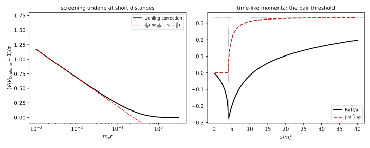
figures/ren-vacuum-polarisation.sage.
The definition fixes the normalisation of the vacuum polarisation and the effective coupling it defines. The subtraction at q^2 = 0 is the on-shell scheme of Definition 9.
Definition 12 (Vacuum polarisation) The vacuum polarisation is the one-particle-irreducible photon self-energy i\Pi^{\mu\nu}(q) = i(q^2\eta^{\mu\nu} - q^\mu q^\nu)\Pi(q^2), so that the transverse part of the full photon propagator is \frac{-i}{q^2(1 - \Pi(q^2))}. With \hat\Pi(q^2) = \Pi(q^2) - \Pi(0) and the on-shell charge \alpha, the effective coupling at momentum q is \alpha_{\mathrm{eff}}(q^2) = \frac{\alpha}{1 - \hat\Pi(q^2)} , \tag{11} the strength with which two charges exchanging a photon of momentum q interact.
Veriphy. Pending.
Lean. Pending.
Sage. Pending.
The one-loop vacuum polarisation is a single Feynman-parameter integral. The first example gives it in the two schemes of interest.
Example 62 (The electron loop) Computing the trace and the integral in d dimensions (Grozin 2005, eqs. 3.22-3.35, with a mass), \Pi(q^2) = -\frac{2\alpha}{\pi}\int_0^1dx\,x(1 - x)\Bigl(\frac2{\bar\epsilon} - \log\frac{m^2 - x(1 - x)q^2}{\mu^2}\Bigr), \qquad \hat\Pi(q^2) = -\frac{2\alpha}{\pi}\int_0^1dx\,x(1 - x)\log\frac{m^2}{m^2 - x(1 - x)q^2} . The pole -\frac{2\alpha}{\pi}\cdot\frac16\cdot\frac{2}{\bar\epsilon} = -\frac{2\alpha}{3\pi\bar\epsilon} is removed by Z_A (Example 60); for space-like q^2 = -Q^2 < 0, \hat\Pi > 0 and the effective coupling grows with Q (Exercise 76).
Veriphy. Pending.
Lean. Pending.
Sage. Pending.
At small momentum transfer the vacuum polarisation adds a contact term to the Coulomb potential. The second example evaluates it for hydrogen, where it is part of the Lamb shift that the Dirac equation misses (The Dirac hydrogen atom).
Example 63 (The Uehling term and the Lamb shift) For |q^2| \ll m^2, \hat\Pi(q^2) = -\frac{\alpha}{15\pi}\frac{q^2}{m^2} + O(q^4). For a static potential q^2 = -\vec q^{\,2}, and -\frac{4\pi\alpha}{\vec q^{\,2}}(1 + \hat\Pi) = -\frac{4\pi\alpha}{\vec q^{\,2}} - \frac{4\alpha^2}{15m^2}, so V(\vec r) = -\frac\alpha r - \frac{4\alpha^2}{15m^2}\delta^3(\vec r). In first-order perturbation theory, with |\psi_{n00}(0)|^2 = \frac{(m\alpha)^3}{\pi n^3}, the nS levels of hydrogen shift by \Delta E = -\frac{4\alpha^5m}{15\pi n^3}, which for 2S is -1.12 \times 10^{-7}\,\mathrm{eV} or -27.1\,\mathrm{MHz} (Exercise 77), about -2.6\% of the measured Lamb shift of 1057.8\,\mathrm{MHz}, whose bulk comes from the electron self-energy.
Veriphy. Pending.
Lean. Pending.
Sage. Pending.
At large space-like momentum the logarithm dominates. The third example gives the effective coupling there and compares it with the running coupling of the minimal scheme.
Example 64 (The effective coupling at large momentum) For Q^2 = -q^2 \gg m^2, \hat\Pi = \frac{\alpha}{3\pi}(\log\frac{Q^2}{m^2} - \frac53) + O(m^2/Q^2), so \alpha_{\mathrm{eff}}(Q) = \frac{\alpha}{1 - \frac{\alpha}{3\pi}\bigl(\log\frac{Q^2}{m^2} - \frac53\bigr)} . Its inverse falls by \frac{2}{3\pi} per unit of \log Q, the rate of the \overline{\mathrm{MS}} coupling (Example 42), and the constant \frac53 is the scheme difference of Exercise 57. The geometric series in Equation 11 resums the leading logarithms (\alpha\log Q^2)^n of all orders, the Gell-Mann-Low result of Balduf (2024, Example 106).
Veriphy. Pending.
Lean. Pending.
Sage. Pending.
Above the threshold for pair production the vacuum polarisation has an imaginary part. The fourth example relates it to a cross section.
Example 65 (The imaginary part and pair production) For time-like s = q^2 > 4m^2 the logarithm has a cut, and with \beta = \sqrt{1 - 4m^2/s}, |\operatorname{Im}\hat\Pi(s)| = \frac\alpha3\beta\frac{3 - \beta^2}{2} (Exercise 78). By unitarity this is proportional to the total rate of \gamma^* \to e^+e^-, and the cross section of e^+e^- \to \mu^+\mu^- near the muon threshold is \sigma = \frac{4\pi\alpha^2}{3s}\beta_\mu\frac{3 - \beta_\mu^2}{2}, which tends to \frac{4\pi\alpha^2}{3s} = \frac{86.8\,\mathrm{nb}}{s/\mathrm{GeV}^2} at high energy. The ratio of the hadronic rate to this one counts the colours and charges of the quarks.
Veriphy. Pending.
Lean. Pending.
Sage. Pending.
The exercises expand the vacuum polarisation, compute the Uehling shift, and derive the imaginary part. The first is a Sage expansion of the integral of Example 62.
Exercise 76 (Two limits of the vacuum polarisation) Expand \hat\Pi(-Q^2) for Q \ll m to order Q^4 and for Q \gg m to order Q^0 with Sage, and confirm Example 63 and Example 64.
With z = Q^2/m^2, \hat\Pi = \frac{2\alpha}{\pi}\int_0^1x(1 - x)\log(1 + x(1 - x)z)dx = \frac{2\alpha}{\pi}(\frac{z}{30} - \frac{z^2}{280} + \dots) for small z, which is -\frac{\alpha}{15\pi}\frac{q^2}{m^2} + O(q^4) with q^2 = -Q^2, and \frac{\alpha}{3\pi}(\log z - \frac53) + O(\log z/z) for large z:
var('x z')
small = taylor(integrate(taylor(x * (1 - x) * log(1 + x * (1 - x) * z), z, 0, 3), x, 0, 1), z, 0, 2)
print("small z: int =", small, " so Pi-hat = (2 alpha/pi)(", small, ")")
f = lambda zv: numerical_integral(x * (1 - x) * log(1 + x * (1 - x) * zv), 0, 1)[0]
for zv in [1e2, 1e4, 1e8]:
print("z = %.0e: 6 int - (log z - 5/3) = %.2e" % (zv, 6 * f(zv) - (log(zv) - 5 / 3)))Output:
small z: int = -1/280*z^2 + 1/30*z so Pi-hat = (2 alpha/pi)( -1/280*z^2 + 1/30*z )
z = 1e+02: 6 int - (log z - 5/3) = 5.70e-02
z = 1e+04: 6 int - (log z - 5/3) = 5.99e-04
z = 1e+08: 6 int - (log z - 5/3) = -1.44e-09Veriphy. Pending.
Lean. Pending.
Sage. Pending.
The Uehling contribution to the hydrogen Lamb shift is a number that can be compared with experiment. The second exercise computes it.
Exercise 77 (The Uehling shift of hydrogen) Evaluate \Delta E = -\frac{4\alpha^5m_e}{15\pi n^3} for n = 1, 2 in eV and in MHz, and compare the 2S value with the measured 2S_{1/2} - 2P_{1/2} splitting of 1057.8\,\mathrm{MHz}. Why does the 2P level not shift at this order?
With \alpha = 1/137.036 and m_e = 510\,999\,\mathrm{eV}, \frac{4\alpha^5m_e}{15\pi} = 8.98 \times 10^{-7}\,\mathrm{eV}; for n = 1 the shift is -8.98 \times 10^{-7}\,\mathrm{eV} = -217\,\mathrm{MHz}, for n = 2 it is -1.12 \times 10^{-7}\,\mathrm{eV} = -27.1\,\mathrm{MHz}. The P states vanish at the origin, so the contact term does not shift them. The Uehling term lowers 2S by 27\,\mathrm{MHz}, while the full Lamb shift raises it by 1058\,\mathrm{MHz}:
al = 1 / 137.035999; me = 510998.95; h = 4.135667696e-15 # eV, eV s
for n in [1, 2]:
dE = 4 * al^5 * me / (15 * pi * n^3)
print("n = %d: Delta E = -%.4e eV = -%.2f MHz" % (n, dE.n(), (dE / h / 1e6).n()))
print("2S Uehling shift as a fraction of the 2S-2P Lamb shift 1057.8 MHz: %.2f%%" % (100 * (4 * al^5 * me / (15 * pi * 8) / h / 1e6).n() / 1057.8))Output:
n = 1: Delta E = -8.9756e-07 eV = -217.03 MHz
n = 2: Delta E = -1.1220e-07 eV = -27.13 MHz
2S Uehling shift as a fraction of the 2S-2P Lamb shift 1057.8 MHz: 2.56%Veriphy. Pending.
Lean. Pending.
Sage. Pending.
The imaginary part of the vacuum polarisation comes from the region where the argument of the logarithm is negative. The third exercise computes it.
Exercise 78 (The imaginary part) For s > 4m^2, find the interval of x where m^2 - x(1 - x)s < 0, and show that |\operatorname{Im}\hat\Pi(s + i0)| = 2\alpha\int x(1 - x)dx over that interval equals \frac\alpha3\beta\frac{3 - \beta^2}{2}.
The roots of x(1 - x)s = m^2 are x_\pm = \frac{1 \pm \beta}{2}, and on (x_-, x_+) the logarithm has imaginary part \mp\pi; the prefactor \frac{2\alpha}{\pi} turns it into 2\alpha\int_{x_-}^{x_+}x(1 - x)dx. With x = \frac{1 + t}{2}, x(1 - x) = \frac{1 - t^2}{4} and dx = \frac{dt}{2}, so the integral is \frac18\int_{-\beta}^\beta(1 - t^2)dt = \frac{\beta}{4} - \frac{\beta^3}{12} = \frac{\beta(3 - \beta^2)}{12}, and 2\alpha times it is \frac{\alpha}{3}\beta\frac{3 - \beta^2}{2}. As \beta \to 1 it tends to \frac\alpha3, the limit in Figure 13.
Veriphy. Pending.
Lean. Pending.
Sage. Pending.
With the vacuum polarisation in hand, the self-energy and the vertex of the electron complete the one-loop picture. The proposition collects the resulting constants, the running and the magnetic moment.
Proposition 5 (Quantum electrodynamics at one loop) In the modified minimal scheme with d = 4 - \epsilon and a covariant gauge with parameter a, the one-loop renormalisation constants of quantum electrodynamics with one electron are Z_A = 1 - \frac{2\alpha}{3\pi\bar\epsilon}, \quad Z_\alpha = 1 + \frac{2\alpha}{3\pi\bar\epsilon}, \quad Z_\psi = 1 - \frac{a\alpha}{2\pi\bar\epsilon}, \quad Z_m = 1 - \frac{3\alpha}{2\pi\bar\epsilon}, the running coupling and mass obey \mu\frac{d\alpha}{d\mu} = \frac{2\alpha^2}{3\pi} and \mu\frac{dm}{d\mu} = -\frac{3\alpha}{2\pi}m, and the magnetic form factor of the electron at zero momentum transfer is F_2(0) = \frac{\alpha}{2\pi}, the anomalous magnetic moment \frac{g - 2}{2} at order \alpha (Grozin 2005, eqs. 3.42, 3.64, 3.88, 3.104-3.107 and Sec. 6.5).
Veriphy. Pending.
Lean. Pending.
Sage. Pending.
Proof. These are Grozin’s results with \frac1\epsilon \to \frac2\epsilon. Z_A follows from Example 62, Z_\alpha from the theorem, Z_\psi from the one-loop self-energy \Sigma_V, which vanishes in the Landau gauge, and Z_m from the scalar part of the self-energy, which is gauge independent. The running follows from \alpha_0\mu^{-\epsilon} = Z_\alpha\alpha (Exercise 73) and from m_0 = Z_mm, as in Proposition 2. The form factor F_2 is ultraviolet finite and needs no counterterm; its value is computed in the reference from the vertex on the mass shell. \square
The beta function of the proposition is that of one charged fermion. The first example adds the other charged particles of the Standard Model below the Z mass.
Example 66 (Many charged fermions) Each Dirac fermion of charge Q_f and N_c colours adds N_cQ_f^2 to \sum Q^2, so \mu\frac{d\alpha}{d\mu} = \frac{2\alpha^2}{3\pi}\sum_fN_cQ_f^2 above all their masses. Below the Z mass and above the b quark: three leptons (3), the u and c quarks (2 \times 3 \times \frac49 = \frac83) and the d, s, b quarks (3 \times 3 \times \frac19 = 1), a total of \frac{20}{3}, so the running is about seven times faster than with the electron alone. The light quarks below 1\,\mathrm{GeV} are not free particles, and their contribution is taken from the measured e^+e^- cross section through the imaginary part of Example 65.
Veriphy. Pending.
Lean. Pending.
Sage. Pending.
The electron mass runs downwards as the scale grows, unlike the charge, which runs upwards. The second example estimates how much it changes between the electron mass and the Z mass.
Example 67 (The running electron mass) With \mu\frac{dm}{d\mu} = -\frac{3\alpha}{2\pi}m and \alpha nearly constant, m(\mu) = m(\mu_0)(\mu/\mu_0)^{-3\alpha/2\pi}. From m_e to M_Z, \log\frac{M_Z}{m_e} = 12.1 and the mass falls by the factor e^{-0.042} = 0.959, about 4\%. The pole mass, by contrast, is a fixed physical number; the running mass is the parameter that enters high-energy processes without large logarithms (Exercise 52).
Veriphy. Pending.
Lean. Pending.
Sage. Pending.
The anomalous magnetic moment is the most precisely tested prediction of quantum field theory. The third example compares the one-loop value with the measurement.
Example 68 (The anomalous magnetic moment) With \alpha = 1/137.036, \frac{\alpha}{2\pi} = 0.001\,161\,41, against the measured \frac{g}{2} - 1 = 0.001\,159\,652\,18 (Fan et al. 2023, eq. 6). The one-loop term accounts for the measured value to 0.15\%, and the rest is a series C_4(\frac\alpha\pi)^2 + C_6(\frac\alpha\pi)^3 + \dots with coefficients computed to the fifth order (Fan et al. 2023, eq. 7); the coefficient C_4 \approx -0.33 can be read off from the difference (Exercise 81). The quantity F_2(0) needs no renormalisation of its own, because no counterterm of dimension at most four has its spin structure \sigma^{\mu\nu}q_\nu.
Veriphy. Pending.
Lean. Pending.
Sage. Pending.
The exercises derive the mass counterterm from the self-energy, discuss gauge dependence, and extract the two-loop coefficient of the magnetic moment from data. The first derivation follows Grozin (2005, sec. 3.8).
Exercise 79 (The mass counterterm) The one-loop electron self-energy in the Feynman gauge has the pole part \Sigma(p) = \frac{\alpha}{4\pi}\frac{2}{\epsilon}(-{p}\!\!\!/ + 4m) + \text{finite}. Show that the pole mass m_P = m_0 + \Sigma({p}\!\!\!/ = m) is finite with m_0 = Z_mm, Z_m = 1 - \frac{3\alpha}{2\pi\epsilon}, and that Z_\psi = 1 - \frac{\alpha}{2\pi\epsilon} follows from the {p}\!\!\!/ term.
On the mass shell the pole part is \frac{\alpha}{4\pi}\frac2\epsilon(-m + 4m) = \frac{3\alpha m}{2\pi\epsilon}, so m_P = m_0 + \frac{3\alpha m}{2\pi\epsilon} + \text{finite}, and m_0 = m(1 - \frac{3\alpha}{2\pi\epsilon}) cancels the pole. The {p}\!\!\!/ term rescales the residue: S^{-1} = {p}\!\!\!/(1 + \frac{\alpha}{2\pi\epsilon}) - \dots, so with \psi_0 = Z_\psi^{1/2}\psi the renormalised inverse propagator Z_\psi S^{-1} is finite for Z_\psi = 1 - \frac{\alpha}{2\pi\epsilon}, the value of the proposition at a = 1. (With the field rescaled, m_0 = Z_m m is the relation for the mass, and the combination Z_\psi Z_m multiplies m in the Lagrangian.)
Veriphy. Pending.
Lean. Pending.
Sage. Pending.
The field constant depends on the gauge, but nothing physical does, and the two statements must be reconciled. The second exercise explains why they are consistent.
Exercise 80 (Gauge dependence) Explain why Z_\psi may depend on a while Z_m, Z_\alpha and the pole mass may not, and give the value of a for which the electron field is not renormalised at one loop.
The electron field is not gauge invariant, \psi \to e^{-ie\theta}\psi, and its correlation functions depend on the gauge, so their normalisation may as well. The pole mass is the position of a pole of a physical amplitude, the charge is fixed by a physical scattering amplitude, and Z_m, Z_\alpha in a mass-independent scheme are determined by them. In the Landau gauge a = 0, Z_\psi = 1 at one loop (Grozin 2005, eq. 3.61).
Veriphy. Pending.
Lean. Pending.
Sage. Pending.
The two-loop coefficient of the magnetic moment can be estimated from the measurement. The third exercise does it with Sage.
Exercise 81 (The second coefficient from data) Assuming \frac g2 - 1 = \frac12\frac\alpha\pi + C_4(\frac\alpha\pi)^2 with the higher orders neglected, solve for C_4 with the measured value 0.001\,159\,652\,180\,59 and \alpha = 1/137.035\,999. How large is the neglected third-order term if |C_6| \approx 1.2?
\frac\alpha\pi = 0.002\,322\,819, \frac12\frac\alpha\pi = 0.001\,161\,410, and the difference -1.758 \times 10^{-6} divided by (\alpha/\pi)^2 = 5.396 \times 10^{-6} gives C_4 \approx -0.3257. A third-order term 1.2(\alpha/\pi)^3 = 1.5 \times 10^{-8} shifts this estimate by 1.5 \times 10^{-8}/5.4 \times 10^{-6} \approx 0.003, so the estimate is close to the exact coefficient, which is known in closed form:
al = 1 / 137.035999; a_meas = 0.00115965218059
r = al / pi
C4 = (a_meas - r / 2) / r^2
print("alpha/2pi = %.10f, measured %.10f, difference %.4e" % ((r / 2).n(), a_meas, (a_meas - r / 2).n()))
print("C4 estimate = %.5f" % C4.n())
print("effect of a third-order term 1.2 (alpha/pi)^3 on the estimate: %.4f" % (1.2 * r).n())
C4_exact = 197 / 144 + pi^2 / 12 - pi^2 / 2 * log(2) + 3 / 4 * zeta(3)
print("closed-form C4 = %.9f" % C4_exact.n())Output:
alpha/2pi = 0.0011614097, measured 0.0011596522, difference -1.7576e-06
C4 estimate = -0.32574
effect of a third-order term 1.2 (alpha/pi)^3 on the estimate: 0.0028
closed-form C4 = -0.328478966Veriphy. Pending.
Lean. Pending.
Sage. Pending.
Exercises
The first integrative exercise computes the effective electromagnetic coupling at the Z mass from the charged leptons alone, with the exact one-loop vacuum polarisation. It combines Definition 12 with Example 66.
Exercise 82 (Leptons and the coupling at the Z mass) Compute 1/\alpha_{\mathrm{eff}}(M_Z) with the electron, muon and tau loops, using the exact one-loop \hat\Pi for each, and compare with the leading-logarithm formula. How much do the quarks have to contribute to reach the measured 128.9?
Each lepton contributes \frac{2}{\pi}\int_0^1x(1 - x)\log(1 + x(1 - x)M_Z^2/m_\ell^2)dx to 1 - \hat\Pi divided by \alpha; the three together reduce 137.036 to 132.73, and the leading logarithms with the constant \frac53 give the same to three decimals, the masses being all far below M_Z. The quarks must supply the remaining \Delta(1/\alpha) \approx 3.8:
al = 1 / 137.035999; MZ = 91.1876; leptons = {"e": 0.000510999, "mu": 0.1056584, "tau": 1.77686}
x = var('x'); exact, ll = 1 / al, 1 / al
for name, m in leptons.items():
I = numerical_integral(x * (1 - x) * log(1 + x * (1 - x) * MZ^2 / m^2), 0, 1)[0]
exact -= 2 / pi * I; ll -= 1 / (3 * pi) * (log(MZ^2 / m^2) - 5 / 3)
print("after %-3s: exact %.4f leading logarithms %.4f" % (name, exact.n(), ll.n()))
print("quarks must supply Delta(1/alpha) = %.2f to reach 128.9" % (exact - 128.9).n())Output:
after e : exact 134.6468 leading logarithms 134.6468
after mu : exact 133.3890 leading logarithms 133.3890
after tau: exact 132.7300 leading logarithms 132.7302
quarks must supply Delta(1/alpha) = 3.83 to reach 128.9Veriphy. Pending.
Lean. Pending.
Sage. Pending.
The second integrative exercise shows that the Ward identity holds in the on-shell scheme as well. It combines Theorem 2 with Definition 9.
Exercise 83 (The Ward identity on the mass shell) In the on-shell scheme the electron residue constant Z_\psi^{\mathrm{os}} makes the propagator \frac{1}{{p}\!\!\!/ - m} near the pole, and the charge is defined by the vertex at q = 0. Use \Gamma^\mu(p, p) = \partial S^{-1}/\partial p_\mu to show Z_\psi^{\mathrm{os}}Z_\Gamma^{\mathrm{os}} = 1 and Z_\alpha^{\mathrm{os}} = (Z_A^{\mathrm{os}})^{-1} (Grozin 2005, eqs. 6.37-6.38).
Near the mass shell S(p) = \frac{Z_\psi^{\mathrm{os}}}{{p}\!\!\!/ - m}, so S^{-1} = (Z_\psi^{\mathrm{os}})^{-1}({p}\!\!\!/ - m) and \Gamma^\mu(p, p) = \partial S^{-1}/\partial p_\mu = (Z_\psi^{\mathrm{os}})^{-1}\gamma^\mu. The on-shell vertex constant is defined by \Gamma^\mu(p, p) = Z_\Gamma^{\mathrm{os}}\gamma^\mu, hence Z_\psi^{\mathrm{os}}Z_\Gamma^{\mathrm{os}} = 1. The physical vertex is e_0\Gamma^\mu Z_\psi^{\mathrm{os}}(Z_A^{\mathrm{os}})^{1/2}, and defining it to be e\gamma^\mu gives e_0(Z_A^{\mathrm{os}})^{1/2} = e: the on-shell charge is fixed by the photon field constant alone, in every scheme that respects gauge invariance.
Veriphy. Pending.
Lean. Pending.
Sage. Pending.
The third integrative exercise evaluates the Uehling potential beyond the contact approximation. It combines the vacuum polarisation with the Fourier transform of a Yukawa-like spectral integral.
Exercise 84 (The Uehling potential) The one-loop potential of a point charge is V(r) = -\frac\alpha r\bigl(1 + \frac{2\alpha}{3\pi}\int_1^\infty du\,e^{-2mru}(1 + \frac{1}{2u^2})\frac{\sqrt{u^2 - 1}}{u^2}\bigr). Evaluate the correction at mr = 0.01, 0.1, 1 with Sage, and show that for mr \ll 1 it grows like \frac{2\alpha}{3\pi}(\log\frac{1}{mr} - \gamma_E - \frac56), the logarithm of the running coupling at Q \sim 1/r.
Each u contributes a Yukawa potential of range 1/(2mu), weighted by the spectral function, which is the imaginary part of Example 65 with s = 4m^2u^2. Numerically the bracketed correction, in units of \frac{2\alpha}{3\pi}, is 3.22, 1.11 and 0.036 at mr = 0.01, 0.1, 1, against 3.19 from the asymptotic formula at mr = 0.01. For small mr the integral is dominated by 1 \ll u \ll 1/(mr), where the integrand is e^{-2mru}/u, giving \log\frac{1}{mr} - \gamma_E - \frac56 up to O(mr): at short distances the charge is \alpha(1 + \frac{2\alpha}{3\pi}\log\frac{1}{mr}), the running coupling at Q = 1/r:
from scipy.integrate import quad
import numpy as np
U = lambda mr: quad(lambda u: np.exp(-2 * mr * u) * (1 + 1 / (2 * u * u)) * np.sqrt(u * u - 1) / u**2, 1, np.inf, limit=500)[0]
for mr in [0.001, 0.01, 0.1, 1.0]:
print("m r = %-6s correction %.4f asymptotic %.4f" % (mr, U(mr), np.log(1 / mr) - float(euler_gamma) - 5 / 6))Output:
m r = 0.00100000000000000 correction 5.4996 asymptotic 5.4972
m r = 0.0100000000000000 correction 3.2180 asymptotic 3.1946
m r = 0.100000000000000 correction 1.1136 asymptotic 0.8920
m r = 1.00000000000000 correction 0.0359 asymptotic -1.4105Veriphy. Pending.
Lean. Pending.
Sage. Pending.
The renormalisation group
The bare theory knows nothing about the scale \mu, so a change of \mu must be compensated by a change of the renormalised parameters and of the normalisation of the fields. The transformations that do this form a group under composition, the renormalisation group, and its generators are the beta functions and anomalous dimensions. The equations they satisfy turn logarithms of fixed-order perturbation theory into running couplings, and they decide what a theory does at very high and very low energies (Balduf 2024, sec. 3.2; Grozin 2005, secs. 3.5–3.7).
The renormalisation-group equations
At fixed order, perturbation theory produces powers of \lambda\log(Q/\mu), which are small only if \mu is close to the energy Q of the process. The renormalisation group equation says how a Green function changes when \mu changes, and solving it replaces the fixed-order logarithms by the running coupling at the scale Q. The figure shows the difference for the quartic theory.
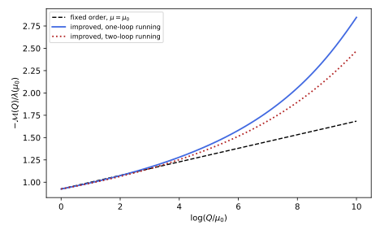
figures/ren-callan-symanzik.sage.
The definition gives the coefficient that measures how the normalisation of a field depends on the scale. It is the second generator of the renormalisation group, after the beta function.
Definition 13 (Anomalous dimension) For a field renormalised by \phi_0 = Z^{1/2}\phi, the anomalous dimension is \gamma_\phi = \frac12\mu\frac{d\log Z}{d\mu}\Big|_{\text{bare fixed}} , a function of the renormalised couplings. More generally, an operator renormalised by \mathcal O_0 = Z_{\mathcal O}\mathcal O has anomalous dimension \gamma_{\mathcal O} = \mu\frac{d\log Z_{\mathcal O}}{d\mu}, and a mass the anomalous dimension \gamma_{m^2} = \mu\frac{d\log m^2}{d\mu}. At a zero \lambda^* of the beta function the field scales with the dimension \Delta_\phi = \frac{d - 2}{2} + \gamma_\phi(\lambda^*) instead of its classical dimension.
Veriphy. Pending.
Lean. Pending.
Sage. Pending.
The quartic theory acquires a field anomalous dimension first at two loops. The first example recalls it and its value at the fixed point in d = 4 - \epsilon.
Example 69 (The quartic theory) From the sunset (Example 36), \gamma_\phi = \frac{u^2}{12} with u = \lambda/16\pi^2, and from Proposition 2, \gamma_{m^2} = u at one loop. At the zero u^* = \epsilon/3 of \beta = -\epsilon\lambda + 3u\lambda, \gamma_\phi^* = \frac{\epsilon^2}{108}: the two-point function of the critical theory falls like |x|^{-(d - 2 + 2\gamma_\phi^*)}, with 2\gamma_\phi^* = \frac{\epsilon^2}{54} the critical exponent \eta (Exercise 45).
Veriphy. Pending.
Lean. Pending.
Sage. Pending.
In a gauge theory the anomalous dimension of a charged field depends on the gauge. The second example computes it for the electron.
Example 70 (The electron field) With Z_\psi = 1 - \frac{a\alpha}{2\pi\epsilon} (Proposition 5) and \mu\frac{d\alpha}{d\mu} = -\epsilon\alpha + O(\alpha^2), \gamma_\psi = \frac12(-\epsilon\alpha)\cdot(-\frac{a}{2\pi\epsilon}) = \frac{a\alpha}{4\pi}, which vanishes in the Landau gauge (Grozin 2005, eq. 3.68, whose \gamma_\psi lacks our factor \frac12). The photon has \gamma_A = \frac12\mu\frac{d\log Z_A}{d\mu} = \frac{\alpha}{3\pi}, gauge independent, and Z_\alpha = Z_A^{-1} gives \mu\frac{d\log\alpha}{d\mu} = 2\gamma_A at \epsilon = 0: the running of the charge is the anomalous dimension of the photon.
Veriphy. Pending.
Lean. Pending.
Sage. Pending.
At a fixed point the anomalous dimension is a number, and it changes the power law of correlations. The third example shows how this appears in momentum space.
Example 71 (Scaling at a fixed point) If \beta(\lambda^*) = 0, the renormalisation group equation of the theorem below reduces for the two-point function to (\mu\partial_\mu + 2\gamma_\phi^*)G = 0; with dimensional analysis, G(p) = p^{-2}g(p/\mu), and since \mu\partial_\mu g(p/\mu) = -xg'(x) with x = p/\mu, this gives g \propto x^{2\gamma^*} and G(p) \propto p^{-2 + \eta} with \eta = 2\gamma^* (unitarity requires \eta \geq 0). In position space this is |x|^{-(d - 2 + \eta)} (Exercise 87). This is the form in which anomalous dimensions are measured, as critical exponents of correlation functions.
Veriphy. Pending.
Lean. Pending.
Sage. Pending.
The exercises compute anomalous dimensions from renormalisation constants, count the channels of the mass anomalous dimension in the O(n) model, and relate the scaling in momentum and position space. The first is short.
Exercise 85 (The anomalous dimension of the photon) From Z_A = 1 - \frac{2\alpha}{3\pi\epsilon}\sum_fQ_f^2, compute \gamma_A, and check \mu\frac{d\log\alpha}{d\mu} = 2\gamma_A against Exercise 73.
\gamma_A = \frac12\mu\frac{d\log Z_A}{d\mu} = \frac12(-\epsilon\alpha)(-\frac{2}{3\pi\epsilon}\sum Q_f^2) = \frac{\alpha}{3\pi}\sum Q_f^2. Since \alpha_0\mu^{-\epsilon} = \alpha Z_A^{-1} and \alpha_0 is fixed, \mu\frac{d\log\alpha}{d\mu} = -\epsilon + \mu\frac{d\log Z_A}{d\mu} = -\epsilon + 2\gamma_A, so at \epsilon = 0, \mu\frac{d\alpha}{d\mu} = \frac{2\alpha^2}{3\pi}\sum Q_f^2, the result of Exercise 73.
Veriphy. Pending.
Lean. Pending.
Sage. Pending.
In the O(n) model the mass term \phi_a\phi_a and the interaction (\phi_a\phi_a)^2 have different tensor structures, and the one-loop coefficients count channels. The second exercise finds the mass anomalous dimension.
Exercise 86 (The mass anomalous dimension of the O(n) model) With the interaction \frac{\lambda}{4!}(\phi_a\phi_a)^2, the four-point vertex is -\frac\lambda3(\delta_{ab}\delta_{cd} + \delta_{ac}\delta_{bd} + \delta_{ad}\delta_{bc}). Show that the tadpole contribution to the self-energy of \phi_a is \frac{n + 2}{6}\lambda T\,\delta_{ab}, and deduce \gamma_{m^2} = \frac{(n + 2)}{3}\frac{\lambda}{16\pi^2}, which is u for n = 1.
Closing the lines c, d of the vertex into a loop gives -\frac\lambda3(\delta_{ab}n + 2\delta_{ab}) times \frac12T (the symmetry factor of the tadpole), so M^2 = \frac{(n + 2)\lambda}{6}T, which for n = 1 is \frac\lambda2T as in Proposition 2. The pole of T is -\frac{2m^2}{16\pi^2\epsilon}, so \delta_m = \frac{(n + 2)\lambda m^2}{3\cdot16\pi^2\epsilon} and, as in the proposition, \gamma_{m^2} = \frac{n + 2}{3}\frac{\lambda}{16\pi^2}, the first term of Kompaniets and Panzer (2017, eq. 8) (with their opposite sign convention).
Veriphy. Pending.
Lean. Pending.
Sage. Pending.
A power law in momentum is a power law in position, with a related exponent. The third exercise computes the Fourier transform with Sage.
Exercise 87 (Power laws in two spaces) Using \int\frac{d^dp}{(2\pi)^d}\frac{e^{ip\cdot x}}{(p^2)^a} = \frac{\Gamma(d/2 - a)}{4^a\pi^{d/2}\Gamma(a)}|x|^{2a - d}, show that G(p) = p^{-2 + \eta} corresponds to |x|^{-(d - 2 + \eta)}, and check the formula with Sage for d = 3, a = 1, where G(x) = \frac{1}{4\pi|x|}.
With a = 1 - \eta/2, |x|^{2a - d} = |x|^{2 - \eta - d}, so the exponent is d - 2 + \eta. For d = 3, a = 1, \frac{\Gamma(1/2)}{4\pi^{3/2}\Gamma(1)} = \frac{\sqrt\pi}{4\pi^{3/2}} = \frac{1}{4\pi} and |x|^{-1}: the Coulomb potential. The coefficient is finite for 0 < a < d/2, the range in which the transform exists as a function:
var('d a eta')
C = lambda dd, aa: gamma(dd / 2 - aa) / (4^aa * pi^(dd / 2) * gamma(aa))
print("d = 3, a = 1: coefficient =", C(3, 1).simplify_full(), " (1/(4 pi) expected)")
print("exponent of |x| for a = 1 - eta/2:", (2 * (1 - eta / 2) - d).expand(), "= -(d - 2 + eta)")
# numerical check in d = 3 of the radial Fourier integral for a = 3/4: (1/(2 pi^2 r)) int_0^oo p sin(p r) p^(-3/2) dp
r = 1.7
num = 1 / (2 * pi^2 * r) * numerical_integral(lambda p: sin(p * r) * p^(-1 / 2), 0, 2000)[0]
print("d = 3, a = 3/4 at r = 1.7: radial integral %.4f (oscillatory tail truncated), formula %.4f" % (num, (C(3, 3 / 4) * r^(2 * 3 / 4 - 3)).n()))Output:
d = 3, a = 1: coefficient = 1/4/pi (1/(4 pi) expected)
exponent of |x| for a = 1 - eta/2: -d - eta + 2 = -(d - 2 + eta)
d = 3, a = 3/4 at r = 1.7: radial integral 0.0284 (oscillatory tail truncated), formula 0.0286Veriphy. Pending.
Lean. Pending.
Sage. Pending.
The equation that combines the beta function and the anomalous dimensions is the subject of the theorem. It holds in every mass-independent scheme, and in kinematic schemes in the form of Balduf (2024, Thm. 41).
Theorem 3 (The renormalisation group equation) Let G_R^{(n)}(p_1, \dots, p_n; \lambda, m, \mu) be the renormalised connected n-point function of the quartic theory in a minimal scheme. Then \Bigl(\mu\frac{\partial}{\partial\mu} + \beta(\lambda)\frac{\partial}{\partial\lambda} + \gamma_{m^2}(\lambda)m^2\frac{\partial}{\partial m^2} + n\gamma_\phi(\lambda)\Bigr)G_R^{(n)} = 0 , \tag{12} and the one-particle-irreducible functions satisfy the same equation with -n\gamma_\phi. In the massless theory its solution under a rescaling of all momenta by e^t is G_R^{(n)}(e^tp; \lambda, \mu) = e^{(d - n(d + 2)/2)t}\exp\Bigl(-n\int_0^t\gamma_\phi(\bar\lambda(t'))dt'\Bigr)G_R^{(n)}(p; \bar\lambda(t), \mu), \qquad \frac{d\bar\lambda}{dt} = \beta(\bar\lambda), \quad \bar\lambda(0) = \lambda .
Veriphy. Pending.
Lean. Pending.
Sage. Pending.
Proof. The bare function G_0^{(n)} = Z^{n/2}G_R^{(n)} depends on \lambda_0, m_0 and the momenta, not on \mu. Differentiating G_R^{(n)} = Z^{-n/2}G_0^{(n)} with respect to \log\mu at fixed bare parameters, \frac{d}{d\log\mu}G_R^{(n)} = -n\gamma_\phi G_R^{(n)}, and the total derivative is \mu\partial_\mu + \beta\partial_\lambda + \gamma_{m^2}m^2\partial_{m^2} by the chain rule; this gives Equation 12. For the solution, the momentum-space connected function in d dimensions has mass dimension d - n(d + 2)/2 (each field \frac{d - 2}{2}, Fourier transformed, minus the overall delta function), so G(e^tp; \lambda, \mu) = e^{(d - n(d + 2)/2)t}G(p; \lambda, e^{-t}\mu); the equation is a first-order linear equation in \log\mu and \lambda, and following its characteristics \bar\lambda(t) from e^{-t}\mu back to \mu gives the stated form. \square
The equation can be checked on the one-loop four-point function. The first example does it at the symmetric point, where the check is a line of algebra.
Example 72 (A one-loop check) For the massless theory the one-particle-irreducible four-point function at the symmetric point is \Gamma^{(4)} = \lambda - \frac{3\lambda^2}{32\pi^2}(2 - \log\frac{Q^2}{\mu^2}) (minus the amplitude of Example 33). With \gamma_\phi = O(\lambda^2), Equation 12 reads \mu\partial_\mu\Gamma^{(4)} + \beta\partial_\lambda\Gamma^{(4)} = -\frac{3\lambda^2}{16\pi^2} + \frac{3\lambda^2}{16\pi^2}(1 + O(\lambda)) = O(\lambda^3): satisfied at this order (Exercise 89). The equation determines the \log\mu dependence at every order from lower orders.
Veriphy. Pending.
Lean. Pending.
Sage. Pending.
Solving the equation along its characteristics replaces \lambda by the running coupling at the scale of the process. The second example applies the solution to the four-point function.
Example 73 (Renormalisation-group improvement) For the four-point function n = 4 and d = 4 the scaling factor is e^{(4 - 12)t} for the connected function with propagators, and for the one-particle-irreducible one the momentum dimension is zero. With \gamma_\phi neglected, \Gamma^{(4)}(e^tp; \lambda, \mu) = \Gamma^{(4)}(p; \bar\lambda(t), \mu): at the symmetric point Q = e^t\mu, \Gamma^{(4)}(Q) = \bar\lambda(\log\frac Q\mu) - \frac{3\bar\lambda^2}{16\pi^2} + \dots, with no large logarithm left in the coefficients. This is the solid curve of Figure 14; expanding \bar\lambda in \lambda reproduces the logarithms of fixed-order perturbation theory, and the solution resums them.
Veriphy. Pending.
Lean. Pending.
Sage. Pending.
If the beta function vanishes identically, the equation forces pure power laws. The third example is Balduf’s linear Dyson-Schwinger equation, whose solution is grouplike (Exercise 70).
Example 74 (A scale-invariant solution) If \beta = 0 and \gamma is a constant, the propagator function G(L) of the logarithmic scale L = \log(s/s_0), normalised by G(0) = 1, satisfies \partial_LG = \gamma G (the Callan-Symanzik equation of Balduf (2024, Thm. 41) in kinematic renormalisation), so G = e^{\gamma L} = (s/s_0)^\gamma. The toy model of Exercise 70 is of this type, with \gamma = -\frac1\pi\arcsin(\pi\alpha); a theory at a fixed point of the renormalisation group behaves in the same way, which is why scaling and fixed points go together (Balduf 2024, Thm. 46 and Sec. 3.2.4).
Veriphy. Pending.
Lean. Pending.
Sage. Pending.
The exercises derive and test the equation and solve it for a simple model in closed form. The first derivation is the standard one, for the vertex functions.
Exercise 88 (Deriving the equation for vertex functions) From \Gamma_R^{(n)} = Z^{n/2}\Gamma_0^{(n)} for the one-particle-irreducible functions, derive the renormalisation group equation with -n\gamma_\phi, and explain the sign difference with Equation 12.
The one-particle-irreducible functions are the coefficients of the effective action, \Gamma[\phi_0] = \Gamma_R[\phi], and since \phi_0 = Z^{1/2}\phi, \Gamma_R^{(n)} = Z^{n/2}\Gamma_0^{(n)}: the amputation removes n propagators, each of which carries Z. Differentiating at fixed bare quantities gives (\mu\partial_\mu + \beta\partial_\lambda + \gamma_{m^2}m^2\partial_{m^2} - n\gamma_\phi)\Gamma_R^{(n)} = 0. The sign is opposite because the connected function contains the field to the power n, the vertex function the source to the power n.
Veriphy. Pending.
Lean. Pending.
Sage. Pending.
The one-loop check of Example 72 can be done with masses, where the logarithms are not pure. The second exercise uses Sage.
Exercise 89 (The equation with masses) For the massive theory, verify with Sage that \Gamma^{(4)} = \lambda - \frac{\lambda^2}{2}(B_R(s) + B_R(t) + B_R(u)) with B_R of Proposition 2 satisfies Equation 12 for n = 4 (with the minus sign) to order \lambda^2, the term \gamma_{m^2}m^2\partial_{m^2} contributing only at order \lambda^3.
\mu\partial_\mu B_R = \frac{2}{16\pi^2}, so \mu\partial_\mu\Gamma^{(4)} = -\frac{\lambda^2}{2}\cdot\frac{6}{16\pi^2} = -\frac{3\lambda^2}{16\pi^2} and \beta\partial_\lambda\Gamma^{(4)} = \frac{3\lambda^2}{16\pi^2} + O(\lambda^3); the mass derivative of B_R is finite and multiplies \gamma_{m^2}m^2 = O(\lambda), so it enters at \lambda^3, as does \gamma_\phi. This is the computation of Exercise 37 in another form:
var('t lam m2')
I = lambda r: sqrt(1 + 4 / r) * log((sqrt(1 + 4 / r) + 1) / (sqrt(1 + 4 / r) - 1)) - 2
BR = lambda P: -(1 / (16 * pi^2)) * (log(m2) - 2 * t + I(P / m2)) # Euclidean invariants, mu = e^t
D = lambda F: diff(F, t) + 3 * lam^2 / (16 * pi^2) * diff(F, lam) + lam * m2 / (16 * pi^2) * diff(F, m2)
for (S, T, U) in [(3, 4, 5), (0.5, 20, 7)]:
Gam = lam - lam^2 / 2 * (BR(S) + BR(T) + BR(U))
eq = D(Gam)
print("S, T, U = %s: order lambda^2 part of the equation: %s; order lambda^3 at m^2 = 1, t = 0: %.3e" % ((S, T, U), taylor(eq, lam, 0, 2).simplify_full(), eq.subs(m2=1, t=0).diff(lam, 3).subs(lam=0).n() / 6))Output:
S, T, U = (3, 4, 5): order lambda^2 part of the equation: 0; order lambda^3 at m^2 = 1, t = 0: 2.144e-04
S, T, U = (0.500000000000000, 20, 7): order lambda^2 part of the equation: 0; order lambda^3 at m^2 = 1, t = 0: 2.991e-04Veriphy. Pending.
Lean. Pending.
Sage. Pending.
With a quadratic beta function and a constant anomalous dimension the equation is solved in closed form. The third exercise does it.
Exercise 90 (Solving along characteristics) For \beta = b\lambda^2 and \gamma_\phi = c\lambda (a model in which the anomalous dimension starts at one loop), compute \exp(-n\int_0^t\gamma_\phi(\bar\lambda)dt') and express it as a power of \bar\lambda(t)/\lambda.
\bar\lambda(t) = \frac{\lambda}{1 - b\lambda t}, and \int_0^tc\bar\lambda\,dt' = -\frac cb\log(1 - b\lambda t) = \frac cb\log\frac{\bar\lambda}{\lambda}. So the factor is (\bar\lambda(t)/\lambda)^{-nc/b}: the anomalous dimension produces powers of the running coupling rather than of the momentum. This is the form in which logarithmic corrections to scaling appear in four dimensions, such as the exponent \frac{n + 2}{n + 8} of Example 108.
Veriphy. Pending.
Lean. Pending.
Sage. Pending.
Beta functions
The beta functions of the three theories of this chapter are computed from the counterterms found so far, and the non-abelian one from the corresponding counterterms of Yang-Mills theory. They are stated in two schemes: the minimal scheme, in which they do not depend on masses, and momentum subtraction, in which a particle contributes only above its mass.
Proposition 6 (One-loop beta functions) In the modified minimal scheme, at one loop: for the O(n) model with \frac{\lambda}{4!}(\phi_a\phi_a)^2, \beta_\lambda = \frac{n + 8}{3}\frac{\lambda^2}{16\pi^2}; for quantum electrodynamics with Dirac fermions of charges Q_f, \beta_e = \frac{e^3}{12\pi^2}\sum_fQ_f^2; for a gauge group G with Weyl fermions in representations F and complex scalars in representations S, \beta_g = \frac{g^3}{16\pi^2}\Bigl(-\frac{11}{3}C_2(G) + \frac23\sum_FT(F) + \frac13\sum_ST(S)\Bigr) with \operatorname{tr}(T^aT^b) = T(R)\delta^{ab}, T = \frac12 for the fundamental and T = C_2(G) = N for the adjoint of SU(N) (Nath 2017, eqs. 9.35-9.37; Grozin 2005, eq. 4.45). In the momentum-subtraction scheme the contribution of a particle of mass m is multiplied by a function of \mu/m that tends to 1 for \mu \gg m and vanishes like \mu^2/m^2 for \mu \ll m; for the electron loop it is 6\int_0^1dx\frac{x^2(1 - x)^2\mu^2}{m^2 + x(1 - x)\mu^2} (Manohar 2018, eqs. 7.3-7.5).
Veriphy. Pending.
Lean. Pending.
Sage. Pending.
Proof. The quartic coefficient counts the channels of Exercise 92, which for n = 1 reproduces Proposition 2. The electromagnetic one is Exercise 73. The non-abelian one is quoted; its gauge-boson term comes from the gluon and ghost loops and the cubic and quartic gauge vertices, and Grozin (2005, sec. 4) computes it in the background of quarks, gluons and ghosts. For momentum subtraction, \beta = -\frac e2\mu\frac{d}{d\mu}\Pi_{\mathrm{MOM}} with the vacuum polarisation subtracted at q^2 = -\mu^2, and the derivative of \int x(1 - x)\log(m^2 + x(1 - x)\mu^2) gives the stated function. \square
The O(n) coefficient is the number that controls the critical behaviour of the whole family of O(n) models. The first example evaluates it.
Example 75 (The O(n) models) For n = 1 (Ising), 2 (superfluids), 3 (Heisenberg magnets) and 4 (the Higgs doublet, four real fields), the coefficients \frac{n + 8}{3} are 3, \frac{10}{3}, \frac{11}{3} and 4. The fixed point in d = 4 - \epsilon is at u^* = \frac{3\epsilon}{n + 8}, and the universality classes differ only through n, as Section 1.9 shows. The two-loop coefficient is -\frac{3n + 14}{3} (Kompaniets and Panzer 2017, Table IV), -\frac{17}{3} for n = 1.
Veriphy. Pending.
Lean. Pending.
Sage. Pending.
The non-abelian formula gives the number that made quantum chromodynamics a theory of the strong interaction. The second example evaluates it.
Example 76 (Quantum chromodynamics) For SU(3) with n_f Dirac quarks (two Weyl fermions each, T = \frac12), \beta_g = -\frac{g^3}{16\pi^2}(11 - \frac23n_f), so b_0 = 11 - \frac23n_f, positive for n_f \leq 16: the coupling decreases at high energies, asymptotic freedom. The term -11 comes from the gluons’ own charge: unlike photons, gluons carry colour and antiscreen it (Grozin 2005, sec. 4.6). With six quarks b_0 = 7, with five \frac{23}{3}.
Veriphy. Pending.
Lean. Pending.
Sage. Pending.
The Standard Model has three gauge couplings, and the proposition gives three coefficients. The third example quotes them with the normalisation that grand unification uses.
Example 77 (The Standard Model) With \alpha_i = g_i^2/4\pi, \mu\frac{d\alpha_i}{d\mu} = \frac{b_i}{2\pi}\alpha_i^2, and \alpha_1 = \frac53\alpha_Y, the coefficients are b_i = (0, -\frac{22}{3}, -11) + N_G(\frac43, \frac43, \frac43) + N_H(\frac1{10}, \frac16, 0); with three generations and one Higgs doublet, (b_1, b_2, b_3) = (\frac{41}{10}, -\frac{19}{6}, -7). In the minimal supersymmetric extension, with the superpartners and two Higgs doublets, (b_1, b_2, b_3) = (\frac{33}{5}, 1, -3) (Nath 2017, eqs. 9.39-9.40 and 9.87-9.89). Only the weak and strong couplings are asymptotically free.
Veriphy. Pending.
Lean. Pending.
Sage. Pending.
In a mass-dependent scheme a heavy particle stops contributing below its mass. The fourth example evaluates the threshold function for the electron loop.
Example 78 (The beta function across a threshold) In momentum subtraction the electron contributes \frac{e^3}{12\pi^2}f(\mu/m) with f(z) = 6\int_0^1\frac{x^2(1 - x)^2z^2}{1 + x(1 - x)z^2}dx. For z \gg 1, f \to 6\int x(1 - x) = 1; for z \ll 1, f \approx 6z^2\int x^2(1 - x)^2 = \frac{z^2}{5}, so \beta \approx \frac{e^3\mu^2}{60\pi^2m^2} (Manohar 2018, eq. 7.5). The function reaches 0.9 only at \mu \approx 7m and its limit within 1\% only beyond \mu \approx 24m (Exercise 94); in the minimal scheme the same physics is described by a step at \mu \approx m and a matching condition (Section 1.10).
Veriphy. Pending.
Lean. Pending.
Sage. Pending.
The exercises compute the Standard Model coefficients, derive the O(n) coefficient, discuss the conditions for asymptotic freedom, and evaluate the threshold function. The first is a Sage computation from the field content.
Exercise 91 (The Standard Model coefficients) With the Weyl fermions of one generation, Q(3, 2, \frac16), u^c(\bar3, 1, -\frac23), d^c(\bar3, 1, \frac13), L(1, 2, -\frac12), e^c(1, 1, 1), and one Higgs doublet H(1, 2, \frac12), compute b_i = -\frac{11}{3}C_2(G_i) + \frac23\sum_FT_i(F)d_i'(F) + \frac13\sum_ST_i(S)d'_i(S), where d_i' is the dimension of the representation under the other factors and T_1 = \frac35Y^2. Confirm (\frac{41}{10}, -\frac{19}{6}, -7).
For SU(3): C_2 = 3, and per generation the quarks give T = \frac12 times multiplicities 2 (Q), 1 (u^c), 1 (d^c), so \frac23\cdot\frac12\cdot4 = \frac43; with three generations -11 + 4 = -7. For SU(2): C_2 = 2, doublets Q (three colours) and L give \frac23\cdot\frac12\cdot4 = \frac43 per generation, the Higgs \frac13\cdot\frac12 = \frac16: -\frac{22}{3} + 4 + \frac16 = -\frac{19}{6}. For U(1) with T = \frac35Y^2: per generation \sum Y^2d = 6\cdot\frac{1}{36} + 3\cdot\frac49 + 3\cdot\frac19 + 2\cdot\frac14 + 1 = \frac{10}{3}, times \frac23\cdot\frac35 = \frac25 gives \frac43, and the Higgs \frac13\cdot\frac35\cdot2\cdot\frac14 = \frac1{10}: 4 + \frac1{10} = \frac{41}{10}:
fermions = [("Q", 3, 2, 1/6), ("uc", 3, 1, -2/3), ("dc", 3, 1, 1/3), ("L", 1, 2, -1/2), ("ec", 1, 1, 1)]
scalars = [("H", 1, 2, 1/2)]
def contrib(fields, weight):
b = [0, 0, 0]
for name, n3, n2, Y in fields:
b[0] += weight * QQ(3/5) * QQ(Y)^2 * n3 * n2
b[1] += weight * (QQ(1/2) * n3 if n2 == 2 else 0)
b[2] += weight * (QQ(1/2) * n2 if n3 == 3 else 0)
return b
gauge = [0, -QQ(22/3), -11]
f = contrib(fermions, QQ(2/3)); s = contrib(scalars, QQ(1/3))
b = [gauge[i] + 3 * f[i] + s[i] for i in range(3)]
print("per generation:", f, " Higgs:", s)
print("b_i =", b)Output:
per generation: [4/3, 4/3, 4/3] Higgs: [1/10, 1/6, 0]
b_i = [41/10, -19/6, -7]Veriphy. Pending.
Lean. Pending.
Sage. Pending.
The O(n) coefficient follows from the tensor structure of the vertex, which distributes the three channels unequally. The second exercise counts them.
Exercise 92 (Counting the O(n) channels) With the vertex -\frac\lambda3(\delta_{ab}\delta_{cd} + \delta_{ac}\delta_{bd} + \delta_{ad}\delta_{bc}), show that the one-loop s-channel bubble has the tensor \frac{\lambda^2}{9}((n + 4)\delta_{ab}\delta_{cd} + 2\delta_{ac}\delta_{bd} + 2\delta_{ad}\delta_{bc}), and that summing the three channels gives \frac{n + 8}{9}\lambda^2 times the tree tensor, hence \beta_\lambda = \frac{n + 8}{3}\frac{\lambda^2}{16\pi^2}.
Contract the vertex tensors V_{abef}V_{efcd} with V_{abcd} = \delta_{ab}\delta_{cd} + \delta_{ac}\delta_{bd} + \delta_{ad}\delta_{bc}: \delta_{ab}\delta_{ef}\cdot\delta_{ef}\delta_{cd} = n\delta_{ab}\delta_{cd}, the cross terms give 2\delta_{ab}\delta_{cd} twice, and the remaining terms 2(\delta_{ac}\delta_{bd} + \delta_{ad}\delta_{bc}); so V\cdot V = (n + 4)\delta_{ab}\delta_{cd} + 2\delta_{ac}\delta_{bd} + 2\delta_{ad}\delta_{bc}. Adding the t and u channels permutes the indices, and the sum is (n + 8)V_{abcd}. Each bubble carries the symmetry factor \frac12 and the pole \frac{2}{16\pi^2\epsilon}, so the divergent part of the one-loop vertex is \frac{\lambda^2}{9}(n + 8)\cdot\frac12\cdot\frac{2}{16\pi^2\epsilon}V. Comparing with the tree vertex \frac\lambda3V, the counterterm is \frac{\delta_\lambda}{3} = \frac{(n + 8)\lambda^2}{9\cdot16\pi^2\epsilon}, so \delta_\lambda = \frac{(n + 8)\lambda^2}{3\cdot16\pi^2\epsilon}, which for n = 1 is \frac{3\lambda^2}{16\pi^2\epsilon}, and \beta = \frac{n + 8}{3}\frac{\lambda^2}{16\pi^2} by Exercise 33.
Veriphy. Pending.
Lean. Pending.
Sage. Pending.
Asymptotic freedom is fragile, because every charged matter field screens and enough matter destroys it. The third exercise finds the limits for SU(2) and SU(3).
Exercise 93 (How much matter asymptotic freedom tolerates) Using the proposition, find the largest number of Dirac fermions in the fundamental representation of SU(2) and of SU(3) compatible with asymptotic freedom, and the largest number of complex scalars in the fundamental of SU(2) with no fermions.
A Dirac fermion is two Weyl fermions, contributing \frac43T = \frac23 in the fundamental. For SU(2), -\frac{22}{3} + \frac23n_f < 0 requires n_f \leq 10; for SU(3), -11 + \frac23n_f < 0 requires n_f \leq 16. A complex scalar doublet contributes \frac13\cdot\frac12 = \frac16, so -\frac{22}{3} + \frac{n_s}{6} < 0 for n_s \leq 43. Scalars weigh a quarter of a Dirac fermion each, fermions are the main threat to asymptotic freedom.
Veriphy. Pending.
Lean. Pending.
Sage. Pending.
The threshold function of momentum subtraction is a one-dimensional integral that interpolates between the two regimes of Example 78. The fourth exercise evaluates it with Sage.
Exercise 94 (The threshold function) Compute f(z) = 6\int_0^1\frac{x^2(1 - x)^2z^2}{1 + x(1 - x)z^2}dx for z = 0.1, 1, 3, 10, 100, and find the z where f = \frac12 and f = 0.9.
f(0.1) = 0.0020, equal to z^2/5 at this accuracy; f(1) = 0.165, f(3) = 0.628, f(10) = 0.945, f(100) = 0.9994. The function crosses \frac12 near z = 2.3 and 0.9 near z = 7.1: the electron decouples gradually over about a decade of \mu around its mass:
x = var('x')
f = lambda z: 6 * numerical_integral(x^2 * (1 - x)^2 * z^2 / (1 + x * (1 - x) * z^2), 0, 1)[0]
for z in [0.1, 1, 3, 10, 100]:
print("f(%s) = %.4f" % (z, f(z)))
print("z^2/5 at z = 0.1: %.4f" % (0.01 / 5))
print("f = 1/2 at z = %.2f, f = 0.9 at z = %.2f" % (find_root(lambda z: f(z) - 0.5, 0.5, 50), find_root(lambda z: f(z) - 0.9, 1, 100)))Output:
f(0.100000000000000) = 0.0020
f(1) = 0.1649
f(3) = 0.6279
f(10) = 0.9454
f(100) = 0.9994
z^2/5 at z = 0.1: 0.0020
f = 1/2 at z = 2.29, f = 0.9 at z = 7.14Veriphy. Pending.
Lean. Pending.
Sage. Pending.
Running couplings and asymptotic freedom
A coupling with a negative beta function becomes weak at high energies and strong at low ones, and the scale at which it is strong is generated by the running itself. The figure shows the three gauge couplings of the Standard Model and of its supersymmetric extension run to high energies with the one-loop coefficients.
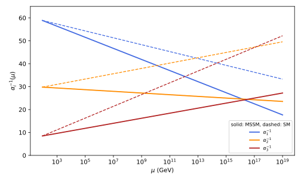
figures/ren-unification.sage.
Interactive figure (drag to rotate or zoom); the static version is above.
The definition gives the scale that replaces a dimensionless coupling in a theory without masses. It is invariant under the renormalisation group, and every dimensionful quantity of such a theory is proportional to a power of it.
Definition 14 (Lambda parameter) For a dimensionless coupling g(\mu) with beta function \beta(g) = -b_0\frac{g^3}{16\pi^2} - b_1\frac{g^5}{(16\pi^2)^2} + \dots, the lambda parameter is \Lambda = \mu\exp\Bigl(-\int^{g(\mu)}\frac{dg'}{\beta(g')}\Bigr), with the integration constant fixed by convention so that at one loop \Lambda = \mu\exp\bigl(-\frac{8\pi^2}{b_0g(\mu)^2}\bigr), that is \alpha(\mu) = \frac{2\pi}{b_0\log(\mu/\Lambda)}. It does not depend on \mu; for b_0 > 0 it is the scale where the one-loop coupling diverges in the infrared, for b_0 < 0 the scale of the Landau pole in the ultraviolet (Grozin 2005, eq. 4.47).
Veriphy. Pending.
Lean. Pending.
Sage. Pending.
The strong coupling is measured at the Z mass, and the lambda parameter follows from it. The first example evaluates it at one loop.
Example 79 (The scale of quantum chromodynamics) With \alpha_s(M_Z) = 0.118 and five flavours, b_0 = \frac{23}{3} and \Lambda = M_Z\exp(-\frac{2\pi}{b_0\alpha_s}) = 88\,\mathrm{MeV} (Exercise 84 of Quantum field theory). At two loops and with the flavour thresholds the value in the modified minimal scheme is a few hundred MeV; the one-loop number shows the mechanism, a scale of hadronic size generated from a coupling of order 0.1 at 100\,\mathrm{GeV}, which is called dimensional transmutation.
Veriphy. Pending.
Lean. Pending.
Sage. Pending.
Quantum electrodynamics has the opposite sign, and its lambda parameter is a Landau pole. The second example locates it for the electron alone.
Example 80 (The Landau pole of quantum electrodynamics) With \mu\frac{d\alpha}{d\mu} = \frac{2\alpha^2}{3\pi} and \alpha(m_e) = 1/137.036, \frac1{\alpha(\mu)} = 137.036 - \frac{2}{3\pi}\log\frac{\mu}{m_e} vanishes at \log\frac{\mu}{m_e} = \frac{3\pi\cdot137.036}{2} = 645.8, at \mu \approx 10^{277}\,\mathrm{GeV}. The pole is a breakdown of the leading-logarithm approximation, not necessarily of the theory (Balduf 2024, Example 106); it lies so far beyond the Planck scale that it has no practical consequence, but it shows that quantum electrodynamics alone is not asymptotically free.
Veriphy. Pending.
Lean. Pending.
Sage. Pending.
The one-loop running of three couplings with different coefficients tests whether they can come from one coupling at a high scale. The third example reads the answer off Figure 15.
Example 81 (Do the couplings meet) At one loop \alpha_i^{-1}(\mu) = \alpha_i^{-1}(M_Z) - \frac{b_i}{2\pi}\log\frac{\mu}{M_Z}. With the Standard Model coefficients, \alpha_1 and \alpha_2 meet at 8 \times 10^{12}\,\mathrm{GeV} and \alpha_2 and \alpha_3 at 1.3 \times 10^{17}\,\mathrm{GeV}; with the supersymmetric coefficients the three crossings lie between 1.4 \times 10^{16} and 3.1 \times 10^{16}\,\mathrm{GeV}, at \alpha^{-1} \approx 24.5 (Exercise 95), the unification of Nath (2017, sec. 9.3) and Dienes et al. (1999, eqs. 3.5-3.6). The supersymmetric thresholds and two-loop terms shift the numbers, but not the conclusion.
Veriphy. Pending.
Lean. Pending.
Sage. Pending.
The lambda parameter is invariant by construction. The fourth example shows what this means for a massless theory: all of its dimensionful predictions are proportional to \Lambda.
Example 82 (Every mass is a multiple of \Lambda) In quantum chromodynamics with massless quarks the only parameters are g and \mu, and the only invariant combination of dimension one is \Lambda. A hadron mass M is a physical quantity, independent of \mu, so M = c\Lambda with a pure number c that can only be computed non-perturbatively, on the lattice of Definition 4. The proton mass is almost entirely of this origin; the quark masses contribute a few per cent.
Veriphy. Pending.
Lean. Pending.
Sage. Pending.
The exercises compute the unification points, prove the invariance of \Lambda, and run the strong coupling down through the quark thresholds. The first is a Sage computation.
Exercise 95 (Where the couplings meet) With the values of Figure 15, compute with Sage the three pairwise crossing scales and the couplings there, for the Standard Model and the supersymmetric coefficients.
Setting \alpha_i^{-1}(\mu) = \alpha_j^{-1}(\mu) gives \log\frac\mu{M_Z} = \frac{2\pi(\alpha_i^{-1} - \alpha_j^{-1})}{b_i - b_j}. Standard Model: (1, 2) at 7.7 \times 10^{12}\,\mathrm{GeV} with \alpha^{-1} = 42.5, (2, 3) at 1.3 \times 10^{17} with 47.4, (1, 3) at 2.2 \times 10^{14} with 40.3. Supersymmetric: 1.4 \times 10^{16}, 3.1 \times 10^{16} and 1.9 \times 10^{16}\,\mathrm{GeV}, with \alpha^{-1} = 24.6, 24.5 and 24.2:
MZ = 91.1876; ainv = [1 / 0.016985, 1 / 0.03358, 1 / 0.118]
for name, b in [("SM", [41 / 10, -19 / 6, -7]), ("MSSM", [33 / 5, 1, -3])]:
for (i, j) in [(0, 1), (1, 2), (0, 2)]:
t = (ainv[i] - ainv[j]) / ((b[i] - b[j]) / (2 * pi))
print("%-4s alpha_%d = alpha_%d at mu = %.2e GeV, alpha^-1 = %.2f" % (name, i + 1, j + 1, (MZ * exp(t)).n(), (ainv[i] - b[i] / (2 * pi) * t).n()))Output:
SM alpha_1 = alpha_2 at mu = 7.69e+12 GeV, alpha^-1 = 42.46
SM alpha_2 = alpha_3 at mu = 1.34e+17 GeV, alpha^-1 = 47.38
SM alpha_1 = alpha_3 at mu = 2.24e+14 GeV, alpha^-1 = 40.26
MSSM alpha_1 = alpha_2 at mu = 1.37e+16 GeV, alpha^-1 = 24.58
MSSM alpha_2 = alpha_3 at mu = 3.12e+16 GeV, alpha^-1 = 24.45
MSSM alpha_1 = alpha_3 at mu = 1.93e+16 GeV, alpha^-1 = 24.22Veriphy. Pending.
Lean. Pending.
Sage. Pending.
The lambda parameter does not depend on \mu because the integral in its definition changes exactly as \log\mu does. The second exercise proves this and computes the two-loop correction.
Exercise 96 (The invariance of \Lambda) Show \mu\frac{d\Lambda}{d\mu} = 0 for the definition, and evaluate the integral to two loops, finding \Lambda = \mu\exp(-\frac{8\pi^2}{b_0g^2})(\frac{b_0g^2}{16\pi^2})^{-b_1/2b_0^2}(1 + O(g^2)).
\mu\frac{d}{d\mu}\log\Lambda = 1 - \frac{1}{\beta(g)}\mu\frac{dg}{d\mu} = 1 - 1 = 0. For the two-loop integral, \frac{1}{\beta} = -\frac{16\pi^2}{b_0g^3}(1 - \frac{b_1g^2}{16\pi^2b_0} + O(g^4)), so -\int\frac{dg}{\beta} = -\frac{8\pi^2}{b_0g^2} - \frac{b_1}{b_0^2}\log g + \text{const}; choosing the constant so that the argument of the logarithm is \frac{b_0g^2}{16\pi^2} gives the stated form. The two-loop factor is a power of the coupling, the same structure as in Exercise 90.
Veriphy. Pending.
Lean. Pending.
Sage. Pending.
The strong coupling at low energies is needed for the decays of the tau lepton. The third exercise runs it there at one loop, changing the number of flavours at the bottom-quark mass.
Exercise 97 (The strong coupling at the tau mass) Run \alpha_s from 0.118 at M_Z to m_b = 4.18\,\mathrm{GeV} with n_f = 5 and from there to m_\tau = 1.777\,\mathrm{GeV} with n_f = 4, at one loop and with \alpha_s continuous at m_b. Compare with the measured \alpha_s(m_\tau) \approx 0.33.
\frac1{\alpha_s(m_b)} = \frac1{0.118} + \frac{23/3}{2\pi}\log\frac{4.18}{91.19} = 4.71, \alpha_s(m_b) = 0.212; then \frac{1}{\alpha_s(m_\tau)} = 4.71 + \frac{25/3}{2\pi}\log\frac{1.777}{4.18} = 3.58, \alpha_s(m_\tau) = 0.279. The one-loop running underestimates the measured value by about 15\%; the two-loop coefficient and the matching at the threshold (Section 1.10) account for most of the difference:
MZ, mb, mtau = 91.1876, 4.18, 1.777
inv_b = 1 / 0.118 + (23 / 3) / (2 * pi) * log(mb / MZ)
inv_tau = inv_b + (25 / 3) / (2 * pi) * log(mtau / mb)
print("1/alpha_s(m_b) = %.3f, alpha_s(m_b) = %.4f" % (inv_b.n(), (1 / inv_b).n()))
print("1/alpha_s(m_tau) = %.3f, alpha_s(m_tau) = %.4f" % (inv_tau.n(), (1 / inv_tau).n()))Output:
1/alpha_s(m_b) = 4.713, alpha_s(m_b) = 0.2122
1/alpha_s(m_tau) = 3.579, alpha_s(m_tau) = 0.2794Veriphy. Pending.
Lean. Pending.
Sage. Pending.
Exercises
The first integrative exercise combines the effective potential with the running of the parameters. It is the classical application of the renormalisation group equation to a function of a field.
Exercise 98 (The renormalisation-group improved potential) For the massless quartic theory, the effective potential satisfies (\mu\partial_\mu + \beta\partial_\lambda - \gamma_\phi\phi\partial_\phi)V = 0. Show that at one loop V = \frac{\lambda}{24}\phi^4 + \frac{\lambda^2\phi^4}{256\pi^2}(\log\frac{\lambda\phi^2}{2\mu^2} - \frac32) satisfies it to order \lambda^2, and that the choice \mu \sim \phi gives V \approx \frac{\bar\lambda(\log(\phi/\mu_0))}{24}\phi^4.
With m = 0, M^2 = \frac\lambda2\phi^2 and Exercise 10 gives the one-loop term \frac{M^4}{64\pi^2}(\log\frac{M^2}{\mu^2} - \frac32) = \frac{\lambda^2\phi^4}{256\pi^2}(\dots). Then \mu\partial_\mu V = -\frac{2\lambda^2\phi^4}{256\pi^2} = -\frac{\lambda^2\phi^4}{128\pi^2}, and \beta\partial_\lambda V = \frac{3\lambda^2}{16\pi^2}\cdot\frac{\phi^4}{24} + O(\lambda^3) = \frac{\lambda^2\phi^4}{128\pi^2}; \gamma_\phi = O(\lambda^2) contributes at order \lambda^3. At \mu^2 = \frac\lambda2\phi^2 the logarithm vanishes and the potential is the tree potential with the coupling at the scale \phi, up to small constants: the shape of the potential at large fields is controlled by the running of \lambda, which is how the stability of the electroweak vacuum is discussed.
Veriphy. Pending.
Lean. Pending.
Sage. Pending.
The second integrative exercise applies the non-abelian beta function to a theory with fermions and scalars, as in grand unified models. It combines Proposition 6 with Definition 14.
Exercise 99 (A unified gauge theory) For SU(5) with three generations in \bar5 + 10 (Weyl fermions, T(\bar5) = \frac12, T(10) = \frac32), a Higgs in the 5 and one in the adjoint 24 (a real scalar, counting half a complex one, T(24) = 5), compute b_0 and decide whether the theory is asymptotically free above the unification scale.
C_2(SU(5)) = 5, so the gauge term is -\frac{55}{3}. Fermions: \frac23\cdot3\cdot(\frac12 + \frac32) = 4. Scalars: the complex 5 gives \frac13\cdot\frac12 = \frac16, the real 24 gives \frac12\cdot\frac13\cdot5 = \frac56. The coefficient of \frac{g^3}{16\pi^2} is -\frac{55}{3} + 4 + 1 = -\frac{40}{3}: the theory is asymptotically free, with b_0 = \frac{40}{3}. Large Higgs representations such as a 75 or several more generations would change this, which is one of the constraints on unified model building.
Veriphy. Pending.
Lean. Pending.
Sage. Pending.
The third integrative exercise connects the fixed-order logarithms of Section 1.3 with the solution of the renormalisation group equation. It shows how the leading logarithms of all orders resum.
Exercise 100 (Leading logarithms of all orders) Expand \bar\lambda(t) = \frac{\lambda}{1 - b\lambda t} in powers of \lambda, identify the coefficient of \lambda^{L + 1}t^L with the leading logarithm of the L-loop four-point function at the symmetric point, and show with Sage that the two-loop term of the fixed-order expansion of the symmetric-point amplitude from Example 34 and Example 35 has leading coefficient b^2.
\bar\lambda = \sum_{L \geq 0}\lambda^{L + 1}(bt)^L, so the L-loop leading logarithm is b^L\lambda^{L + 1}t^L with t = \log(Q/\mu). At two loops, with L_Q = 2t, the renormalised chain is \frac{(2 - L_Q)^2}{(16\pi^2)^2} per channel times \frac{\lambda^3}{4}, and the eyes contribute \frac{L_Q^2}{2}\frac{1}{(16\pi^2)^2} each times \frac{\lambda^3}{2} (Exercise 62); summed over channels and graphs the L_Q^2 coefficient is \frac{\lambda^3}{(16\pi^2)^2}(3\cdot\frac14 + 6\cdot\frac12\cdot\frac12) = \frac{9\lambda^3}{4(16\pi^2)^2}, which with L_Q^2 = 4t^2 is \frac{9\lambda^3t^2}{(16\pi^2)^2} = b^2\lambda^3t^2:
var('e L lam t b'); d = 4 - e
G = lambda p, q: gamma(p + q - d / 2) * gamma(d / 2 - p) * gamma(d / 2 - q) / (gamma(p) * gamma(q) * gamma(d - p - q))
B = exp(euler_gamma * e / 2) * G(1, 1) * exp(-e * L / 2)
eye = exp(euler_gamma * e) * G(1, 1) * G(1 + e / 2, 1) * exp(-e * L)
chainR = ((B - 2 / e)^2).series(e, 1).truncate().coefficient(e, 0).expand()
eyeS = (eye - (2 / e) * B).series(e, 1).truncate().expand(); eyeR = eyeS.coefficient(e, 0).expand()
print("renormalised chain:", chainR, " renormalised eye:", eyeR)
L2 = 3 * QQ(1/4) * chainR.coefficient(L, 2) + 6 * QQ(1/2) * eyeR.coefficient(L, 2)
print("L^2 coefficient of the two-loop vertex function:", L2, " -> with L = 2t:", 4 * L2, "t^2 (b^2 (16 pi^2)^2 = 9)")
print("expansion of lambda-bar:", taylor(lam / (1 - b * lam * t), lam, 0, 4))Output:
renormalised chain: L^2 - 4*L + 4 renormalised eye: 1/2*L^2 - 3*L + 11/2
L^2 coefficient of the two-loop vertex function: 9/4 -> with L = 2t: 9 t^2 (b^2 (16 pi^2)^2 = 9)
expansion of lambda-bar: b^3*lam^4*t^3 + b^2*lam^3*t^2 + b*lam^2*t + lamVeriphy. Pending.
Lean. Pending.
Sage. Pending.
Dyson-Schwinger equations
Perturbation theory computes Green functions as power series in the coupling. The Dyson-Schwinger equations are exact relations among Green functions that follow from the path integral without any expansion: the equation of motion holds inside correlation functions. Expanded in the coupling they reproduce the Feynman rules; truncated, they give self-consistent approximations; and for propagators they become equations whose solutions show the structure of renormalisation, anomalous dimensions and running, all at once (Balduf 2024, secs. 1.3.11, 2.2.5, 3.3 and 4.2).
Dyson-Schwinger equations
The integral of a total derivative vanishes, and in a path integral the total derivative with respect to a field produces the equation of motion. In zero dimensions this is integration by parts, and the figure shows what the resulting equation achieves when it is solved self-consistently rather than order by order.
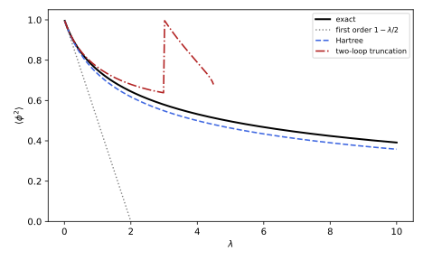
figures/ren-dse.sage.
The definition states the equations for a general action. Their content is that the classical field equation holds as an operator identity, with the source playing the role of an external force.
Definition 15 (Dyson-Schwinger equation) For a Euclidean theory with action S[\phi] and generating functional Z[J] = \int\mathcal D\phi\,e^{-S[\phi] + \int J\phi} (Definition 12 of Quantum field theory), the vanishing of \int\mathcal D\phi\frac{\delta}{\delta\phi(x)}e^{-S + \int J\phi} gives the Dyson-Schwinger equation \Bigl\langle\frac{\delta S}{\delta\phi(x)}\Bigr\rangle_J = J(x), \qquad\text{equivalently}\qquad \frac{\delta S}{\delta\phi(x)}\Big|_{\phi \to \delta/\delta J}Z[J] = J(x)Z[J] \tag{13} (Balduf 2024, Thm. 18). Differentiating with respect to J and setting J = 0 gives an infinite system of relations among the correlation functions; in terms of graphs, every one-particle-irreducible function is a sum of kernel graphs with all lines and vertices replaced by full propagators and full vertices (Balduf 2024, Thms. 16-17).
Veriphy. Pending.
Lean. Pending.
Sage. Pending.
In zero dimensions the equation is a recursion among moments. The first example derives it and solves it order by order.
Example 83 (Moments in zero dimensions) For S = \frac{\phi^2}2 + \frac{\lambda}{24}\phi^4, integrating \frac{d}{d\phi}(\phi^ne^{-S}) gives \langle\phi^{n + 1}\rangle + \frac\lambda6\langle\phi^{n + 3}\rangle = n\langle\phi^{n - 1}\rangle. For n = 1 this is \langle\phi^2\rangle + \frac\lambda6\langle\phi^4\rangle = 1, the relation of Exercise 45 of Quantum field theory. Inserting power series \langle\phi^{2k}\rangle = \sum_ja_{k,j}\lambda^j, the recursion determines all coefficients from a_{k,0} = (2k - 1)!!: \langle\phi^2\rangle = 1 - \frac12\lambda + \frac23\lambda^2 - \frac{11}{8}\lambda^3 + \dots (Exercise 102), the series of Exercise 95 of Quantum field theory. The recursion is exact, while the series it produces is only asymptotic.
Veriphy. Pending.
Lean. Pending.
Sage. Pending.
For the propagator the equation expresses the self-energy through the full propagator and the full vertex. The second example writes it for the quartic theory.
Example 84 (The propagator equation) Differentiating Equation 13 once with respect to J and passing to one-particle-irreducible functions gives, for S = \int\frac12(\partial\phi)^2 + \frac12m_0^2\phi^2 + \frac{\lambda}{24}\phi^4, G^{-1}(p) = p^2 + m_0^2 + \frac\lambda2\int\frac{d^dk}{(2\pi)^d}G(k) - \frac{\lambda}{6}\int\int\frac{d^dk\,d^dl}{(2\pi)^{2d}}G(k)G(l)G(p - k - l)\Gamma^{(4)}(p, k, l) , exact, with one bare and one full vertex in the last term. Replacing G and \Gamma^{(4)} by their tree values gives the tadpole and the sunset of Section 1.3; the equation contains all orders at once.
Veriphy. Pending.
Lean. Pending.
Sage. Pending.
Keeping only the tadpole with the full propagator gives a closed equation. The third example is this Hartree approximation, in zero dimensions and in four.
Example 85 (The Hartree approximation) Dropping the last term, G^{-1}(p) = p^2 + M^2 with M^2 = m_0^2 + \frac\lambda2\int\frac{d^dk}{(2\pi)^d}\frac{1}{k^2 + M^2}, a self-consistent gap equation for the mass. In zero dimensions it reads G^{-1} = 1 + \frac\lambda2G, with the solution G = \frac{\sqrt{1 + 2\lambda} - 1}{\lambda}, whose expansion 1 - \frac\lambda2 + \frac{\lambda^2}{2} - \dots has the right first coefficient and resums a class of graphs, the cactus graphs. For \lambda = 10 it gives 0.358 against the exact 0.391, where the first-order series gives -4 (Figure 16).
Veriphy. Pending.
Lean. Pending.
Sage. Pending.
In the cubic theory the propagator equation has a single kernel graph. The fourth example writes the combinatorial and the analytic form, following Balduf (2024, Examples 35-38).
Example 86 (The cubic propagator) In the cubic theory every one-particle-irreducible propagator graph is the one-loop bubble with full propagators on its lines and a full vertex at one end, so the equation has one kernel: G^{(2)} = 1 - \frac{\lambda^2}{2}\int G\,G\,\Gamma^{(3)} in a normalisation where G^{(2)} is the inverse propagator divided by its tree value. Setting \Gamma^{(3)} equal to its tree value gives a closed nonlinear integral equation for G^{(2)} alone (Balduf 2024, Example 38), the type of equation solved with the method of the next section.
Veriphy. Pending.
Lean. Pending.
Sage. Pending.
The exercises derive the equation, solve the zero-dimensional recursion, test the Hartree approximation, and renormalise the four-dimensional gap equation. The first derivation is the one behind the definition.
Exercise 101 (From the path integral) Show Equation 13 for a finite number of variables, Z(J) = \int d^N\phi\,e^{-S(\phi) + J\cdot\phi} with S growing faster than linearly, and deduce the zero-dimensional recursion of Example 83.
\int d^N\phi\,\frac{\partial}{\partial\phi_i}e^{-S + J\cdot\phi} = 0 because the integrand vanishes at infinity, and the derivative brings down -\partial_iS + J_i: \langle\partial_iS\rangle_J = J_i. Since \phi_i e^{J\cdot\phi} = \partial_{J_i}e^{J\cdot\phi}, \partial_iS(\phi) can be replaced by \partial_iS(\partial_J) acting on Z. For N = 1 and the function \phi^n instead of 1, \int\frac{d}{d\phi}(\phi^ne^{-S}) = 0 gives n\langle\phi^{n - 1}\rangle - \langle\phi^nS'(\phi)\rangle = 0 with S' = \phi + \frac\lambda6\phi^3, the recursion.
Veriphy. Pending.
Lean. Pending.
Sage. Pending.
The recursion can be iterated by computer to any order. The second exercise does it and compares with the moments computed directly.
Exercise 102 (Solving the recursion) Use the recursion of Example 83 to compute the coefficients of \langle\phi^2\rangle up to \lambda^6 with Sage, and compare with the expansion of the ratio of integrals.
Writing m_k = \langle\phi^{2k}\rangle, the recursion reads m_{k + 1} = (2k + 1)m_k - \frac\lambda6m_{k + 2}, and at each order in \lambda it expresses the coefficient of m_{k + 1} through lower orders. The coefficients of \langle\phi^2\rangle are 1, -\frac12, \frac23, -\frac{11}{8}, \frac{34}{9}, -\frac{619}{48}, \frac{1418}{27}, the same as the direct expansion, and their growth like n!(\frac23)^n shows the zero radius of convergence:
N = 6
R.<lam> = PowerSeriesRing(QQ, default_prec=N + 1)
K = N + 3
coef = [[0] * (N + 1) for _ in range(2 * K + 4)] # coef[k][j] = [lam^j] m_k
for k in range(2 * K + 4):
coef[k][0] = prod(range(2 * k - 1, 0, -2))
for j in range(1, N + 1):
# m_(k+1) = (2k+1) m_k - (1/6) [lam^(j-1)] m_(k+2); m_0 = 1 exactly
for k in range(0, 2 * K + 1 - j):
coef[k + 1][j] = (2 * k + 1) * coef[k][j] - QQ(1/6) * coef[k + 2][j - 1]
print("<phi^2> from the recursion:", [coef[1][j] for j in range(N + 1)])
var('l')
mom = lambda k: 0 if k % 2 else prod(range(k - 1, 0, -2))
num = sum((-l / 24)^j / factorial(j) * mom(2 + 4 * j) for j in range(N + 1)); den = sum((-l / 24)^j / factorial(j) * mom(4 * j) for j in range(N + 1))
print("<phi^2> directly: ", [taylor(num / den, l, 0, N).coefficient(l, j) for j in range(N + 1)])Output:
<phi^2> from the recursion: [1, -1/2, 2/3, -11/8, 34/9, -619/48, 1418/27]
<phi^2> directly: [1, -1/2, 2/3, -11/8, 34/9, -619/48, 1418/27]Veriphy. Pending.
Lean. Pending.
Sage. Pending.
The Hartree approximation and its two-loop improvement can be compared with the exact result in zero dimensions. The third exercise does it numerically.
Exercise 103 (How good is the Hartree approximation) Compute \langle\phi^2\rangle exactly, in the Hartree approximation and in the two-loop truncation G^{-1} = 1 + \frac\lambda2G - \frac{\lambda^2}{6}G^3, for \lambda = 0.5, 1, 10, and the relative errors.
The exact values are 0.839, 0.751 and 0.391; Hartree gives 0.828, 0.732 and 0.358, errors of 1.2\%, 2.5\% and 8.5\%. The two-loop truncation, solved for the root continuously connected to G = 1 at \lambda = 0, gives 0.843 and 0.765, errors of 0.6\% and 1.9\%, but at \lambda = 10 its quartic equation \frac{\lambda^2}{6}G^4 - \frac\lambda2G^2 - G + 1 = 0 has no real root at all: the truncation breaks down between \lambda = 3 and \lambda = 10. Truncations improve systematically at weak coupling, not uniformly:
import mpmath as mpm
def exact(l):
f = lambda p: mpm.exp(-p**2 / 2 - l * p**4 / 24)
return mpm.quad(lambda p: p**2 * f(p), [-mpm.inf, 0, mpm.inf]) / mpm.quad(f, [-mpm.inf, 0, mpm.inf])
G = polygen(RR, 'G')
for l in [0.5, 1, 10]:
ex = float(exact(l)); h = float((sqrt(1 + 2 * l) - 1) / l)
rts = [r for r in (-(l^2) / 6 * G^4 + l / 2 * G^2 + G - 1).roots(multiplicities=False) if 0 < r <= 1]
tl = max(rts) if rts else None
print("lam = %-4s exact %.4f Hartree %.4f (%.1f%%) two-loop %s" % (l, ex, h, 100 * abs(h - ex) / ex, ("%.4f (%.1f%%)" % (tl, 100 * abs(tl - ex) / ex)) if tl else "no real root"))Output:
lam = 0.500000000000000 exact 0.8386 Hartree 0.8284 (1.2%) two-loop 0.8433 (0.6%)
lam = 1 exact 0.7505 Hartree 0.7321 (2.5%) two-loop 0.7646 (1.9%)
lam = 10 exact 0.3915 Hartree 0.3583 (8.5%) two-loop no real rootVeriphy. Pending.
Lean. Pending.
Sage. Pending.
In four dimensions the gap equation diverges quadratically and logarithmically, and it must be renormalised like the perturbative self-energy. The fourth exercise shows how.
Exercise 104 (The renormalised gap equation) With a cutoff, the Hartree gap equation is M^2 = m_0^2 + \frac{\lambda}{32\pi^2}(\Lambda^2 - M^2\log\frac{\Lambda^2}{M^2}) for \Lambda \gg M. Define m^2 by m_0^2 = m^2 - \frac{\lambda}{32\pi^2}(\Lambda^2 - m^2\log\frac{\Lambda^2}{\mu^2}) and show that M^2 = m^2 + \frac{\lambda}{32\pi^2}M^2\log\frac{M^2}{\mu^2} to this order, independent of \Lambda.
Substituting, M^2 = m^2 + \frac{\lambda}{32\pi^2}(m^2\log\frac{\Lambda^2}{\mu^2} - M^2\log\frac{\Lambda^2}{M^2}). To first order in \lambda we may set m^2 = M^2 inside the bracket, which becomes M^2(\log\frac{\Lambda^2}{\mu^2} - \log\frac{\Lambda^2}{M^2}) = M^2\log\frac{M^2}{\mu^2}: the cutoff has disappeared. Beyond first order the Hartree equation needs the coupling to be renormalised as well, and with a consistent counterterm the resummed gap equation is finite to all orders, an example of renormalisation without expansion.
Veriphy. Pending.
Lean. Pending.
Sage. Pending.
Renormalisation conditions
A Dyson-Schwinger equation for a propagator, once renormalised, can be solved exactly in simple cases. The renormalised Green function G_R(\alpha, L) depends on the logarithm L = \log(s/s_0) of the scale, and kinematic renormalisation demands G_R(\alpha, 0) = 1. If the equation is linear in G_R, its combinatorial solution is grouplike (Exercise 70) and the Green function is a pure power of the scale; the exponent, an anomalous dimension, is then found from the kernel alone. The figure shows two such exact anomalous dimensions.
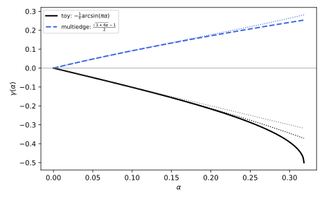
figures/ren-dse-anomalous.sage.
The proposition gives the exact solution and the statement about schemes. The function F(\rho), the Mellin transform of the kernel, is the regularised value of the kernel graph with one propagator raised to the power 1 + \rho, normalised as in Balduf (2024, Def. 103).
Proposition 7 (Linear Dyson-Schwinger equations) Let G_R(\alpha, L) = 1 - \alpha(1 - R)\int K\,G_R be a linear propagator Dyson-Schwinger equation in four dimensions with one kernel of Mellin transform F(\rho), renormalised kinematically, G_R(\alpha, 0) = 1. Then G_R(\alpha, L) = e^{L\gamma(\alpha)}, with the anomalous dimension determined by \frac{1}{F(\gamma(\alpha))} = -\alpha , and the beta function vanishes. In any other renormalisation scheme the solution is \gamma_0(\alpha)e^{L\gamma(\alpha)} with the same \gamma(\alpha) and a scheme-dependent prefactor (Balduf 2024, Thms. 46, 47 and 58).
Veriphy. Pending.
Lean. Pending.
Sage. Pending.
Proof (outline). The combinatorial solution of a linear equation X = 1 + \alpha B_+(X) satisfies \Delta(X) = X \otimes X, so the renormalised Feynman rules, a character, give a function with G(L_1 + L_2) = G(L_1)G(L_2), an exponential; the Callan-Symanzik equation of Theorem 3 with \beta = 0 says the same. To find the exponent, apply the operator 1/F(\partial_L) to the equation: it turns the integral against the kernel into the identity on e^{L\rho}, and evaluated at L = 0 on e^{L\gamma} it gives \frac{1}{F(\gamma)} = -\alpha. In another scheme the subtraction point is shifted, which multiplies G by a constant without changing \gamma. \square
The toy model of Section 1.5 has the Mellin transform F(\rho) = \frac{\pi}{\sin\pi\rho}. The first example solves its linear equation and compares with the bamboo computation.
Example 87 (The toy model) \frac{1}{F(\gamma)} = \frac{\sin\pi\gamma}{\pi} = -\alpha gives \gamma(\alpha) = -\frac1\pi\arcsin(\pi\alpha) = -\alpha - \frac{\pi^2}{6}\alpha^3 - \frac{3\pi^4}{40}\alpha^5 - \dots (Balduf 2024, Example 103). The first two terms are the coefficients found from the renormalised bamboos in Exercise 70: the linear equation sums exactly the nested graphs, and its anomalous dimension is singular at \alpha = \frac1\pi, where the series stops converging.
Veriphy. Pending.
Lean. Pending.
Sage. Pending.
A kernel with a rational Mellin transform gives an algebraic anomalous dimension. The second example is the multiedge in four dimensions, whose solution counts Catalan numbers.
Example 88 (Catalan numbers) For the one-loop multiedge in four dimensions F(\rho) = -\frac{1}{\rho(1 + \rho)}, so \gamma(1 + \gamma) = \alpha and \gamma(\alpha) = \frac{\sqrt{1 + 4\alpha} - 1}{2} = \sum_{n \geq 1}(-1)^{n + 1}C_{n - 1}\alpha^n with the Catalan numbers C_n = \frac{1}{n + 1}\binom{2n}{n} (Balduf 2024, Example 105). The series converges for |\alpha| < \frac14, limited by the branch point at \alpha = -\frac14 (Exercise 105). The anomalous dimension is an exactly known, non-polynomial function of the coupling, obtained without computing a single graph beyond one loop.
Veriphy. Pending.
Lean. Pending.
Sage. Pending.
A different subtraction changes the normalisation of the solution, not its exponent. The third example illustrates the statement about schemes with minimal subtraction.
Example 89 (The exponent does not depend on the scheme) In minimal subtraction the renormalised Green function at L = 0 is not 1 but a function \gamma_0(\alpha) = 1 + O(\alpha), the finite part left after removing poles, and the solution is \gamma_0(\alpha)e^{L\gamma(\alpha)}. The exponent is the same as in kinematic renormalisation, because the change of scheme multiplies the Green function by an L-independent factor and leaves \beta = 0. This is the fixed-point form of Proposition 4: at a zero of the beta function the anomalous dimensions are physical (Balduf 2024, Thm. 58, item 4).
Veriphy. Pending.
Lean. Pending.
Sage. Pending.
When the kernel contains the Green function to a power other than one, the coupling runs. The fourth example gives the leading logarithms, which reproduce the Landau pole of quantum electrodynamics.
Example 90 (Non-linear equations and running) If the invariant charge is Q_R = G_R^w, the beta function is \beta = w\alpha\gamma(\alpha) (Balduf 2024, eq. 3.33 and Thm. 51), and with \gamma = c_1\alpha + \dots the leading-logarithm part of the solution is H_1(z) = (1 - wc_1z)^{-1/w}, z = \alpha L (Balduf 2024, eq. 3.41). For quantum electrodynamics the Ward identity makes the theory behave like one Green function with w = 1, the running coupling being \alpha/(1 - \frac{\alpha}{3\pi}L) with L = \log(Q^2/Q_0^2): the Gell-Mann-Low formula with its Landau pole (Balduf 2024, Example 106), the effective coupling of Example 64.
Veriphy. Pending.
Lean. Pending.
Sage. Pending.
The exercises expand the exact solutions, check the sextic case in six dimensions, and derive the leading logarithms from the renormalisation group. The first is a Sage computation with the Catalan numbers.
Exercise 105 (The Catalan series) Expand \frac{\sqrt{1 + 4\alpha} - 1}{2} to order \alpha^8 with Sage, compare the coefficients with (-1)^{n + 1}C_{n - 1}, and show that \gamma(1 + \gamma) = \alpha holds order by order. Where is the nearest singularity?
The coefficients are 1, -1, 2, -5, 14, -42, 132, -429, the Catalan numbers with alternating signs, and \gamma + \gamma^2 - \alpha vanishes identically to this order. The square root has its branch point at 1 + 4\alpha = 0, \alpha = -\frac14, so the radius of convergence is \frac14, and C_n \sim 4^n/(n^{3/2}\sqrt\pi):
var('a')
g = taylor((sqrt(1 + 4 * a) - 1) / 2, a, 0, 8)
print("coefficients:", [g.coefficient(a, n) for n in range(1, 9)])
print("(-1)^(n+1) C_(n-1):", [(-1)^(n + 1) * catalan_number(n - 1) for n in range(1, 9)])
print("g(1 + g) - a to order a^8:", taylor(g * (1 + g) - a, a, 0, 8))
print("ratio C_n / C_(n-1) for n = 50:", (catalan_number(50) / catalan_number(49)).n(), " -> 4, radius of convergence 1/4")Output:
coefficients: [1, -1, 2, -5, 14, -42, 132, -429]
(-1)^(n+1) C_(n-1): [1, -1, 2, -5, 14, -42, 132, -429]
g(1 + g) - a to order a^8: 0
ratio C_n / C_(n-1) for n = 50: 3.88235294117647 -> 4, radius of convergence 1/4Veriphy. Pending.
Lean. Pending.
Sage. Pending.
The same method applies in six dimensions, where the kernel is the multiedge of the cubic theory. The second exercise checks Balduf’s closed form.
Exercise 106 (The multiedge in six dimensions) Balduf (2024, Example 105) gives \gamma(\alpha) = \frac{\sqrt{5 + 4\sqrt{1 - \alpha}} - 3}{2} for the linear equation in six dimensions. Show that it satisfies \gamma(\gamma + 1)(\gamma + 2)(\gamma + 3) = -\alpha, so that F(\rho) = \frac{1}{\rho(\rho + 1)(\rho + 2)(\rho + 3)} up to the sign convention, and expand it to order \alpha^3 with Sage.
From (2\gamma + 3)^2 = 5 + 4\sqrt{1 - \alpha}, ((2\gamma + 3)^2 - 5)^2 = 16(1 - \alpha); with (2\gamma + 3)^2 - 5 = 4(\gamma^2 + 3\gamma + 1) this is (\gamma^2 + 3\gamma + 1)^2 = 1 - \alpha, and (\gamma^2 + 3\gamma + 1)^2 - 1 = (\gamma^2 + 3\gamma)(\gamma^2 + 3\gamma + 2) = \gamma(\gamma + 1)(\gamma + 2)(\gamma + 3). So \gamma(\gamma + 1)(\gamma + 2)(\gamma + 3) = -\alpha, and the series is \gamma = -\frac\alpha6 - \frac{11\alpha^2}{216} - \dots:
var('a')
g = (sqrt(5 + 4 * sqrt(1 - a)) - 3) / 2
print("gamma(gamma+1)(gamma+2)(gamma+3) + a simplifies to:", (g * (g + 1) * (g + 2) * (g + 3) + a).simplify_full())
print("series:", taylor(g, a, 0, 3))Output:
gamma(gamma+1)(gamma+2)(gamma+3) + a simplifies to: 0
series: -103/3888*a^3 - 11/216*a^2 - 1/6*aVeriphy. Pending.
Lean. Pending.
Sage. Pending.
The leading logarithms follow from the renormalisation group alone, without solving the equation. The third exercise derives Balduf (2024, eq. 3.41) for H_1 in this way.
Exercise 107 (Leading logarithms from the running) With \partial_LG = \gamma(\tilde\alpha(L))G and \partial_L\tilde\alpha = \beta(\tilde\alpha) = w\tilde\alpha\gamma(\tilde\alpha), keep only \gamma = c_1\alpha and solve for G(L). Show that G = (1 - wc_1\alpha L)^{-1/w}, and find the running coupling.
\partial_L\tilde\alpha = wc_1\tilde\alpha^2 gives \tilde\alpha = \frac{\alpha}{1 - wc_1\alpha L}. Then \partial_L\log G = c_1\tilde\alpha = \frac{c_1\alpha}{1 - wc_1\alpha L}, and integrating with G(0) = 1, \log G = -\frac1w\log(1 - wc_1\alpha L), so G = (1 - wc_1\alpha L)^{-1/w}, a function of z = \alpha L alone, which is the leading-log function H_1(z). Since Q = G^w, the running coupling is \alpha Q = \frac{\alpha}{1 - wc_1\alpha L}; for w = 1, c_1 = \frac{1}{3\pi} it is the Gell-Mann-Low formula.
Veriphy. Pending.
Lean. Pending.
Sage. Pending.
Exercises
The first integrative exercise shows why an exact equation is valuable when the perturbative series diverges. It combines Example 83 with Example 85.
Exercise 108 (A divergent series and an exact equation) With the coefficients of Exercise 102, compute the partial sums of \langle\phi^2\rangle at \lambda = 0.1 and \lambda = 0.5 up to order 10, find the order at which they are closest to the exact value, and compare the best error with the error of the Hartree solution.
The coefficients grow factorially, |a_n| \sim n!(\frac23)^n, so the terms |a_n|\lambda^n decrease until n \approx \frac{3}{2\lambda} and then grow. At \lambda = 0.1 the partial sums still improve at order 12, with an error of about 10^{-6}; at \lambda = 0.5 the best truncation is at order 2, with an error of 8\%, worse than the Hartree error of 1.2\%. The equation, by contrast, holds exactly at every coupling, and its truncations can be improved without a divergent expansion:
import mpmath as mpm
var('l'); N = 12
mom = lambda k: 0 if k % 2 else prod(range(k - 1, 0, -2))
num = sum((-l / 24)^j / factorial(j) * mom(2 + 4 * j) for j in range(N + 1)); den = sum((-l / 24)^j / factorial(j) * mom(4 * j) for j in range(N + 1))
co = [taylor(num / den, l, 0, N).coefficient(l, j) for j in range(N + 1)]
print("|a_n| / (n! (2/3)^n):", [round(float(abs(co[n]) / (factorial(n) * (2 / 3)^n)), 3) for n in range(1, N + 1)])
for lv in [0.1, 0.5]:
f = lambda p: mpm.exp(-p**2 / 2 - lv * p**4 / 24)
ex = float(mpm.quad(lambda p: p**2 * f(p), [-mpm.inf, 0, mpm.inf]) / mpm.quad(f, [-mpm.inf, 0, mpm.inf]))
errs = [abs(float(sum(co[k] * lv^k for k in range(n + 1))) - ex) for n in range(N + 1)]
best = min(range(N + 1), key=lambda n: errs[n])
print("lam = %.1f: exact %.6f, best order %d with error %.2e, Hartree error %.2e" % (lv, ex, best, errs[best], abs(float((sqrt(1 + 2 * lv) - 1) / lv) - ex)))Output:
|a_n| / (n! (2/3)^n): [0.75, 0.75, 0.773, 0.797, 0.816, 0.831, 0.842, 0.851, 0.857, 0.862, 0.866, 0.869]
lam = 0.1: exact 0.955577, best order 12 with error 1.46e-06, Hartree error 1.13e-03
lam = 0.5: exact 0.838595, best order 2 with error 7.81e-02, Hartree error 1.02e-02Veriphy. Pending.
Lean. Pending.
Sage. Pending.
The second integrative exercise ties the linear equation of Proposition 7 to the Callan-Symanzik equation of Theorem 3. It checks the recursion for the coefficients of the logarithms.
Exercise 109 (Coefficients of the logarithms) Write G_R(\alpha, L) = \sum_j\gamma_j(\alpha)L^j. Using the Callan-Symanzik equation \partial_LG = (\gamma + \beta\partial_\alpha)G, show that \gamma_j = \frac1j(\gamma + \beta\partial_\alpha)\gamma_{j - 1} (Balduf 2024, Thm. 42), and that for \beta = 0 this gives \gamma_j = \gamma^j/j!.
Inserting the series, \sum_jj\gamma_jL^{j - 1} = \sum_j(\gamma + \beta\partial_\alpha)\gamma_jL^j; comparing the coefficients of L^{j - 1} gives j\gamma_j = (\gamma + \beta\partial_\alpha)\gamma_{j - 1}, with \gamma_0 = 1 in kinematic renormalisation. For \beta = 0 the operator is multiplication by \gamma, so \gamma_j = \frac{\gamma^j}{j!} and G = e^{\gamma L}, the solution of Proposition 7. With \beta \neq 0, already \gamma_2 = \frac12(\gamma^2 + \beta\gamma') contains the running.
Veriphy. Pending.
Lean. Pending.
Sage. Pending.
The third integrative exercise uses the truncated equation as a resummation of graphs. It combines the propagator equation with the symmetry factors of Perturbation theory and Feynman diagrams.
Exercise 110 (Which graphs a truncation sums) Expand the Hartree solution G = \frac{\sqrt{1 + 2\lambda} - 1}{\lambda} and the two-loop truncation in \lambda to order \lambda^3 with Sage, and compare with the exact coefficients 1, -\frac12, \frac23, -\frac{11}{8}. Which graphs does each truncation miss at order \lambda^2?
Hartree gives 1 - \frac12\lambda + \frac12\lambda^2 - \frac58\lambda^3: at order \lambda^2 it has the two tadpole graphs (the chain and the cactus, \frac14 + \frac14) and misses the sunset (\frac16). The two-loop truncation adds the sunset with full propagators and gives 1 - \frac12\lambda + \frac23\lambda^2 - \frac98\lambda^3 + O(\lambda^4), exact to second order; at third order it misses -\frac14\lambda^3, the graphs with a vertex correction inside the sunset, which the full vertex \Gamma^{(4)} of Example 84 would supply:
var('lam c1 c2 c3')
print("Hartree:", taylor((sqrt(1 + 2 * lam) - 1) / lam, lam, 0, 3))
g = 1 + c1 * lam + c2 * lam^2 + c3 * lam^3
eq = taylor(g * (1 + lam * g / 2 - lam^2 * g^3 / 6) - 1, lam, 0, 3)
sol = solve([eq.coefficient(lam, k) == 0 for k in [1, 2, 3]], [c1, c2, c3], solution_dict=True)[0]
print("two-loop truncation:", g.subs(sol))
print("exact: 1 - lam/2 + 2/3 lam^2 - 11/8 lam^3")Output:
Hartree: -5/8*lam^3 + 1/2*lam^2 - 1/2*lam + 1
two-loop truncation: -9/8*lam^3 + 2/3*lam^2 - 1/2*lam + 1
exact: 1 - lam/2 + 2/3 lam^2 - 11/8 lam^3Veriphy. Pending.
Lean. Pending.
Sage. Pending.
The Wilsonian renormalisation group
Wilson turned the renormalisation group from a statement about the arbitrariness of \mu into a computational method. A system with a short-distance cutoff is described at a coarser scale by integrating out the fluctuations between the two scales, which produces a new Hamiltonian of the same kind with changed couplings. Repeating the step defines a flow in the space of couplings; a critical point is a fixed point of the flow, and the critical exponents are read off from the linearised flow near it. The same picture explains why microscopically different systems share their exponents, and why the quartic theory in four dimensions is renormalisable but trivial (Boudreau and Swanson 2018, sec. 8.4; Roland Bauerschmidt and Slade 2019, sec. 1.1; Bricmont 2022, sec. 9.9).
Block spins and the flow
Kadanoff’s idea is to replace a block of b^d spins by one effective spin and to ask which Hamiltonian the block spins obey. Wilson’s version integrates out the Fourier modes of a field in a momentum shell \Lambda/b < |k| < \Lambda. In both, the result is a map on the space of couplings. The figure shows three such maps that can be followed by hand.
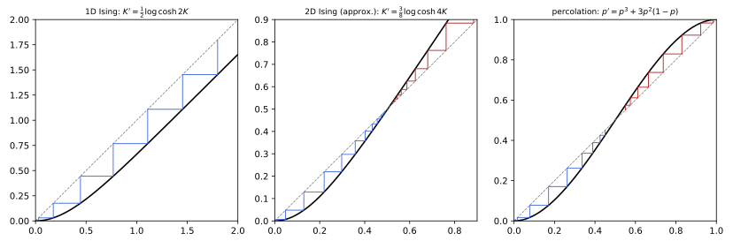
figures/ren-block-spin.sage.
The definition states the transformation in a form that covers block spins, decimation and momentum shells. The rescaling at the end is what makes fixed points possible.
Definition 16 (Renormalisation group transformation) Let a system of fields \phi with short-distance cutoff a (a lattice spacing, or a momentum cutoff \Lambda = 1/a) have the Boltzmann weight e^{-H(\phi; K)} with couplings K = (K_1, K_2, \dots). A renormalisation group transformation with scale factor b > 1 splits \phi into slow fields \phi' (block averages, or Fourier modes with |k| < \Lambda/b) and fast fields, integrates over the fast fields, and rescales lengths by b and the slow fields so that the cutoff is again a: e^{-H'(\phi'; K')} = \int\mathcal D\phi_{\mathrm{fast}}\,e^{-H(\phi; K)}, \qquad K' = M_b(K) . The map M_b satisfies M_{b_1b_2} = M_{b_1}\circ M_{b_2} (a semigroup), and the partition function is unchanged up to a constant (Boudreau and Swanson 2018, eqs. 8.54-8.55).
Veriphy. Pending.
Lean. Pending.
Sage. Pending.
The one-dimensional Ising chain can be decimated exactly by summing over every second spin. The first example does it (Boudreau and Swanson 2018, Exercise 8.13).
Example 91 (Decimation of the Ising chain) For H = -K\sum_i\sigma_i\sigma_{i + 1}, summing over \sigma_2 gives e^{K\sigma_2(\sigma_1 + \sigma_3)} summed = 2\cosh K(\sigma_1 + \sigma_3) = f(K)e^{K'\sigma_1\sigma_3} with K' = \frac12\log\cosh2K and f(K) = 2\sqrt{\cosh2K}. The chain with half the spins has the same form, and K' < K for every K > 0: the flow goes to the fixed point K = 0 (infinite temperature) from every starting point except K = \infty. The fixed point at K = \infty is unstable and there is no finite critical temperature, the known absence of a phase transition in one dimension (Figure 18).
Veriphy. Pending.
Lean. Pending.
Sage. Pending.
In two dimensions decimation generates couplings that the original Hamiltonian did not have. The second example keeps them approximately, following Boudreau and Swanson (2018, Exercise 8.14).
Example 92 (An approximate map for the square lattice) Summing over one sublattice of the square-lattice Ising model generates nearest-neighbour, next-nearest-neighbour and four-spin couplings, \frac14\log\cosh4K, \frac18\log\cosh4K and a quartic term. Dropping all but the first gives K' = \frac14\log\cosh4K, which has no non-trivial fixed point; absorbing the next-nearest-neighbour term into the nearest one, K' = \frac38\log\cosh4K, gives a fixed point K^* = 0.507, an estimate of the exact critical coupling K_c = \frac12\sinh^{-1}1 = 0.441 (Exercise 112). The truncation of the space of couplings is the price of every approximate real-space renormalisation group.
Veriphy. Pending.
Lean. Pending.
Sage. Pending.
Percolation is a geometric phase transition, and on the triangular lattice a three-site block gives the exact critical point. The third example computes the exponent of the correlation length from it (Boudreau and Swanson 2018, sec. 8.4.1).
Example 93 (Percolation on the triangular lattice) A block of three sites spans the block if at least two of its sites are occupied: p' = p^3 + 3p^2(1 - p). The fixed points are 0, 1 and p^* = \frac12, the exact percolation threshold. Since lengths are rescaled by b = \sqrt3 and \xi \propto |p - p_c|^{-\nu}, the condition \xi' = \xi/b gives \nu = \frac{\log b}{\log M'(p^*)} = \frac{\log\sqrt3}{\log(3/2)} = 1.355, against the exact \nu = \frac43 (Boudreau and Swanson 2018, eqs. 8.51-8.53).
Veriphy. Pending.
Lean. Pending.
Sage. Pending.
Near four dimensions the momentum-shell transformation of the quartic theory can be computed in perturbation theory. The fourth example states the one-loop flow that the next section analyses.
Example 94 (The momentum shell at one loop) For the O(n) model with \frac12(\partial\phi)^2 + \frac12r\Lambda^2\phi^2 + \frac{16\pi^2g}{4!}\Lambda^\epsilon(\phi\cdot\phi)^2 in d = 4 - \epsilon, integrating out the shell \Lambda e^{-dl} < |k| < \Lambda at one loop, with the four-dimensional shell volume \frac{\Lambda^4dl}{8\pi^2}, and rescaling, gives \frac{dr}{dl} = 2r + \frac{n + 2}{3}\frac{g}{1 + r}, \qquad \frac{dg}{dl} = \epsilon g - \frac{n + 8}{3}\frac{g^2}{(1 + r)^2} (Exercise 127). The terms 2r and \epsilon g are the classical scaling of the couplings; the others are the tadpole and the bubble of Proposition 2 restricted to the shell, with the channel counting of Exercise 92.
Veriphy. Pending.
Lean. Pending.
Sage. Pending.
The exercises iterate the Ising maps with Sage, analyse the Gaussian fixed point of the central limit theorem, and derive the percolation exponent. The first is Boudreau and Swanson (2018, Exercise 8.13).
Exercise 111 (The free energy from decimation) With F(K) = \frac12\log f(K) + \frac12F(K') per spin and F \approx \log2 at very small K, invert the map K' = \frac12\log\cosh2K, iterate from K' = 0.01 upwards with Sage, and compare F with the exact \log(2\cosh K).
The inverse map is K = \frac12\cosh^{-1}e^{2K'}, and F(K) = \frac12\log(2\sqrt{\cosh2K}) + \frac12F(K'). Starting from F(0.01) \approx \log2, each step doubles the length scale backwards and increases K. The error of the initial estimate is halved at every step, so after ten steps the free energy agrees with \log(2\cosh K) to about 10^{-7}, at couplings up to K \approx 3:
R = RealField(80)
Kp = R(0.01); F = log(R(2))
print("start: K = %.4f, F = %.10f, exact %.10f" % (Kp, F, log(2 * cosh(Kp))))
for step in range(1, 13):
K = acosh(exp(2 * Kp)) / 2
F = log(2 * sqrt(cosh(2 * K))) / 2 + F / 2
Kp = K
if step % 2 == 0:
print("step %2d: K = %.5f, F = %.10f, exact %.10f, error %.1e" % (step, K, F, log(2 * cosh(K)), abs(F - log(2 * cosh(K)))))Output:
start: K = 0.0100, F = 0.6931471806, exact 0.6931971797
step 2: K = 0.32745, F = 0.7458140127, exact 0.7458265125, error 1.2e-05
step 4: K = 0.97271, F = 1.1062993557, exact 1.1063024806, error 3.1e-06
step 6: K = 1.66264, F = 1.6979676699, exact 1.6979684511, error 7.8e-07
step 8: K = 2.35558, F = 2.3645362565, exact 2.3645364518, error 2.0e-07
step 10: K = 3.04872, F = 3.0509629614, exact 3.0509630102, error 4.9e-08
step 12: K = 3.74186, F = 3.7424252828, exact 3.7424252950, error 1.2e-08Veriphy. Pending.
Lean. Pending.
Sage. Pending.
The approximate two-dimensional map has a fixed point, and its slope there gives an exponent. The second exercise computes both with Sage.
Exercise 112 (The fixed point of the square lattice) Find the non-trivial fixed point of K' = \frac38\log\cosh4K, its slope \lambda = M'(K^*), and the estimate \nu = \frac{\log\sqrt2}{\log\lambda} (decimation of one sublattice rescales lengths by \sqrt2). Compare with K_c = 0.4407 and \nu = 1.
Solving numerically, K^* = 0.5070, \lambda = \frac32\tanh(4K^*) = 1.449, and \nu = \frac{0.3466}{0.3708} = 0.935. The fixed point is 15\% off and the exponent 7\%: a crude truncation already gives the right picture, a relevant direction with \nu close to the exact value:
K = var('K')
M = 3 / 8 * log(cosh(4 * K))
Ks = find_root(M - K, 0.3, 0.8)
lam = diff(M, K).subs(K=Ks)
print("K* = %.4f (exact K_c = %.4f), slope %.4f, nu = %.4f (exact 1)" % (Ks, (asinh(1) / 2).n(), lam.n(), (log(sqrt(2)) / log(lam)).n()))
print("relative error of K*: %.1f%%" % (100 * (Ks - asinh(1).n() / 2) / (asinh(1).n() / 2)))Output:
K* = 0.5070 (exact K_c = 0.4407), slope 1.4489, nu = 0.9346 (exact 1)
relative error of K*: 15.0%Veriphy. Pending.
Lean. Pending.
Sage. Pending.
The central limit theorem is a renormalisation group statement: the Gaussian is a fixed point of adding and rescaling random variables. The third exercise is Boudreau and Swanson (2018, Exercise 8.15).
Exercise 113 (The Gaussian fixed point) For the map M[\rho](x) = \sqrt2\int\rho(\sqrt2x - y)\rho(y)dy on densities of mean zero, show that the Gaussian of variance \sigma^2 is a fixed point, and that the cumulants transform as \kappa_n' = 2^{1 - n/2}\kappa_n. Which perturbations are relevant?
M is the density of (X_1 + X_2)/\sqrt2 for independent X_i with density \rho. The characteristic function becomes \hat\rho(k/\sqrt2)^2, so the cumulant generating function \log\hat\rho becomes 2\log\hat\rho(k/\sqrt2), and \kappa_n' = 2\cdot2^{-n/2}\kappa_n. The variance \kappa_2 is marginal, \kappa_1 (the mean) would be relevant (2^{1/2}), and every \kappa_n with n \geq 3 is irrelevant: the Gaussian with \kappa_n = 0 for n \geq 3 is a fixed point that attracts every density of finite variance. Universality of the normal law is the simplest universality of a fixed point.
Veriphy. Pending.
Lean. Pending.
Sage. Pending.
The percolation exponent follows from linearising the map at its fixed point. The fourth exercise works out the derivation of Example 93.
Exercise 114 (The exponent of percolation) Derive p' = p^3 + 3p^2(1 - p), find its fixed points and M'(\frac12), and justify \nu = \log b/\log M'(p^*) from \xi(p') = \xi(p)/b and \xi \propto |p - p_c|^{-\nu}.
The block spans if all three sites are occupied (p^3) or exactly two (3p^2(1 - p)). Fixed points solve p = 3p^2 - 2p^3, so p(2p - 1)(p - 1) = 0. M'(p) = 6p - 6p^2, M'(\frac12) = \frac32. Near p_c, p' - p_c = \frac32(p - p_c), and \xi(p') = \xi(p)/b gives |p' - p_c|^{-\nu} = b^{-1}|p - p_c|^{-\nu}, so (\frac32)^{-\nu} = b^{-1} and \nu = \frac{\log\sqrt3}{\log\frac32} = 1.355.
Veriphy. Pending.
Lean. Pending.
Sage. Pending.
Fixed points and the epsilon expansion
A fixed point of the flow is a scale-invariant theory, and the flow near it is controlled by the eigenvalues of the linearised map. Directions in which the flow moves away from the fixed point are relevant, and their number is the number of parameters that must be tuned to reach a critical point. The figure shows the flow of Example 94 in three dimensions.
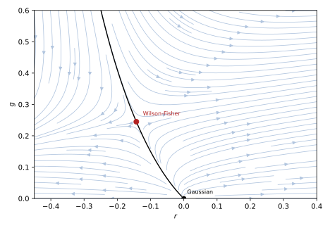
figures/ren-wilson-fisher.sage.
Interactive figure (drag to rotate or zoom); the static version is above.
The definition gives the vocabulary for the flow near a fixed point. The exponents y_i are the scaling dimensions of the corresponding perturbations.
Definition 17 (Fixed point) A fixed point of a renormalisation group transformation is a set of couplings K^* with M_b(K^*) = K^* for all b. Near it, K' - K^* = T(K - K^*) + O((K - K^*)^2) with T_{ij} = \partial M_i/\partial K_j|_{K^*}, and the eigenvalues of T have the form b^{y_i} by the semigroup property. A perturbation along an eigenvector is relevant if y_i > 0, irrelevant if y_i < 0 and marginal if y_i = 0. The critical surface is the set of couplings that flow into K^*; if the only relevant direction besides the field is the temperature, with y_t > 0, the correlation length diverges as \xi \propto |T - T_c|^{-\nu} with \nu = 1/y_t (Boudreau and Swanson 2018, eqs. 8.56-8.59).
Veriphy. Pending.
Lean. Pending.
Sage. Pending.
The Gaussian fixed point is the free field, and it exists in every dimension. The first example finds its eigenvalues from dimensional analysis alone.
Example 95 (The Gaussian fixed point) At r = g = 0 the flow of Example 94 is linear: y_r = 2 and y_g = \epsilon = 4 - d. In d > 4 the quartic coupling is irrelevant and the Gaussian fixed point controls the critical behaviour, with \nu = \frac12 and the mean-field exponents of Proposition 9 of Thermodynamics and statistical mechanics; in d < 4 it is relevant and the Gaussian fixed point is unstable. In general an operator of dimension \Delta has y = d - \Delta at the Gaussian point: \phi^6, with \Delta = 3(d - 2), has y = 6 - 2d, irrelevant near four dimensions (Roland Bauerschmidt and Slade 2019, sec. 1.6.2).
Veriphy. Pending.
Lean. Pending.
Sage. Pending.
The percolation map of Example 93 has a single coupling, and its linearisation is a number. The second example writes it in the language of the definition.
Example 96 (One relevant direction) With b = \sqrt3, T = M'(\frac12) = \frac32 = b^{y} gives y = \frac{\log(3/2)}{\log\sqrt3} = 0.738 and \nu = 1/y = 1.355. The fixed points p = 0 and p = 1 have M' = 0, so y = -\infty: they are stable, the empty and the fully connected phases. In the language of the definition the percolation threshold is the critical surface, here a single point, and every other p flows to one of the two phases.
Veriphy. Pending.
Lean. Pending.
Sage. Pending.
The Ising chain of Example 91 becomes linear in a better variable, and its fixed points can be analysed exactly. The third example does it.
Example 97 (The fixed points of the chain) With t = \tanh K, the decimation K' = \frac12\log\cosh2K becomes t' = t^2, since e^{2K'} = \cosh2K = \frac{1 + t^2}{1 - t^2}. The fixed points are t = 0 (K = 0) and t = 1 (K = \infty). At t = 1, T = \frac{dt'}{dt} = 2 = b^{y} with b = 2, so y = 1: a relevant direction with \nu = 1 in the variable 1 - t \approx 2e^{-2K}; indeed the correlation length \xi = -1/\log\tanh K satisfies \xi(t^2) = \xi(t)/2 and grows like \frac12e^{2K}. At t = 0, T = 0: the high-temperature fixed point is infinitely attractive.
Veriphy. Pending.
Lean. Pending.
Sage. Pending.
The exercises compute eigenvalues at the Gaussian fixed point, solve the chain exactly, and show why eigenvalues are powers of b. The first is a table of scaling dimensions.
Exercise 115 (Eigenvalues at the Gaussian fixed point) In d dimensions, with [\phi] = \frac{d - 2}{2}, compute y = d - \Delta for \phi^2, \phi^4, \phi^6, (\partial\phi)^2\phi^2 and \phi\partial^4\phi, and say which are relevant in d = 3 and d = 5.
\Delta(\phi^2) = d - 2, y = 2; \Delta(\phi^4) = 2d - 4, y = 4 - d; \Delta(\phi^6) = 3d - 6, y = 6 - 2d; \Delta((\partial\phi)^2\phi^2) = 2d - 2, y = 2 - d; \Delta(\phi\partial^4\phi) = d + 2, y = -2. In d = 3: \phi^2 and \phi^4 are relevant, \phi^6 is marginal (y = 0, the tricritical point), the others irrelevant. In d = 5 only \phi^2 is relevant (and the field itself): mean-field theory.
Veriphy. Pending.
Lean. Pending.
Sage. Pending.
The decimation of the chain can be iterated in closed form in the variable t. The second exercise finds the correlation length from the fixed-point structure alone.
Exercise 116 (The chain solved by its flow) Show that \xi(t) = -1/\log t is the only solution of \xi(t^2) = \xi(t)/2 that tends to 0 as t \to 0 and is continuous on (0, 1) up to a constant factor in \log, and compare with the exact correlation function \langle\sigma_0\sigma_r\rangle = t^{|r|} of the chain.
Write \xi(t) = f(-\log t) with s = -\log t > 0; the equation becomes f(2s) = f(s)/2, solved by f(s) = c/s, and the general solution is \frac{c(\log_2s)}{s} with c periodic of period one in \log_2s, which for a function analytic in K must be constant. The exact correlation function is t^{|r|} = e^{-|r|/\xi} with \xi = -1/\log t, so c = 1: the renormalisation group fixes the form of \xi, and one value fixes its normalisation.
Veriphy. Pending.
Lean. Pending.
Sage. Pending.
The eigenvalues of the linearised map are powers of the scale factor because transformations compose. The third exercise proves it.
Exercise 117 (Why eigenvalues are powers of b) Assuming the linearisations T_b at a fixed point commute and have a common eigenvector with eigenvalue \lambda(b), continuous in b, show from M_{b_1b_2} = M_{b_1}\circ M_{b_2} that \lambda(b_1b_2) = \lambda(b_1)\lambda(b_2) and hence \lambda(b) = b^y.
Differentiating the composition at the fixed point gives T_{b_1b_2} = T_{b_1}T_{b_2}, and on the common eigenvector \lambda(b_1b_2) = \lambda(b_1)\lambda(b_2). With \Lambda(s) = \log\lambda(e^s) this is Cauchy’s equation \Lambda(s_1 + s_2) = \Lambda(s_1) + \Lambda(s_2), whose continuous solutions are linear, \Lambda(s) = ys, so \lambda(b) = b^y. The exponent y is then independent of b, which is why exponents computed with different blocks can agree, and why \nu = 1/y_t does not depend on the block size.
Veriphy. Pending.
Lean. Pending.
Sage. Pending.
The one-loop flow in d = 4 - \epsilon has a second fixed point at a coupling of order \epsilon. The proposition locates it and computes the exponent of the correlation length.
Proposition 8 (The Wilson-Fisher fixed point) The flow of Example 94 has, besides the Gaussian fixed point, the Wilson-Fisher fixed point g^* = \frac{3\epsilon}{n + 8} + O(\epsilon^2), \qquad r^* = -\frac{n + 2}{2(n + 8)}\epsilon + O(\epsilon^2), at which the linearised flow has the eigenvalues y_t = 2 - \frac{n + 2}{n + 8}\epsilon and y_g = -\epsilon, to first order in \epsilon. For \epsilon > 0 it has one relevant direction, and \nu = \frac12 + \frac{n + 2}{4(n + 8)}\epsilon + O(\epsilon^2); the irrelevant eigenvalue gives the exponent of the leading correction to scaling, \omega = \epsilon + O(\epsilon^2) (Kompaniets and Panzer 2017, eqs. 6-9, with their \epsilon equal to half of ours).
Veriphy. Pending.
Lean. Pending.
Sage. Pending.
Proof. Setting \frac{dg}{dl} = 0 with g \neq 0 gives g^* = \frac{3\epsilon}{n + 8}(1 + r^*)^2, and \frac{dr}{dl} = 0 gives r^* = -\frac{n + 2}{6}\frac{g^*}{1 + r^*}; to first order, g^* = \frac{3\epsilon}{n + 8} and r^* = -\frac{n + 2}{2(n + 8)}\epsilon. The Jacobian at the fixed point is \begin{pmatrix}2 - \frac{n + 2}{3}g^* & \frac{n + 2}{3}\\ O(\epsilon^2) & \epsilon - \frac{2(n + 8)}{3}g^*\end{pmatrix} to first order, whose eigenvalues are 2 - \frac{n + 2}{n + 8}\epsilon and \epsilon - 2\epsilon = -\epsilon. Then \nu = 1/y_t = \frac12(1 - \frac{n + 2}{2(n + 8)}\epsilon)^{-1}, expanded. \square
For the Ising universality class the numbers are simple. The first example evaluates them in three dimensions.
Example 98 (The Ising class in three dimensions) For n = 1, g^* = \frac\epsilon3 (the zero u^* = \epsilon/3 of Example 69), y_t = 2 - \frac\epsilon3 and \nu = \frac12 + \frac{\epsilon}{12}. At \epsilon = 1, \nu \approx 0.583, against the three-dimensional value \nu = 0.630 (Kompaniets and Panzer 2017, eqs. 40-41) and the mean-field \frac12: the first order in \epsilon already moves the exponent most of the way. The fixed point is at \lambda^* = 16\pi^2/3 \approx 53, a large number in absolute terms, but the expansion parameter is g^*, of order \epsilon.
Veriphy. Pending.
Lean. Pending.
Sage. Pending.
The sign of \epsilon decides which fixed point is stable. The second example looks at the dimensions above and at four.
Example 99 (Above and at four dimensions) For d > 4, \epsilon < 0 and the Wilson-Fisher fixed point has g^* < 0, outside the physical region; the Gaussian fixed point is stable and the exponents are those of mean-field theory, as is proved for d > 4 (Roland Bauerschmidt and Slade 2019, eqs. 1.6.10-1.6.11). At d = 4 the two fixed points merge, the coupling is marginally irrelevant, \frac{dg}{dl} = -\frac{n + 8}{3}g^2, and it decays like \frac{3}{(n + 8)l}: the corrections to mean-field behaviour are powers of logarithms (Example 108). The same flow, read towards the ultraviolet, is the Landau pole of the four-dimensional quartic theory.
Veriphy. Pending.
Lean. Pending.
Sage. Pending.
The O(n) model with many components can be solved exactly, which gives a check of the \epsilon expansion. The third example makes it.
Example 100 (Many components) As n \to \infty, \nu = \frac12 + \frac\epsilon4 + O(\epsilon^2), which agrees with the expansion of the exact large-n result \nu = \frac{1}{d - 2} = \frac{1}{2 - \epsilon} = \frac12 + \frac\epsilon4 + \dots (the spherical model), and the second-order coefficient \frac{(n + 2)(n^2 + 23n + 60)}{8(n + 8)^3} \to \frac18 agrees with \frac{\epsilon^2}{8} of the same expansion (Proposition 9). This is one of the checks that made the \epsilon expansion credible.
Veriphy. Pending.
Lean. Pending.
Sage. Pending.
The exercises solve the fixed-point equations exactly at one loop, follow the crossover from the Gaussian to the Wilson-Fisher fixed point, and compare the universality classes. The first uses Sage.
Exercise 118 (The fixed point without expanding) For n = 1 and \epsilon = 1, solve the fixed-point equations of Example 94 exactly with Sage, compute the Jacobian and its eigenvalues numerically, and compare \nu = 1/y_t with 0.583 and 0.630.
The non-trivial solution is exact: 2r(1 + r) + \frac13(1 + r)^2 = 0 gives r^* = -\frac17 = -0.143, and g^* = \frac13(1 + r^*)^2 = \frac{12}{49} = 0.245, near the first-order values -\frac16 and \frac13. The eigenvalues of the Jacobian are y_t = 1.897 and y_g = -1.230, so \nu = 0.527: solving the truncated equations exactly is worse than the expansion, because it treats a one-loop truncation, whose error is of order \epsilon^2, as if it were exact, and keeps some of its higher-order artefacts:
var('r g')
fr = 2 * r + g / (1 + r); fg = 1 * g - 3 * g^2 / (1 + r)^2
sols = solve([fr == 0, fg == 0], r, g, solution_dict=True)
for s in sols:
if s[g] != 0:
J = matrix([[diff(fr, r), diff(fr, g)], [diff(fg, r), diff(fg, g)]]).subs(s)
ev = sorted(J.eigenvalues(), key=lambda x: -x.n())
print("fixed point r* = %s, g* = %s; eigenvalues %s; nu = %.4f" % (s[r], s[g], [e.n(digits=4) for e in ev], (1 / ev[0]).n()))Output:
fixed point r* = -1/7, g* = 12/49; eigenvalues [1.897, -1.230]; nu = 0.5272Veriphy. Pending.
Lean. Pending.
Sage. Pending.
A system starts near the Gaussian fixed point at short distances and approaches the Wilson-Fisher fixed point at long ones. The second exercise finds the crossover scale.
Exercise 119 (Crossover) On the critical surface, with r tuned and \frac{dg}{dl} = \epsilon g - \frac{n + 8}{3}g^2, solve for g(l) from g(0) = g_0 \ll g^*, and find the scale l_\times at which g reaches half of g^*. Interpret e^{l_\times} in terms of lengths.
The logistic solution is g(l) = \frac{g^*}{1 + (g^*/g_0 - 1)e^{-\epsilon l}}, which equals g^*/2 at e^{\epsilon l_\times} = g^*/g_0 - 1, so l_\times \approx \frac1\epsilon\log\frac{g^*}{g_0}. At lengths shorter than ae^{l_\times} the system looks Gaussian (mean-field), at longer ones it shows the Wilson-Fisher exponents. A weak bare coupling pushes the crossover to large distances, which is the Ginzburg criterion for the validity of mean-field theory (Exercise 88 of Thermodynamics and statistical mechanics).
Veriphy. Pending.
Lean. Pending.
Sage. Pending.
The proposition depends on n only through simple ratios, which is what distinguishes the universality classes. The third exercise tabulates them.
Exercise 120 (Universality classes) Evaluate g^*, y_t and \nu of Proposition 8 at first order and \epsilon = 1 for n = 0, 1, 2, 3 and n \to \infty, and explain why \nu increases with n.
\nu = \frac12 + \frac{n + 2}{4(n + 8)}: n = 0: 0.5625; n = 1: 0.5833; n = 2: 0.6; n = 3: 0.6136; n \to \infty: 0.75; and g^* = \frac{3}{n + 8} decreases. The mass correction is proportional to n + 2, the number of fields running in the tadpole, and the coupling to n + 8; their ratio \frac{n + 2}{n + 8} grows with n, so more components shift y_t further from its Gaussian value. The ordering \nu(\text{Ising}) < \nu(XY) < \nu(\text{Heisenberg}) is that of the three-dimensional values, 0.630 < 0.672 < 0.712 (Kompaniets and Panzer 2017, eqs. 40, 43 and 45).
Veriphy. Pending.
Lean. Pending.
Sage. Pending.
Critical exponents
The critical exponents of Definition 20 of Thermodynamics and statistical mechanics follow from the anomalous dimensions at the fixed point. The correlation length gives \nu, the decay of correlations at criticality gives \eta, and the scaling relations give the rest. The figure compares the first two orders of the \epsilon expansion with the mean-field values, with the three-dimensional numerical values and with the exact solution of the two-dimensional Ising model.
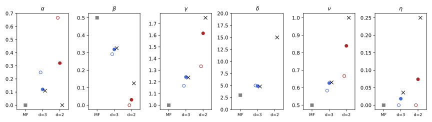
figures/ren-exponents.sage.
The proposition gives the exponents to second order. They follow from the two-loop renormalisation group functions of Proposition 3 generalised to n components.
Proposition 9 (Critical exponents in the epsilon expansion) For the O(n) model in d = 4 - \epsilon, with \eta = 2\gamma_\phi(u^*) and \nu = (2 - \gamma_{m^2}(u^*))^{-1} at the Wilson-Fisher zero u^* of the minimal-subtraction beta function, \eta = \frac{n + 2}{2(n + 8)^2}\epsilon^2 + O(\epsilon^3), \qquad \nu = \frac12 + \frac{n + 2}{4(n + 8)}\epsilon + \frac{(n + 2)(n^2 + 23n + 60)}{8(n + 8)^3}\epsilon^2 + O(\epsilon^3), and \omega = \epsilon - \frac{3(3n + 14)}{(n + 8)^2}\epsilon^2 + O(\epsilon^3). The other exponents follow from the scaling relations \gamma = \nu(2 - \eta), \alpha = 2 - d\nu, \beta = \frac\nu2(d - 2 + \eta) and \delta = \frac{d + 2 - \eta}{d - 2 + \eta} (Kompaniets and Panzer 2017, eqs. 8-10).
Veriphy. Pending.
Lean. Pending.
Sage. Pending.
Proof. With u = \lambda/16\pi^2, the two-loop functions are \beta = -\epsilon u + \frac{n + 8}{3}u^2 - \frac{3n + 14}{3}u^3, \gamma_\phi = \frac{n + 2}{36}u^2 and \gamma_{m^2} = \frac{n + 2}{3}u - \frac{5(n + 2)}{18}u^2 (Kompaniets and Panzer 2017, eqs. 16, 18 and Table IV, converted to d = 4 - \epsilon and to our sign of \gamma_{m^2}). The zero is u^* = \frac{3\epsilon}{n + 8} + \frac{9(3n + 14)}{(n + 8)^3}\epsilon^2, and substituting into \eta, \nu and \omega = \beta'(u^*) and expanding gives the formulas (Exercise 121). At \epsilon = 1 the first-order part of \nu is that of Proposition 8, as it must be, since the two computations differ by a scheme. \square
In three dimensions the second order brings \nu close to the accurate value. The first example evaluates the exponents.
Example 101 (Three dimensions) At n = 1, \epsilon = 1: \eta = \frac{1}{54} = 0.019 and \nu = \frac12 + \frac1{12} + \frac{7}{162} = 0.627, and the scaling relations give \gamma = 1.241, \alpha = 0.120, \beta = 0.319, \delta = 4.89. The three-dimensional values are \nu = 0.630, \eta = 0.036, \gamma = 1.237, \alpha = 0.110, \beta = 0.326, \delta = 4.79 (Example 87 of Thermodynamics and statistical mechanics; Kompaniets and Panzer (2017, eqs. 40-41)). With six loops and resummation the expansion gives \nu = 0.6292(5) and \eta = 0.0362(6) (Kompaniets and Panzer 2017, sec. VII): the series is asymptotic, but resummed it is among the most precise predictions of statistical physics.
Veriphy. Pending.
Lean. Pending.
Sage. Pending.
In two dimensions the expansion is pushed to \epsilon = 2, and the exact Ising exponents test it severely. The second example makes the comparison with the values of Example 87 of Thermodynamics and statistical mechanics.
Example 102 (Two dimensions against Onsager) At \epsilon = 2: \eta = \frac{2}{27} = 0.074 against the exact \frac14, \nu = 0.840 against 1, \gamma = 1.617 against \frac74 and \alpha = 0.32 against 0 (a logarithm). The exponents \beta = \frac\nu2\eta and \delta = \frac{4 - \eta}{\eta} depend on the small number d - 2 + \eta = \eta and are badly off (0.031 and 53 against \frac18 and 15). The expansion gets the direction of every change from mean-field theory right and the size of \gamma and \nu roughly, but two dimensions are too far from four for two terms (Figure 20).
Veriphy. Pending.
Lean. Pending.
Sage. Pending.
The scaling relations are built into the field-theory exponents. The third example checks them against the exact two-dimensional values, where they are not built in.
Example 103 (Scaling relations) The exact two-dimensional values satisfy \gamma = \nu(2 - \eta): 1\cdot(2 - \frac14) = \frac74; \alpha = 2 - d\nu: 2 - 2 = 0; \beta = \frac\nu2(d - 2 + \eta) = \frac18; and \delta = \frac{d + 2 - \eta}{d - 2 + \eta} = \frac{4 - 1/4}{1/4} = 15. The relations with d (hyperscaling) fail for mean-field exponents above four dimensions (\alpha = 0 \neq 2 - d/2), because the dangerous irrelevant coupling g enters the free energy; the Rushbrooke and Widom relations of Example 88 of Thermodynamics and statistical mechanics hold in all cases.
Veriphy. Pending.
Lean. Pending.
Sage. Pending.
Self-avoiding walks are the O(n) model at n = 0, a correspondence that the rigorous work makes exact (Roland Bauerschmidt and Slade 2019, sec. 1.7). The fourth example evaluates the exponent of their size.
Example 104 (Polymers) At n = 0, \nu = \frac12 + \frac{\epsilon}{16} + \frac{15}{512}\epsilon^2, which at \epsilon = 1 is 0.592; the mean end-to-end distance of a self-avoiding walk of N steps grows like N^\nu, and Flory’s estimate \nu = \frac{3}{d + 2} = 0.6 and simulations (0.588) bracket it. At \epsilon = 2 the expansion gives 0.742 against Nienhuis’s exact \frac34 (Kompaniets and Panzer 2017, sec. VII).
Veriphy. Pending.
Lean. Pending.
Sage. Pending.
The exercises derive the second-order exponents with Sage, compare ways of evaluating them, and check Yang’s exponent \beta = \frac18 numerically. The first derives the proposition.
Exercise 121 (The exponents from the two-loop functions) With the two-loop functions in the proof of Proposition 9, compute u^* to order \epsilon^2, then \eta, \nu and \omega to order \epsilon^2 with Sage, and check the coefficients of the proposition.
Writing u^* = a_1\epsilon + a_2\epsilon^2 and solving \beta(u^*) = 0 order by order gives a_1 = \frac{3}{n + 8} and a_2 = \frac{9(3n + 14)}{(n + 8)^3}. Then \gamma_{m^2}(u^*) = \frac{n + 2}{n + 8}\epsilon + \dots and the expansion of (2 - \gamma_{m^2})^{-1} produces the stated \nu; \eta = 2\gamma_\phi = \frac{2(n + 2)}{36}\cdot\frac{9\epsilon^2}{(n + 8)^2}:
var('u e n a1 a2')
beta = -e * u + (n + 8) / 3 * u^2 - (3 * n + 14) / 3 * u^3
gm2 = (n + 2) / 3 * u - 5 * (n + 2) / 18 * u^2; gphi = (n + 2) / 36 * u^2
us = a1 * e + a2 * e^2
eq = taylor(beta.subs(u=us), e, 0, 3)
sol = [s for s in solve([eq.coefficient(e, 2) == 0, eq.coefficient(e, 3) == 0], [a1, a2], solution_dict=True) if s[a1] != 0][0]
ustar = us.subs(sol)
print("u* =", sol[a1], "* eps +", sol[a2].factor(), "* eps^2")
nu = taylor(1 / (2 - gm2.subs(u=ustar)), e, 0, 2); eta = taylor(2 * gphi.subs(u=ustar), e, 0, 2); om = taylor(diff(beta, u).subs(u=ustar), e, 0, 2)
print("nu: eps coefficient", nu.coefficient(e, 1).factor(), " eps^2 coefficient", nu.coefficient(e, 2).factor())
print("eta =", eta.factor(), " omega =", om.collect(e))
print("n = 1: nu =", nu.subs(n=1), " eta =", eta.subs(n=1))Output:
u* = 3/(n + 8) * eps + 9*(3*n + 14)/(n + 8)^3 * eps^2
nu: eps coefficient 1/4*(n + 2)/(n + 8) eps^2 coefficient 1/8*(n + 20)*(n + 3)*(n + 2)/(n + 8)^3
eta = 1/2*e^2*(n + 2)/(n + 8)^2 omega = -3*e^2*(3*n + 14)/(n^2 + 16*n + 64) + e
n = 1: nu = 7/162*e^2 + 1/12*e + 1/2 eta = 1/54*e^2Veriphy. Pending.
Lean. Pending.
Sage. Pending.
A truncated series can be turned into exponents in several ways, and the differences measure the uncertainty. The second exercise compares two of them.
Exercise 122 (Two ways to evaluate a truncated series) For n = 1 at \epsilon = 1 and \epsilon = 2, compute \gamma from \nu(2 - \eta) with the truncated \nu and \eta, and from its own series \gamma = 1 + \frac{n + 2}{2(n + 8)}\epsilon + \frac{(n + 2)(n^2 + 22n + 52)}{4(n + 8)^3}\epsilon^2, with Sage. Compare with 1.237 and \frac74.
At \epsilon = 1 both give about 1.24 (1.2415 and 1.2438), within half a per cent of 1.237. At \epsilon = 2 they give 1.617 and 1.642, against 1.75; the spread between the two evaluations, 0.025, underestimates the true error, 0.11. Resummation methods exploit the known large-order behaviour of the series to do better:
var('e'); n = 1
nu = 1 / 2 + (n + 2) * e / (4 * (n + 8)) + (n + 2) * (n^2 + 23 * n + 60) * e^2 / (8 * (n + 8)^3)
eta = (n + 2) * e^2 / (2 * (n + 8)^2)
gam_series = 1 + (n + 2) * e / (2 * (n + 8)) + (n + 2) * (n^2 + 22 * n + 52) * e^2 / (4 * (n + 8)^3)
print("gamma series equals the expansion of nu (2 - eta):", bool(taylor(nu * (2 - eta), e, 0, 2) == gam_series))
for ev, ref in [(1, 1.237), (2, 7 / 4)]:
print("eps = %d: nu (2 - eta) = %.4f, series %.4f, reference %.4f" % (ev, (nu * (2 - eta)).subs(e=ev).n(), gam_series.subs(e=ev).n(), ref))Output:
gamma series equals the expansion of nu (2 - eta): True
eps = 1: nu (2 - eta) = 1.2415, series 1.2438, reference 1.2370
eps = 2: nu (2 - eta) = 1.6168, series 1.6420, reference 1.7500Veriphy. Pending.
Lean. Pending.
Sage. Pending.
Yang’s formula for the spontaneous magnetisation of the square lattice gives \beta = \frac18. The third exercise checks the exponent numerically, Bricmont (2022, Exercise 9.7).
Exercise 123 (The exponent one eighth) With m(K) = (1 - \sinh^{-4}2K)^{1/8} for K > K_c = \frac12\sinh^{-1}1, compute the logarithmic slope \frac{d\log m}{d\log(K - K_c)} at K - K_c = 10^{-2}, 10^{-4}, 10^{-6} with Sage, and show that it tends to \frac18.
Near K_c, \sinh2K = 1 + 2\cosh(2K_c)(K - K_c) + \dots with \cosh2K_c = \sqrt2, so 1 - \sinh^{-4}2K \approx 8\sqrt2(K - K_c) and m \approx (8\sqrt2)^{1/8}(K - K_c)^{1/8}. The numerical slopes approach 0.125, the deviations shrinking linearly with K - K_c:
R = RealField(120)
Kc = asinh(R(1)) / 2
m = lambda K: (1 - sinh(2 * K)^(-4))^(R(1) / 8)
for dk in [R(1e-2), R(1e-4), R(1e-6)]:
h = dk * R(1e-3)
slope = (log(m(Kc + dk + h)) - log(m(Kc + dk - h))) / (log(dk + h) - log(dk - h))
print("K - K_c = %.0e: slope %.6f" % (dk, slope))
print("prefactor (8 sqrt 2)^(1/8) = %.4f, m / (K - K_c)^(1/8) at 1e-6: %.4f" % ((8 * sqrt(R(2)))^(R(1) / 8), m(Kc + R(1e-6)) / R(1e-6)^(R(1) / 8)))Output:
K - K_c = 1e-02: slope 0.117299
K - K_c = 1e-04: slope 0.124920
K - K_c = 1e-06: slope 0.124999
prefactor (8 sqrt 2)^(1/8) = 1.3543, m / (K - K_c)^(1/8) at 1e-6: 1.3543Veriphy. Pending.
Lean. Pending.
Sage. Pending.
Rigorous renormalisation group
The perturbative flow equations of this part leave the remainder of every step uncontrolled. A rigorous renormalisation group must bound it, and the method of Roland Bauerschmidt and Slade (2019) does so for the four-dimensional |\phi|^4 model by integrating the Gaussian measure one scale at a time. Its first step is a decomposition of the covariance, and its output, for the hierarchical model, a flow of coupling constants whose perturbative part is the one of Example 99. The figure shows that flow.
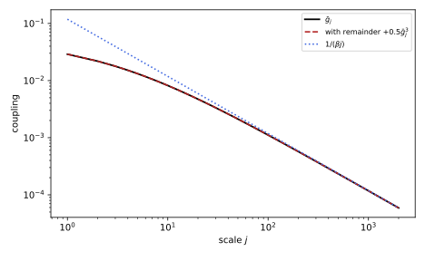
figures/ren-flow-g.sage.
The definition states the structure on which the rigorous method rests. It uses the fact that a Gaussian measure with a sum of covariances is a convolution of Gaussian measures.
Definition 18 (Progressive integration) Let C = \sum_{j = 1}^NC_j be a decomposition of a covariance into positive semi-definite pieces, and E_{C_j}\theta F(\phi) = \int F(\phi + \zeta)P_{C_j}(d\zeta) the convolution with the Gaussian measure of covariance C_j. Since E_{C_2}\theta \circ E_{C_1}\theta = E_{C_1 + C_2}\theta, the integral Z_N = E_C\theta Z_0 of a Boltzmann factor Z_0 = e^{-V_0} can be computed by progressive integration, Z_{j + 1} = E_{C_{j + 1}}\theta Z_j, \qquad j = 0, \dots, N - 1 , each step integrating the fluctuations of one scale. Writing Z_j = e^{-u_j}(e^{-V_j} + K_j) with a local polynomial V_j (couplings g_j, \nu_j) and a remainder K_j, the map (V_j, K_j) \to (V_{j + 1}, K_{j + 1}) is the renormalisation group map (Roland Bauerschmidt and Slade 2019, Cor. 2.1.11, eq. 2.1.21 and Sec. 5.1).
Veriphy. Pending.
Lean. Pending.
Sage. Pending.
The semigroup property of Gaussian convolutions is the identity behind the definition. The first example checks it for a single variable.
Example 105 (Integrating in two steps) For one variable, E_c\theta F(\phi) = \int F(\phi + \zeta)\frac{e^{-\zeta^2/2c}}{\sqrt{2\pi c}}d\zeta. Applying E_{c_1}\theta and then E_{c_2}\theta to F = \phi^4 gives \phi^4 + 6(c_1 + c_2)\phi^2 + 3(c_1 + c_2)^2, the same as E_{c_1 + c_2}\theta\phi^4, because the sum of independent Gaussians is Gaussian with the summed variance (Roland Bauerschmidt and Slade 2019, Prop. 2.1.6 and Cor. 2.1.11). The mass term 6c\phi^2 generated by integrating a scale is the tadpole of the field theory, and the constant 3c^2 the vacuum energy.
Veriphy. Pending.
Lean. Pending.
Sage. Pending.
Integrating a scale shifts the coefficients of a polynomial, and Wick ordering is the change of variables that undoes the shift. The second example computes it.
Example 106 (Wick ordering) By Roland Bauerschmidt and Slade (2019, Def. 2.1.8), :A:_C = e^{-\frac12\Delta_C}A, so :\phi^2:_c = \phi^2 - c and :\phi^4:_c = \phi^4 - 6c\phi^2 + 3c^2, and E_c\theta:A:_c = A. A potential written in Wick-ordered form keeps its coefficients under one integration step at leading order; what changes them is the interaction between different points, the source of the beta function (Exercise 124).
Veriphy. Pending.
Lean. Pending.
Sage. Pending.
The flow of the coupling in four dimensions is the discrete version of Example 99. The third example states its asymptotics.
Example 107 (The flow of the coupling) In the hierarchical model the perturbative flow is \bar g_{j + 1} = \bar g_j - \beta_j\bar g_j^2 with \beta_j = \beta_{00} = (n + 8)(1 - L^{-d}) at zero mass (Roland Bauerschmidt and Slade 2019, eq. 6.1.1 and the following lemma). Then \frac1{\bar g_{j + 1}} = \frac1{\bar g_j} + \beta + O(\bar g_j), so \bar g_j \sim \frac{1}{\beta j} (Roland Bauerschmidt and Slade 2019, Prop. 6.1.3), and a cubic remainder |e_j| \leq M\bar g_j^3 does not change this. The coupling tends to zero, but only like 1/j, that is like 1/\log of the length scale: marginal irrelevance.
Veriphy. Pending.
Lean. Pending.
Sage. Pending.
The main theorem of the method gives the logarithmic corrections in four dimensions, which the flow of the coupling produces. The fourth example states it.
Example 108 (Logarithmic corrections in four dimensions) For the four-dimensional n-component |\phi|^4 model with small g > 0, as \nu \downarrow \nu_c with \varepsilon = \nu - \nu_c, the susceptibility behaves as \chi \sim A_{g,n}\varepsilon^{-1}(\log\varepsilon^{-1})^{(n + 2)/(n + 8)}, and the specific heat as (\log\varepsilon^{-1})^{(4 - n)/(n + 8)} for n < 4 (Roland Bauerschmidt and Slade 2019, Thm. 1.6.1). For n = 1 the exponent of the logarithm is \frac13, and for the self-avoiding walk, n = 0, it is \frac14 (Roland Bauerschmidt and Slade 2019, eq. 1.7.2). The exponent \frac{n + 2}{n + 8} is the ratio of the one-loop coefficients of \gamma_{m^2} and \beta (Exercise 126).
Veriphy. Pending.
Lean. Pending.
Sage. Pending.
The exercises compute Wick ordering with Sage, iterate the flow of the coupling, and derive the exponent of the logarithm. The first checks Example 106.
Exercise 124 (Wick ordering with Sage) Implement e^{\pm\frac12c\,\partial_\phi^2} on polynomials with Sage, compute :\phi^4:_c and :\phi^6:_c, and verify E_c\theta:\phi^6:_c = \phi^6 by integrating against the Gaussian.
On polynomials the exponential is a finite sum, e^{-\frac c2\partial^2}\phi^6 = \phi^6 - 15c\phi^4 + 45c^2\phi^2 - 15c^3, and :\phi^4:_c = \phi^4 - 6c\phi^2 + 3c^2. Convolving with the Gaussian of variance c restores \phi^6:
var('phi c z')
def heat(A, s): # e^(s d^2/2) A as a finite sum
out, term, k = 0, A, 0
while term != 0:
out += (s / 2)^k / factorial(k) * term
term = diff(term, phi, 2); k += 1
return out.expand()
print(":phi^4:_c =", heat(phi^4, -c))
print(":phi^6:_c =", heat(phi^6, -c))
W6 = heat(phi^6, -c)
conv = integrate(W6.subs(phi=phi + z) * exp(-z^2 / (2 * c)) / sqrt(2 * pi * c), z, -oo, oo, algorithm='maxima') if False else heat(W6, c)
print("E_c theta :phi^6:_c =", conv)
assume(c > 0)
direct = integrate(W6.subs(phi=phi + z) * exp(-z^2 / (2 * c)), z, -oo, oo) / sqrt(2 * pi * c)
print("by integration against the Gaussian:", direct.simplify_full().expand())Output:
:phi^4:_c = phi^4 - 6*c*phi^2 + 3*c^2
:phi^6:_c = phi^6 - 15*c*phi^4 + 45*c^2*phi^2 - 15*c^3
E_c theta :phi^6:_c = phi^6
by integration against the Gaussian: phi^6Veriphy. Pending.
Lean. Pending.
Sage. Pending.
The recursion g_{j + 1} = g_j - ag_j^2 + e_j appears in every analysis of a marginal coupling. The second exercise is Roland Bauerschmidt and Slade (2019, Exercise 6.1.1), done numerically.
Exercise 125 (A marginal flow) Iterate g_{j + 1} = g_j - ag_j^2 + Mg_j^3 for a = 9(1 - 2^{-4}), M = 0.5 and g_0 = 0.05 with Sage, check that \frac12g_j < g_{j + 1} < g_j for all steps, and that jg_j \to \frac1a slowly. How slowly?
With a = 8.4375, g_j decreases monotonically and never halves in one step. The product jag_j is 0.939 at j = 100, 0.9989 at j = 10^4 and 1.0000 at j = 10^6; the correction is of relative order \frac{\log j}{j}, from the cubic term, as in the error estimate O(t_j^2|\log t_j|) of Roland Bauerschmidt and Slade (2019, Prop. 6.1.3):
a = 9 * (1 - 2.0^-4); M = 0.5; g = 0.05; ok = True
marks = {100, 10^4, 10^6}
for j in range(1, 10^6 + 1):
gn = g - a * g^2 + M * g^3
ok = ok and (0.5 * g < gn < g)
g = gn
if j in marks:
print("j = %7d: j a g_j = %.4f" % (j, j * a * g))
print("monotone and never halving:", ok)Output:
j = 100: j a g_j = 0.9392
j = 10000: j a g_j = 0.9989
j = 1000000: j a g_j = 1.0000
monotone and never halving: TrueVeriphy. Pending.
Lean. Pending.
Sage. Pending.
The power of the logarithm in the susceptibility comes from the running of the mass along the marginal flow. The third exercise derives it.
Exercise 126 (The exponent of the logarithm) Along the flow \frac{dg}{dl} = -bg^2 with b = \frac{n + 8}{3}, the mass parameter obeys \frac{d\log r}{dl} = 2 - cg with c = \frac{n + 2}{3}. Show that r(l) = r_0e^{2l}(g(l)/g_0)^{c/b}, and deduce that the correlation length, defined by r(l_\xi) = 1, and the susceptibility \chi \propto \xi^2(g(l_\xi)/g_0)^{\dots} acquire powers of \log\varepsilon^{-1} with the exponent \frac{c}{b} = \frac{n + 2}{n + 8}.
\frac{d\log r}{dl} = 2 - cg and dl = -\frac{dg}{bg^2} give \log r = 2l + \frac cb\log g + \text{const}, so r = r_0e^{2l}(g/g_0)^{c/b}. With g(l) \approx \frac{1}{bl}, r(l) \propto \varepsilon e^{2l}l^{-c/b}, and r(l_\xi) = 1 gives e^{2l_\xi} \propto \varepsilon^{-1}l_\xi^{c/b} with l_\xi \approx \frac12\log\varepsilon^{-1}. The susceptibility, which scales like e^{2l_\xi} when the field is not renormalised at one loop, is \chi \propto \varepsilon^{-1}(\log\varepsilon^{-1})^{(n + 2)/(n + 8)}, the exponent of the theorem. For n = 1 it is \frac13, the same power as the relation m^2 \propto \lambda^{1/3} of Exercise 47.
Veriphy. Pending.
Lean. Pending.
Sage. Pending.
Exercises
The first integrative exercise derives the momentum-shell flow of Example 94 from the one-loop graphs. It combines the Wilsonian picture with the counterterm computations of Section 1.3.
Exercise 127 (The flow from the shell) For the O(n) model in four dimensions, integrate out the modes with \Lambda e^{-dl} < |k| < \Lambda at one loop: the tadpole gives \delta m^2 = \frac{n + 2}{6}\lambda\int_{\mathrm{shell}}\frac{d^4k}{(2\pi)^4}\frac{1}{k^2 + m^2} and the bubbles \delta\lambda = -\frac{n + 8}{6}\lambda^2\int_{\mathrm{shell}}\frac{d^4k}{(2\pi)^4}\frac{1}{(k^2 + m^2)^2}. With \int_{\mathrm{shell}}\frac{d^4k}{(2\pi)^4} = \frac{\Lambda^4dl}{8\pi^2}, the rescaling r = m^2/\Lambda^2, g = \lambda/16\pi^2, and the classical terms, derive the flow equations.
\delta m^2 = \frac{n + 2}{6}\lambda\frac{\Lambda^4dl}{8\pi^2(\Lambda^2 + m^2)}, so \delta r = \frac{n + 2}{6}\cdot\frac{16\pi^2g}{8\pi^2}\frac{dl}{1 + r} = \frac{n + 2}{3}\frac{g\,dl}{1 + r}; lowering the cutoff by e^{-dl} and rescaling k multiplies r by e^{2dl}, which adds 2r\,dl. For the coupling, \delta\lambda = -\frac{n + 8}{6}\lambda^2\frac{dl}{8\pi^2(1 + r)^2}, so \delta g = -\frac{n + 8}{3}\frac{g^2dl}{(1 + r)^2}, and in d = 4 - \epsilon the rescaling adds \epsilon g\,dl. These are the equations of Example 94; their coefficients are those of the minimal-subtraction beta function and mass anomalous dimension, because the leading logarithms do not depend on the regulator.
Veriphy. Pending.
Lean. Pending.
Sage. Pending.
The second integrative exercise compares three estimates of the exponent \nu of the two-dimensional Ising model. It uses Exercise 112, Proposition 9 and the exact value.
Exercise 128 (Three estimates of one exponent) Compute \nu for the two-dimensional Ising model from the block-spin map K' = \frac38\log\cosh4K, from the \epsilon expansion at \epsilon = 2 to first and to second order, and compare with \nu = 1. Which method is closest, and why might that be accidental?
Block spin: 0.935; \epsilon expansion: \frac12 + \frac16 = 0.667 at first order and 0.840 at second order; exact 1. The crude block-spin map is closest, because it works in two dimensions directly, but it contains an uncontrolled truncation that cannot be improved systematically, while the \epsilon expansion can be extended (to six loops) and resummed, converging towards the exact value. Agreement of a single number is not evidence for a method:
K = var('K'); M = 3 / 8 * log(cosh(4 * K)); Ks = find_root(M - K, 0.3, 0.8)
nu_block = (log(sqrt(2)) / log(diff(M, K).subs(K=Ks))).n()
n, e = 1, 2
nu1 = 1 / 2 + (n + 2) * e / (4 * (n + 8)); nu2 = nu1 + (n + 2) * (n^2 + 23 * n + 60) * e^2 / (8 * (n + 8)^3)
print("block spin %.3f, epsilon expansion first order %.3f, second order %.3f, exact 1" % (nu_block, nu1, nu2))Output:
block spin 0.935, epsilon expansion first order 0.667, second order 0.840, exact 1Veriphy. Pending.
Lean. Pending.
Sage. Pending.
The third integrative exercise asks what the Wilsonian picture says about the four-dimensional quartic theory as a quantum field theory. It combines Example 99 with Example 82 of Quantum field theory.
Exercise 129 (Triviality) Using \frac{dg}{dl} = -bg^2 in d = 4, show that a renormalised coupling g_R at the scale \mu and a cutoff \Lambda require the bare coupling g_\Lambda = \frac{g_R}{1 - bg_R\log(\Lambda/\mu)}, and that the limit \Lambda \to \infty at fixed positive g_\Lambda forces g_R \to 0. What does this mean for the Higgs sector of the Standard Model?
Integrating from the cutoff down to \mu, \frac1{g_R} = \frac1{g_\Lambda} + b\log\frac\Lambda\mu, so g_R = \frac{g_\Lambda}{1 + bg_\Lambda\log(\Lambda/\mu)} \leq \frac{1}{b\log(\Lambda/\mu)}, and for any bare coupling g_R \to 0 as \Lambda \to \infty: the continuum limit of the quartic theory is free, trivial, as Balduf recalls (Balduf 2024, sec. 3.2.4) and as the rigorous results support. As an effective theory with a finite cutoff it is perfectly good, and the bound turns into an upper bound on the Higgs self-coupling, hence on the Higgs mass, for a given scale \Lambda of new physics.
Veriphy. Pending.
Lean. Pending.
Sage. Pending.
Effective field theories
An effective field theory (Definition 22 of Quantum field theory) describes the physics below a scale \Lambda with the light fields alone and an infinite series of local operators suppressed by powers of \Lambda. The renormalisation group makes this precise: the coefficients run, heavy particles are integrated out at their thresholds, and the effect of a heavy particle on light-particle physics is a change of the couplings plus corrections suppressed by its mass. This part treats the two operations of the method, matching and running, and the decoupling theorem that justifies them (Manohar 2018, secs. 3–5 and 7; Nath 2017, sec. 7.1).
Effective Lagrangians
The coefficients of an effective Lagrangian are fixed by requiring that it reproduce the full theory at low energies. The classic example is light-by-light scattering below the electron mass, where the electron loop becomes a local four-photon interaction. The figure shows how strongly gauge invariance suppresses it, through the dimension of the operator.
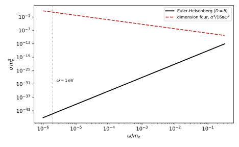
figures/ren-euler-heisenberg.sage.
The definition states the matching condition. It applies at tree level and order by order in loops, and the differences it produces at a threshold are the threshold corrections of Section 1.11.
Definition 19 (Matching) Let a full theory contain light fields and heavy fields of mass M, and let an effective theory of the light fields alone have the Lagrangian \mathcal L_{\mathrm{eff}} = \sum_ic_i(\mu)\mathcal O_i/M^{D_i - 4}. Matching at a scale \mu \sim M fixes the coefficients c_i(\mu) by requiring that the scattering amplitudes of light particles, expanded in p/M, agree in the two theories order by order in the couplings; equivalently, that the one-light-particle-irreducible Green functions agree. Below \mu the effective theory is run with its own renormalisation group, and the changes of the couplings at \mu are the threshold corrections (Manohar 2018, sec. 7.2, eq. 7.9).
Veriphy. Pending.
Lean. Pending.
Sage. Pending.
The simplest matching is at tree level, where the heavy field is eliminated by its equation of motion. The first example recalls Example 86 of Quantum field theory and carries the expansion one step further.
Example 109 (Tree-level matching) For \mathcal L = \frac12(\partial\Phi)^2 - \frac12M^2\Phi^2 - \frac g2\Phi\phi^2 + \dots, the equation of motion (\Box + M^2)\Phi = -\frac g2\phi^2 gives \Phi = -\frac{g}{2M^2}(1 - \frac{\Box}{M^2} + \dots)\phi^2, and substituting, \mathcal L_{\mathrm{eff}} \supset \frac{g^2}{8M^2}\phi^4 - \frac{g^2}{8M^4}\phi^2\Box\phi^2 (Exercise 85 of Quantum field theory). The first term is a renormalisable quartic coupling, the second a dimension-six operator. At momentum p the second is smaller by p^2/M^2, the power counting of Proposition 10.
Veriphy. Pending.
Lean. Pending.
Sage. Pending.
Integrating out a heavy fermion at one loop changes the photon kinetic term and adds a dimension-six operator. The second example gives both, following Manohar (2018, eqs. 7.10-7.12).
Example 110 (A heavy lepton at one loop) In \overline{\mathrm{MS}}, the loop of a lepton of mass m expanded for p^2 \ll m^2 is \Pi(p^2) = \frac{e^2}{2\pi^2}\bigl(\frac16\log\frac{m^2}{\mu^2} - \frac{p^2}{30m^2} + \dots\bigr) in the convention of Definition 12 (Manohar (2018, eq. 7.10) defines \Pi with the opposite sign). The first term multiplies the photon kinetic term by 1 - \Pi(0), and rescaling the field to restore -\frac14F^2 changes the coupling: \frac{1}{e_L^2(\mu)} = \frac{1}{e_H^2(\mu)} - \frac{1}{12\pi^2}\log\frac{m^2}{\mu^2}, a threshold correction that vanishes at \mu = m. The second is a dimension-six operator of coefficient \frac{e^2}{240\pi^2m^2} (Manohar 2018, eq. 7.12); with the conventions of this book it reads -\frac{e^2}{240\pi^2m^2}\partial_\alpha F_{\mu\nu}\partial^\alpha F^{\mu\nu} (Exercise 130), and at low momenta it is the Uehling contact term of Example 63 (Exercise 139).
Veriphy. Pending.
Lean. Pending.
Sage. Pending.
Below the electron mass, photons scatter through the electron loop, and the leading effect is a pair of dimension-eight operators. The third example gives their coefficients, computed by matching.
Example 111 (The Euler-Heisenberg Lagrangian) At energies \omega \ll m_e the effective Lagrangian of photons is -\frac14F^2 + \frac{\alpha^2}{m_e^4}\bigl(c_1(F_{\mu\nu}F^{\mu\nu})^2 + c_2(F_{\mu\nu}\tilde F^{\mu\nu})^2\bigr) + \dots with c_1 = \frac{1}{90} and c_2 = \frac{7}{360}, obtained by matching to the electron box (Manohar 2018, eqs. 4.18 and 4.23). Charge conjugation forbids terms with three field strengths, and gauge invariance terms without them. The cross section \sigma = \frac{15568}{10125}\frac{\alpha^4\omega^6}{16\pi m_e^8} (Manohar 2018, eq. 4.24) is what Figure 22 shows.
Veriphy. Pending.
Lean. Pending.
Sage. Pending.
Effective Lagrangians were first written for hadrons, before the underlying theory was known, by assuming locality, smoothness and the saturation of correlation functions by single particles. The fourth example recalls this construction of Nath (2017, sec. 7.1).
Example 112 (Effective Lagrangians without a full theory) For the \pi, \rho and A_1 mesons, Nath (2017, eqs. 7.10-7.19) writes the most general local Lagrangian with cubic and higher vertices, \mathcal L_I = g\mathcal L_3 + g^2\mathcal L_4 + \dots, and fixes its couplings by requiring the current algebra of the vector and axial currents and the partial conservation of the axial current; the absence of Schwinger terms gives the Weinberg sum rule \frac{g_{A_1}^2}{m_{A_1}^2} = F_\pi^2 + \frac{g_\rho^2}{m_\rho^2} (Nath 2017, eq. 7.29). Here the coefficients are constrained by symmetry and measured, not matched, the other way of determining an effective theory.
Veriphy. Pending.
Lean. Pending.
Sage. Pending.
The exercises expand the vacuum polarisation to obtain the dimension-six operator, check continuity at the threshold, and evaluate the photon-photon cross section. The first uses Sage.
Exercise 130 (The dimension-six operator) Expand \int_0^1x(1 - x)\log\bigl(1 - x(1 - x)\frac{p^2}{m^2}\bigr)dx to order p^4 with Sage, and show that the p^2 term of the renormalised vacuum polarisation corresponds to the operator c\,\partial_\alpha F_{\mu\nu}\partial^\alpha F^{\mu\nu} with c = -\frac{e^2}{240\pi^2m^2}, in the normalisation where the kinetic term is -\frac14F_{\mu\nu}F^{\mu\nu}.
The integral is -\frac{p^2}{30m^2} - \frac{p^4}{280m^4} + \dots, so the renormalised vacuum polarisation of Example 62 is \hat\Pi = \frac{2\alpha}{\pi}(-\frac{p^2}{30m^2}) = -\frac{\alpha}{15\pi}\frac{p^2}{m^2} at this order. The quadratic Lagrangian of the photon is -\frac12A(p^2\eta - pp)A\,(1 - \hat\Pi(p^2)). For plane waves F_{\mu\nu}F^{\mu\nu} is 2A(p^2\eta - pp)A and each derivative pair \partial_\alpha\cdots\partial^\alpha gives p^2, so c\,\partial_\alpha F\partial^\alpha F adds -\frac12A(p^2\eta - pp)A\,(-4cp^2). Matching, -4cp^2 = -\hat\Pi = \frac{\alpha}{15\pi}\frac{p^2}{m^2}, so c = -\frac{\alpha}{60\pi m^2} = -\frac{e^2}{240\pi^2m^2}, the magnitude of Manohar (2018, eq. 7.12):
var('x z alpha m p2 c')
I = taylor(integrate(taylor(x * (1 - x) * log(1 - x * (1 - x) * z), z, 0, 3), x, 0, 1), z, 0, 2)
print("integral:", I)
PiHat = (2 * alpha / pi * I.subs(z=p2 / m^2)).expand()
print("Pi-hat to order p^2:", PiHat.coefficient(p2, 1) * p2)
sol = solve(-4 * c * p2 == -PiHat.coefficient(p2, 1) * p2, c)[0].rhs()
print("c =", sol, " = -e^2/(240 pi^2 m^2) with alpha = e^2/(4 pi):", bool(sol == -(4 * pi * alpha) / (240 * pi^2 * m^2)))Output:
integral: -1/280*z^2 - 1/30*z
Pi-hat to order p^2: -1/15*alpha*p2/(pi*m^2)
c = -1/60*alpha/(pi*m^2) = -e^2/(240 pi^2 m^2) with alpha = e^2/(4 pi): TrueVeriphy. Pending.
Lean. Pending.
Sage. Pending.
The threshold correction of Example 110 depends on \mu, and its \mu dependence must compensate the different running above and below. The second exercise is Manohar (2018, Exercises 7.1 and 7.2).
Exercise 131 (Continuity at the threshold) Assume \frac{1}{e_L^2(\mu)} = \frac{1}{e_H^2(\mu)} + c\log\frac{m^2}{\mu^2}. Find c from the difference of the beta functions of e in the two theories, check that it agrees with -\frac{1}{12\pi^2}, and show that the coupling is continuous if the matching is done at \mu = m.
\mu\frac{d}{d\mu}\frac{1}{e^2} = -\frac{2\beta_e}{e^3}. Above the threshold the lepton contributes \beta_H - \beta_L = \frac{e^3}{12\pi^2}, so \mu\frac{d}{d\mu}(\frac{1}{e_L^2} - \frac{1}{e_H^2}) = \frac{2}{12\pi^2} = \frac{1}{6\pi^2}. The right-hand side gives \mu\frac{d}{d\mu}c\log\frac{m^2}{\mu^2} = -2c, so c = -\frac{1}{12\pi^2}, in agreement. At \mu = m the logarithm vanishes and e_L = e_H: the coupling is continuous at one loop when the matching scale is the mass, though not at two loops.
Veriphy. Pending.
Lean. Pending.
Sage. Pending.
The photon-photon cross section is tiny at optical frequencies, which is why light passes through light unhindered. The third exercise evaluates it.
Exercise 132 (Light scattering light) Evaluate \sigma = \frac{15568}{10125}\frac{\alpha^4\omega^6}{16\pi m_e^8} for \omega = 1\,\mathrm{eV} in \mathrm{cm}^2, and the ratio to the dimension-four estimate \frac{\alpha^4}{16\pi\omega^2}, using \hbar c = 1.973 \times 10^{-5}\,\mathrm{eV\,cm}.
In natural units \sigma = 1.54\cdot\frac{(1/137)^4(1\,\mathrm{eV})^6}{16\pi(0.511 \times 10^6\,\mathrm{eV})^8} = 1.9 \times 10^{-56}\,\mathrm{eV}^{-2}, and multiplying by (\hbar c)^2 = 3.9 \times 10^{-10}\,\mathrm{eV^2cm^2} gives 7 \times 10^{-66}\,\mathrm{cm}^2. The ratio to the naive estimate is 1.54(\omega/m_e)^8 \approx 3 \times 10^{-46}: gauge invariance, through the dimension of the lowest operator, suppresses the process by forty-six orders of magnitude:
al = 1 / 137.035999; me = 0.51099895e6; hc = 1.973269804e-5 # eV, eV cm
w = 1.0
sigma = 15568 / 10125 * al^4 * w^6 / (16 * pi * me^8)
print("sigma = %.3e eV^-2 = %.3e cm^2" % (sigma.n(), (sigma * hc^2).n()))
print("ratio to alpha^4/(16 pi omega^2): %.3e" % (sigma / (al^4 / (16 * pi * w^2))).n())Output:
sigma = 1.866e-56 eV^-2 = 7.265e-66 cm^2
ratio to alpha^4/(16 pi omega^2): 3.307e-46Veriphy. Pending.
Lean. Pending.
Sage. Pending.
The power of p/\Lambda with which an operator contributes is fixed by its dimension, and this remains true at loop level in dimensional regularisation. The proposition states the counting rule that makes effective theories predictive.
Proposition 10 (Power counting in an effective theory) In an effective theory \mathcal L = \mathcal L_{D \leq 4} + \sum_{D > 4}\mathcal L_D/\Lambda^{D - 4} in four dimensions, renormalised with dimensional regularisation and a mass-independent scheme, a graph with insertions of operators of dimensions D_i contributes to an amplitude at momenta of order p as (p/\Lambda)^n with n = \sum_i(D_i - 4), at tree level and at any number of loops. Consequently, to accuracy (p/\Lambda)^N only operators with \sum(D_i - 4) \leq N contribute, finitely many, and the divergences of graphs with insertions are absorbed by counterterms of dimension 4 + n (Manohar 2018, eqs. 4.15-4.17 and Sec. 5.3).
Veriphy. Pending.
Lean. Pending.
Sage. Pending.
Proof (outline). At tree level the coefficient of the operator carries \Lambda^{4 - D_i}, and the amplitude, of fixed mass dimension, makes up the difference with powers of p. In a loop, dimensional regularisation introduces no other scale: the loop integral of massless lines produces only powers of the external momenta and of light masses, and logarithms, never powers of a cutoff, so the counting survives. Divergences are local polynomials of the dimension of the graph, 4 + n. \square
Light-by-light scattering is the cleanest application. The first example shows how the counting gives the energy dependence without a computation.
Example 113 (The energy dependence of light-by-light scattering) The lowest operators have D = 8, so the amplitude is of order (\omega/m_e)^4 times \alpha^2, and the cross section, of dimension -2, is \sigma \sim \frac{\alpha^4}{16\pi}\frac{\omega^6}{m_e^8}: the power \omega^6 follows from n = 4 and dimensional analysis alone (Manohar 2018, eqs. 4.19-4.21). The exact coefficient \frac{15568}{10125} \approx 1.5 shows that the estimate, including the \frac{1}{16\pi} of phase space, is good to a factor of two.
Veriphy. Pending.
Lean. Pending.
Sage. Pending.
Two insertions of a dimension-six operator in a loop produce a divergence that only a dimension-eight operator can absorb. The second example explains why effective theories need all operators.
Example 114 (Why every operator is needed) A one-loop graph with two insertions of \mathcal L_6 has n = 4 and is in general divergent; its counterterm is an operator of dimension eight (Manohar 2018, sec. 4.2). Even if c_8 = 0 at one scale, its running makes it non-zero at another, so the effective Lagrangian contains all operators allowed by symmetry, each multiplied by its power of 1/\Lambda. This is the non-renormalisability of Definition 6 seen as a feature: at any finite order in p/\Lambda only finitely many parameters appear.
Veriphy. Pending.
Lean. Pending.
Sage. Pending.
In dimensional regularisation a scalar mass receives no correction proportional to a cutoff squared. The third example reconsiders the naturalness problem in this light, as Manohar (2018, sec. 5.2) does.
Example 115 (Quadratic divergences and naturalness) The one-loop mass correction of a scalar in \overline{\mathrm{MS}} is \frac{\lambda m^2}{32\pi^2}(\log\frac{m^2}{\mu^2} - 1) (Proposition 2), proportional to m^2, with no \Lambda^2 (Manohar 2018, eq. 5.15). The naturalness problem reappears when the scalar couples to a heavy particle of mass M: matching at \mu \sim M gives a threshold correction \delta m^2 \propto \frac{g^2}{16\pi^2}M^2 to the light mass, and keeping m \ll M requires a cancellation between it and the parameter of the full theory. The quadratic divergence of a cutoff (Example 80 of Quantum field theory) is a stand-in for this sensitivity to heavy scales.
Veriphy. Pending.
Lean. Pending.
Sage. Pending.
The exercises apply the counting rule to several insertions, to the Fermi theory and to a scalar mass. The first is a classification of insertions by order.
Exercise 133 (Which operators at which order) In an effective theory with operators of dimensions 5, 6, 7, 8, list all combinations of insertions that contribute at relative order (p/\Lambda)^2 and (p/\Lambda)^3.
n = \sum(D_i - 4). Order 2: one \mathcal L_6, or two \mathcal L_5. Order 3: one \mathcal L_7, one \mathcal L_6 with one \mathcal L_5, or three \mathcal L_5. Each combination can appear at tree level or in loops, and the loops of a given combination contribute at the same order up to logarithms, which is the content of the proposition.
Veriphy. Pending.
Lean. Pending.
Sage. Pending.
The Fermi theory is the textbook effective theory, and the counting rule organises its loop corrections. The second exercise applies it.
Exercise 134 (Loops in the Fermi theory) With the four-fermion operator of dimension six and coefficient G_F, at what relative order in p^2/M_W^2 do the one-loop graph with two Fermi vertices and the tree graph with one dimension-eight operator contribute? Why must the two be considered together?
Two insertions of dimension six give n = 4, and the dimension-eight tree graph also has n = 4: both are of order G_F^2p^4, that is (p^2/M_W^2)^2 relative to the leading term up to couplings. The one-loop graph is divergent, and its divergence is absorbed by the coefficient of the dimension-eight operator, so only their sum is finite and scheme independent, as for any pair of graph and counterterm.
Veriphy. Pending.
Lean. Pending.
Sage. Pending.
The mass correction of the quartic theory in the minimal scheme is the formula behind Example 115. The third exercise is Manohar (2018, Exercise 5.2).
Exercise 135 (The scalar mass in minimal subtraction) Compute the one-loop correction to the mass of a real scalar with interaction -\frac{\lambda}{4!}\phi^4 in \overline{\mathrm{MS}} and show that it is of the form \lambda m^2(\log\frac{m^2}{\mu^2} + \text{const}). Then add a heavy scalar \Phi of mass M with the coupling -\frac\kappa4\phi^2\Phi^2, and compute the correction of the \Phi loop to the light mass.
From Proposition 2, \delta m^2 = \frac{\lambda m^2}{32\pi^2}(\log\frac{m^2}{\mu^2} - 1). The heavy loop is a tadpole of the heavy field with the vertex -i\kappa (the factor \frac14 cancels against the 2 \cdot 2 ways of attaching the lines) and symmetry factor \frac12: \delta m^2 = \frac\kappa2\mu^\epsilon T(M^2) = \frac{\kappa M^2}{32\pi^2}(\log\frac{M^2}{\mu^2} - 1) after subtraction. At \mu \sim M it is of order \frac{\kappa M^2}{32\pi^2}, quadratic in the heavy mass: in the minimal scheme heavy particles do not decouple from scalar masses, and the light mass is natural only if \kappa M^2 \lesssim 32\pi^2m^2.
Veriphy. Pending.
Lean. Pending.
Sage. Pending.
Decoupling
A heavy particle should not matter at energies far below its mass. In a physical scheme this is a theorem; in the minimal scheme it is not automatic, and the effective theory restores it by matching. The figure shows the two descriptions of the electromagnetic coupling across the lepton thresholds.
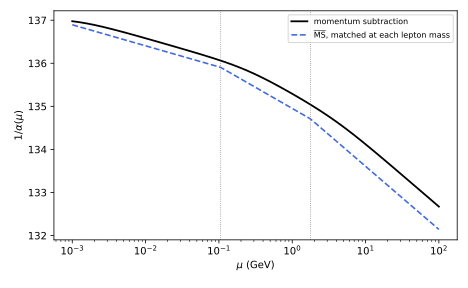
figures/ren-decoupling.sage.
The theorem states decoupling in the form in which it is used. Its hypothesis that the heavy couplings stay fixed as the mass grows is essential.
Theorem 4 (The decoupling theorem) Let a renormalisable theory contain a heavy particle of mass M, with couplings that stay fixed as M \to \infty, and renormalise it in a mass-dependent scheme such as momentum subtraction. Then the Green functions of the light fields at momenta p \ll M are equal to those of the renormalisable theory without the heavy particle, with suitably defined couplings, up to corrections of order p^2/M^2 (Appelquist and Carazzone). In a mass-independent scheme the same holds for the effective theory obtained by matching at \mu \sim M, with the threshold corrections of Definition 19.
Veriphy. Pending.
Lean. Pending.
Sage. Pending.
In the momentum-subtraction scheme the contribution of a heavy fermion to the beta function switches off below its mass. The first example quantifies this.
Example 116 (Decoupling in momentum subtraction) With the subtraction at p^2 = -\mu_M^2, the lepton loop contributes \beta = \frac{e^3}{2\pi^2}\int_0^1dx\frac{x^2(1 - x)^2\mu_M^2}{m^2 + x(1 - x)\mu_M^2}, which is \frac{e^3}{12\pi^2} for \mu_M \gg m and \frac{e^3\mu_M^2}{60\pi^2m^2} \to 0 for \mu_M \ll m (Manohar 2018, eqs. 7.3-7.5). The heavy particle drops out of the running below its mass, without any decision on our part, but the beta function now depends on m/\mu and must be recomputed for every spectrum (Example 78).
Veriphy. Pending.
Lean. Pending.
Sage. Pending.
In the minimal scheme the beta function does not see masses, and the logarithms of the heavy mass appear in the amplitudes instead. The second example shows the problem and the effective-theory remedy.
Example 117 (Non-decoupling in the minimal scheme) In \overline{\mathrm{MS}} the lepton contributes \frac{e^3}{12\pi^2} to the beta function at every \mu, and at low momenta its loop leaves the finite term \Pi(0) = \frac{e^2}{12\pi^2}\log\frac{m^2}{\mu^2}, large for \mu \ll m (Manohar 2018, eqs. 7.6-7.8). The two defects cancel each other in physical quantities but spoil perturbation theory. The remedy is to use the full theory above \mu = m and the theory without the lepton below, matched by the threshold correction of Example 110: then the running below m is that of the light particles, and no large logarithm of m/\mu appears (Figure 23).
Veriphy. Pending.
Lean. Pending.
Sage. Pending.
In quantum chromodynamics the same procedure is applied at each quark mass. The third example evaluates the change of the beta function at the top quark.
Example 118 (The top-quark threshold) Above m_t there are six flavours and b_0 = 11 - \frac23\cdot6 = 7; below, five and b_0 = \frac{23}{3}. In the effective-theory description the coupling \alpha_s is continuous at \mu = m_t at one loop, and its slope changes: \frac{1}{\alpha_s} grows by \frac{7}{2\pi} per unit of \log\mu above the threshold and by \frac{23}{6\pi} below. Between M_Z and 1\,\mathrm{TeV} the difference between the two treatments is a few per mille (Exercise 137). At two loops the matching condition has a constant, and \alpha_s jumps at the threshold, by an amount that Grozin (2005, sec. 7.5) computes.
Veriphy. Pending.
Lean. Pending.
Sage. Pending.
The hypothesis of the theorem excludes heavy particles whose mass comes from a large coupling. The fourth example explains the exception qualitatively.
Example 119 (When heavy particles do not decouple) If a fermion acquires its mass from a Yukawa coupling to a scalar with a fixed vacuum value v, M = yv, then M \to \infty at fixed v means y \to \infty, and the couplings are not fixed: loops of the heavy fermion can produce effects that grow with M instead of falling, and removing one member of an anomaly-free set of fermions leaves an anomalous low-energy theory whose consistency requires extra terms (Definition 23 of Quantum field theory). The theorem therefore applies to heavy particles whose masses are independent of their couplings, such as the vector-like masses of Section 1.11.
Veriphy. Pending.
Lean. Pending.
Sage. Pending.
The exercises evaluate the decoupling function, run the strong coupling through the top threshold, and compare the two schemes for the electromagnetic coupling. The first uses Sage.
Exercise 136 (The decoupling function) Compute the lepton contribution to the momentum-subtraction beta function, in units of \frac{e^3}{12\pi^2}, for \mu_M/m = 0.1, 1, 10, 100, and confirm the limit \frac{\mu_M^2}{5m^2} for small \mu_M.
In these units the function is 6\int_0^1\frac{x^2(1 - x)^2z^2}{1 + x(1 - x)z^2}dx with z = \mu_M/m, the function of Exercise 94: 0.0020, 0.165, 0.945 and 0.9994. At z = 0.1 the small-z form z^2/5 = 0.0020 agrees, and the approach to 1 is slow, a heavy particle switching off over a decade of \mu:
x = var('x')
f = lambda z: 6 * numerical_integral(x^2 * (1 - x)^2 * z^2 / (1 + x * (1 - x) * z^2), 0, 1)[0]
for z in [0.1, 1, 10, 100]:
print("mu_M/m = %-5s: %.4f" % (z, f(z)), " z^2/5 = %.4f" % (z^2 / 5) if z < 1 else "")Output:
mu_M/m = 0.100000000000000: 0.0020 z^2/5 = 0.0020
mu_M/m = 1 : 0.1649
mu_M/m = 10 : 0.9454
mu_M/m = 100 : 0.9994Veriphy. Pending.
Lean. Pending.
Sage. Pending.
The top quark is the only quark heavier than the Z, so it affects the running of \alpha_s between M_Z and the TeV scale. The second exercise computes the effect.
Exercise 137 (Running through the top threshold) From \alpha_s(M_Z) = 0.118, run at one loop to 1\,\mathrm{TeV} with five flavours throughout, and with five flavours up to m_t = 172.5\,\mathrm{GeV} and six above, \alpha_s continuous at m_t. Compare.
With five flavours, \frac{1}{\alpha_s(1\,\mathrm{TeV})} = \frac{1}{0.118} + \frac{23/3}{2\pi}\log\frac{1000}{91.19} = 11.397, \alpha_s = 0.0877. With the threshold, \frac{1}{\alpha_s(m_t)} = 8.475 + \frac{23/3}{2\pi}\log\frac{172.5}{91.19} = 9.252 and then +\frac{7}{2\pi}\log\frac{1000}{172.5} = 11.211, \alpha_s = 0.0892, about 2\% larger: the sixth flavour screens less than it would if it were massless all the way down:
MZ, mt, mu = 91.1876, 172.5, 1000.0
inv5 = 1 / 0.118 + (23 / 3) / (2 * pi) * log(mu / MZ)
inv_t = 1 / 0.118 + (23 / 3) / (2 * pi) * log(mt / MZ)
inv6 = inv_t + 7 / (2 * pi) * log(mu / mt)
print("five flavours: 1/alpha_s(1 TeV) = %.3f, alpha_s = %.4f" % (inv5.n(), (1 / inv5).n()))
print("with threshold: 1/alpha_s(m_t) = %.3f, 1/alpha_s(1 TeV) = %.3f, alpha_s = %.4f (%.1f%% larger)" % (inv_t.n(), inv6.n(), (1 / inv6).n(), (100 * (inv5 / inv6 - 1)).n()))Output:
five flavours: 1/alpha_s(1 TeV) = 11.397, alpha_s = 0.0877
with threshold: 1/alpha_s(m_t) = 9.252, 1/alpha_s(1 TeV) = 11.210, alpha_s = 0.0892 (1.7% larger)Veriphy. Pending.
Lean. Pending.
Sage. Pending.
The momentum-subtraction and the matched minimal descriptions of the same physics differ by finite amounts near the thresholds. The third exercise computes the largest difference for the electron.
Exercise 138 (Two descriptions of one threshold) With the electron alone, compare \alpha^{-1}_{\mathrm{MOM}}(\mu) = \alpha^{-1} - \frac2\pi\int_0^1x(1 - x)\log(1 + x(1 - x)\mu^2/m^2)dx with the matched \overline{\mathrm{MS}} coupling, \alpha^{-1} for \mu < m and \alpha^{-1} - \frac{2}{3\pi}\log\frac\mu m above, at \mu = m and \mu = 100m. Why do they differ at large \mu?
At \mu = m the momentum-subtraction coupling has \frac2\pi\int x(1 - x)\log(1 + x(1 - x)) = 0.019, while the matched minimal one has not started running; at \mu = 100m the two differ by \frac{5}{9\pi} = 0.177, the constant scheme difference of Exercise 57. The two are different parametrisations; physical amplitudes computed with either agree, and the difference is absorbed by the finite parts of the amplitudes.
Veriphy. Pending.
Lean. Pending.
Sage. Pending.
Exercises
The first integrative exercise checks that the dimension-six operator of the effective theory reproduces the Uehling term of quantum electrodynamics. It combines Example 110 with Example 63.
Exercise 139 (The Uehling term as an operator) Show that the operator -c'\partial_\alpha F_{\mu\nu}\partial^\alpha F^{\mu\nu} with c' = \frac{e^2}{240\pi^2m^2} modifies the potential between two static charges Q_1, Q_2 by a contact term, and that for an electron and a proton the term is -\frac{4\alpha^2}{15m^2}\delta^3(\vec r).
For static fields F_{0i} = -\partial_iA_0, F_{\mu\nu}F^{\mu\nu} = -2(\nabla A_0)^2 and \partial_\alpha F_{\mu\nu}\partial^\alpha F^{\mu\nu} = 2(\partial_i\partial_jA_0)^2, so the Lagrangian of A_0 is \frac12(\nabla A_0)^2 - 2c'(\partial_i\partial_jA_0)^2 - \rho A_0. In momentum space the field equation is (\vec q^{\,2} - 4c'\vec q^{\,4})A_0 = \rho, so A_0 \approx \frac{\rho}{\vec q^{\,2}}(1 + 4c'\vec q^{\,2}), and the interaction energy is Q_1Q_2(\frac{1}{\vec q^{\,2}} + 4c'). For Q_1Q_2 = -e^2 the extra term is -4c'e^2 = -\frac{e^4}{60\pi^2m^2} = -\frac{4\alpha^2}{15m^2}, a contact term -\frac{4\alpha^2}{15m^2}\delta^3(\vec r): the Uehling term of Example 63, now obtained from the effective Lagrangian. The negative sign of the operator is what makes it attractive.
Veriphy. Pending.
Lean. Pending.
Sage. Pending.
The second integrative exercise extracts a heavy mass from a low-energy measurement, the oldest use of effective theories. It combines Definition 19 with Example 85 of Quantum field theory.
Exercise 140 (The W mass from beta decay) The tree-level matching of Example 85 of Quantum field theory gives \frac{G_F}{\sqrt2} = \frac{g^2}{8M_W^2}. With G_F = 1.1664 \times 10^{-5}\,\mathrm{GeV}^{-2} and g = 0.65, compute M_W with Sage, and estimate the size of the dimension-eight correction to muon decay, whose momentum transfer is at most m_\mu.
M_W = \sqrt{\frac{\sqrt2g^2}{8G_F}} = 80.0\,\mathrm{GeV}, close to the measured 80.4\,\mathrm{GeV}; the difference is the effect of loops and of the running of g. The next operator is suppressed by m_\mu^2/M_W^2 \approx 1.7 \times 10^{-6}, so the Fermi theory describes muon decay to a few parts in a million at tree level, and the W was predicted long before it was produced:
GF, g, mmu, MWexp = 1.1664e-5, 0.65, 0.10566, 80.4
MW = sqrt(sqrt(2) * g^2 / (8 * GF))
print("M_W = %.2f GeV (measured %.1f GeV)" % (MW.n(), MWexp))
print("m_mu^2/M_W^2 = %.2e" % (mmu^2 / MWexp^2))Output:
M_W = 80.02 GeV (measured 80.4 GeV)
m_mu^2/M_W^2 = 1.73e-06Veriphy. Pending.
Lean. Pending.
Sage. Pending.
The third integrative exercise applies matching and running to a light scalar coupled to a heavy one. It combines Example 109 with Proposition 2 and Theorem 4.
Exercise 141 (Match, then run) For the theory of Example 109 with \lambda = 0 above M, the effective quartic coupling at \mu = M is \lambda_{\mathrm{eff}} = -\frac{3g^2}{M^2}. Run it down to \mu = M/100 with the one-loop beta function of the effective theory. Why is the sign of \lambda_{\mathrm{eff}} a problem, and what in the full theory cures it?
\frac{1}{\lambda(\mu)} = \frac{1}{\lambda_{\mathrm{eff}}} - \frac{3}{16\pi^2}\log\frac{\mu}{M}; with \lambda_{\mathrm{eff}} < 0 the coupling becomes less negative towards the infrared, since \frac{3}{16\pi^2}\log100 = 0.087 adds to \frac{1}{|\lambda_{\mathrm{eff}}|} in magnitude. A negative quartic coupling makes the effective potential unbounded below at large \phi, but the effective theory holds only for \phi \ll M/\sqrt g; there the full potential, with \Phi included, is bounded if the couplings of the full theory are. An instability of an effective potential beyond its range of validity is not an instability of the theory.
Veriphy. Pending.
Lean. Pending.
Sage. Pending.
Renormalisation in higher dimensions
Fields that live in more than four dimensions behave differently under renormalisation in three ways. Their couplings have negative mass dimension, so the theories are non-renormalisable and become strongly coupled at a finite energy. When the extra dimensions are compact, each field is a tower of four-dimensional fields with masses spaced by the inverse radius, and in loops the whole tower contributes, which changes logarithmic running into a power law. And the vacuum energy depends on the size of the compact space, a finite, regulator-independent effect that acts as a potential for the radius. This part treats the three in turn, with the threshold corrections that connect the four-dimensional description to the higher-dimensional one (Dienes et al. 1999, secs. 2–3 and Appendix A; Pontón and Poppitz 2001, secs. 2.2–2.4).
Non-renormalisability above four dimensions
In D = 4 + \delta dimensions the gauge coupling has mass dimension -\delta/2 and Newton’s constant dimension -2 - \delta (Example 25). Power counting then admits infinitely many counterterms, and the theory is predictive only as an effective theory below some scale. The figure shows where perturbation theory breaks down for a gauge theory compactified on \delta circles of radius R, with a four-dimensional coupling of the size of the unified coupling.
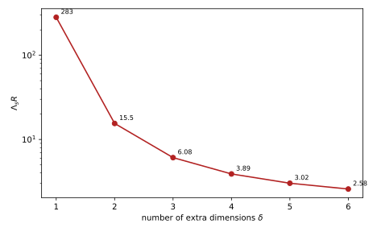
figures/ren-strong-coupling.sage.
The definition gives the scale. It is an estimate by naive dimensional analysis: the loop factor counts the phase space of one loop in D dimensions.
Definition 20 (Strong-coupling scale) For a gauge theory in D = 4 + \delta dimensions with coupling g_D^2 of mass dimension -\delta, the dimensionless strength of the interaction at energy E is \frac{g_D^2E^\delta}{\ell_D}, with the loop factor \ell_D = (4\pi)^{D/2}\Gamma(D/2). The strong-coupling scale \Lambda_s is the energy at which it equals one, \Lambda_s = \Bigl(\frac{\ell_D}{g_D^2}\Bigr)^{1/\delta} ; above \Lambda_s the loop expansion fails and the higher-dimensional theory must be replaced by a more complete one. On a torus of volume (2\pi R)^\delta the zero modes have g_4^2 = g_D^2/(2\pi R)^\delta.
Veriphy. Pending.
Lean. Pending.
Sage. Pending.
With one extra dimension the scale was estimated in Exercise 28. The first example repeats it in the language of the definition.
Example 120 (One extra dimension) For \delta = 1, \ell_5 = (4\pi)^{5/2}\Gamma(\frac52) = 24\pi^3, and \Lambda_s = \frac{24\pi^3}{g_5^2} = \frac{24\pi^3}{2\pi Rg_4^2} = \frac{12\pi^2}{g_4^2R}. With \alpha_4 = \frac{1}{30}, g_4^2 = 0.419 and \Lambda_sR = 283: about 280 Kaluza-Klein levels can be treated perturbatively before the five-dimensional theory becomes strong. At that scale the effective strength summed over the levels below it is of order one, the same statement seen from four dimensions (Example 93 of Quantum field theory).
Veriphy. Pending.
Lean. Pending.
Sage. Pending.
Gravity is non-renormalisable in every dimension above two, and in higher dimensions its strength is set by a fundamental scale M_D smaller than the four-dimensional Planck mass. The second example uses the relation between the two, as Arkani-Hamed et al. (1998, sec. 1) does.
Example 121 (Gravity in higher dimensions) With \delta compact dimensions of size R, Gauss’s law gives M_{\mathrm{Pl}}^2 \sim M_D^{2 + \delta}R^\delta (Arkani-Hamed et al. 1998, sec. 1): the four-dimensional gravitational coupling is weak because the field lines spread into the extra volume. For M_D \sim 1\,\mathrm{TeV} and \delta = 2, R \sim M_{\mathrm{Pl}}/M_D^2 \sim 10^{13}\,\mathrm{GeV}^{-1}, about two millimetres. The strong-coupling scale of gravity is then M_D, the effective theory of gravity holds below it, and quantum gravity effects could appear at a TeV (Exercise 143).
Veriphy. Pending.
Lean. Pending.
Sage. Pending.
In dimensional regularisation a theory in odd dimensions has no logarithmic divergences at one loop. The third example explains this through the heat kernel.
Example 122 (No logarithms in odd dimensions) By Proposition 1 the logarithmic divergence of a one-loop effective action in n dimensions is the heat coefficient a_n, and on a manifold without boundary the coefficients with odd index vanish. In D = 5 the one-loop effective action of a gauge field therefore has no logarithmic divergence, and dimensional regularisation, which sees only logarithms, finds it finite; a cutoff finds power divergences, \Lambda^5, \Lambda^3 and \Lambda, the last renormalising 1/g_5^2 (Exercise 144). The finiteness is an artefact of the regulator: the dependence on \Lambda is replaced by a dependence on the scale where the theory must be completed.
Veriphy. Pending.
Lean. Pending.
Sage. Pending.
The exercises tabulate the strong-coupling scale, evaluate the sizes of large extra dimensions, and compute the linear divergence of a five-dimensional loop. The first uses Sage.
Exercise 142 (The strong-coupling scale for several dimensions) Compute \Lambda_sR for \delta = 1, \dots, 6 with \alpha_4 = \frac{1}{30}, using g_D^2 = (2\pi R)^\delta g_4^2.
\Lambda_sR = (\ell_D/(g_4^2(2\pi)^\delta))^{1/\delta} gives 283, 15.5, 6.1, 3.9, 3.0 and 2.6 for \delta = 1, \dots, 6. In six extra dimensions, the number relevant for ten-dimensional theories, the perturbative window above the compactification scale is a factor of about three:
g4sq = 4 * pi / 30
for d in range(1, 7):
D = 4 + d; ell = (4 * pi)^(D / 2) * gamma(D / 2)
print("delta = %d: loop factor %.4g, Lambda_s R = %.3g" % (d, ell.n(), ((ell / (g4sq * (2 * pi)^d))^(1 / d)).n()))Output:
delta = 1: loop factor 744.2, Lambda_s R = 283
delta = 2: loop factor 3969, Lambda_s R = 15.5
delta = 3: loop factor 2.338e+04, Lambda_s R = 6.08
delta = 4: loop factor 1.496e+05, Lambda_s R = 3.89
delta = 5: loop factor 1.028e+06, Lambda_s R = 3.02
delta = 6: loop factor 7.521e+06, Lambda_s R = 2.58Veriphy. Pending.
Lean. Pending.
Sage. Pending.
The relation of Example 121 fixes the radius once the fundamental scale M_D and the number of dimensions are chosen. The second exercise evaluates it and confronts it with tests of Newton’s law.
Exercise 143 (Sizes of large extra dimensions) With M_{\mathrm{Pl}} = 1.2 \times 10^{19}\,\mathrm{GeV}, M_D = 1\,\mathrm{TeV} and R = (M_{\mathrm{Pl}}^2/M_D^{2 + \delta})^{1/\delta}, compute R in metres for \delta = 1, 2, 6 (1\,\mathrm{GeV}^{-1} = 1.97 \times 10^{-16}\,\mathrm{m}). Which values are excluded by the observation that Newton’s law holds at the scale of the solar system?
M_{\mathrm{Pl}}^2/M_D^2 = 1.44 \times 10^{32}, so R = (1.44 \times 10^{32})^{1/\delta}/M_D: for \delta = 1, 1.44 \times 10^{29}\,\mathrm{GeV}^{-1} = 3 \times 10^{13}\,\mathrm{m}, the size of the solar system, excluded; for \delta = 2, 1.2 \times 10^{13}\,\mathrm{GeV}^{-1} = 2\,\mathrm{mm}, at the edge of torsion-balance tests; for \delta = 6, 2.3 \times 10^2\,\mathrm{GeV}^{-1} = 5 \times 10^{-14}\,\mathrm{m}, invisible to gravity experiments. The relation holds up to factors of 2\pi that depend on the normalisation of M_D (Arkani-Hamed et al. 1998, sec. 1).
Veriphy. Pending.
Lean. Pending.
Sage. Pending.
The linear divergence of a five-dimensional loop is the higher-dimensional face of power-law running. The third exercise computes its coefficient with a cutoff.
Exercise 144 (A linear divergence) Compute \int_{|k| < \Lambda}\frac{d^5k}{(2\pi)^5}\frac{1}{(k^2)^2} in five Euclidean dimensions and explain why a one-loop correction to 1/g_5^2 is proportional to \Lambda. What does dimensional regularisation give?
With the area \frac{8\pi^2}{3} of the unit four-sphere, the integral is \frac{8\pi^2}{3(2\pi)^5}\int_{\mu}^\Lambda\frac{k^4dk}{k^4} = \frac{\Lambda - \mu}{12\pi^3} with an infrared cutoff \mu. The vacuum polarisation at zero momentum has this form, so \delta(\frac{1}{g_5^2}) \propto \frac{\Lambda}{12\pi^3}, a linear divergence; reduced on a circle, \frac{1}{g_4^2} = \frac{2\pi R}{g_5^2} acquires a correction \propto R\Lambda, the number of Kaluza-Klein levels below \Lambda. Dimensional regularisation sets the scaleless integral to zero, and the linear dependence reappears as the dependence on the scale at which the theory is matched to its completion (Proposition 11).
Veriphy. Pending.
Lean. Pending.
Sage. Pending.
The Kaluza-Klein tower in loops
On a circle of radius R a five-dimensional field is a tower of four-dimensional fields of masses |n|/R. At an energy E the number of light levels grows like ER, and every level contributes to a loop like an ordinary particle of its mass. The figure shows the result for the gauge couplings of the supersymmetric Standard Model with the gauge and Higgs fields in one extra dimension.
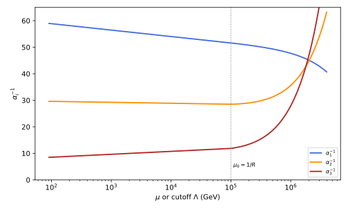
figures/ren-power-law.sage.
Interactive figure (drag to rotate or zoom); the static version is above.
The proposition gives the one-loop gauge couplings with the whole tower. It is phrased, as by Dienes et al. (1999), as a dependence on the cutoff \Lambda of the higher-dimensional theory rather than as a running.
Proposition 11 (Power-law running) Let \delta extra dimensions of radius R = 1/\mu_0 carry Kaluza-Klein towers whose levels contribute \tilde b_i to the one-loop coefficients, while the zero modes contribute b_i. Then for \Lambda \geq \mu_0 \alpha_i^{-1}(\Lambda) = \alpha_i^{-1}(\mu_0) - \frac{b_i - \tilde b_i}{2\pi}\log\frac{\Lambda}{\mu_0} - \frac{\tilde b_iX_\delta}{2\pi\delta}\Bigl[\Bigl(\frac{\Lambda}{\mu_0}\Bigr)^\delta - 1\Bigr], \qquad X_\delta = \frac{\pi^{\delta/2}}{\Gamma(1 + \delta/2)} , where X_\delta is the volume of the unit ball in \delta dimensions and the number of levels with mass below \mu is X_\delta(\mu R)^\delta for \mu R \gg 1. The formula follows from the proper-time representation of the vacuum polarisation with the sum over levels, \sum_ne^{-tn^2/R^2} = \vartheta_3(\frac{it}{\pi R^2})^\delta, and the Poisson formula \vartheta_3(\frac{it}{\pi R^2}) = R\sqrt{\pi/t}\,(1 + O(e^{-\pi^2R^2/t})) (Dienes et al. 1999, eqs. 3.8-3.13 and A.9-A.15).
Veriphy. Pending.
Lean. Pending.
Sage. Pending.
Proof (outline). With a proper time t, each level of mass m_n contributes to the vacuum polarisation at zero momentum \propto\int\frac{dt}{t}e^{-tm_n^2}, and the sum over the levels of a \delta-torus is \sum_{\vec n}e^{-t\vec n^{\,2}/R^2} = \vartheta_3^\delta (Dienes et al. 1999, eq. A.13). For t \gg R^2 only the zero mode survives and the integral gives the logarithm of four dimensions; for t \ll R^2 the Poisson formula gives (\pi R^2/t)^{\delta/2}, and \int_{\Lambda^{-2}}\frac{dt}{t}t^{-\delta/2} \propto \Lambda^\delta/\delta. With the cutoffs normalised so that the number of levels below \Lambda is X_\delta(\Lambda R)^\delta (Dienes et al. 1999, eqs. 3.10 and A.15), the coefficient is \frac{\tilde b_iX_\delta}{2\pi\delta}; the term b_i - \tilde b_i corrects for the zero modes, which differ from the excited levels. \square
The factor X_\delta counts the levels below a scale. The first example checks it against the count of lattice points of Exercise 91 of Quantum field theory.
Example 123 (Counting the levels) On a torus the levels are labelled by \vec n \in \mathbb Z^\delta with masses |\vec n|/R, and those below \mu are the lattice points in a ball of radius \mu R, about X_\delta(\mu R)^\delta: 2\mu R for \delta = 1, \pi(\mu R)^2 for \delta = 2 (the count 317 for \mu R = 10 against 314 in Exercise 91 of Quantum field theory), \frac43\pi(\mu R)^3 for \delta = 3. The derivative of the count with respect to \log\mu is \delta X_\delta(\mu R)^\delta, the effective number of particles contributing to the running at \mu, which is why the beta function grows like \mu^\delta.
Veriphy. Pending.
Lean. Pending.
Sage. Pending.
The theta function interpolates between four-dimensional and higher-dimensional behaviour, depending on the proper time. The second example evaluates the two limits.
Example 124 (Four dimensions and 4 + \delta dimensions in one function) For \delta = 1, \sum_ne^{-tn^2/R^2} is 1 + 2e^{-t/R^2} + \dots \to 1 for t \gg R^2, the zero mode alone, and R\sqrt{\pi/t}(1 + 2e^{-\pi^2R^2/t} + \dots) for t \ll R^2, the heat kernel of a five-dimensional field restricted to the circle, by the Poisson formula of Figure 3. Long proper times are long distances, where the circle is invisible; short proper times are short distances, where the circle looks like a line. The crossover is at t \sim R^2, that is at energies \mu \sim 1/R.
Veriphy. Pending.
Lean. Pending.
Sage. Pending.
With the minimal supersymmetric model and one extra dimension the three couplings approach each other quickly above \mu_0. The third example reads off Figure 25, following Dienes et al. (1999, sec. 3).
Example 125 (Unification at intermediate scales) With \alpha_i^{-1}(M_Z) = (58.97, 29.61, 8.5) (with \alpha_1 = \frac53\alpha_Y), b_i = (\frac{33}{5}, 1, -3) and \tilde b_i = (\frac35, -3, -6) for the towers of the gauge and Higgs multiplets (Dienes et al. 1999, eqs. 3.3-3.4 and 3.9), \alpha_1 and \alpha_2 meet at \Lambda = 20\mu_0 for \mu_0 = 10^5\,\mathrm{GeV}, with \alpha^{-1} = 45.1 and \alpha_3^{-1} = 47.4; for \mu_0 = 10^{11}\,\mathrm{GeV} they meet at 9.8\mu_0 with \alpha^{-1} = 33.3 and \alpha_3^{-1} = 34.2 (Exercise 147). The approximate unification survives because the ratios \frac{\tilde b_i - \tilde b_j}{b_i - b_j} are nearly equal (Dienes et al. 1999, eqs. 3.14-3.16), and it happens at any \mu_0 in a fraction of a decade above it.
Veriphy. Pending.
Lean. Pending.
Sage. Pending.
The interpretation of the result is not that of a renormalisable running. The fourth example states what the formula means.
Example 126 (Running or cutoff dependence) Since the higher-dimensional theory is non-renormalisable, there is no running coupling in the usual sense; the formula gives the one-loop four-dimensional coupling as a function of the cutoff \Lambda at which the theory is completed (Dienes et al. 1999, sec. 2.2). The normalisation X_\delta of the cutoff is fixed by comparing with the renormalisable theory obtained by truncating the tower at a finite level, which gives the same result for the gauge couplings (Dienes et al. 1999, eq. 3.10 and Appendix B). The power law is real physics nonetheless: the couplings measured at an energy E \gg \mu_0 depend on E through the number of levels below E.
Veriphy. Pending.
Lean. Pending.
Sage. Pending.
The exercises count lattice points, evaluate the exact theta-function integral against the approximate formula, and locate the unification point. The first uses Sage.
Exercise 145 (Lattice points in balls) Count the points of \mathbb Z^\delta with |\vec n| \leq N for \delta = 1, 2, 3 and N = 10, 30 with Sage, and compare with X_\delta N^\delta.
The counts are 21 and 61 for \delta = 1 (against 20, 60), 317 and 2821 for \delta = 2 (against 314, 2827), and 4169 and 113081 for \delta = 3 (against 4189, 113097). The relative error falls like 1/N or faster: the boundary of the ball contributes a lower power of N than its volume:
import itertools
for d in [1, 2, 3]:
X = pi^(d / 2) / gamma(1 + d / 2)
for N in [10, 30]:
cnt = sum(1 for v in itertools.product(range(-N, N + 1), repeat=d) if sum(x * x for x in v) <= N * N)
print("delta = %d, N = %2d: count %6d, X_delta N^delta = %.1f" % (d, N, cnt, (X * N^d).n()))Output:
delta = 1, N = 10: count 21, X_delta N^delta = 20.0
delta = 1, N = 30: count 61, X_delta N^delta = 60.0
delta = 2, N = 10: count 317, X_delta N^delta = 314.2
delta = 2, N = 30: count 2821, X_delta N^delta = 2827.4
delta = 3, N = 10: count 4169, X_delta N^delta = 4188.8
delta = 3, N = 30: count 113081, X_delta N^delta = 113097.3Veriphy. Pending.
Lean. Pending.
Sage. Pending.
The approximation of Proposition 11 treats the extra dimensions as flat above \mu_0 and absent below. The second exercise compares it with the exact sum over levels for \delta = 1.
Exercise 146 (The exact sum over levels) With R = 1, compare \int_{r\Lambda^{-2}}^{r}\frac{dt}{t}\sum_ne^{-tn^2} with r = \pi X_1^{-2} = \frac\pi4 (Dienes et al. 1999, eqs. A.13-A.15) against the approximate form 2X_1(\Lambda - 1) obtained from \vartheta_3 \approx \sqrt{\pi/t} for t < r, for \Lambda = 10, 100, with Sage.
For small t the integrand is \sqrt{\pi}\,t^{-3/2}, whose integral from r\Lambda^{-2} to r gives 2\sqrt{\pi/r}\,(\Lambda - 1) = 2X_1(\Lambda - 1) = 4(\Lambda - 1) with r = \pi/X_1^2: this is how the normalisation X_\delta fixes the coefficient of the power. Numerically the exact integral exceeds 4(\Lambda - 1) by 1.07 \times 10^{-6} for \Lambda = 10 and for \Lambda = 100: on the whole interval t \leq r = \frac\pi4 the corrections to the Poisson formula are of order e^{-\pi^2/r} = e^{-4\pi}, so with this choice of r the approximate formula is exact up to a constant of order 10^{-6}:
import mpmath as mpm
r = mpm.pi / 4
th = lambda t: mpm.jtheta(3, 0, mpm.e**(-t))
for L in [10, 100]:
ex = mpm.quad(lambda t: th(t) / t, [r / L**2, 0.01, r])
print("Lambda = %3d: exact %.9f, approximation %d, difference %.3e" % (L, ex, 4 * (L - 1), ex - 4 * (L - 1)))
print("e^(-4 pi) = %.3e" % mpm.e**(-4 * mpm.pi))Output:
Lambda = 10: exact 36.000001070, approximation 36, difference 1.070e-06
Lambda = 100: exact 396.000001070, approximation 396, difference 1.070e-06
e^(-4 pi) = 3.487e-06Veriphy. Pending.
Lean. Pending.
Sage. Pending.
The unification point of Example 125 is the solution of a transcendental equation, because the logarithm and the power appear together. The third exercise finds it numerically.
Exercise 147 (Where the couplings meet) With the data of Example 125, find with Sage the cutoff \Lambda at which \alpha_1 = \alpha_2, and the value of \alpha_3^{-1} there, for \mu_0 = 10^5, 10^8 and 10^{11}\,\mathrm{GeV} and \delta = 1, 2.
For \delta = 1: \Lambda/\mu_0 = 20.3, 15.1 and 9.8 with \alpha^{-1} = 45.1, 39.1 and 33.3, and \alpha_3^{-1} = 47.4, 40.7 and 34.2. For \delta = 2 the meeting is closer to \mu_0, at \Lambda/\mu_0 = 5.1, 4.4 and 3.5. The mismatch of \alpha_3 is a few per cent, smaller than the uncertainty of \alpha_3(M_Z) assumed by Dienes et al. (1999, eq. 3.4):
from scipy.optimize import brentq
import numpy as np
MZ = 91.17; ainv = [98.29 * 3 / 5, 29.61, 8.5]; b = [33 / 5, 1, -3]; bt = [3 / 5, -3, -6]
def a(i, L, mu0, d):
X = float(pi^(d / 2) / gamma(1 + d / 2)); r = ainv[i] - b[i] / (2 * np.pi) * np.log(L / MZ)
if L > mu0: r += bt[i] / (2 * np.pi) * np.log(L / mu0) - bt[i] * X / (2 * np.pi * d) * ((L / mu0)**d - 1)
return r
for mu0 in [1e5, 1e8, 1e11]:
for d in [1, 2]:
L = brentq(lambda x: a(0, x, mu0, d) - a(1, x, mu0, d), mu0 * 1.0001, mu0 * 1e4)
print("mu0 = %.0e, delta = %d: Lambda/mu0 = %5.2f, alpha_1^-1 = alpha_2^-1 = %.2f, alpha_3^-1 = %.2f" % (mu0, d, L / mu0, a(0, L, mu0, d), a(2, L, mu0, d)))Output:
mu0 = 1e+05, delta = 1: Lambda/mu0 = 20.34, alpha_1^-1 = alpha_2^-1 = 45.05, alpha_3^-1 = 47.35
mu0 = 1e+05, delta = 2: Lambda/mu0 = 5.11, alpha_1^-1 = alpha_2^-1 = 46.30, alpha_3^-1 = 48.74
mu0 = 1e+08, delta = 1: Lambda/mu0 = 15.05, alpha_1^-1 = alpha_2^-1 = 39.09, alpha_3^-1 = 40.69
mu0 = 1e+08, delta = 2: Lambda/mu0 = 4.40, alpha_1^-1 = alpha_2^-1 = 40.20, alpha_3^-1 = 41.93
mu0 = 1e+11, delta = 1: Lambda/mu0 = 9.80, alpha_1^-1 = alpha_2^-1 = 33.25, alpha_3^-1 = 34.16
mu0 = 1e+11, delta = 2: Lambda/mu0 = 3.54, alpha_1^-1 = alpha_2^-1 = 34.17, alpha_3^-1 = 35.18Veriphy. Pending.
Lean. Pending.
Sage. Pending.
The quartic coupling of a scalar on a circle runs with a power law for the same reason. The fourth exercise revisits Exercise 92 of Quantum field theory with the normalisation of the proposition.
Exercise 148 (Power-law running of a scalar coupling) For a five-dimensional scalar with the quartic coupling of its zero mode \lambda_4, each Kaluza-Klein level below \mu contributes a bubble. Using the count X_1\mu R = 2\mu R of levels, show that \mu\frac{d\lambda_4}{d\mu} \approx \frac{3\lambda_4^2}{16\pi^2}\cdot2\mu R for \mu R \gg 1, solve it, and find the scale where the coupling diverges. Compare with \Lambda_s of Definition 20.
The solution of \frac{d\lambda_4}{\lambda_4^2} = \frac{6R}{16\pi^2}d\mu is \frac{1}{\lambda_4(\mu)} = \frac{1}{\lambda_4(\mu_0)} - \frac{6R(\mu - \mu_0)}{16\pi^2}, which diverges at \mu \approx \frac{16\pi^2}{6R\lambda_4}. With \lambda_5 = 2\pi R\lambda_4 this is \frac{16\pi^2\cdot2\pi}{6\lambda_5} = \frac{16\pi^3}{3\lambda_5}, of the form \ell_5/\lambda_5 up to a number of order one: the Landau pole of the tower and the strong-coupling scale of the five-dimensional theory are the same scale.
Veriphy. Pending.
Lean. Pending.
Sage. Pending.
Threshold corrections
When a heavy particle is integrated out, the couplings of the low-energy theory change by finite amounts at the matching scale (Definition 19). In a theory with many thresholds, the masses of superpartners or the levels of a tower, the running is a sequence of logarithms with changing slopes, and the constants left over at the thresholds can be comparable to the effects one wants to measure. The figure shows how the superpartner threshold moves the meeting point of the gauge couplings.
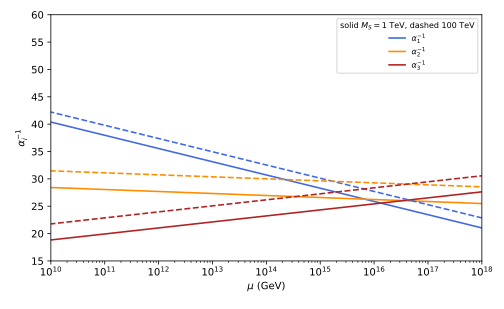
figures/ren-thresholds.sage.
The definition makes the step approximation and the correction to it precise. The correction is the price of replacing a smooth function of \mu/M by a step at \mu = M.
Definition 21 (Threshold correction) In a theory with heavy particles of masses M_k, the step approximation to the one-loop running uses \alpha_i^{-1}(\mu) = \alpha_i^{-1}(\mu_0) - \sum_k\frac{b_i^{(k)}}{2\pi}\log\frac{\mu}{\mu_0}\,\Theta(\mu - M_k)\Big|_{\text{integrated piecewise}}, each particle contributing its coefficient b_i^{(k)} only above its mass (Nath 2017, eqs. 9.87-9.91). The threshold correction of a particle is the finite difference, at scales far above its mass, between the exact one-loop coupling and the step approximation matched at \mu = M_k; in a mass-independent scheme it is the constant term of the matching condition of Definition 19.
Veriphy. Pending.
Lean. Pending.
Sage. Pending.
For the electron the exact momentum-space coupling and the step approximation differ by a constant at high energies. The first example evaluates it.
Example 127 (The threshold constant of a fermion) The exact one-loop inverse coupling \alpha^{-1} - \frac2\pi\int_0^1x(1 - x)\log(1 + x(1 - x)\frac{\mu^2}{m^2})dx and the step approximation \alpha^{-1} - \frac{2}{3\pi}\log\frac\mu m\,\Theta(\mu - m) differ by \frac{5}{9\pi} = 0.177 for \mu \gg m (Exercise 57): this is the threshold correction of the fermion in momentum subtraction, and it shows that matching at \mu = m is not exact. Matching at \mu = me^{5/6} instead removes it, the scale at which the step reproduces the exact asymptote (Exercise 149).
Veriphy. Pending.
Lean. Pending.
Sage. Pending.
Unified theories have heavy thresholds at the unification scale as well. The second example uses a relation of Nath (2017, eq. 9.92) in which the heavy masses enter only through two logarithms.
Example 128 (A low-energy probe of a heavy mass) In the minimal supersymmetric SU(5) model with superpartners at M_S and a colour-triplet Higgs at M_{H_3}, 3\alpha_2^{-1}(M_Z) - 2\alpha_3^{-1}(M_Z) - \alpha_1^{-1}(M_Z) = \frac{1}{2\pi}\bigl(\frac{12}{5}\log\frac{M_{H_3}}{M_Z} - 2\log\frac{M_S}{M_Z}\bigr) (Nath 2017, eq. 9.92). With the couplings of Figure 15 the left side is 13.51, and for M_S = 1\,\mathrm{TeV} it gives M_{H_3} \approx 1.6 \times 10^{18}\,\mathrm{GeV}; varying \alpha_3(M_Z) by \pm0.007 moves M_{H_3} over two orders of magnitude (Exercise 150). Low-energy couplings measure a heavy mass through its threshold, but only logarithmically.
Veriphy. Pending.
Lean. Pending.
Sage. Pending.
At the compactification scale the whole tower appears, and the zero modes differ from the excited levels. The third example identifies the threshold term in Proposition 11.
Example 129 (The threshold of a tower) In Proposition 11 the term -\frac{b_i - \tilde b_i}{2\pi}\log\frac\Lambda{\mu_0} corrects the power-law term for the zero modes, which run with b_i, not \tilde b_i: it is the threshold of a tower whose lowest level differs from the others. The remaining freedom is in how the cutoffs at \mu_0 and \Lambda are imposed on the proper-time integral; Dienes et al. (1999, Appendix A) fixes it with the factor r = \pi X_\delta^{-2/\delta}, for which the approximation of four flat dimensions below \mu_0 and 4 + \delta above reproduces the sum over levels (Exercise 146). A different completion of the theory at \Lambda would change the constants by amounts of order \frac{\tilde b_i}{2\pi}, the threshold corrections proper, which the effective theory cannot compute.
Veriphy. Pending.
Lean. Pending.
Sage. Pending.
The exercises compute the fermion threshold constant, the triplet mass from the low-energy couplings, and the shift of the unification scale with M_S. The first uses Sage.
Exercise 149 (The fermion threshold constant) Compute \frac2\pi\int_0^1x(1 - x)\log(1 + x(1 - x)z^2)dx - \frac{2}{3\pi}\log z for z = 10, 10^3, 10^5 with Sage, show that it tends to -\frac{5}{9\pi}, and find the matching scale \mu_* at which the step approximation reproduces the asymptote.
The difference tends to -\frac{5}{9\pi} = -0.1768: the exact screening lags behind the step by this constant. A step at \mu_* gives -\frac{2}{3\pi}\log\frac{\mu}{\mu_*} for the second term, and equality with the asymptote -\frac{2}{3\pi}(\log z - \frac56) requires \log\frac{\mu_*}{m} = \frac56, \mu_* = e^{5/6}m = 2.30m:
x = var('x')
for z in [10, 1e3, 1e5]:
d = 2 / pi * numerical_integral(x * (1 - x) * log(1 + x * (1 - x) * z^2), 0, 1)[0] - 2 / (3 * pi) * log(z)
print("z = %.0e: %.6f" % (z, d))
print("-5/(9 pi) = %.6f, e^(5/6) = %.4f" % ((-5 / (9 * pi)).n(), exp(5 / 6).n()))Output:
z = 1e+01: -0.170794
z = 1e+03: -0.176838
z = 1e+05: -0.176839
-5/(9 pi) = -0.176839, e^(5/6) = 2.3010Veriphy. Pending.
Lean. Pending.
Sage. Pending.
The relation of Example 128 can be solved for the triplet mass. The second exercise does it with Sage and measures the sensitivity to the strong coupling.
Exercise 150 (The triplet mass) With \alpha_1 = 0.016985, \alpha_2 = 0.03358 and \alpha_3 = 0.118 \pm 0.007 at M_Z (Nath 2017, eq. 9.33), solve the relation of Example 128 for M_{H_3} with M_S = 1 and 10\,\mathrm{TeV}.
\log\frac{M_{H_3}}{M_Z} = \frac{5}{12}\bigl(2\pi(3\alpha_2^{-1} - 2\alpha_3^{-1} - \alpha_1^{-1}) + 2\log\frac{M_S}{M_Z}\bigr). For M_S = 1\,\mathrm{TeV}: M_{H_3} = 9.5 \times 10^{16}, 1.6 \times 10^{18} and 1.9 \times 10^{19}\,\mathrm{GeV} for \alpha_3 = 0.111, 0.118, 0.125; for M_S = 10\,\mathrm{TeV} all are larger by a factor 10^{5/6} = 6.8. The triplet mass is pushed close to the Planck scale, a known tension of the minimal model, and the large uncertainty comes from the factor 2\pi\cdot2\cdot\frac{5}{12} multiplying \delta\alpha_3^{-1}:
MZ = 91.1876; a1, a2 = 0.016985, 0.03358
for MS in [1e3, 1e4]:
for a3 in [0.111, 0.118, 0.125]:
lhs = 3 / a2 - 2 / a3 - 1 / a1
logM = 5 / 12 * (2 * pi * lhs + 2 * log(MS / MZ))
print("M_S = %.0e, alpha_3 = %.3f: left side %.3f, M_H3 = %.2e GeV" % (MS, a3, lhs, (MZ * exp(logM)).n()))Output:
M_S = 1e+03, alpha_3 = 0.111: left side 12.445, M_H3 = 9.48e+16 GeV
M_S = 1e+03, alpha_3 = 0.118: left side 13.514, M_H3 = 1.56e+18 GeV
M_S = 1e+03, alpha_3 = 0.125: left side 14.463, M_H3 = 1.87e+19 GeV
M_S = 1e+04, alpha_3 = 0.111: left side 12.445, M_H3 = 6.46e+17 GeV
M_S = 1e+04, alpha_3 = 0.118: left side 13.514, M_H3 = 1.06e+19 GeV
M_S = 1e+04, alpha_3 = 0.125: left side 14.463, M_H3 = 1.27e+20 GeVVeriphy. Pending.
Lean. Pending.
Sage. Pending.
The superpartner threshold changes the slopes over a range of scales. The third exercise computes how far the meeting point of \alpha_1 and \alpha_2 moves.
Exercise 151 (Moving the superpartner threshold) In the step approximation with Standard Model coefficients below M_S and supersymmetric ones above, find the scale where \alpha_1 = \alpha_2 as a function of M_S, and evaluate it for M_S = 1, 10 and 100\,\mathrm{TeV}.
Below M_S the difference \alpha_1^{-1} - \alpha_2^{-1} falls at the rate \frac{b_1 - b_2}{2\pi} = \frac{41/10 + 19/6}{2\pi} = \frac{109/15}{2\pi} per unit of \log\mu, above at \frac{33/5 - 1}{2\pi} = \frac{28/5}{2\pi}. With t_S = \log\frac{M_S}{M_Z} and \Delta = \alpha_1^{-1} - \alpha_2^{-1} = 29.10 at M_Z, the meeting is at t = t_S + \frac{2\pi\Delta - \frac{109}{15}t_S}{28/5}, which decreases as t_S grows, by \frac{109/15 - 28/5}{28/5} = 0.30 per unit of t_S: from M_S = 1 to 100\,\mathrm{TeV}, t_S grows by 4.6 and the meeting scale falls by a factor e^{1.4} \approx 4.
Veriphy. Pending.
Lean. Pending.
Sage. Pending.
The Casimir energy of compact dimensions
The zero-point energy of a field on a compact space depends on its size, and the dependence is finite: the divergences of the vacuum energy are local and proportional to the volume, while the size dependence comes from the global structure. On a circle it acts as a potential for the radius, and its sign decides whether the circle tends to shrink or to grow. The figure shows the energy of a scalar on a circle as a function of its mass.
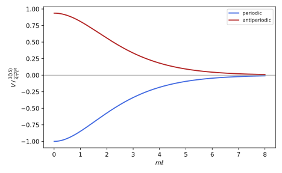
figures/ren-casimir.sage.
The proposition gives the energy on a circle in closed form. It is the five-dimensional analogue of the vacuum energy of a circle in two dimensions (Exercise 93 of Quantum field theory).
Proposition 12 (The Casimir energy of a circle) For a real scalar of mass m on \mathbb R^{1,3} \times S^1 with circumference \ell, the one-loop vacuum energy per unit three-volume, with its divergent part proportional to \ell removed by a bulk counterterm, is V(\ell) = -\frac{3}{4\pi^2\ell^4}\Bigl(\mathrm{Li}_5(\pm e^{-m\ell}) + m\ell\,\mathrm{Li}_4(\pm e^{-m\ell}) + \frac{(m\ell)^2}{3}\mathrm{Li}_3(\pm e^{-m\ell})\Bigr) for periodic (+) and antiperiodic (-) boundary conditions. For m = 0 it is -\frac{3\zeta(5)}{4\pi^2\ell^4} (periodic) and +\frac{15}{16}\frac{3\zeta(5)}{4\pi^2\ell^4} (antiperiodic). A massless five-dimensional Dirac fermion contributes -4 times, a vector 3 times and the graviton 5 times the periodic scalar (Pontón and Poppitz 2001, eqs. 10-12 and 18, with \ell = 2L).
Veriphy. Pending.
Lean. Pending.
Sage. Pending.
Proof (outline). The energy is \frac12\sum_n\int\frac{d^3k}{(2\pi)^3}\sqrt{\vec k^2 + m^2 + (2\pi n/\ell)^2} divided by \ell. In dimensional regularisation the k integral in 3 - \epsilon dimensions is a multiple of \Gamma(-2 + \frac\epsilon2)M_n^{4 - \epsilon}, and for m = 0, with M_n = 2\pi|n|/\ell, the sum over n is 2(2\pi/\ell)^{4 - \epsilon}\zeta(-4 + \epsilon): the pole of \Gamma multiplies \zeta(-4) = 0, so the result is finite and proportional to \zeta'(-4) = \frac{3\zeta(5)}{4\pi^4}, which gives -\frac{3\zeta(5)}{4\pi^2\ell^4} (Pontón and Poppitz 2001, eqs. 9-11). For m > 0, Poisson resummation turns the sum over levels into a sum over windings k of the five-dimensional propagator around the circle, each winding giving a Bessel function K_{5/2}(km\ell) that is elementary, \propto e^{-km\ell}(3 + 3km\ell + k^2m^2\ell^2)/k^5, and the sum over k is the polylogarithm combination; antiperiodic fields carry a sign (-1)^k. A fermion has four real degrees of freedom with the opposite sign of the vacuum energy, and the graviton five physical polarisations in five dimensions. \square
The zeta function gives the massless result directly. The first example spells out the numbers.
Example 130 (The massless scalar) With \zeta(5) = 1.0369, V = -\frac{3 \times 1.0369}{4\pi^2\ell^4} = -\frac{0.0788}{\ell^4}: the energy decreases as the circle shrinks, an attractive force on the radius. Compared with the two-dimensional result -\frac{\pi}{6\ell} (Exercise 93 of Quantum field theory), both are -\frac{\Gamma(D/2)\zeta(D)}{\pi^{D/2}\ell^{D - 1}} for D = 2 and D = 5, the general formula for one degree of freedom in D dimensions (Exercise 155).
Veriphy. Pending.
Lean. Pending.
Sage. Pending.
The total energy is a sum over the fields with their signs. The second example adds the contributions of a five-dimensional supergravity multiplet and of the fields of a gauge theory.
Example 131 (Fields with signs) The graviton gives 5V_0 with V_0 = -\frac{3\zeta(5)}{4\pi^2\ell^4}, attractive. A vector with a Dirac fermion, periodic, gives 3V_0 - 4V_0 = -V_0, repulsive, and a theory with equal numbers of bosonic and fermionic degrees of freedom with the same boundary conditions gives zero, the cancellation of supersymmetry. If the fermions are antiperiodic, as when supersymmetry is broken by the boundary conditions, a fermion contributes -4 times the antiperiodic scalar, -4\cdot(-\frac{15}{16})V_0 = \frac{15}{4}V_0, of the same sign as the bosons, and the contributions add instead of cancelling (Pontón and Poppitz 2001, eqs. 12-13).
Veriphy. Pending.
Lean. Pending.
Sage. Pending.
On a sphere the energy is a zeta-regularised sum over the spectrum. The third example computes it for a conformally coupled scalar on the three-sphere and the two-sphere.
Example 132 (Spheres) For a conformally coupled scalar on \mathbb R \times S^3 of radius a the frequencies are \frac na with degeneracy n^2, n \geq 1, so E = \frac{1}{2a}\sum n^3 = \frac{\zeta(-3)}{2a} = \frac{1}{240a}, positive. On \mathbb R \times S^2 the frequencies are \frac{l + 1/2}{a} with degeneracy 2l + 1, and E = \frac1a\sum_l(l + \frac12)^2 = \frac1a\zeta_H(-2, \frac12) = 0, since the Hurwitz zeta function vanishes there (Exercise 154). The vacuum energy of a compact space depends on its dimension and curvature, not only on its size.
Veriphy. Pending.
Lean. Pending.
Sage. Pending.
The exercises compute \zeta'(-4), check the massive formula, evaluate the sphere sums, and derive the formula for any dimension. The first uses Sage.
Exercise 152 (The derivative of zeta at -4) Check \zeta'(-4) = \frac{3\zeta(5)}{4\pi^4} numerically with Sage, and use it to evaluate the massless Casimir energy for \ell = 1.
Both sides equal 0.0079838; the identity follows from the functional equation of \zeta at s = 5. Then V = -\frac{\pi^2}{\ell^4}\zeta'(-4) = -\frac{3\zeta(5)}{4\pi^2\ell^4} = -0.0788 for \ell = 1:
s = var('s')
zp = diff(zeta(s), s).subs(s=-4).n(60)
print("zeta'(-4) = %.12f, 3 zeta(5)/(4 pi^4) = %.12f" % (zp, (3 * zeta(5) / (4 * pi^4)).n(60)))
print("V(l = 1) = %.6f" % (-pi^2 * zp).n())Output:
zeta'(-4) = 0.007983811450, 3 zeta(5)/(4 pi^4) = 0.007983811450
V(l = 1) = -0.078797Veriphy. Pending.
Lean. Pending.
Sage. Pending.
The massive formula must reduce to the massless one and fall off exponentially. The second exercise checks both, and compares with a direct sum over windings.
Exercise 153 (The massive scalar) With Sage, evaluate the polylogarithm combination of Proposition 12 for m\ell = 0.001, 1, 5, compare with \zeta(5) at small m\ell, and check it against the winding sum \sum_{k \geq 1}e^{-km\ell}(3 + 3km\ell + (km\ell)^2)/(3k^5).
\mathrm{Li}_s(x) = \sum_kx^k/k^s, so the combination is \sum_ke^{-km\ell}(\frac{1}{k^5} + \frac{m\ell}{k^4} + \frac{(m\ell)^2}{3k^3}), the winding sum term by term. At m\ell = 0.001 it is 1.0369, \zeta(5) to the shown digits; at m\ell = 1 it is 0.878 and at m\ell = 5 it is 0.097, the factor e^{-5} = 0.0067 being partly compensated by the powers of m\ell; the antiperiodic combinations are -0.972, -0.841 and -0.097, with -0.972 = -\frac{15}{16}\zeta(5) at small m\ell:
import mpmath as mpm
for x in [0.001, 1, 5]:
for sgn in [1, -1]:
q = sgn * mpm.e**(-x)
c = mpm.polylog(5, q) + x * mpm.polylog(4, q) + x**2 / 3 * mpm.polylog(3, q)
w = sum(sgn**k * mpm.e**(-k * x) * (3 + 3 * k * x + (k * x)**2) / (3 * k**5) for k in range(1, 400))
print("m l = %-5s %-12s combination %.6f, winding sum %.6f" % (x, "periodic" if sgn > 0 else "antiperiodic", c, w))
print("zeta(5) = %.6f, 15/16 zeta(5) = %.6f" % (zeta(5).n(), (15 / 16 * zeta(5)).n()))Output:
m l = 0.00100000000000000 periodic combination 1.036928, winding sum 1.036928
m l = 0.00100000000000000 antiperiodic combination -0.972120, winding sum -0.972120
m l = 1 periodic combination 0.878370, winding sum 0.878370
m l = 1 antiperiodic combination -0.841334, winding sum -0.841334
m l = 5 periodic combination 0.096640, winding sum 0.096640
m l = 5 antiperiodic combination -0.096514, winding sum -0.096514
zeta(5) = 1.036928, 15/16 zeta(5) = 0.972120Veriphy. Pending.
Lean. Pending.
Sage. Pending.
The vacuum energies on spheres are sums that the zeta function evaluates in closed form. The third exercise does both cases of Example 132.
Exercise 154 (Zeta values on spheres) Show that \sum_{n \geq 1}n^3 \to \zeta(-3) = \frac{1}{120} and \sum_{l \geq 0}(l + \frac12)^2 \to \zeta_H(-2, \frac12) = 0, using \zeta_H(-k, a) = -\frac{B_{k + 1}(a)}{k + 1} with the Bernoulli polynomials B_2(x) = x^2 - x + \frac16 and B_3(x) = x^3 - \frac32x^2 + \frac12x.
\zeta(-3) = \zeta_H(-3, 1) = -\frac{B_4(1)}{4}, and B_4(1) = B_4 = -\frac{1}{30}, so \zeta(-3) = \frac{1}{120} and E_{S^3} = \frac{1}{240a}. \zeta_H(-2, \frac12) = -\frac{B_3(1/2)}{3} with B_3(\frac12) = \frac18 - \frac38 + \frac14 = 0: the sum vanishes. For S^2 the cancellation is a consequence of the symmetry B_3(1 - x) = -B_3(x), which makes B_3 vanish at \frac12.
Veriphy. Pending.
Lean. Pending.
Sage. Pending.
The massless results in two and five dimensions are cases of one formula valid in every dimension. The fourth exercise derives it from the sum over windings.
Exercise 155 (The Casimir energy in D dimensions) For a massless real scalar on \mathbb R^{1, D - 2} \times S^1, show with the winding representation that the energy per unit (D - 2)-volume is V_D = -\frac{\Gamma(D/2)\zeta(D)}{\pi^{D/2}\ell^{D - 1}}, and check it for D = 2 and D = 5.
The vacuum energy density of a massless field in D dimensions on a circle is minus the sum over windings k \neq 0 of the propagator at separation k\ell, integrated appropriately: each winding gives -\frac{\Gamma(D/2)}{2\pi^{D/2}(|k|\ell)^D} per unit D - 1 volume, and summing over k \neq 0 gives -\frac{\Gamma(D/2)\zeta(D)}{\pi^{D/2}\ell^D}; multiplying by \ell gives V_D. For D = 2, -\frac{\Gamma(1)\zeta(2)}{\pi\ell} = -\frac{\pi}{6\ell}, the result of Exercise 93 of Quantum field theory; for D = 5, \Gamma(\frac52) = \frac{3\sqrt\pi}{4} gives -\frac{3\zeta(5)}{4\pi^2\ell^4}, the proposition.
Veriphy. Pending.
Lean. Pending.
Sage. Pending.
Exercises
The first integrative exercise asks whether the Casimir energy can stabilise the radius. It combines Proposition 12 with the counterterm structure of Proposition 1.
Exercise 156 (Can the circle be stabilised) The vacuum energy of a five-dimensional theory on a circle, as a function of \ell, is V(\ell) = \Lambda_5\ell + \frac{c}{\ell^4}, the first term from a bulk cosmological constant (the local counterterm) and the second from the massless fields. Show that V has no minimum with V = 0 there, and explain how a massive field changes this.
V' = \Lambda_5 - \frac{4c}{\ell^5} = 0 requires \Lambda_5 and c of the same sign, and then V = \Lambda_5\ell + \frac{\Lambda_5\ell}{4} = \frac54\Lambda_5\ell \neq 0 at the extremum: a stationary radius comes with a four-dimensional cosmological constant, which spoils the assumption of a flat background (Pontón and Poppitz 2001, sec. 2.2). A massive field adds a term that depends on m\ell and falls off like e^{-m\ell} (Figure 27), a new scale that allows a minimum with V = V' = 0 for suitable parameters, with \ell \sim 1/m (Pontón and Poppitz 2001, sec. 2.4).
Veriphy. Pending.
Lean. Pending.
Sage. Pending.
The second integrative exercise applies the power-law running of Proposition 11 to a single abelian coupling. It compares the pole of the running with the strong-coupling scale of Definition 20.
Exercise 157 (Power law and strong coupling) For an abelian gauge theory with towers in \delta extra dimensions, b = \tilde b = 1, and \alpha^{-1}(\mu_0) = 30, find with the proposition the cutoff \Lambda at which \alpha^{-1} reaches zero, for \delta = 1 and \delta = 2, and compare \Lambda/\mu_0 with the strong-coupling scale \Lambda_sR of Exercise 142.
With b = \tilde b the logarithm drops out: \alpha^{-1}(\Lambda) = 30 - \frac{X_\delta}{2\pi\delta}((\Lambda/\mu_0)^\delta - 1). For \delta = 1, X_1 = 2 and \frac{1}{\pi}(x - 1) = 30 gives x = 1 + 30\pi = 95; for \delta = 2, X_2 = \pi and \frac14(x^2 - 1) = 30 gives x = 11. The strong-coupling estimates are 283 and 15.5: the two ways of locating the breakdown, the pole of the power-law running and naive dimensional analysis, agree within a factor of three, the accuracy one can expect from estimates that ignore numbers of order one.
Veriphy. Pending.
Lean. Pending.
Sage. Pending.
The third integrative exercise collects the threshold structure of a compactification and asks whether the theorem of decoupling applies to it. It combines Example 129, Proposition 11 and Theorem 4.
Exercise 158 (Do Kaluza-Klein modes decouple) The Kaluza-Klein levels have masses |n|/R that do not come from couplings. Use Theorem 4 to argue that at energies E \ll 1/R their effects on four-dimensional amplitudes are suppressed by (ER)^2 apart from finite threshold corrections to the couplings, and estimate the size of these corrections for a gauge coupling with \tilde b = -6.
The masses are vector-like, set by the geometry, and the couplings of the levels to the zero modes are the four-dimensional gauge coupling, independent of n: the hypotheses of the theorem hold for each level, and its effects below 1/R are a change of the couplings plus terms of order (E/m_n)^2 = (ER)^2/n^2, whose sum over n converges. The threshold correction of the tower is of order \frac{\tilde b}{2\pi} times a number of order one (Example 129), about 1 in \alpha^{-1} for \tilde b = -6: compared with \alpha_3^{-1} \approx 8.5 at M_Z it is a ten per cent effect, which a precision analysis of unification must include.
Veriphy. Pending.
Lean. Pending.
Sage. Pending.
Exercises
Four exercises that combine the parts of this chapter. The first computes a finite mass correction from the tower of a compact dimension with dimensional regularisation and Poisson resummation; the second relates the Casimir energy of a spatial circle to the thermal free energy; the third shows that critical exponents do not depend on the scheme in which they are computed; and the fourth follows a coupling through a threshold with three different tools.
The first integrative exercise is a one-loop computation in five dimensions in which every divergence is removed by a local counterterm of the five-dimensional theory and a finite, radius-dependent mass remains.
Exercise 159 (A finite mass from a compact dimension) For a massless real scalar with \frac{\lambda_5}{4!}\phi^4 on \mathbb R^{1,3} \times S^1 of circumference \ell, the one-loop mass of the zero mode is \delta m^2 = \frac{\lambda_5}{2}G_\ell(0), where G_\ell(0) is the five-dimensional propagator at coincident points on the circle. Write G_\ell(0) = \sum_{k \in \mathbb Z}G_5(k\ell) by the method of images, with G_5(r) = \frac{1}{8\pi^2r^3}, drop the k = 0 term (a local divergence, zero in dimensional regularisation), and show that \delta m^2 = \frac{\lambda_4\zeta(3)}{8\pi^2\ell^2} with \lambda_4 = \lambda_5/\ell. Check the image sum numerically with Sage against the mode sum regularised by a smooth cutoff.
The images give \sum_{k \neq 0}\frac{1}{8\pi^2|k|^3\ell^3} = \frac{2\zeta(3)}{8\pi^2\ell^3}, so \delta m^2 = \frac{\lambda_5}{2}\cdot\frac{\zeta(3)}{4\pi^2\ell^3} = \frac{\lambda_5\zeta(3)}{8\pi^2\ell^3} = \frac{\lambda_4\zeta(3)}{8\pi^2\ell^2}. The term k = 0 is the coincidence limit of the propagator of infinite five-dimensional space, a cubic divergence independent of \ell, removed by the bulk mass counterterm (in dimensional regularisation it vanishes, Example 6). The finite remainder is positive and falls like 1/\ell^2: the compact dimension gives the zero mode a mass that a four-dimensional observer could not tune away. In the mode sum \frac{1}{\ell}\sum_n\int\frac{d^4k}{(2\pi)^4}\frac{1}{k^2 + (2\pi n/\ell)^2} the same number appears as the difference between the sum and the corresponding integral over n:
import mpmath as mpm
th = lambda t: mpm.jtheta(3, 0, mpm.e**(-4 * mpm.pi**2 * t))
def F(Lam):
f = lambda t: (th(t) - 1 / mpm.sqrt(4 * mpm.pi * t)) / (16 * mpm.pi**2 * t**2)
return mpm.quad(f, [1 / Lam**2, 0.001, 0.01, 0.1, 1, mpm.inf])
for Lam in [5, 10, 20]:
print("cutoff %2d: %.10f" % (Lam, F(Lam)))
print("image sum 2 zeta(3)/(8 pi^2) = %.10f" % (2 * zeta(3) / (8 * pi^2)).n())
print("delta m^2 = lambda_4 zeta(3)/(8 pi^2 l^2): coefficient %.6f" % (zeta(3) / (8 * pi^2)).n())Output:
cutoff 5: 0.0303002074
cutoff 10: 0.0304484571
cutoff 20: 0.0304484571
image sum 2 zeta(3)/(8 pi^2) = 0.0304484571
delta m^2 = lambda_4 zeta(3)/(8 pi^2 l^2): coefficient 0.015224Veriphy. Pending.
Lean. Pending.
Sage. Pending.
The second integrative exercise relates two computations of the chapter by the symmetry of a Euclidean space with one compact direction. It is the four-dimensional version of Exercise 96 of Quantum field theory.
Exercise 160 (Casimir energy and black-body radiation) For a massless scalar in four dimensions, compare the Casimir energy per unit area of a spatial circle of circumference \ell, V_4 = -\frac{\Gamma(2)\zeta(4)}{\pi^2\ell^3} (Exercise 155), with the free energy per unit volume of black-body radiation of one degree of freedom, f = -\frac{\pi^2T^4}{90}. Show that \beta f(\beta) = V_4(\ell = \beta), and explain why.
V_4 = -\frac{\zeta(4)}{\pi^2\ell^3} = -\frac{\pi^4/90}{\pi^2\ell^3} = -\frac{\pi^2}{90\ell^3}, and \beta f = -\frac{\pi^2}{90\beta^3}: the same function. The Euclidean path integral on \mathbb R^3 \times S^1_\beta computes both. Read with the circle as time, \log Z = -\beta Vf = \frac{\pi^2}{90}\frac{V\beta}{\beta^4}; read with the circle as a spatial direction of length \ell = \beta and one infinite direction of length T as time, \log Z = -TAV_4 = \frac{\pi^2}{90}\frac{TA\beta}{\beta^4}. Both are \frac{\pi^2}{90} times the four-volume over \beta^4, and the rotation invariance of the Euclidean theory exchanges the two readings. The Stefan-Boltzmann law is a Casimir effect.
Veriphy. Pending.
Lean. Pending.
Sage. Pending.
The third integrative exercise uses the scheme independence of Proposition 4 at the fixed point of Proposition 8. It shows that the momentum-shell and the minimal-subtraction computations must agree on the exponents, and checks it at first order.
Exercise 161 (Exponents do not depend on the scheme) The momentum-shell flow of Example 94 and the minimal-subtraction beta function of Proposition 9 are related by a change of variables g = u + O(u^2), r = a function of m^2 and u. Show that y_t to first order is the same in both, and explain why \eta and \nu to every order must agree although u^* and g^* differ at second order.
In the shell scheme y_t = 2 - \frac{n + 2}{3}g^* with g^* = \frac{3\epsilon}{n + 8}; in minimal subtraction \nu^{-1} = 2 - \gamma_{m^2}(u^*) with \gamma_{m^2} = \frac{n + 2}{3}u and u^* = \frac{3\epsilon}{n + 8}: the same 2 - \frac{n + 2}{n + 8}\epsilon. At higher orders the positions of the fixed points differ, but the eigenvalues of the linearised flow at a fixed point are invariant under smooth changes of coordinates (Proposition 4, Exercise 55), and \eta is the anomalous dimension of the field there, also invariant. Critical exponents are properties of the fixed point, not of the coordinates in which the flow is written.
Veriphy. Pending.
Lean. Pending.
Sage. Pending.
The fourth integrative exercise follows the electromagnetic coupling from the Thomson limit to the Z mass with three tools of the chapter. It combines Definition 12, Definition 21 and Proposition 6.
Exercise 162 (One coupling, three tools) With the leptons only, compute 1/\alpha(M_Z) (a) from the exact one-loop vacuum polarisation in the on-shell scheme, (b) in \overline{\mathrm{MS}} with step thresholds at the lepton masses, and (c) in \overline{\mathrm{MS}} with steps at e^{5/6}m_\ell. Explain which of the three agree and why, using Sage for the numbers.
- gives 132.73 (Exercise 82). (b) gives 137.036 - \frac{2}{3\pi}\sum_\ell\log\frac{M_Z}{m_\ell} = 132.20, smaller by 3 \times \frac{5}{9\pi} = 0.53, the three threshold constants of Example 127. (c) moves each step to the scale where it reproduces the asymptote and gives 132.73 again: (a) and (c) describe the same effective charge, (b) the \overline{\mathrm{MS}} coupling, which is a different quantity, related to (a) by the constant scheme conversion of Exercise 57:
al = 1 / 137.035999; MZ = 91.1876; ml = [0.000510999, 0.1056584, 1.77686]
x = var('x')
exact = 1 / al - sum(2 / pi * numerical_integral(x * (1 - x) * log(1 + x * (1 - x) * MZ^2 / m^2), 0, 1)[0] for m in ml)
steps = 1 / al - sum(2 / (3 * pi) * log(MZ / m) for m in ml)
shifted = 1 / al - sum(2 / (3 * pi) * log(MZ / (exp(5 / 6) * m)) for m in ml)
print("(a) exact one-loop %.4f (b) steps at m %.4f (c) steps at e^(5/6) m %.4f" % (exact.n(), steps.n(), shifted.n()))
print("(a) - (b) = %.4f, 3 x 5/(9 pi) = %.4f" % ((exact - steps).n(), (3 * 5 / (9 * pi)).n()))Output:
(a) exact one-loop 132.7300 (b) steps at m 132.1997 (c) steps at e^(5/6) m 132.7302
(a) - (b) = 0.5303, 3 x 5/(9 pi) = 0.5305Veriphy. Pending.
Lean. Pending.
Sage. Pending.